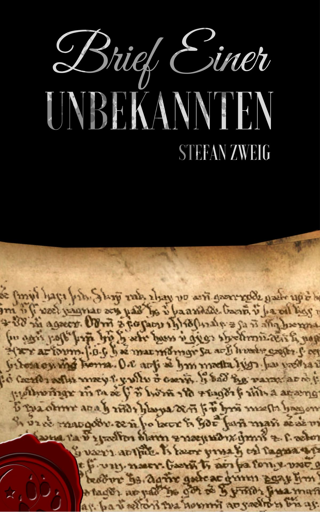

0
стр. з
0
сторінок

завантаження...

Стефан Цвейг
Письмо незнакомки
Перевод Екатерины Сакоян
Метод чтения Ильи Франка
Inhalt
Brief einer Unbekannten
Письмо незнакомки
Als der bekannte Romanschriftsteller R. frühmorgens von dreitägigem erfrischendem Ausflug ins Gebirge wieder nach Wien zurückkehrte (когда известный писатель-романист Р. ранним утром, после трехдневной бодрящей прогулки в горы, снова вернулся в Вену; der Schriftsteller — писатель; erfrischen — освежать, бодрить; der Ausflug — экскурсия, прогулка; ausfliegen — вылетать; совершать прогулку, отправиться погулять) und am Bahnhof eine Zeitung kaufte (и купил на вокзале газету; der Bahnhof), wurde er, kaum dass er das Datum überflog, erinnernd gewahr (он, едва взглянув на дату, вспомнил: «вспоминая осознал»; sich erinnern an jemanden, etwas /Akk./ — вспоминать, помнить кого-либо, что-либо; gewahr werden — осознавать), dass heute sein Geburtstag sei (что сегодня его день рождения). Der einundvierzigste, besann er sich rasch (сорок первый, быстро подумал он; sich besinnen — /по/думать; опомниться; sich besinnen auf jemanden, etwas /Akk./ — вспомнить о ком-либо, чем-либо), und diese Feststellung tat ihm nicht wohl und nicht weh (и это утверждение = констатация /этого факта/ не доставила ему ни радости, ни боли: «не сделала ему ни хорошо, ни больно»; feststellen — устанавливать факт; заметить, констатировать что-либо; weh tun — делать/причинять боль). Flüchtig überblätterte er die knisternden Seiten der Zeitung (он бегло перелистал шуршащие страницы газеты; blättern — листать; das Blatt pl. die Blätter — лист; knistern — трещать, хрустеть, шуршать) und fuhr mit einem Mietautomobil in seine Wohnung (и поехал в арендованном автомобиле в свою квартиру»; fahren; die Miete — наем, прокат; mieten — нанимать, арендовать; das Automobíl).
Als der bekannte Romanschriftsteller R. frühmorgens von dreitägigem erfrischendem Ausflug ins Gebirge wieder nach Wien zurückkehrte und am Bahnhof eine Zeitung kaufte, wurde er, kaum dass er das Datum überflog, erinnernd gewahr, dass heute sein Geburtstag sei. Der einundvierzigste, besann er sich rasch, und diese Feststellung tat ihm nicht wohl und nicht weh. Flüchtig überblätterte er die knisternden Seiten der Zeitung und fuhr mit einem Mietautomobil in seine Wohnung.
Der Diener meldete aus der Zeit seiner Abwesenheit zwei Besuche sowie einige Telephonanrufe (слуга доложил о двух визитах за время его отсутствия, а также нескольких телефонных звонках; melden — сообщать; уведомлять, извещать; abwesend — отсутствующий; der Besuch; besuchen — навещать, посещать; der Anruf; jemanden anrufen — звонить кому-либо по телефону) und überbrachte auf einem Tablett die angesammelte Post (и передал на подносе накопившуюся почту; überbringen — передавать, доставлять, вручать; das Tablétt; ansammeln — накапливать, собирать). Lässig sah er den Einlauf an (он небрежно просмотрел поступившую корреспонденцию; der Einlauf — поступление /бумаг, денег/; einlaufen — поступать /о письмах, заказах/; jemanden, etwas /Akk./ ansehen — /по/смотреть на кого-либо, что-либо, осматривать), riss ein paar Kuverts auf, die ihn durch ihre Absender interessierten (разорвал = вскрыл несколько конвертов, которые заинтересовали его из-за их отправителей; aufreißen — разорвать, раздирать; das Kuvért [кувэр] pl. die Kuverts; absenden — отправлять, отсылать); einen Brief, der fremde Schriftzüge trug und zu umfangreich schien (письмо, которое было написано незнакомым почерком и казалось слишком объемным; der Schriftzug pl. die Schriftzüge — росчерк, почерк; tragen — носить; иметь, обладать; umfangreich: der Umfang — объем, размер, величина + reich — богатый; scheinen — казаться, создавать впечатление), schob er zunächst beiseite (он сначала отодвинул в сторону; beiseite — в сторону, прочь; schieben — двигать, толкать).
Der Diener meldete aus der Zeit seiner Abwesenheit zwei Besuche sowie einige Telephonanrufe und überbrachte auf einem Tablett die angesammelte Post. Lässig sah er den Einlauf an, riss ein paar Kuverts auf, die ihn durch ihre Absender interessierten; einen Brief, der fremde Schriftzüge trug und zu umfangreich schien, schob er zunächst beiseite.
Inzwischen war der Tee aufgetragen worden (тем временем был подан чай; auftragen — подавать /на стол/), bequem lehnte er sich in den Fauteuil (он удобно откинулся в кресле; sich lehnen an /in/ etwas /Akk./ — опираться, облокачиваться на что-либо; der Fauteuil [фотёй] — /фр./ кресло), durchblätterte noch einmal die Zeitung und einige Drucksachen (пролистал еще раз газету и несколько печатных изданий; drucken — печатать; die Sache — вещь, предмет); dann zündete er sich eine Zigarre an und griff nun nach dem zurückgelegten Briefe (затем он закурил: «зажег себе» сигару и теперь взялся за отложенное письмо; anzünden — зажигать; закуривать; greifen nach jemandem, etwas /Akk./ — хватать кого-либо, что-либо; браться, взяться за что-либо; zurücklegen — класть обратно; отложить в сторону).
Es waren etwa zwei Dutzend hastig beschriebene Seiten in fremder, unruhiger Frauenschrift (это были примерно две дюжины страниц, торопливо исписанных незнакомым, беспокойным женским почерком; das Dutzend; beschreiben — описывать; исписывать; die Schrift — шрифт; письменный текст; почерк /сокр./ от die Handschrift/), ein Manuskript eher als ein Brief (скорее манускрипт, чем письмо; eher — скорее, более). Unwillkürlich betastete er noch einmal das Kuvert (непроизвольно он еще раз ощупал конверт; die Willkür — произвол, самоуправство), ob nicht darin ein Begleitschreiben vergessen geblieben wäre (не осталось: «осталось забытым» ли там внутри сопроводительное послание; begleiten — сопровождать; das Schreiben — письмо, послание; vergessen — забывать; забытый; bleiben — оставаться).
Inzwischen war der Tee aufgetragen worden, bequem lehnte er sich in den Fauteuil, durchblätterte noch einmal die Zeitung und einige Drucksachen; dann zündete er sich eine Zigarre an und griff nun nach dem zurückgelegten Briefe.
Es waren etwa zwei Dutzend hastig beschriebene Seiten in fremder, unruhiger Frauenschrift, ein Manuskript eher als ein Brief. Unwillkürlich betastete er noch einmal das Kuvert, ob nicht darin ein Begleitschreiben vergessen geblieben wäre.
Aber der Umschlag war leer (но конверт был пуст) und trug so wenig wie die Blätter selbst eine Absenderadresse oder eine Unterschrift (и на нем не было, как и на самих листах, ни адреса отправителя, ни подписи: «он нес = имел на себе также мало, как и сами листы, адрес отправителя или подпись»; tragen — носить, нести; иметь, обладать). Seltsam, dachte er, und nahm das Schreiben wieder zur Hand (странно, подумал он, и снова взял письмо в руки: «руку»; denken; nehmen). »Dir, der Du mich nie gekannt«, stand oben als Anruf, als Überschrift («тебе, который никогда не знал меня», стояло сверху, как обращение, как заголовок; kennen — знать, быть знакомым; stehen; der Anruf — оклик, вызов; anrufen — окликать, звать; звонить по телефону; die Überschrift — надпись, заглавие; адрес на письме). Verwundert hielt er inne (удивленный, он перестал /читать/; verwundern — удивлять, поражать; innehalten — останавливаться, прекращать): galt das ihm, galt das einem erträumten Menschen (относится ли это к нему, относится ли это к какому-то вымышленному человеку; jemandem, etwas /Dat./ gelten — относиться к кому-либо, чему-либо; gelten — быть действительным; erträumen — воображать, представлять; der Mensch)? Seine Neugier war plötzlich wach (внезапно в нем проснулось любопытство: «его любопытство было внезапно бодрствующим»; wach sein — бодрствовать, не спать; wach werden — проснуться). Und er begann zu lesen (и он начал читать; beginnen):
Aber der Umschlag war leer und trug so wenig wie die Blätter selbst eine Absenderadresse oder eine Unterschrift. Seltsam, dachte er, und nahm das Schreiben wieder zur Hand. »Dir, der Du mich nie gekannt«, stand oben als Anruf, als Überschrift. Verwundert hielt er inne: galt das ihm, galt das einem erträumten Menschen? Seine Neugier war plötzlich wach. Und er begann zu lesen:
*
Mein Kind ist gestern gestorben (мой ребенок умер вчера; sterben) — drei Tage und drei Nächte habe ich mit dem Tode um dies kleine, zarte Leben gerungen (три дня и три ночи я боролась со смертью за эту маленькую, хрупкую жизнь; die Nacht pl. die Nächte; der Tod; mit jemandem, etwas /Dat./ um etwas /Akk./ ringen — бороться с кем-либо, чем-либо за что-либо), vierzig Stunden bin ich, während die Grippe seinen armen, heißen Leib im Fieber schüttelte, an seinem Bette gesessen (сорок часов, пока грипп сотрясал в лихорадке его бедное, горячее тело, я сидела у его постели; der Leib; das Fieber; schütteln — трясти; sitzen). Ich habe Kühles um seine glühende Stirn getan (я охлаждала его пылающий лоб: «клала прохладное вокруг его пылающего лба»; kühl — прохладный; glühen — гореть, пылать; tun — делать; /разг./ класть, помещать что-либо куда-либо), ich habe seine unruhigen, kleinen Hände gehalten Tag und Nacht (я держала его беспокойные маленькие руки день и ночь; ruhig — спокойный; die Ruhe — спокойствие, покой; halten — держать). Am dritten Abend bin ich zusammengebrochen (на третий вечер я обессилела; zusammenbrechen — рушиться; обессилить, упасть без сил). Meine Augen konnten nicht mehr, sie fielen zu, ohne dass ich es wusste (мои глаза больше не могли /смотреть/, они закрывались помимо моей воли: «без того, что я об этом знала»; das Auge pl. die Augen; zufallen — захлопываться, закрываться; wissen — знать).
Mein Kind ist gestern gestorben — drei Tage und drei Nächte habe ich mit dem Tode um dies kleine, zarte Leben gerungen, vierzig Stunden bin ich, während die Grippe seinen armen, heißen Leib im Fieber schüttelte, an seinem Bette gesessen. Ich habe Kühles um seine glühende Stirn getan, ich habe seine unruhigen, kleinen Hände gehalten Tag und Nacht. Am dritten Abend bin ich zusammengebrochen. Meine Augen konnten nicht mehr, sie fielen zu, ohne dass ich es wusste.
Drei Stunden oder vier war ich auf dem harten Sessel eingeschlafen (/на/ три или часа я заснула на жестком кресле; einschlafen — засыпать), und indes hat der Tod ihn genommen (а тем временем смерть забрала его; indes — /уст./ тем временем, между тем; nehmen — брать, взять). Nun liegt er dort, der süße, arme Knabe (теперь он лежит там, этот милый, бедный мальчик; süß — сладкий; милый, очаровательный), in seinem schmalen Kinderbett (в своей узкой детской кровати; das Bett), ganz so wie er starb (точно так: «совсем так», как он умер; sterben); nur die Augen hat man ihm geschlossen, seine klugen, dunkeln Augen (только глаза ему закрыли, его умные, темные глаза; das Auge pl. die Augen; schließen), die Hände über dem weißen Hemd hat man ihm gefaltet (руки ему сложили поверх белой рубашки; die Hand pl. die Hände; das Hemd; falten — складывать, сгибать), und vier Kerzen brennen hoch an den vier Enden des Bettes (и четыре свечи горят высоко в четырех концах = углах его кровати; die Kerze; das Ende — конец, окончание; край).
Drei Stunden oder vier war ich auf dem harten Sessel eingeschlafen, und indes hat der Tod ihn genommen. Nun liegt er dort, der süße, arme Knabe, in seinem schmalen Kinderbett, ganz so wie er starb; nur die Augen hat man ihm geschlossen, seine klugen, dunkeln Augen, die Hände über dem weißen Hemd hat man ihm gefaltet, und vier Kerzen brennen hoch an den vier Enden des Bettes.
Ich wage nicht hinzusehen (я не осмеливаюсь посмотреть туда; wagen — отваживаться, осмеливаться; рисковать; hinsehen — /по/смотреть, взглянуть туда), ich wage nicht mich zu rühren, denn wenn sie flackern, die Kerzen (я не осмеливаюсь пошевелиться, потому что когда они мерцают, эти свечи; sich rühren — двигаться, шевелиться; flackern — мерцать, колыхаться; вспыхивать), huschen Schatten über sein Gesicht und den verschlossenen Mund (тени скользят по его лицу и сомкнутому рту; der Schatten pl. die Schatten; das Gesicht; verschließen — запирать, замыкать), und es ist dann so, als regten sich seine Züge (и тогда это /выглядит/ так, будто бы его черты = черты его лица двигаются; sich regen — двигаться, /по/шевелиться, шелохнуться; der Zug pl. die Züge — черта /лица, характера), und ich könnte meinen, er sei nicht tot, er würde wieder erwachen (и я могла бы подумать, что он не мертв, он, может быть, снова проснется; meinen — иметь в виду, подразумевать; высказывать свое мнение, говорить) und mit seiner hellen Stimme etwas Kindlich-Zärtliches zu mir sagen (и своим звонким голосом скажет мне что-то по-детски ласковое; hell — светлый, ясный; высокий, звонки /о голосе/; die Stimme; sagen etwas /Akk./ zu jemandem — говорить что-либо кому-либо; zärtlich — нежный, ласковый). Aber ich weiß es, er ist tot (но я знаю, он мертв = умер), ich will nicht hinsehen mehr (я больше не хочу смотреть туда), um nicht noch einmal zu hoffen, nicht noch einmal enttäuscht zu sein (чтобы еще раз не /начать/ надеяться /и/ еще раз не быть разочарованной; enttäuschen — разочаровывать).
Ich wage nicht hinzusehen, ich wage nicht mich zu rühren, denn wenn sie flackern, die Kerzen, huschen Schatten über sein Gesicht und den verschlossenen Mund, und es ist dann so, als regten sich seine Züge, und ich könnte meinen, er sei nicht tot, er würde wieder erwachen und mit seiner hellen Stimme etwas Kindlich-Zärtliches zu mir sagen. Aber ich weiß es, er ist tot, ich will nicht hinsehen mehr, um nicht noch einmal zu hoffen, nicht noch einmal enttäuscht zu sein.
Ich weiß es, ich weiß es, mein Kind ist gestern gestorben (я знаю, я знаю, /что/ мой ребенок умер вчера; wissen; sterben) — jetzt habe ich nur Dich mehr auf der Welt, nur Dich (теперь только ты есть у меня: «я имею только тебя» на свете, только ты), der Du von mir nichts weißt (ты, который ничего не знаешь обо мне), der Du indes ahnungslos spielst oder mit Dingen und Menschen tändelst (ты, который тем временем, ни о чем не подозревая, играешь или забавляешься с вещами и людьми; die Ahnung — предчувствие; ahnen — предчувствовать; догадываться, подозревать; das Ding pl. die Dinge; der Mensch pl. die Menschen; tändeln — заниматься пустяками, забавляться; кокетничать). Nur Dich, der Du mich nie gekannt und den ich immer geliebt (только ты, который никогда не знал меня и которого я всегда любила).
Ich habe die fünfte Kerze genommen und hier zu dem Tisch gestellt (я взяла пятую свечу и поставила ее здесь на стол: «к столу»; nehmen), auf dem ich an Dich schreibe (на котором я пишу тебе; schreiben an jemanden — писать кому-либо).
Ich weiß es, ich weiß es, mein Kind ist gestern gestorben — jetzt habe ich nur Dich mehr auf der Welt, nur Dich, der Du von mir nichts weißt, der Du indes ahnungslos spielst oder mit Dingen und Menschen tändelst. Nur Dich, der Du mich nie gekannt und den ich immer geliebt.
Ich habe die fünfte Kerze genommen und hier zu dem Tisch gestellt, auf dem ich an Dich schreibe.
Denn ich kann nicht allein sein mit meinem toten Kinde (потому что я не могу быть одна с моим мертвым ребёнком), ohne mir die Seele auszuschreien (не крича о своей душевной боли: «без того, чтобы выкричать свою душу»; ausschreien — выкрикивать; schreien — кричать), und zu wem sollte ich sprechen in dieser entsetzlichen Stunde, wenn nicht zu Dir (и кому мне это «к кому я говорить в этот ужасный час, если не с тобой; sprechen zu jemandem — говорить кому-либо), der Du mir alles warst und alles bist (который был для меня всем и есть все = остаешься всем)! Vielleicht kann ich nicht deutlich zu Dir sprechen (может быть, я не смогу говорить с тобой вполне ясно), vielleicht verstehst Du mich nicht (может быть, ты не поймешь меня) — mein Kopf ist ja ganz dumpf (ведь моя голова совершенно затуманена; der Kopf; dumpf — приглушенный; тупой; тяжелый /напр. о сне/, замутненный /о сознании/), es zuckt und hämmert mir an den Schläfen, meine Glieder tun so weh (у меня дергает и стучит в висках, все мое тело: «мои члены» так болит; zucken — вздрагивать, подергиваться; hämmern — стучать молотком; der Hammer — молоток; die Schläfe — висок; das Glied pl. die Glieder — член /тела/, конечность; wehtun — болеть, причинять боль).
Denn ich kann nicht allein sein mit meinem toten Kinde, ohne mir die Seele auszuschreien, und zu wem sollte ich sprechen in dieser entsetzlichen Stunde, wenn nicht zu Dir, der Du mir alles warst und alles bist! Vielleicht kann ich nicht ganz deutlich zu Dir sprechen, vielleicht verstehst Du mich nicht — mein Kopf ist ja ganz dumpf, es zuckt und hämmert mir an den Schläfen, meine Glieder tun so weh.
Ich glaube, ich habe Fieber, vielleicht auch schon die Grippe (я думаю, у меня жар, может быть, уже тоже грипп; glauben — думать, полагать; верить; das Fieber — жар, лихорадка), die jetzt von Tür zu Tür schleicht (который крадется сейчас от двери к двери; die Tür; schleichen — красться; /тайно/ пробираться), und das wäre gut, denn dann ginge ich mit meinem Kinde (и это было бы хорошо, потому что тогда бы я ушла с моим ребенком) und müsste nichts tun wider mich (и не должна была бы сделать что-то с собой: «против себя»; tun — делать, выполнять; совершать). Manchmal wirds mir ganz dunkel vor den Augen (иногда у меня становится совсем темно перед глазами; wirds = wird es), vielleicht kann ich diesen Brief nicht einmal zu Ende schreiben (возможно, я даже: «ни разу» не смогу дописать это письмо до конца) — aber ich will alle Kraft zusammentun (но я хочу собрать все свои силы: «силу»; die Kraft pl. die Kräfte; zusammentun — соединять, собирать), um einmal, nur dieses eine Mal zu Dir zu sprechen (чтобы один раз, только один этот раз поговорить с тобой). Du mein Geliebter, der Du mich nie erkannt (ты, мой любимый, который меня никогда не узнавал; der/die Geliebte — возлюбленный/ая, любимый/ая; erkennen — различать, обнаруживать; узнавать).
Ich glaube, ich habe Fieber, vielleicht auch schon die Grippe, die jetzt von Tür zu Tür schleicht, und das wäre gut, denn dann ginge ich mit meinem Kinde und müsste nichts tun wider mich. Manchmal wirds mir ganz dunkel vor den Augen, vielleicht kann ich diesen Brief nicht einmal zu Ende schreiben — aber ich will alle Kraft zusammentun, um einmal, nur dieses eine Mal zu Dir zu sprechen. Du mein Geliebter, der Du mich nie erkannt.
Zu Dir allein will ich sprechen, Dir zum erstenmal alles sagen (только с тобой одним я хочу говорить, тебе впервые все высказать; zum erstenmal = zum ersten Mal); mein ganzes Leben sollst Du wissen, das immer das Deine gewesen und um das Du nie gewusst (ты должен знать всю мою жизнь, которая всегда была твоей = принадлежала тебе и которую ты никогда не знал). Aber Du sollst mein Geheimnis nur kennen, wenn ich tot bin (но ты должен узнать мою тайну только когда я умру «я мертвая»; das Geheimnis; geheim — тайный), wenn Du mir nicht mehr Antwort geben musst (когда ты больше не должен будешь дать мне ответ; die Antwort; antworten — отвечать), wenn das, was mir die Glieder jetzt so kalt und heiß schüttelt, wirklich das Ende ist (если то, что бросает сейчас мое тело то в жар, то в холод: «так холодно и жарко трясет мне члены», действительно конец; schütteln — трясти, встряхивать). Muss ich weiterleben (если мне суждено: «я должна» жить дальше), so zerreiße ich diesen Brief und werde weiter schweigen, wie ich immer schwieg (я разорву это письмо и буду молчать дальше, как я молчала всегда; zerreißen — разорвать, разодрать; reißen — рвать).
Zu Dir allein will ich sprechen, Dir zum erstenmal alles sagen; mein ganzes Leben sollst Du wissen, das immer das Deine gewesen und um das Du nie gewusst. Aber Du sollst mein Geheimnis nur kennen, wenn ich tot bin, wenn Du mir nicht mehr Antwort geben musst, wenn das, was mir die Glieder jetzt so kalt und heiß schüttelt, wirklich das Ende ist. Muss ich weiterleben, so zerreiße ich diesen Brief und werde weiter schweigen, wie ich immer schwieg.
Hältst Du ihn aber in Händen, so weißt Du (но если ты держишь его в руках, то знай: «ты знаешь»), dass hier eine Tote Dir ihr Leben erzählt (что здесь умершая рассказывает тебе свою жизнь; der/die Tote — покойник, умерший, мертвец), ihr Leben, das das Deine war von ihrer ersten bis zu ihrer letzten wachen Stunde (свою жизнь, которая была твоей от ее первого до последнего сознательного часа; wach — бодрствующий; бодрый, живой, смышленый). Fürchte Dich nicht vor meinen Worten (не бойся моих слов; sich fürchten vor jemandem, etwas /Dat./ — бояться/опасаться кого-либо, чего-либо; das Wort pl. die Wörter /отдельные слова/, die Worte /слова в речи, связные слова/); eine Tote will nichts mehr (мертвая больше ничего не хочет), sie will nicht Liebe und nicht Mitleid und nicht Tröstung (она не хочет ни любви, ни сочувствия, ни утешения; das Mitleid; trösten — утешать). Nur dies eine will ich von Dir, dass Du mir alles glaubst (лишь одного я хочу от тебя, чтобы ты поверил: «поверил мне» всему), was mein zu Dir hinflüchtender Schmerz Dir verrät (что откроет тебе моя рвущаяся: «бегущая» к тебе боль; flüchten — бежать, спасться бегством; die Flucht — бегство; hin — туда, в том направлении; verraten — раскрыть, открыть, разгласит /секрет/; сообщить, передать сведения; der Schmerz; schmerzen — болеть, причинять боль). Glaube mir alles, nur dies eine bitte ich Dich (поверь мне все = поверь всему, только об этом одном я прошу тебя; bitten jemanden um etwas /Akk./ — просить у кого-либо что-либо, кого-либо о чем-либо): man lügt nicht in der Sterbestunde eines einzigen Kindes (в час смерти единственного ребенка не лгут).
Hältst Du ihn aber in Händen, so weißt Du, dass hier eine Tote Dir ihr Leben erzählt, ihr Leben, das das Deine war von ihrer ersten bis zu ihrer letzten wachen Stunde. Fürchte Dich nicht vor meinen Worten; eine Tote will nichts mehr, sie will nicht Liebe und nicht Mitleid und nicht Tröstung. Nur dies eine will ich von Dir, dass Du mir alles glaubst, was mein zu Dir hinflüchtender Schmerz Dir verrät. Glaube mir alles, nur dies eine bitte ich Dich: man lügt nicht in der Sterbestunde eines einzigen Kindes.
Mein ganzes Leben will ich Dir verraten (всю свою жизнь я хочу открыть тебе; verraten — выдавать, разглашать тайну), dies Leben, das wahrhaft erst begann mit dem Tage, da ich Dich kannte (эту жизнь, которая на самом деле началась лишь с того дня, когда я узнала тебя). Vorher war bloss etwas Trübes und Verworrenes (прежде это было всего лишь что-то тусклое и смутное; trübe — тусклый, мутный; пасмурный; мрачный; verworren — запутанный, неясный, сбивчивый; verwirren — спутывать, запутывать), in das mein Erinnern nie mehr hinabtauchte (во что моя память никогда больше не погружалась; tauchen — погружать; погружаться; hinab — туда-вниз), irgendein Keller von verstaubten, spinnverwebten, dumpfen Dingen und Menschen (какой-то подвал запыленных, опутанных паутиной, тусклых вещей и людей; der Keller; verstauben — пылиться; der Staub — пыль; verweben — соткать; сплетать; die Spinne — паук; spinnen — прясть; плести паутину), von denen mein Herz nichts mehr weiß (о которых мое сердце больше не знает = которые ничего не говорят больше моему сердцу).
Mein ganzes Leben will ich Dir verraten, dies Leben, das wahrhaft erst begann mit dem Tage, da ich Dich kannte. Vorher war bloss etwas Trübes und Verworrenes, in das mein Erinnern nie mehr hinabtauchte, irgendein Keller von verstaubten, spinnverwebten, dumpfen Dingen und Menschen, von denen mein Herz nichts mehr weiß.
Als Du kamst, war ich dreizehn Jahre und wohnte im selben Hause, wo Du jetzt wohnst (когда ты пришел = появился, мне было тринадцать лет: «я была тринадцати лет» и я жила в том же доме, где ты живешь сейчас), in demselben Hause, wo Du diesen Brief, meinen letzten Hauch Leben, in Händen hältst (в том самом доме, где ты держишь в руках это письмо, последнее дыхание моей жизни: «мое последнее дыхание жизни»; der Hauch — легкое дыхание, дуновение; hauchen — выдыхать воздух, /тихо/ дышать, дуть), ich wohnte auf demselben Gange, gerade der Tür Deiner Wohnung gegenüber (я жила в том же проходе = на той же лестничной площадке, как раз напротив двери твоей квартиры; der Gang — ход, проход; коридор). Du erinnerst Dich gewiss nicht mehr an uns (ты, конечно, больше = уже не помнишь нас), an die ärmliche Rechnungsratswitwe (sie ging immer in Trauer) und das halbwüchsige, magere Kind (бедную вдову счетовода (она всегда ходила в трауре) и худого подростка: «невзрослого худого ребенка»; ärmlich — бедный, нуждающийся; убогий; der Rechnungsrat — в 18-19 вв. почетное звание для служащего, много лет трудившегося в области счетоводства; rechnen — считать, рассчитывать; der Rat — совет; советник; die Witwe; der/die Halbwüchsige — подросток) — wir waren ja ganz still, gleichsam hinabgetaucht in unsere kleinbürgerliche Dürftigkeit (мы ведь были совсем тихие, словно погруженные в наше обывательское убожество; kleinbürgerlich — мелкобуржуазный; мещанский, обывательский; der Bürger — гражданин; городской житель; буржуа, мещанин; die Burg — крепость; dürftig — бедный, убогий).
Als Du kamst, war ich dreizehn Jahre und wohnte im selben Hause, wo Du jetzt wohnst, in demselben Hause, wo Du diesen Brief, meinen letzten Hauch Leben, in Händen hältst, ich wohnte auf demselben Gange, gerade der Tür Deiner Wohnung gegenüber. Du erinnerst Dich gewiss nicht mehr an uns, an die ärmliche Rechnungsratswitwe (sie ging immer in Trauer) und das halbwüchsige, magere Kind — wir waren ja ganz still, gleichsam hinabgetaucht in unsere kleinbürgerliche Dürftigkeit
– Du hast vielleicht nie unseren Namen gehört (ты, возможно, никогда не слышал нашего имени; der Name — имя; фамилия), denn wir hatten kein Schild auf unserer Wohnungstür (так как у нас не было таблички на двери нашей квартиры; das Schild), und niemand kam, niemand fragte nach uns (и никто не приходил, никто нас не спрашивал). Es ist ja auch schon so lange her, fünfzehn, sechzehn Jahre (это ведь было уже так давно, пятнадцать, шестнадцать лет назад; es ist schon lange her — прошло уже много времени; это случилось давно), nein, Du weißt es gewiss nicht mehr, mein Geliebter (не ты этого конечно больше не помнишь: «знаешь», мой любимый), ich aber, oh, ich erinnere mich leidenschaftlich an jede Einzelheit (но я, о, я страстно вспоминаю каждую подробность; die Leidenschaft — страсть, пыл; leiden — страдать), ich weiß noch wie heute den Tag, nein, die Stunde, da ich zum erstenmal von Dir hörte (я еще помню: «знаю», как сегодня = словно это было сегодня, этот день, нет этот час, когда я впервые услышала о тебе), Dich zum erstenmal sah (впервые увидела тебя), und wie sollte ichs auch nicht, denn damals begann ja die Welt für mich (и как же иначе: «как я не должна была бы это», ведь тогда мир начался = открылся для меня; ichs = ich es).
– Du hast vielleicht nie unseren Namen gehört, denn wir hatten kein Schild auf unserer Wohnungstür, und niemand kam, niemand fragte nach uns. Es ist ja auch schon so lange her, fünfzehn, sechzehn Jahre, nein, Du weißt es gewiss nicht mehr, mein Geliebter, ich aber, oh, ich erinnere mich leidenschaftlich an jede Einzelheit, ich weiß noch wie heute den Tag, nein, die Stunde, da ich zum erstenmal von Dir hörte, Dich zum erstenmal sah, und wie sollte ichs auch nicht, denn damals begann ja die Welt für mich.
Dulde, Geliebter, dass ich Dir alles, alles von Anfang erzähle (потерпи, любимый, чтобы я рассказала тебе все, все с начала; dulden — терпеть; der Anfang; anfangen — начинать, приступать /к делу/), werde, ich bitte Dich, die eine Viertelstunde von mir zu hören nicht müde (не устань, я прошу тебя, послушать одну /лишь/ четверть часа обо мне; jemandes/jemanden, etwas /Gen./Akk./ müde werden — устать, утомиться от кого-либо, чего-либо), die ich ein Leben lang Dich zu lieben nicht müde geworden bin (от той, что: «которая я» не уставала всю жизнь любить тебя).
Ehe Du in unser Haus einzogst, wohnten hinter Deiner Tür häßliche, böse, streitsüchtige Leute (до того, как ты переехал в наш дом, за твоей дверью жили безобразные, злые, сварливые люди; einziehen — въезжать, переезжать; streitsüchtig — любящий спорить, задиристый, сварливый; der Streit — спор, ссора; streiten — спорить, ссориться; süchtig — одержимый болезненной страстью к чему-либо; die Sucht — страсть, пристрастие; /болезненная/ зависимость). Arm wie sie waren, hassten sie am meisten die nachbarliche Armut, die unsere (тоже бедные: «бедные, как они были», они больше всего ненавидели соседскую бедность, нашу; der Nachbar — сосед), weil sie nichts gemein haben wollte mit ihrer herabgekommenen, proletarischen Roheit (потому что она не хотела иметь = не имела ничего общего с их неряшливой пролетарской грубостью; viel/ nichts gemein haben mit jemandem, etwas /Dat./ — иметь много/ничего общего с кем-либо, чем-либо; gemein — общий; обыкновенный; низкий, подлый; herabkommen — спускаться вниз; /морально/ опускаться; roh — сырой; грубый, жестокий).
Dulde, Geliebter, dass ich Dir alles, alles von Anfang erzähle, werde, ich bitte Dich, die eine Viertelstunde von mir zu hören nicht müde, die ich ein Leben lang Dich zu lieben nicht müde geworden bin.
Ehe Du in unser Haus einzogst, wohnten hinter Deiner Tür häßliche, böse, streitsüchtige Leute. Arm wie sie waren, Hassten sie am meisten die nachbarliche Armut, die unsere, weil sie nichts gemein haben wollte mit ihrer herabgekommenen, proletarischen Roheit.
Der Mann war ein Trunkenbold und schlug seine Frau (мужчина был пьяницей и бил свою жену; der Trunkenbold; trinken — пить; выпивать; -bold — суффикс, обозначающий в сочетании с разными частями речи человека. который что-либо охотно и часто делает; schlagen): oft wachten wir auf in der Nacht vom Getöse fallender Stühle und zerklirrter Teller (часто мы просыпались ночью от шума падающих стульев и разбитых тарелок; aufwachen; das Getöse — бушевание, шум, гул; tosen — бушевать, реветь, шуметь: der Sturm tost — шторм бушует; fallen — падать; der Stuhl pl. die Stühle; zerklirren — разбиваться со звоном; klirren — звенеть, дребезжать; der Teller pl. die Teller), einmal lief sie, blutig geschlagen, mit zerfetzten Haaren auf die Treppe (однажды она выбежала, избитая до крови: «кроваво», с изодранными волосами на лестницу; laufen; blutig — кровавый, окровавленный; das Blut — кровь; zerfetzen — рвать на куски, кромсать; der Fetzen — лоскут, клок, клочок; das Haar pl. die Haare), und hinter ihr grölte der Betrunkene, bis die Leute aus den Türen kamen und ihn mit der Polizei bedrohten (а ей вслед орал пьяный, пока люди не вышли из своих дверей и не пригрозили ему полицией; grölen — орать, горланить; sich betrinken — напиваться до пьяного состояния; jemandem mit etwas /Dat./ bedrohen — угрожать кому-либо чем-либо). Meine Mutter hatte von Anfang an jeden Verkehr mit ihnen vermieden (моя мать с самого начала избегала всякого: «каждого» общения с ними; der Verkehr — движение; общение, /взаимо/отношение; verkehren — курсировать; общаться, поддерживать знакомство; vermeiden — избегать) und verbot mir, zu den Kindern zu sprechen, die sich dafür bei jeder Gelegenheit an mir rächten (и запретила мне разговаривать с детьми, которые за этом мстили мне при каждой возможности; verbieten — запрещать; die Gelegenheit — подходящий случай, возможность; sich rächen an jemandem für jemanden, etwas /Akk./ — /ото/мстить кому-либо за кого-либо, что-либо; die Rache — месть).
Der Mann war ein Trunkenbold und schlug seine Frau: oft wachten wir auf in der Nacht vom Getöse fallender Stühle und zerklirrter Teller, einmal lief sie, blutig geschlagen, mit zerfetzten Haaren auf die Treppe, und hinter ihr grölte der Betrunkene, bis die Leute aus den Türen kamen und ihn mit der Polizei bedrohten. Meine Mutter hatte von Anfang an jeden Verkehr mit ihnen vermieden und verbot mir, zu den Kindern zu sprechen, die sich dafür bei jeder Gelegenheit an mir rächten.
Wenn sie mich auf der Straße trafen (когда они встречали меня на улице; treffen — встречать; заставать), riefen sie schmutzige Worte hinter mir her (они кричали мне вслед: «за мной» грязные слова; rufen) und schlugen mich einmal so mit harten Schneebällen, dass mir das Blut von der Stirne lief (и однажды так побили = закидали меня твердыми снежками, что у меня со лба пошла: «побежала» кровь; schlagen — бить, ударять; der Schnee — снег; der Ball pl. die Bälle — мяч; шар; комок, шарик; die Stirn; laufen). Das ganze Haus hasste mit einem gemeinsamen Instinkt diese Menschen (весь дом единодушно: «совместным инстинктом» ненавидел этих людей; gemeinsam — общий, совместный; der Instínkt), und als plötzlich einmal etwas geschehen war (и когда вдруг однажды что-то случилось; geschehen — случаться, происходить) — ich glaube, der Mann wurde wegen eines Diebstahls eingesperrt (я думаю, /что/ этот мужчина был посажен в тюрьму из-за кражи; der Diebstahl — кража, воровство; der Dieb — вор; einsperren — запирать; сажать в тюрьму) — und sie mit ihrem Kram ausziehen mussten (и они со своим барахлом должны были выехать; der Kram — хлам, барахло; ausziehen — выезжать /из квартиры/, переезжать), atmeten wir alle auf (мы все облегченно вздохнули; aufatmen — делать глубокий вздох, облегченно вздыхать; atmen — дышать; der Atem — дыхание).
Wenn sie mich auf der Straße trafen, riefen sie schmutzige Worte hinter mir her und schlugen mich einmal so mit harten Schneebällen, dass mir das Blut von der Stirne lief. Das ganze Haus Hasste mit einem gemeinsamen Instinkt diese Menschen, und als plötzlich einmal etwas geschehen war — ich glaube, der Mann wurde wegen eines Diebstahls eingesperrt — und sie mit ihrem Kram ausziehen mussten, atmeten wir alle auf.
Ein paar Tage hing der Vermietungszettel am Haustore (несколько дней на воротах дома висело объявление о сдаче внаем; hängen; vermieten — сдавать в аренду/внаем; der Zettel — записка, листок /бумаги/; das Tor — ворота), dann wurde er heruntergenommen (потом его сняли; herunternehmen; herunter — вниз), und durch den Hausmeister verbreitete es sich rasch (и через привратника быстро распространилось = распространился слух; der Hausmeister — старший дворник, привратник), ein Schriftsteller, ein einzelner, ruhiger Herr, habe die Wohnung genommen (что один писатель, одинокий, спокойный господин, снял: «взял» эту квартиру; einzeln — отдельный, одиночный). Damals hörte ich zum erstenmal Deinen Namen (тогда я впервые услышала твое имя).
Ein paar Tage hing der Vermietungszettel am Haustore, dann wurde er heruntergenommen, und durch den Hausmeister verbreitete es sich rasch, ein Schriftsteller, ein einzelner, ruhiger Herr, habe die Wohnung genommen. Damals hörte ich zum erstenmal Deinen Namen.
Nach ein paar Tagen schon kamen Maler, Anstreicher, Zimmerputzer, Tapezierer (уже через несколько дней пришли маляры, рабочие по отделке, уборщики комнат, обойщики; der Maler — художник; маляр; malen — красить, окрашивать; писать красками; der Anstreicher — маляр; рабочий по отделке; anstreichen — красить, окрашивать; putzen — чистить; делать уборку; tapezieren — оклеивать обоями стены; die Tapete — обои), die Wohnung nach ihren schmierigen Vorbesitzern reinzufegen (чтобы отчистить квартиру после ее неопрятных прежних владельцев; schmierig — грязный, сальный; неопрятный; schmieren — мазать, смазывать, намазывать; марать; der Vorbesitzer; besitzen — владеть, обладать; fegen — мести, чистить; rein — чистый), es wurde gehämmert, geklopft, geputzt und gekratzt (они стучали, колотили, чистили и скребли: «стучало, колотило…»; hämmern — стучать молотком; klopfen — хлопать, колотить; kratzen — скрести; скоблить), aber die Mutter war nur zufrieden damit, sie sagte (но мать была лишь довольна этим, она говорила; zufrieden — довольный, удовлетворенный), jetzt werde endlich die unsaubere Wirtschaft drüben ein Ende haben (теперь, наконец, этому грязному хозяйству напротив: «на той стороне» придет конец; sauber — чистый, аккуратный; drüben — там, на той стороне; ein Ende haben — кончаться, оканчиваться, прекращаться).
Nach ein paar Tagen schon kamen Maler, Anstreicher, Zimmerputzer, Tapezierer, die Wohnung nach ihren schmierigen Vorbesitzern reinzufegen, es wurde gehämmert, geklopft, geputzt und gekratzt, aber die Mutter war nur zufrieden damit, sie sagte, jetzt werde endlich die unsaubere Wirtschaft drüben ein Ende haben.
Dich selbst bekam ich, auch während der Übersiedlung, noch nicht zu Gesicht (тебя самого, даже во время переезда, я еще не видела; jemanden, etwas /Akk./ zu Gesicht bekommen — увидеть кого-либо, что-либо»; das Gesicht — лицо; /уст./ зрение, видение; übersiedeln — переселяться, переезжать): alle diese Arbeiten überwachte Dein Diener, dieser kleine, ernste, grauhaarige Herrschaftsdiener (за всеми этими работами наблюдал твой слуга, этот маленький, серьезный, седовласый камердинер: «господский слуга»; überwáchen — наблюдать, следить, контролировать; grau — серый, седой; die Herrschaft — господство, власть; господа, хозяева; herrschen — господствовать; der Diener; dienen — служить), der alles mit einer leisen, sachlichen Art von oben herab dirigierte (который в тихой, деловой манере свысока управлял всем; die Art — вид; манера вести себя; von oben herab — сверху вниз; свысока). Er imponierte uns allen sehr (он внушал нам всем большое уважение: «очень импонировал нам всем»), erstens weil in unserem Vorstadthaus ein Herrschaftsdiener etwas ganz Neuartiges war (во-первых, потому что в нашем пригородном доме камердинер был что-то совсем новое; die Vorstadt — пригород, предместье; neuartig — новый, нового типа), und dann, weil er zu allen so ungemein höflich war (и еще: «потом», потому что он был так необычайно вежлив ко всем), ohne sich deshalb mit den Dienstboten auf eine Stufe zu stellen und in kameradschaftliche Gespräche einzulassen (при этом не становясь с прислугой на одну ступень = равную ногу и не вступая /с ними/ в дружеские разговоры; der Dienstbote — слуга, посыльный; pl. die Dienstboten — прислуга; der Kamerad — товарищ, приятель; соратник; das Gespräch; sich einlassen in etwas /Akk./ — пускаться на что-либо, принимать участие в чем-либо).
Dich selbst bekam ich, auch während der Übersiedlung, noch nicht zu Gesicht: alle se Arbeiten überwachte Dein Diener, dieser kleine, ernste, grauhaarige Herrschaftsdiener, der alles mit einer leisen, sachlichen Art von oben herab dirigierte. Er imponierte uns allen sehr, erstens weil in unserem Vorstadthaus ein Herrschaftsdiener etwas ganz Neuartiges war, und dann, weil er zu allen so ungemein höflich war, ohne sich deshalb mit den Dienstboten auf eine Stufe zu stellen und in kameradschaftliche Gespräche einzulassen.
Meine Mutter grüßte er vom ersten Tage an respektvoll als eine Dame (моей матери он с первых дней кланялся почтительно, как даме; von... an — с, от; начиная с; jemanden grüßen — здороваться, приветствовать, кланяться; der Gruß — привет, приветствие), sogar zu mir Fratzen war er immer zutraulich und ernst (даже со мной, проказницей, он всегда был доверчив и серьезен; der Fratz — /австр./ шаловливый ребенок, проказник/ца; zutraulich — доверчивый, ручной). Wenn er Deinen Namen nannte, so geschah das immer mit einer gewissen Ehrfurcht, mit einem besonderen Respekt (когда он называл = произносил твое имя, это всегда происходило с некотором благоговением, с особым почтением; nennen; geschehen; die Ehrfurcht) — man sah gleich, dass er Dir weit über das Maß des gewohnten Dienens anhing (сразу было видно, что он предан тебе в большей мере, чем /того требует/ обычное служение; jemandem anhängen — быть привязанным/преданным кому-либо; das Maß — мера, степень). Und wie habe ich ihn dafür geliebt, den guten, alten Johann (и как я любила его за это, доброго, старого Йоханна), obwohl ich ihn beneidete, dass er immer um Dich sein durfte und Dir dienen (хотя я завидовала ему, что он всегда мог быть рядом с тобой: «вокруг тебя» и служить тебе; jemanden beneiden — завидовать кому-либо; der Neid — зависть).
Meine Mutter grüßte er vom ersten Tage an respektvoll als eine Dame, sogar zu mir Fratzen war er immer zutraulich und ernst. Wenn er Deinen Namen nannte, so geschah das immer mit einer gewissen Ehrfurcht, mit einem besonderen Respekt — man sah gleich, dass er Dir weit über das Maß des gewohnten Dienens anhing. Und wie habe ich ihn dafür geliebt, den guten, alten Johann, obwohl ich ihn beneidete, dass er immer um Dich sein durfte und Dir dienen.
Ich erzähle Dir all das, Du Geliebter, all diese kleinen, fast lächerlichen Dinge, damit Du verstehst (я рассказываю тебе все это, любимый, все эти мелкие, почти смешные вещи, чтобы ты понял), wie Du von Anfang an schon eine solche Macht gewinnen konntest über das scheue, verschüchterte Kind, das ich war (как ты уже с /самого/ начала сумел получить такую власть над робким, запуганным ребенком, каким я была; gewinnen — выигрывать; получать; verschüchtern — запугивать; schüchtern — робкий, стеснительный: ein schüchternes Mädchen — застенчивая девочка). Noch ehe Du selbst in mein Leben getreten (еще до того как ты сам вошел в мою жизнь; treten — ступать), war schon ein Nimbus um Dich, eine Sphäre von Reichtum, Sonderbarkeit und Geheimnis (вокруг тебя уже был нимб, /атмо/сфера богатства, необычности и тайны; die Sphäre ['sfɛːrə]; reich — богатый; sonderbar — странный, своеобразный) — wir alle in dem kleinen Vorstadthaus (все мы в этом маленьком пригородном доме) (Menschen, die ein enges Leben haben, sind ja immer neugierig auf alles Neue vor ihren Türen (люди, живущие в тесном мирке: «имеющие тесную жизнь», всегда ведь с любопытством ожидают всего нового у их дверей: «перед их дверьми»; eng — узкий, тесный; neugierig — любопытный; die Neugier — любопытство; auf jemanden, etwas /Akk./ neugierig sein — с любопытством ожидать кого-либо, чего-либо)) warteten schon ungeduldig auf Deinen Einzug (уже с нетерпением ждали твоего переезда; warten auf jemanden, etwas /Akk./ — ждать, ожидать кого-либо, что-либо; der Einzug; einziehen).
Ich erzähle Dir all das, Du Geliebter, all diese kleinen, fast lächerlichen Dinge, damit Du verstehst, wie Du von Anfang an schon eine solche Macht gewinnen konntest über das scheue, verschüchterte Kind, das ich war. Noch ehe Du selbst in mein Leben getreten, war schon ein Nimbus um Dich, eine Sphäre von Reichtum, Sonderbarkeit und Geheimnis — wir alle in dem kleinen Vorstadthaus (Menschen, die ein enges Leben haben, sind ja immer neugierig auf alles Neue vor ihren Türen) warteten schon ungeduldig auf Deinen Einzug.
Und diese Neugier nach Dir, wie steigerte sie sich erst bei mir (и этот интерес: «любопытство» к тебе, как же он увеличился = разгорелся у меня; sich steigern — увеличиваться, повышаться), als ich eines Nachmittags von der Schule nach Hause kam und der Möbelwagen vor dem Hause stand (когда однажды днем после школы я пришла домой и увидела стоящий перед домом мебельный фургон; der Nachmittag — послеобеденное время, вторая половина дня; das Möbel — мебель; der Wagen — повозка; вагон; автомобиль). Das meiste, die schweren Stücke, hatten die Träger schon hinaufbefördert (бóльшую часть, тяжелые вещи, носильщики уже подняли; tragen — носить, нести; das Stück — часть, кусок, штука; befördern — транспортировать, перевозить, доставлять; hinauf — туда-наверх), nun trug man einzeln kleinere Sachen hinauf (теперь наверх носили отдельные небольшие: «меньшие» предметы; tragen; die Sache — вещь, предмет); ich blieb an der Tür stehen, um alles bestaunen zu können (я остановилась в дверях, чтобы иметь возможность на все полюбоваться; stehen bleiben — останавливаться, стоять; jemanden, etwas /Akk./ bestaunen — смотреть с удивлением на кого-либо, что-либо, восхищаться, любоваться кем-либо, чем-либо; staunen — удивляться), denn alle Deine Dinge waren so seltsam anders, wie ich sie nie gesehen (потому что все твои вещи были так необычно другие, каких: «как» я никогда не видела; das Ding; seltsam — странный, особенный, необычный, диковинный);
Und diese Neugier nach Dir, wie steigerte sie sich erst bei mir, als ich eines Nachmittags von der Schule nach Hause kam und der Möbelwagen vor dem Hause stand. Das meiste, die schweren Stücke, hatten die Träger schon hinaufbefördert, nun trug man einzeln kleinere Sachen hinauf; ich blieb an der Tür stehen, um alles bestaunen zu können, denn alle Deine Dinge waren so seltsam anders, wie ich sie nie gesehen;
es gab da indische Götzen, italienische Skulpturen, ganz grelle, große Bilder (там были индийские идолы, итальянские скульптуры, очень яркие большие картины; es gibt — имеется; der Götze pl. die Götzen — идол, истукан; die Skulptúr; grell — яркий, резкий, кричащий), und dann zum Schluss kamen Bücher, so viele und so schöne, wie ich es nie für möglich gehalten (а потом пошли книги, так много и такие красивые, что я не верила своим глазам: «никогда не считала это возможным»; jemanden, etwas halten für jemanden, etwas /Akk./ — считать кого-либо/что-либо каким-либо/чем-либо, принимать кого-либо/что-либо за кого-либо/что-либо). An der Tür wurden sie alle aufgeschichtet (перед дверью их всех складывали в стопки; aufschichten — складывать, укладывать /в стопку, штабель/; die Schicht — слой, пласт), dort übernahm sie der Diener und schlug mit Stock und Wedel sorgfältig den Staub aus jedem einzelnen (там их принимал слуга и палкой и метелкой тщательно выбивал пыль из каждой по отдельности; übernéhmen — принимать, получать; schlagen; der Stock; der Wedel — щетка-метелка из перьев для уборки; wedeln — махать, обмахивать). Ich schlich neugierig um den immer wachsenden Stoß herum (я с любопытством бродила вокруг постоянно растущей кипы; schleichen; wachsen — расти; der Stoß — удар; штабель, пачка, кипа, стопа), der Diener wies mich nicht weg, aber er ermutigte mich auch nicht (слуга не прогонял меня, но и не поощрял: «ободрял»; wegweisen — отсылать прочь, выставлять, усылать; ermutigen — ободрять, придавать храбрости; der Mut — мужество, смелость); so wagte ich keines anzurühren, obwohl ich das weiche Leder von manchen gern befühlt hätte (так что я не отважилась ни к одной /из них/ прикоснуться, хотя с удовольствием пощупала бы мягкую кожу некоторых; anrühren — трогать, дотрагиваться; befühlen — ощупывать, щупать).
es gab da indische Götzen, italienische Skulpturen, ganz grelle, große Bilder, und dann zum Schluss kamen Bücher, so viele und so schöne, wie ich es nie für möglich gehalten. An der Tür wurden sie alle aufgeschichtet, dort übernahm sie der Diener und schlug mit Stock und Wedel sorgfältig den Staub aus jedem einzelnen. Ich schlich neugierig um den immer wachsenden Stoß herum, der Diener wies mich nicht weg, aber er ermutigte mich auch nicht; so wagte ich keines anzurühren, obwohl ich das weiche Leder von manchen gern befühlt hätte.
Nur die Titel sah ich scheu von der Seite an (я только робко смотрела со стороны на названия; der Titel pl. die Titel — название, заголовок; jemanden, etwas /Akk./ ansehen — /по/смотреть на кого-либо, что-либо): es waren französische, englische darunter und manche in Sprachen, die ich nicht verstand (среди них были французские, английские и некоторые на языках, которые я не понимала; darunter — среди них, в том числе). Ich glaube, ich hätte sie stundenlang alle angesehen (я думаю, я могла бы часами смотреть на всех них): da rief mich die Mutter hinein (тут мать позвала меня домой: «туда-в = внутрь»).
Den ganzen Abend dann musste ich an Dich denken (весь вечер потом я не могла не думать: «должна была думать» о тебе); noch ehe ich Dich kannte (еще до того, как узнала тебя). Ich besaß selbst nur ein Dutzend billige, in zerschlissene Pappe gebundene Bücher (у меня самой была: «я сама обладала» только дюжина дешевых книжек, переплетенных в изношенный = потрепанный картон; besitzen — владеть, обладать; zerschleißen — изнашивать; die Pappe; binden — связывать; переплетать /книги/; das Buch pl. die Bücher), die ich über alles liebte und immer wieder las (которые я любила больше всего и постоянно перечитывала: «снова читала»; lesen).
Nur die Titel sah ich scheu von der Seite an: es waren französische, englische darunter und manche in Sprachen, die ich nicht verstand. Ich glaube, ich hätte sie stundenlang alle angesehen: da rief mich die Mutter hinein.
Den ganzen Abend dann musste ich an Dich denken; noch ehe ich Dich kannte. Ich besaß selbst nur ein Dutzend billige, in zerschlissene Pappe gebundene Bücher, die ich über alles liebte und immer wieder las.
Und nun bedrängte mich dies (и теперь мне не давала покоя мысль: «меня это преследовало»; bedrängen — притеснять, преследовать, докучать /вопросами, просьбами и т. п./), wie der Mensch sein müsste, der all diese vielen herrlichen Bücher besaß und gelesen hatte (каким должен быть человек, который обладал всеми этими прекрасными книгами и прочитал их; herrlich — великолепный, прекрасный), der alle diese Sprachen wusste (который знал все эти языки), der so reich war und so gelehrt zugleich (который был так богат и в то же время так образован; gelehrt — ученый, образованный; lehren — учить, обучать; zugleich — одновременно, в то же время; вместе с тем, наряду с этим). Eine Art überirdischer Ehrfurcht verband sich mir mit der Idee dieser vielen Bücher (своего рода неземное благоговение возникло у меня при мысли: «с идеей» /об/ этом множестве: «этих многих» книг; sich verbinden — соединяться; взаимодействовать; быть связанным с чем-либо, возникать в результате чего-либо). Ich suchte Dich mir im Bilde vorzustellen (я пыталась вообразить тебя себе воочию; suchen — искать; suchen + zu + inf. — пытаться, стараться сделать что-либо; sich /Dat./ jemanden, etwas /Akk./ vorstellen — представлять/воображать себе кого-либо, что-либо; das Bild — картина, портрет, изображение; образ):
Und nun bedrängte mich dies, wie der Mensch sein müsste, der all diese vielen herrlichen Bücher besaß und gelesen hatte, der alle diese Sprachen wusste, der so reich war und so gelehrt zugleich. Eine Art überirdischer Ehrfurcht verband sich mir mit der Idee dieser vielen Bücher. Ich suchte Dich mir im Bilde vorzustellen:
Du warst ein alter Mann mit einer Brille und einem weißen langen Barte (ты был стариком: «старым человеком» в очках: «с очками» и с белой длинной бородой; die Brille; der Bart pl. die Bärte), ähnlich wie unser Geographieprofessor, nur viel gütiger, schöner und milder (похожий на нашего учителя географии, только много добрее, красивее и мягче; der Proféssor — профессор; устар. — учитель; gütig — добрый, добросердечный, благосклонный; mild — мягкий, добрый, сострадательный) — ich weiß nicht, warum ich damals schon gewiss war, Du müsstest schön sein (я не знаю, почему я уже тогда была уверена, что должен быть красив; etwas /Gen./ gewiss sein — быть уверенным в чем-либо), wo ich noch an Dich wie einen alten Mann dachte (когда я еще думала о тебе как о старике). Damals in jener Nacht und noch ohne Dich zu kennen, habe ich das erstemal von Dir geträumt (тогда, в ту ночь, еще не зная тебя, я впервые видела тебя во сне; träumen von jemandem, etwas /Dat./ — видеть во сне кого-либо, что-либо; мечтать о ком-либо, чем-либо).
Du warst ein alter Mann mit einer Brille und einem weißen langen Barte, ähnlich wie unser Geographieprofessor, nur viel gütiger, schöner und milder — ich weiß nicht, warum ich damals schon gewiss war, Du müsstest schön sein, wo ich noch an Dich wie einen alten Mann dachte. Damals in jener Nacht und noch ohne Dich zu kennen, habe ich das erstemal von Dir geträumt.
Am nächsten Tage zogst Du ein (на следующий день ты переехал; einziehen — въезжать, переезжать /на новую квартиру/), aber trotz allen Spähens konnte ich Dich nicht zu Gesicht bekommen (но несмотря на все мое подглядывание, я не смогла увидеть тебя; spähen nach jemandem, etwas /Dat./ — высматривать кого-либо, что-либо; шпионить за кем-либо, чем-либо) — das steigerte nur meine Neugier (это только увеличило мое любопытство). Endlich, am dritten Tage, sah ich Dich (наконец на третий день я увидела тебя), und wie erschütternd war die Überraschung für mich (и какой потрясающей неожиданностью было для меня; erschüttern — трясти, сотрясать; потрясти, глубоко взволновать; überraschen — поражать, удивлять), dass Du so anders warst, so ganz ohne Beziehung zu dem kindlichen Gottvaterbilde (что был таким другим, не имеющим никакого отношения: «так совсем без отношения» к детскому образу Бога-отца; zu /mit jemandem, etwas /Dat./ in Beziehung sein/stehen — иметь отношение к кому-либо, к чему-либо; sich beziehen auf jemanden, etwas /Akk./– относиться к кому-либо, чему-либо). Einen bebrillten gütigen Greis hatte ich mir geträumt (я вообразила: «намечтала» себе добродушного старца в очках: «очкастого»), und da kamst Du — Du, ganz so, wie Du noch heute bist (а потом пришел ты — ты, совсем такой же, какой ты все еще сегодня), Du Unwandelbarer, an dem die Jahre lässig abgleiten (ты не меняющийся, на котором годы не оставляют следа: «с которого годы спокойно соскальзывают»; unwandelbar — неизменный, постоянный; wandeln — менять, изменять; lässig — непринужденный, небрежный; медленный, вялый; abgleiten — соскальзывать)!
Am nächsten Tage zogst Du ein, aber trotz allen Spähens konnte ich Dich nicht zu Gesicht bekommen — das steigerte nur meine Neugier. Endlich, am dritten Tage, sah ich Dich, und wie erschütternd war die Überraschung für mich, dass Du so anders warst, so ganz ohne Beziehung zu dem kindlichen Gottvaterbilde. Einen bebrillten gütigen Greis hatte ich mir geträumt, und da kamst Du — Du, ganz so, wie Du noch heute bist, Du Unwandelbarer, an dem die Jahre lässig abgleiten!
Du trugst eine hellbraune, entzückende Sportdress (на тебе был: «ты носил» светло-коричневый восхитительный спортивный костюм; entzücken — восхищать, приводить в восторг; der/die Dress — форменная одежда) und liefst in Deiner unvergleichlich leichten knabenhaften Art die Treppe hinaus (и ты cбегал по лестнице в своей несравненной легкой мальчишеской манере; hinauslaufen — выбегать; vergleichen — сравнивать; der Knabe — мальчик; -haft — суффикс в сочетание существительным указывает на наличие признака или сходства, напр. der Fehler — ошибка: fehler+haft = fehlerhaft — ошибочный), immer zwei Stufen auf einmal nehmend (перепрыгивая через две ступени: «всегда за один раз беря две ступени»; die Stufe). Den Hut trugst Du in der Hand (шляпу ты нес в руке), so sah ich mit einem gar nicht zu schildernden Erstaunen Dein helles, lebendiges Gesicht mit dem jungen Haar (так что я видела с совершенно неописуемым удивлением твое ясное, оживленное лицо и густые, нетронутые сединой волосы; «с молодыми волосами»; gar — совершенно, совсем; schildern — изображать, описывать; erstaunen — удивлять): wirklich, ich erschrak vor Erstaunen, wie jung, wie hübsch, wie federnd-schlank und elegant Du warst (в самом деле, я испугалась от удивления, каким молодым, каким красивым, каким упруго-стройным и элегантным ты был; erschrecken — /ис/пугаться; federn — пружинить; die Feder — перо; пружина).
Du trugst eine hellbraune, entzückende Sportdress und liefst in Deiner unvergleichlich leichten knabenhaften Art Treppe hinaus, immer zwei Stufen auf einmal nehmend. Den Hut trugst Du in der Hand, so sah ich mit einem gar nicht zu schildernden Erstaunen Dein helles, lebendiges Gesicht mit dem jungen Haar: wirklich, ich erschrak vor Erstaunen, wie jung, wie hübsch, wie federnd-schlank und elegant Du warst.
Und ist es nicht seltsam (и не странно ли это): in dieser ersten Sekunde empfand ich ganz deutlich das (в эту первую секунду я совершенно отчетливо ощутила то; empfinden — чувствовать, воспринимать, ощущать), was ich und alle anderen an Dir als so einzig mit einer Art Überraschung immer wieder empfinden (что я и все остальные всегда: «все снова» воспринимали в тебе как-то по-особенному, со своего рода изумлением): dass Du irgendein zwiefacher Mensch bist (что ты какой-то двойственный человек; zwiefach = zweifach), ein heißer, leichtlebiger, ganz dem Spiel und dem Abenteuer hingegebener Junge (пылкий, беззаботный, полностью отдающийся игре и приключениям: «приключению» юноша; heiß — горячий; пылкий, страстный; das Abenteuer — приключение; авантюра; sich hingeben — отдаваться, посвящать себя /напр. работе/), und gleichzeitig in Deiner Kunst ein unerbittlich ernster, pflichtbewusster, unendlich belesener und gebildeter Mann (и одновременно в твоем искусстве непреклонно серьезный, сознающий свой долг, бесконечно начитанный и образованный человек; unerbittlich — непреклонный, суровый, неумолимый; pflichtbewusst: die Pflicht — долг, обязанность + bewusst — сознательный, отдающий себе отчет; bilden — образовывать, просвещать).
Und ist es nicht seltsam: in dieser ersten Sekunde empfand ich ganz deutlich das, was ich und alle anderen an Dir als so einzig mit einer Art Überraschung immer wieder empfinden: dass Du irgendein zwiefacher Mensch bist, ein heißer, leichtlebiger, ganz dem Spiel und dem Abenteuer hingegebener Junge, und gleichzeitig in Deiner Kunst ein unerbittlich ernster, pflichtbewusster, unendlich belesener und gebildeter Mann.
Unbewusst empfand ich, was dann jeder bei Dir spürte (неосознанно я ощутила, что тогда каждый чувствовал в тебе; spüren — чувствовать, ощущать), dass Du ein Doppelleben führst (что ты ведешь двойную жизнь), ein Leben mit einer hellen, der Welt offen zugekehrten Fläche (одна жизнь со светлой, открыто обращенной к миру стороной: «плоскостью»; jemandem, etwas /Dat./ zukehren — поворачиваться к кому-либо, чему-либо), und einer ganz dunkeln, die Du nur allein kennst (и совсем темной, которую знаешь только ты один) — diese tiefste Zweiheit, das Geheimnis Deiner Existenz, sie fühlte ich, die Dreizehnjährige, magisch angezogen, mit meinem ersten Blick (эту глубочайшую раздвоенность, тайну твоего существования, почувствовала я, тринадцатилетняя, магически привлеченная /к тебе/ с первого взгляда; tief — глубокий; die Existénz; existieren — существовать; anziehen — притягивать, привлекать; der Blick).
Unbewusst empfand ich, was dann jeder bei Dir spürte, dass Du ein Doppelleben führst, ein Leben mit einer hellen, der Welt offen zugekehrten Fläche, und einer ganz dunkeln, die Du nur allein kennst — diese tiefste Zweiheit, das Geheimnis Deiner Existenz, sie fühlte ich, die Dreizehnjährige, magisch angezogen, mit meinem ersten Blick.
Verstehst Du nun schon, Geliebter, was für ein Wunder, was für eine verlockende Rätselhaftigkeit Du für mich, das Kind, sein musstest (ты же понимаешь теперь, любимый, каким чудом, какой привлекательной загадкой: «загадочностью» ты должен был быть для меня, ребенка; das Wunder — чудо; verlocken — заманивать; соблазнять; rätselhaft — загадочный, таинственный; das Rätsel — загадка)! Einen Menschen, vor dem man Ehrfurcht hatte, weil er Bücher schrieb (/внезапно обнаружить/ человека, перед которым благоговел, потому что он писал книги; Ehrfurcht haben vor jemandem, etwas /Dat./ — благоговеть перед кем-либо, чем-либо), weil er berühmt war in jener anderen großen Welt (потому что он был знаменит в том другом, большом мире; berühmt — знаменитый, известный; der Ruhm — слава), plötzlich als einen jungen, eleganten, knabenhaft heiteren, fünfundzwanzigjährigen Mann zu entdecken (в виде: «как» молодого, элегантного, по-мальчишески веселого двадцатипятилетнего мужчины; plötzlich — вдруг, внезапно; entdecken — открывать, обнаруживать, находить)!
Verstehst Du nun schon, Geliebter, was für ein Wunder, was für eine verlockende Rätselhaftigkeit Du für mich, das Kind, sein musstest! Einen Menschen, vor dem man Ehrfurcht hatte, weil er Bücher schrieb, weil er berühmt war in jener anderen großen Welt, plötzlich als einen jungen, eleganten, knabenhaft heiteren, fünfundzwanzigjährigen Mann zu entdecken!
Muss ich Dir noch sagen, dass von diesem Tage an in unserem Hause, in meiner ganzen armen Kinderwelt mich nichts interessierte als Du (нужно ли еще сказать тебе, что с этого дня в нашем доме, во всем моем скудном детском мире ничто не интересовало меня, кроме тебя), dass ich mit dem ganzen Starrsinn, der ganzen bohrenden Beharrlichkeit einer Dreizehnjährigen nur mehr um Dein Leben, um Deine Existenz herumging (что я со всем упорством, со всей цепкой настойчивостью тринадцатилетней /девочки/ теперь еще больше думала о: «ходила вокруг» твоей жизни, твоей личности; der Starrsinn: starr — застывший, твердый, упрямый + der Sinn — чувство, образ мыслей; bohren — сверлить; одолевать, донимать; ковырять; beharrlich — настойчивый, упорный; die Existenz — существование, бытие; личность; herumgehen um etwas /Akk./ — /об/ходить кругом, расхаживать).
Muss ich Dir noch sagen, dass von diesem Tage an in unserem Hause, in meiner ganzen armen Kinderwelt mich nichts interessierte als Du, dass ich mit dem ganzen Starrsinn, der ganzen bohrenden Beharrlichkeit einer Dreizehnjährigen nur mehr um Dein Leben, um Deine Existenz herumging.
Ich beobachtete Dich, ich beobachtete Deine Gewohnheiten (я наблюдала за тобой, я наблюдала за твоими привычками; jemanden, etwas beobachten — наблюдать, следить за кем-либо, чем-либо; gewohnt — привычный, обычный; sich gewöhnen an jemanden, etwas /Akk./ — привыкать к кому-либо, чему-либо), beobachtete die Menschen, die zu Dir kamen (наблюдала за людьми, которые к тебе приходили), und all das vermehrte nur, statt sie zu mindern, meine Neugier nach Dir selbst (и все это только увеличивало, вместо того чтобы уменьшать, мое любопытство = мой интерес к тебе самому; vermehren — увеличивать; mehr — больше), denn die ganze Zwiefältigkeit Deines Wesens drückte sich in der Verschiedenheit dieser Besuche aus (поскольку вся двойственность твоего существа выражалась в разнородности этих гостей; das Wesen — существо, сущность, суть; verschieden — разный, различный, разнородной; sich ausdrücken — выражаться, проявляться; высказываться; der Besuch — визит, посещение; гость, гости; besuchen — навещать, посещать).
Ich beobachtete Dich, ich beobachtete Deine Gewohnheiten, beobachtete die Menschen, die zu Dir kamen, und all das vermehrte nur, statt sie zu mindern, meine Neugier nach Dir selbst, denn die ganze Zwiefältigkeit Deines Wesens drückte sich in der Verschiedenheit dieser Besuche aus.
Da kamen junge Menschen, Kameraden von Dir, mit denen Du lachtest und übermütig warst (приходили молодые люди, твои товарищи, с которыми ты смеялся и был озорным; der Kamerád — товарищ, соратник), abgerissene Studenten, und dann wieder Damen, die in Autos vorfuhren (оборванные студенты, а потом еще дамы, которые подъезжали в авто; da — здесь, тут, там, вот; так как; abreißen — отрывать; изнашивать /одежду/; vorfahren — подъезжать к чему-либо; подгонять /машину к воротам/; проехать вперед; wieder — опять, снова; в свою очередь, тоже), einmal der Direktor der Oper, der große Dirigent, den ich ehrfürchtig nur am Pulte von fern gesehen (однажды /был/ директор оперы, знаменитый дирижер, которого я с почтением видела только издали за пультом; der Dirigent; das Pult), dann wieder kleine Mädel, die noch in die Handelsschule gingen (потом снова маленькие = молоденькие девушки, которые еще ходили в коммерческое училище; das Mädel pl die Mädel — /ю.-нем., разг./ — девочка, девушка; der Handel — торговля; handeln — действовать, поступать; торговать) und verlegen in die Tür hineinhuschten (и смущенно проскальзывали в дверь; huschen — промелькнуть, проскользнуть; hinein — туда-внутрь), überhaupt viel, sehr viel Frauen (вообще много, очень много женщин).
Da kamen junge Menschen, Kameraden von Dir, mit denen Du lachtest und übermütig warst, abgerissene Studenten, und dann wieder Damen, die in Autos vorfuhren, einmal der Direktor der Oper, der große Dirigent, den ich ehrfürchtig nur am Pulte von fern gesehen, dann wieder kleine Mädel, die noch in die Handelsschule gingen und verlegen in die Tür hineinhuschten, überhaupt viel, sehr viel Frauen.
Ich dachte mir nichts Besonderes dabei (при этом я не представляла себе ничего особенного; sich /Dat./ denken — представлять/воображать себе), auch nicht, als ich eines Morgens, wie ich zur Schule ging, eine Dame ganz verschleiert von Dir weggehen sah (даже тогда, когда я однажды утром, идя: «когда шла» в школу, увидела уходящую от тебя даму в густой вуали: «совсем завуалированную даму»; verschleiern — закрывать вуалью; маскировать, скрывать; der Schleier — вуаль, завеса) — ich war ja erst dreizehn Jahre alt (мне ведь было только тринадцать лет), und die leidenschaftliche Neugier, mit der ich Dich umspähte und belauerte (и страстное любопытство, с которым я за тобой шпионила и подглядывала; die Leidenschaft — страсть, увлечение; jemanden spähen — выслеживать кого-либо, шпионить за кем-либо; um- — /зд./ приставка глагола указывает на лицо, в отношении которого совершается действие), wusste im Kinde noch nicht, dass sie schon Liebe war (у ребенка: «в ребенке» еще не осознавалось как любовь: «не знало, что оно было любовью»).
Aber ich weiß noch genau, mein Geliebter, den Tag und die Stunde, wann ich ganz und für immer an Dich verloren war (но я еще точно помню, мой любимый, день и час, когда я полностью и навсегда предалась тебе; verloren — потерянный, пропавший, обреченный; sich verlieren — /по/теряться; забыться, увлечься).
Ich dachte mir nichts Besonderes dabei, auch nicht, als ich eines Morgens, wie ich zur Schule ging, eine Dame ganz verschleiert von Dir weggehen sah — ich war ja erst dreizehn Jahre alt, und die leidenschaftliche Neugier, mit der ich Dich umspähte und belauerte, wusste im Kinde noch nicht, dass sie schon Liebe war.
Aber ich weiß noch genau, mein Geliebter, den Tag und die Stunde, wann ich ganz und für immer an Dich verloren war.
Ich hatte mit einer Schulfreundin einen Spaziergang gemacht (я гуляла: «делала прогулку» с одной школьной подругой; der Spaziergang; spazieren gehen — гулять), wir standen plaudernd vor dem Tor (и мы стояли, болтая, у ворот; stehen; plaudern — болтать, беседовать). Da kam ein Auto angefahren, hielt an (тут подъехал автомобиль, остановился; anfahren; anhalten — останавливать; останавливаться), und schon sprangst Du mit Deiner ungeduldigen, elastischen Art, die mich noch heute an Dir immer hinreißt, vom Trittbrett und wolltest in die Tür (и ты уже спрыгнул с подножки в своей нетерпеливой, упругой манере, которая меня еще и сегодня пленяет в тебе, и хотел /войти/ в дверь; hinreißen — увлекать, очаровывать, пленять; das Trittbrett — подножка, ступенька: treten — ступать + das Brett — доска). Unwillkürlich zwang es mich, Dir die Tür aufzumachen (что-то невольно заставило меня открыть тебе дверь; zwingen — принуждать, заставлять; unwillkürlich — невольный, непроизвольный; aufmachen — открывать, ср.: zumachen — закрывать), und so trat ich Dir in den Weg, dass wir fast zusammengerieten (и таким образом я встала у тебя на дороге и мы почти столкнулись: «не оказались на одном месте»; jemandem in den Weg treten — становиться / вставать поперек дороги / на дороге кому-либо; zusammengeraten — попасть в одно место; сцепиться, вступить в драку; geraten — попасть /куда-либо/).
Ich hatte mit einer Schulfreundin einen Spaziergang gemacht, wir standen plaudernd vor dem Tor. Da kam ein Auto angefahren, hielt an, und schon sprangst Du mit Deiner ungeduldigen, elastischen Art, die mich noch heute an Dir immer hinreißt, vom Trittbrett und wolltest in die Tür. Unwillkürlich zwang es mich, Dir die Tür aufzumachen, und so trat ich Dir in den Weg, dass wir fast zusammengerieten.
Du sahst mich an mit jenem warmen, weichen, einhüllenden Blick (ты посмотрел на меня тем теплым, мягким, обволакивающим взглядом; ansehen; einhüllen — укутывать, завертывать), der wie eine Zärtlichkeit war, lächeltest mir — ja, ich kann es nicht anders sagen, als: zärtlich zu (который был, как /сама/ нежность, улыбнулся мне — да, я не могу сказать по-другому, чем: нежно; jemandem zulächeln — улыбаться кому-либо) und sagtest mit einer ganz leisen und fast vertraulichen Stimme: »Danke vielmals, Fräulein (и сказал очень тихим и почти интимным голосом: большое спасибо: «спасибо много раз», фройляйн; vertraulich — доверительный; близкий, интимный; die Stimme; danken — благодарить).«
Das war alles, Geliebter, aber von dieser Sekunde, seit ich diesen weichen, zärtlichen Blick gespürt, war ich Dir verfallen (вот и все: «это было все», любимый, но с этой секунды, с тех пор, как я ощутила этот мягкий, нежный взгляд, я стала твоей: «тебе предалась»; jemandem, etwas /Dat./ verfallen — переходить во владение к кому-либо, чему-либо, доставаться кому-либо, чему-либо).
Du sahst mich an mit jenem warmen, weichen, einhüllenden Blick, der wie eine Zärtlichkeit war, lächeltest mir — ja, ich kann es nicht anders sagen, als: zärtlich zu und sagtest mit einer ganz leisen und fast vertraulichen Stimme: »Danke vielmals, Fräulein.«
Das war alles, Geliebter, aber von dieser Sekunde, seit ich diesen weichen, zärtlichen Blick gespürt, war ich Dir verfallen.
Ich habe ja später, habe es bald erfahren (позже я ведь узнала, узнала это скоро), dass Du diesen umfangenden, an Dich ziehenden, diesen umhüllenden und doch zugleich entkleidenden Blick (что этот обнимающий, притягивающий к тебе, этот обволакивающий и, тем не менее, одновременно раздевающий взгляд; umfangen — обвивать, обнимать, заключать в объятия; ziehen — тянуть, тащить; umhüllen — закутывать, обволакивать; die Hülle — оболочка; entkleiden — раздевать; das Kleid — платье), diesen Blick des gebornen Verführers, jeder Frau hingibst (этот взгляд прирожденного соблазнителя, ты даришь каждой женщине; geboren — рожденный; прирожденный; gebären — рождать, родить; verführen — соблазнять, искушать, совращать; hingeben — отдавать, предоставлять; передавать во владение), die an dich streift, jedem Ladenmädchen, das Dir verkauft (которая проходит мимо тебя, каждой продавщице, которая продает тебе /что-то/; streifen — блуждать, бродить, рыскать; der Laden — магазин), jedem Stubenmädchen, das Dir die Tür öffnet (каждой горничной, которая открывает тебе дверь; die Stube — комната), dass dieser Blick bei Dir gar nicht bewusst ist als Wille und Neigung (что этот твой взгляд: «взгляд у тебя» совсем не зависит от желания или симпатии: «не осознан как воля или склонность»; bewusst — сознательный, умышленный; der Wille — воля; намерение, желание; die Neigung — наклон; расположение, склонность, симпатия; neigen — склоняться, сметь склонность), sondern dass Deine Zärtlichkeit zu Frauen ganz unbewusst Deinen Blick weich und warm werden lässt, wenn er sich ihnen zuwendet (но что твоя нежность к женщинам совершенно бессознательно делает: «побуждает становиться» твой взгляд мягким и теплым, когда он обращается на них /к ним/; lassen — велеть, побуждать к чему-либо; sich jemandem, etwas /Dat./ zuwenden — поворачиваться, обращаться к кому-либо, чему-либо).
Ich habe ja später, habe es bald erfahren, dass Du diesen umfangenden, an Dich ziehenden, diesen umhüllenden und doch zugleich entkleidenden Blick, diesen Blick des gebornen Verführers, jeder Frau hingibst, die an dich streift, jedem Ladenmädchen, das Dir verkauft, jedem Stubenmädchen, das Dir die Tür öffnet, dass dieser Blick bei Dir gar nicht bewusst ist als Wille und Neigung, sondern dass Deine Zärtlichkeit zu Frauen ganz unbewusst Deinen Blick weich und warm werden lässt, wenn er sich ihnen zuwendet.
Aber ich, das dreizehnjährige Kind, ahnte das nicht (но я, тринадцатилетний ребенок, не догадывалась об этом; ahnen — догадываться, подозревать): ich war wie in Feuer getaucht (меня как будто погрузили в огонь; das Feuer — огонь, пламя; tauchen — погружать, окунать). Ich glaubte, die Zärtlichkeit gelte nur mir, nur mir allein (я думала, эта нежность относится только ко мне, только ко мне одной; jemandem, etwas /Dat./ gelten — относиться, быть посвящённым кому-либо, чему-либо), und in dieser einen Sekunde war die Frau in mir, der Halbwüchsigen, erwacht (и в одну эту секунду во мне, подростке, пробудилась женщина; erwachen — просыпаться, пробуждаться) und war diese Frau Dir für immer verfallen (и эта женщина навсегда принадлежала: «была предана» тебе).
»Wer war das?« fragte meine Freundin (кто это был? — спросила моя подруга). Ich konnte ihr nicht gleich antworten (я не могла ей сразу ответить).
Aber ich, das dreizehnjährige Kind, ahnte das nicht: ich war wie in Feuer getaucht. Ich glaubte, die Zärtlichkeit gelte nur mir, nur mir allein, und in dieser einen Sekunde war die Frau in mir, der Halbwüchsigen, erwacht und war diese Frau Dir für immer verfallen.
»Wer war das?« fragte meine Freundin. Ich konnte ihr nicht gleich antworten.
Es war mir unmöglich, Deinen Namen zu nennen (для меня было невозможно назвать = произнести твое имя): schon in dieser einen, dieser einzigen Sekunde war er mir heilig, war er mein Geheimnis geworden (уже в эту одну, эту единственную секунду оно стало для меня священным, оно стало моей тайной; heilig — святой, священный). »Ach, irgendein Herr, der hier im Hause wohnt«, stammelte ich dann ungeschickt heraus (ах, какой-то господин, который живет здесь, в этом доме, — неловко пробормотала я затем; stammeln — запинаться, бормотать, лепетать; herausstammeln — пролепетать; heraus — наружу: «сюда-из»). »Aber warum bist Du denn so rot geworden, wie er Dich angeschaut hat (а почему же ты тогда так покраснела, когда он на тебя посмотрел; rot werden — краснеть; anschauen) «, spottete die Freundin mit der ganzen Bosheit eines neugierigen Kindes (насмехалась подруга со всей злостью любопытного ребенка; spotten; böse — злой, сердитый).
Es war mir unmöglich, Deinen Namen zu nennen: schon in dieser einen, dieser einzigen Sekunde war er mir heilig, war er mein Geheimnis geworden. »Ach, irgendein Herr, der hier im Hause wohnt«, stammelte ich dann ungeschickt heraus. »Aber warum bist Du denn so rot geworden, wie er Dich angeschaut hat«, spottete die Freundin mit der ganzen Bosheit eines neugierigen Kindes.
Und eben weil ich fühlte, dass sie an mein Geheimnis spottend rühre (и как раз потому, что я чувствовала, что она, насмехаясь, возможно, прикоснется к моей тайне), fuhr mir das Blut noch heißer in die Wangen (кровь еще горячее прилила к моим щекам; fahren — обозначает быстрое движение в зависимости от контекста; die Wange). Ich wurde grob aus Verlegenheit (я стала грубой от смущения; verlegen — смущенный). »Blöde Gans«, sagte ich wild (дура: «глупая гусыня», — сказала я яростно; blöd — слабоумный, идиотский; die Gans — гусь, гусыня; дура; wild — дикий, буйный, яростный): am liebsten hätte ich sie erdrosselt (охотнее всего я бы ее задушила; erdrosseln). Aber sie lachte nur noch lauter und höhnischer (но она только смеялась еще громче и насмешливее; der Hohn — насмешка, издевка), bis ich fühlte, dass mir die Tränen in die Augen schossen vor ohnmächtigem Zorn (пока я не почувствовала, что у меня слезы подступают к глазам от бессильного гнева; schießen — стрелять; пускаться, устремляться; die Ohnmacht — обморок; слабость, бессилие; der Zorn). Ich ließ sie stehen und lief hinauf (я оставила ее «стоять» и побежала наверх; lassen — оставлять).
Und eben weil ich fühlte, dass sie an mein Geheimnis spottend rühre, fuhr mir das Blut noch heißer in die Wangen. Ich wurde grob aus Verlegenheit. »Blöde Gans«, sagte ich wild: am liebsten hätte ich sie erdrosselt. Aber sie lachte nur noch lauter und höhnischer, bis ich fühlte, dass mir die Tränen in die Augen schossen vor ohnmächtigem Zorn. Ich ließ sie stehen und lief hinauf.
Von dieser Sekunde an habe ich Dich geliebt (с этой секунды я тебя полюбила). Ich weiß, Frauen haben Dir, dem Verwöhnten, oft dieses Wort gesagt (я знаю, женщины тебе, избалованному, часто говорили это слово; verwöhnen — баловать). Aber glaube mir, niemand hat Dich so sklavisch, so hündisch, so hingebungsvoll geliebt als dieses Wesen (но поверь мне, никто не любил тебя так по-рабски, так по-собачьему /преданно/, так беззаветно, как это существо; der Sklave — раб, невольник; der Hund pl. die Hunde — собака), das ich war und das ich für Dich immer geblieben bin (каким была я и каким я навсегда осталась для тебя), denn nichts auf Erden gleicht der unbemerkten Liebe eines Kindes aus dem Dunkel (ибо ничто на земле не сравниться с незаметной, потаенной любовью ребенка: «незаметной любовью ребенка из неизвестности»; jemandem, etwas /Dat./ gleichen — походить, быть похожим; равняться, быть равным; merken — замечать; das Dunkel — темнота, мрак; неизвестность), weil sie so hoffnungslos, so dienend, so unterwürfig, so lauernd und leidenschaftlich ist (потому что она такая безнадежная, такая преданная, такая покорная, такая выжидающая и страстная; die Hoffnung — надежда; hoffen — надеяться; dienen — служить; посвятить себя чему-либо; услуживать; быть предназначенным для чего-либо; sich unterwerfen — покоряться, подчиняться; lauern — сидеть в засаде, поджидать; с нетерпением ждать), wie niemals die begehrende und unbewusst doch fordernde Liebe einer erwachsenen Frau (как никогда = какой никогда не бывает домогающаяся /взаимности/ и все же бессознательно требовательная любовь взрослой женщины; begehren — желать, жаждать; домогаться; fordern — требовать).
Von dieser Sekunde an habe ich Dich geliebt. Ich weiß, Frauen haben Dir, dem Verwöhnten, oft dieses Wort gesagt. Aber glaube mir, niemand hat Dich so sklavisch, so hündisch, so hingebungsvoll geliebt als dieses Wesen, das ich war und das ich für Dich immer geblieben bin, denn nichts auf Erden gleicht der unbemerkten Liebe eines Kindes aus dem Dunkel, weil sie so hoffnungslos, so dienend, so unterwürfig, so lauernd und leidenschaftlich ist, wie niemals die begehrende und unbewusst doch fordernde Liebe einer erwachsenen Frau.
Nur einsame Kinder können ganz ihre Leidenschaft zusammenhalten (только одинокие дети могут полностью удерживать = скрывать свою страсть; zusammenhalten — удерживать вместе, не давать распадаться): die anderen zerschwätzen ihr Gefühl in Geselligkeit (другие выбалтывают свое чувство в кругу подруг; schwätzen = schwatzen — болтать; проболтаться; zer- — раз-; die Geselligkeit — общительность; дружеская встреча; круг друзей; gesellig — общительный; der Geselle — подмастерье; спутник), schleifen es ab in Vertraulichkeiten (обесценивают: «стачивают» ее в доверительных /разговорах/; abschleifen — стачивать, полировать; die Vertraulichkeit — доверительность, конфиденциальность; близость, интимность; vertrauen — доверять), sie haben von Liebe viel gehört und gelesen und wissen, dass sie ein gemeinsames Schicksal ist (они много слышали и читали о любви и знают, что она — общая судьба /для всех/; das Schicksal — судьба, участь, доля, рок). Sie spielen damit, wie mit einem Spielzeug (они играют с ней, как с игрушкой; das Spielzeug), sie prahlen damit, wie Knaben mit ihrer ersten Zigarette (они хвастаются ей, как мальчики своей первой сигаретой; prahlen mit etwas /Dat./ — хвастаться чем-либо). Aber ich, ich hatte ja niemand, um mich anzuvertrauen (но мне, мне некому было довериться: «у меня, у меня не было никого, чтобы довериться»; sich anvertrauen jemandem — доверяться кому-либо), war von keinem belehrt und gewarnt (никто не научил и не предостерег меня: «я была никем не научена…»; belehren — поучать, учить; наставлять; warnen — предостерегать), war unerfahren und ahnungslos (/я/ была неопытной и ни о чем не догадывалась: «не подозревающей»; erfahren — узнавать; переживать, испытать; die Erfahrung — опыт; die Ahnung — предчувствие; понимание; ahnen — догадываться; подозревать): ich stürzte hinein in mein Schicksal wie in einen Abgrund (я ринулась в свою судьбу, как в пропасть; hinéinstürzen — броситься, ринуться во что-либо; der Abgrund — бездна, пропасть).
Nur einsame Kinder können ganz ihre Leidenschaft zusammenhalten: die anderen zerschwätzen ihr Gefühl in Geselligkeit, schleifen es ab in Vertraulichkeiten, sie haben von Liebe viel gehört und gelesen und wissen, dass sie ein gemeinsames Schicksal ist. Sie spielen damit, wie mit einem Spielzeug, sie prahlen damit, wie Knaben mit ihrer ersten Zigarette. Aber ich, ich hatte ja niemand, um mich anzuvertrauen, war von keinem belehrt und gewarnt, war unerfahren und ahnungslos: ich stürzte hinein in mein Schicksal wie in einen Abgrund.
Alles, was in mir wuchs und aufbrach, wusste nur Dich, den Traum von Dir, als Vertrauten (все, что разрасталось и раскрывалось во мне, я могла доверить только тебе, образу моей мечты о тебе: «знало только тебя, мечту о тебе, как о доверенном лице»; wachsen — расти, возрастать, развиваться; aufbrechen — вскрываться, раскрываться; der/die Vertraute — доверенный/ая; vertrauen — доверять, верить, полагаться на кого-либо): mein Vater war längst gestorben (мой отец давно умер), die Mutter mir fremd in ihrer ewig unheiteren Bedrücktheit und Pensionistenängstlichkeit (мать /была/ мне чужой, в своей вечной невеселой подавленности и боязливости пенсионерки; fremd — чужой, посторонний; heiter — радостный, веселый; bedrücken — тяготить, угнетать; der Pensioníst — /австр./ пенсионер; die Ängstlichkeit; ängstlich — боязливый, трусливый, пугливый), die halbverdorbenen Schulmädchen stießen mich ab (полуиспорченные = нескромные девочки в школе отталкивали меня; halb — половинный, полу-; verderben — портиться; портить; abstoßen — отталкивать; stoßen — толкать), weil sie so leichtfertig mit dem spielten, was mir letzte Leidenschaft war (потому что они так легкомысленно играли с тем, что было для меня высшей страстью; letzt/er/e/es — последний, крайний, предельный) — so warf ich alles, was sich sonst zersplittert und verteilt (так что я бросила все, что обычно распыляется и рассеивается; werfen — бросать, кидать; sich zersplittern — распыляться, разбрасываться, распылять свои силы; der Splitter — осколок, обломок; sich verteilen — распределяться, рассеиваться), warf ich mein ganzes zusammengepresstes und immer wieder ungeduldig aufquellendes Wesen Dir entgegen (я бросила все мое стиснутое и вновь и вновь нетерпеливо пробуждающееся существо навстречу тебе; zusammenpressen — сжимать, стискивать; geduldig — терпеливый; die Geduld — терпение; aufquellen — увеличиваться в объеме, набухать; возникать, просыпаться /о чувстве/; entgegen — навстречу).
Alles, was in mir wuchs und aufbrach, wusste nur Dich, den Traum von Dir, als Vertrauten: mein Vater war längst gestorben, die Mutter mir fremd in ihrer ewig unheiteren Bedrücktheit und Pensionistenängstlichkeit, die halbverdorbenen Schulmädchen stießen mich ab, weil sie so leichtfertig mit dem spielten, was mir letzte Leidenschaft war — so warf ich alles, was sich sonst zersplittert und verteilt, warf ich mein ganzes zusammengepresstes und immer wieder ungeduldig aufquellendes Wesen Dir entgegen.
Du warst mir — wie soll ich es Dir sagen (ты был для меня — как мне тебе это сказать: «как я должна это сказать»)? jeder einzelne Vergleich ist zu gering (любое: «каждое отдельное» сравнение слишком незначительно; der Vergleich; vergleichen — сравнивать; gering — малый, незначительный), — Du warst eben alles, mein ganzes Leben (ты был именно всем, всей моей жизнью). Alles existierte nur insofern, als es Bezug hatte auf Dich (все существовало только в той мере, в какой это имело отношение к тебе; insofern — в этом отношении, в такой степени, насколько; insofern, als — в той мере, в какой; der Bezug; sich beziehen auf jemanden, etwas /Akk./ — относиться к кому-либо, чему-либо), alles in meiner Existenz hatte nur Sinn, wenn es mit Dir verbunden war (все в моем существовании только /тогда/ имело смысл, когда оно было связано с тобой; verbinden). Du verwandeltest mein ganzes Leben (ты преобразил всю мою жизнь; verwandeln — изменять, преображать).
Du warst mir — wie soll ich es Dir sagen? jeder einzelne Vergleich ist zu gering, — Du warst eben alles, mein ganzes Leben. Alles existierte nur insofern, als es Bezug hatte auf Dich, alles in meiner Existenz hatte nur Sinn, wenn es mit Dir verbunden war. Du verwandeltest mein ganzes Leben.
Bisher gleichgültig und mittelmäßig in der Schule, wurde ich plötzlich die Erste (равнодушная и посредственная до этого в школе, я вдруг стала первой /ученицей/), ich las tausend Bücher bis tief in die Nacht, weil ich wusste (я читала тысячу книг до глубокой ночи: «глубоко в ночь», так как знала), dass Du die Bücher liebtest (что ты любил книги), ich begann, zum Erstaunen meiner Mutter, plötzlich mit fast störrischer Beharrlichkeit Klavier zu üben (я начала, к изумлению моей матери, внезапно с почти упрямым = неистовым упорством упражняться на фортепиано; störrisch — упрямый, непокорный; beharrlich — настойчивый, упорный; das Klavier [клавúр] — рояль, пианино, фортепиано), weil ich glaubte, Du liebtest Musik (потому что я полагала, что ты любишь музыку). Ich putzte und nähte an meinen Kleidern (я чистила и чинила свои платья; nähen an etwas /Akk./ — пришивать к чему-либо; das Kleid pl. die Kleider), nur um gefällig und proper vor Dir auszusehen (только чтобы выглядеть перед тобой привлекательной и опрятной; gefällig — приятный, располагающий к себе; aussehen — выглядеть, иметь вид), und dass ich an meiner alten Schulschürze (и то, что у меня на старом школьном фартуке; die Schürze) (sie war ein zugeschnittenes Hauskleid meiner Mutter (он был выкроен из домашнего платья моей матери: «был раскроенным домашним платьем…»; zuschneiden — кроить, раскраивать; резать на куски)) links einen eingesetzten viereckigen Fleck hatte, war mir entsetzlich (слева была поставлена четырехугольная заплатка, было для меня ужасно; einsetzen — вставлять; сажать; eckig — имеющий углы; das Eck, die Ecke — угол; der Fleck — пятно; заплата).
Bisher gleichgültig und mittelmäßig in der Schule, wurde ich plötzlich die Erste, ich las tausend Bücher bis tief in die Nacht, weil ich wusste, dass Du die Bücher liebtest, ich begann, zum Erstaunen meiner Mutter, plötzlich mit fast störrischer Beharrlichkeit Klavier zu üben, weil ich glaubte, Du liebtest Musik. Ich putzte und nähte an meinen Kleidern, nur um gefällig und proper vor Dir auszusehen, und dass ich an meiner alten Schulschürze (sie war ein zugeschnittenes Hauskleid meiner Mutter) links einen eingesetzten viereckigen Fleck hatte, war mir entsetzlich.
Ich fürchtete, Du könntest ihn bemerken und mich verachten (я боялась, /что/ ты мог бы заметить ее и презирать меня; fürchten — бояться, опасться); darum drückte ich immer die Schultasche darauf (поэтому я всегда прижимала к ней школьную сумку; drücken auf etwas /Akk./ — давить, нажимать; die Tasche — сумка; карман), wenn ich die Treppen hinauflief, zitternd vor Angst, Du würdest ihn sehen (когда я бежала вверх по лестницам, дрожа от страха, что ты, может быть, увидишь ее; hinauf — туда-вверх; laufen; zittern — дрожать, трястись; die Angst). Aber wie töricht war das (но как глупо это было; töricht — глупый, безрассудный; der Tor — глупец, безумец): Du hast mich ja nie, fast nie mehr angesehen (ты ведь никогда, почти никогда больше не смотрел на меня).
Und doch (и тем не менее): ich tat eigentlich den ganzen Tag nichts als auf Dich warten und Dich belauern (я, собственно говоря, целый день ничего не делала, кроме того что ждала и подкарауливала тебя). An unserer Tür war ein kleines messingenes Guckloch (на нашей двери был маленький латунный глазок; das Messing — латунь; das Guckloch: gucken — /разг./ глядеть, смотреть + das Loch — дыра/ка/, отверстие), durch dessen kreisrunden Ausschnitt man hinüber auf Deine Tür sehen konnte (сквозь округлый вырез которого можно было смотреть напротив, на твою дверь; der Kreis — круг, окружность; rund — круглый; der Ausschnitt; ausschneiden — вырезать; hinüber — туда, на ту сторону).
Ich fürchtete, Du könntest ihn bemerken und mich verachten; darum drückte ich immer die Schultasche darauf, wenn ich die Treppen hinauflief, zitternd vor Angst, Du würdest ihn sehen. Aber wie töricht war das: Du hast mich ja nie, fast nie mehr angesehen.
Und doch: ich tat eigentlich den ganzen Tag nichts als auf Dich warten und Dich belauern. An unserer Tür war ein kleines messingenes Guckloch, durch dessen kreisrunden Ausschnitt man hinüber auf Deine Tür sehen konnte.
Dieses Guckloch — nein, lächle nicht, Geliebter (этот глазок — нет, не смейся, любимый), noch heute, noch heute schäme ich mich jener Stunden nicht (даже сегодня, даже сегодня я не стыжусь тех часов; sich schämen jemandes, etwas /Gen./ — стыдиться кого-либо, чего-либо; die Scham — стыд)! — war mein Auge in die Welt hinaus (был моим глазом = окном в мир), dort, im eiskalten Vorzimmer, scheu vor dem Argwohn der Mutter (там, в ледяной прихожей, боясь подозрения матери; eiskalt: das Eis — лед + kalt — холодный; der Argwohn — подозрение, недоверие; scheu — робкий, боязливый, пугливый; sich scheuen vor jemandem, etwas /Dat./ — пугаться, страшиться, бояться кого-либо, чего-либо), saß ich in jenen Monaten und Jahren ein Buch in der Hand, ganze Nachmittage auf der Lauer (я все вечера сидела в засаде с книгой в руке в те месяцы и годы; die Lauer — засада; auf der Lauer sein — находиться в засаде), gespannt wie eine Saite (натянутая как струна; gespannt — с нетерпением ожидающий; напряженный, натянутый; spannen — натягивать) und klingend, wenn Deine Gegenwart sie berührte (и звенящая, когда твое присутствие касалось ее; die Gegenwart — настоящее время; присутствие).
Dieses Guckloch — nein, lächle nicht, Geliebter, noch heute, noch heute schäme ich mich jener Stunden nicht! — war mein Auge in die Welt hinaus, dort, im eiskalten Vorzimmer, scheu vor dem Argwohn der Mutter, saß ich in jenen Monaten und Jahren, ein Buch in der Hand, ganze Nachmittage auf der Lauer, gespannt wie eine Saite und klingend, wenn Deine Gegenwart sie berührte.
Ich war immer um Dich, immer in Spannung und Bewegung (я постоянно была вокруг тебя = занята тобой, постоянно в напряжении и движении; bewegen — двигать); aber Du konntest es so wenig fühlen wie die Spannung der Uhrfeder (но ты мог чувствовать = чувствовал это так же мало, как напряжение пружины часов; die Uhr pl. die Uhren — часы; die Feder — перо; пружина), die Du in der Tasche trägst und die geduldig im Dunkel Deine Stunden zählt und misst (которые ты носишь в кармане и которые терпеливо в темноте считают и отмеряют часы твоей жизни: «твои часы»; messen — мерит, измерять), Deine Wege mit unhörbarem Herzpochen begleitet (сопровождают твои пути неслышным биением сердца; hörbar — слышный, слышимый; das Herz — сердце; pochen — стучать, ритмично биться) und auf die nur einmal in Millionen tickender Sekunden Dein hastiger Blick fällt (и на которые лишь один раз за миллион тикающих секунд падает твой торопливый взгляд; hastig — торопливый, поспешный; hasten — спешить, быстро идти; die Hast — спешка).
Ich war immer um Dich, immer in Spannung und Bewegung; aber Du konntest es so wenig fühlen wie die Spannung der Uhrfeder, die Du in der Tasche trägst und die geduldig im Dunkel Deine Stunden zählt und misst, Deine Wege mit unhörbarem Herzpochen begleitet und auf die nur einmal in Millionen tickender Sekunden Dein hastiger Blick fällt.
Ich wusste alles von Dir (я знала все о тебе), kannte jede Deiner Gewohnheiten, jede Deiner Krawatten, jeden Deiner Anzüge (знала каждую из твоих привычек, каждый из твоих галстуков, каждый из твоих костюмов; die Krawátte; der Anzug pl. die Anzüge — мужской костюм), ich kannte und unterschied bald Deine einzelnen Bekannten und teilte sie in solche, die mir lieb und solche, die mir widrig waren (я скоро узнала и различала отдельных твоих знакомых и делила их на таких, которые мне приятны/милы и таких, которые мне противны; unterscheiden — различать, выделять; der/die Bekannte — знакомый/ая; teilen in etwas /Akk./ — делить на что-либо; der Teil — часть, доля): von meinem dreizehnten bis zu meinem sechzehnten Jahre habe ich jede Stunde in Dir gelebt (с моего тринадцатого до моего шестнадцатого года /жизни/ я каждый час прожила в тебе).
Ich wusste alles von Dir, kannte jede Deiner Gewohnheiten, jede Deiner Krawatten, jeden Deiner Anzüge, ich kannte und unterschied bald Deine einzelnen Bekannten und teilte sie in solche, die mir lieb und solche, die mir widrig waren: von meinem dreizehnten bis zu meinem sechzehnten Jahre habe ich jede Stunde in Dir gelebt.
Ach, was für Torheiten habe ich begangen (ах, что за глупости я совершала; begehen — совершать)! Ich küsste die Türklinke, die Deine Hand berührt hatte (я целовала ручку двери, которой касалась твоя рука; die Klinke — дверная ручка), ich stahl einen Zigarrenstummel, den Du vor dem Eintreten weggeworfen hattest (я украла окурок сигары, который ты отбросил перед тем, как войти: «перед вхождением»; der Stummel — огарок, окурок; eintreten — заходить, входить; вступать; wegwerfen — отбрасывать в сторону), und er war mir heilig, weil Deine Lippen daran gerührt (и он был священным для меня, потому что твои губы касались его; die Lippe). Hundertmal lief ich abends unter irgendeinem Vorwand hinab auf die Gasse (сотни раз я сбегала вечером под каким-нибудь предлогом вниз в переулок; der Vorwand — предлог, повод; hinab — туда-вниз), um zu sehen, in welchem Deiner Zimmer Licht brenne (чтобы посмотреть, в какой из твоих комнат горит свет; das Licht) und so Deine Gegenwart, Deine unsichtbare, wissender zu fühlen (и так, зная это: «осведомленнее», ощутить твое присутствие, невидимое; wissend — знающий, осведомленный; wissen — знать).
Ach, was für Torheiten habe ich begangen! Ich küsste die Türklinke, die Deine Hand berührt hatte, ich stahl einen Zigarrenstummel, den Du vor dem Eintreten weggeworfen hattest, und er war mir heilig, weil Deine Lippen daran gerührt. Hundertmal lief ich abends unter irgendeinem Vorwand hinab auf die Gasse, um zu sehen, in welchem Deiner Zimmer Licht brenne und so Deine Gegenwart, Deine unsichtbare, wissender zu fühlen.
Und in den Wochen, wo Du verreist warst (а в недели, когда ты был в отъезде; verreisen — уезжать, быть в отъезде; reisen — путешествовать, ездить; die Reise — поездка, путешествие) — mir stockte immer das Herz vor Angst, wenn ich den guten Johann Deine gelbe Reisetasche hinabtragen sah (у меня всегда замирало сердце от страха, когда я видела доброго Йоханна, несущего вниз твою желтую сумку для путешествий; stocken — останавливаться, запинаться; mir stockte das Herz — у меня сердце замерло) –, in diesen Wochen war mein Leben tot und ohne Sinn (в эти недели моя жизнь была мертва и бессмысленна: «без смысла»; der Sinn). Mürrisch, gelangweilt, böse ging ich herum und musste nur immer achtgeben (ворчливая, скучающая, злая я бродила кругом и должна была только следить /за тем/; sich langweilen — скучать; langweilen — надоедать, наводить тоску; herumgehen — ходить вокруг, бродить, расхаживать; achtgeben auf jemanden, etwas /Akk./ — обращать внимание на кого-либо, что-либо, наблюдать, присматривать), dass die Mutter an meinen verweinten Augen nicht meine Verzweiflung merke (чтобы мать по моим заплаканным глазам не заметила бы моего отчаяния; weinen — плакать; verzweifeln — отчаиваться).
Und in den Wochen, wo Du verreist warst — mir stockte immer das Herz vor Angst, wenn ich den guten Johann Deine gelbe Reisetasche hinabtragen sah –, in diesen Wochen war mein Leben tot und ohne Sinn. Mürrisch, gelangweilt, böse ging ich herum und musste nur immer achtgeben, dass die Mutter an meinen verweinten Augen nicht meine Verzweiflung merke.
Ich weiß, das sind alles groteske Überschwänge, kindische Torheiten, die ich Dir da erzähle (я знаю, что все это странные порывы, детские глупости, которые я тебе тут рассказываю; grotesk — причудливый, странный, гротескный; der Überschwang pl. die Überschwänge — чрезмерность, избыток; der jugendliche Überschwang — юношеская восторженность/максимализм). Ich sollte mich ihrer schämen (я должна была бы стыдиться их; sich schämen jemandes, etwas /Gen./ — стыдиться кого-либо, чего-либо), aber ich schäme mich nicht, denn nie war meine Liebe zu Dir reiner und leidenschaftlicher als in diesen kindlichen Exzessen (но я не стыжусь, потому что никогда моя любовь к тебе не была чище и страстнее, чем в этих ребячливых выходках; der Exzéss pl. die Exzesse — эксцесс, скандал, безобразие, беcчинство).
Ich weiß, das sind alles groteske Überschwänge, kindische Torheiten, die ich Dir da erzähle. Ich sollte mich ihrer schämen, aber ich schäme mich nicht, denn nie war meine Liebe zu Dir reiner und leidenschaftlicher als in diesen kindlichen Exzessen.
Stundenlang, tagelang könnte ich Dir erzählen, wie ich damals mit Dir gelebt (часами, днями я могла бы рассказывать тебе, как я тогда жила с тобой), der Du mich kaum von Angesicht kanntest (который едва знал меня в лицо; das Angesicht — /высок./ лицо; jemanden von Angesicht kennen — знать кого-либо в лицо), denn begegnete ich Dir auf der Treppe und gab es kein Ausweichen (потому что если я встречала тебя на лестнице и нельзя было ускользнуть: «не было ускользания»; jemandem, etwas /Dat./ begegnen — /случайно/ встречать кого-либо, что-либо, попадаться на встречу кому-либо, чему-либо; ausweichen — пропускать, уступать дорогу; уклоняться, увертываться), so lief ich, aus Furcht vor Deinem brennenden Blick, mit gesenktem Kopf an Dir vorbei wie einer, der ins Wasser stürzt (то я бежала от страха перед твоим обжигающим взглядом с опущенной головой мимо тебя, как тот: «один», кто бросается = готов броситься в воду; die Furcht vor jemandem, etwas /Dat./ — страх перед кем-либо, чем-либо; brennen — гореть; обжигать; senken — опускать, наклонять; vorbeilaufen; vorbei — мимо), nur dass mich das Feuer nicht versenge (лишь бы не опалил меня этот огонь; versengen — обжечь, опалить).
Stundenlang, tagelang könnte ich Dir erzählen, wie ich damals mit Dir gelebt, der Du mich kaum von Angesicht kanntest, denn begegnete ich Dir auf der Treppe und gab es kein Ausweichen, so lief ich, aus Furcht vor Deinem brennenden Blick, mit gesenktem Kopf an Dir vorbei wie einer, der ins Wasser stürzt, nur dass mich das Feuer nicht versenge.
Stundenlang, tagelang könnte ich Dir von jenen Dir längst entschwundenen Jahren erzählen (часами, днями я могла бы рассказывать тебе о тех давно исчезнувших для тебя годах; entschwinden — исчезать), den ganzen Kalender Deines Lebens aufrollen (развернуть весь календарь твоей жизни; aufrollen — разматывать, раскатывать, разворачивать); aber ich will Dich nicht langweilen, will Dich nicht quälen (но я не хочу наскучить тебе, не хочу мучать тебя; die Qual — мучение, мука). Nur das schönste Erlebnis meiner Kindheit will ich Dir noch anvertrauen (я только хочу еще доверить тебе самое прекрасное событие моего детства; das Erlebnis — переживание, событие; erleben — переживать, испытывать), und ich bitte Dich, nicht zu spotten, weil es ein so Geringes ist (и я прошу тебя не насмехаться, потому что оно такое незначительное; gering — малый, незначительный), denn mir, dem Kinde, war es eine Unendlichkeit (ибо для меня, ребенка, это была бесконечное /счастье/: «бесконечность»; unendlich — необъятный, беспредельный, вечный; das Ende — конец). An einem Sonntag muss es gewesen sein, du warst verreist (в одно воскресенье, должно быть, ты был в отъезде), und Dein Diener schleppte die schweren Teppiche, die er geklopft hatte, durch die offene Wohnungstür (и твой слуга тащил тяжелые ковры, которые он выбивал, через открытую дверь квартиры; schleppen — тащить, волочить; der Teppich; klopfen — хлопать, стучать).
Stundenlang, tagelang könnte ich Dir von jenen Dir längst entschwundenen Jahren erzählen, den ganzen Kalender Deines Lebens aufrollen; aber ich will Dich nicht langweilen, will Dich nicht quälen. Nur das schönste Erlebnis meiner Kindheit will ich Dir noch anvertrauen, und ich bitte Dich, nicht zu spotten, weil es ein so Geringes ist, denn mir, dem Kinde, war es eine Unendlichkeit. An einem Sonntag muss es gewesen sein, du warst verreist, und Dein Diener schleppte die schweren Teppiche, die er geklopft hatte, durch die offene Wohnungstür.
Er trug schwer daran, der Gute (ему, добряку: «хорошему», было тяжело нести их), und in einem Anfall von Verwegenheit ging ich zu ihm und fragte (и в приступе отваги я подошла к нему и спросила; der Anfall — приступ, припадок; anfallen — нападать, охватывать /о чувстве/; verwegen — смелый, лихой, дерзкий), ob ich ihm nicht helfen könnte (не могла бы я помочь ему). Er war erstaunt, aber ließ mich gewähren (он был удивлен, но не препятствовал мне; gewähren — предоставлять, давать, удовлетворять; jemanden gewähren lassen — предоставить кому-либо свободу действий, не препятствовать кому-либо в чем-либо), und so sah ich — vermöchte ich Dirs doch nur zu sagen, mit welcher ehrfürchtigen, ja frommen Verehrung (и так я увидела — если бы я только могла высказать тебе это, с каким благоговейным, даже набожным почитанием; vermögen — быть в состоянии, мочь; Dirs = Dir es; fromm — набожный, благочестивый; verehren — чтить, почитать)! — Deine Wohnung von innen (твою квартиру изнутри), Deine Welt, den Schreibtisch, an dem Du zu sitzen pflegtest (твой мир, твой письменный стол, за которым ты имел обыкновение сидеть; pflegen etwas zu tun — иметь обыкновение, иметь привычку делать что-либо) und auf dem in einer blauen Kristallvase ein paar Blumen standen, Deine Schränke, Deine Bilder, Deine Bücher (и на котором в синей хрустальной вазе стояли несколько цветов, твои шкафы, твои картины, твои книги; der Kristáll — хрусталь; кристалл; die Blume; der Schrank pl. die Schränke).
Er trug schwer daran, der Gute, und in einem Anfall von Verwegenheit ging ich zu ihm und fragte, ob ich ihm nicht helfen könnte. Er war erstaunt, aber ließ mich gewähren, und so sah ich — vermöchte ich Dirs doch nur zu sagen, mit welcher ehrfürchtigen, ja frommen Verehrung! — Deine Wohnung von innen, Deine Welt, den Schreibtisch, an dem Du zu sitzen pflegtest und auf dem in einer blauen Kristallvase ein paar Blumen standen, Deine Schränke, Deine Bilder, Deine Bücher.
Nur ein flüchtiger, diebischer Blick war es in Dein Leben (это был лишь мимолетный, воровской взгляд в твою жизнь; flüchtig — беглый, мимолетный; der Dieb — вор), denn Johann, der Getreue, hätte mir gewiss genaue Betrachtung gewehrt (так как Йоханн, верный /слуга/, конечно помешал бы мне рассмотреть подробнее: «точное разглядывание»: der/die Getreue — верный/ая /друг/подруга, сторонник/ца; treu — верный; betrachten — рассматривать, осматривать; jemandem wehren — мешать кому-либо, пресекать, не допускать), aber ich sog mit diesem einen Blick die ganze Atmosphäre ein (но я впитала одним взглядом всю атмосферу; einsaugen — всасывать, впитывать; saugen — сосать) und hatte Nahrung für meine unendlichen Träume von Dir im Wachen und Schlaf (и у меня была пища для моих бесконечных грез о тебе наяву и во сне; die Nahrung — питание, пища; nähren — питать, кормить; der Traum pl. die Träume — сон; мечта, греза; träumen — видеть во сне; мечтать, грезить; das Wachen — бодрствование; der Schlaf; schlafen — спать).
Dies, diese rasche Minute, sie war die glücklichste meiner Kindheit (вот эта, эта быстротечная минута, была самой счастливой в моем детстве: «моего детства»; rasch — быстрый, скорый). Sie wollte ich Dir erzählen, damit Du, der Du mich nicht kennst (о ней: «ее» я хотела рассказать тебе, чтобы ты, который меня не знаешь = не знающий меня), endlich zu ahnen beginnst, wie ein Leben an Dir hing und verging (наконец начал догадываться, как одна жизнь была привязана к тебе и прошла; hängen an jemandem, etwas /Dat./ — зависеть от кого-либо, чего-либо; быть привязанным к кому-либо, чему-либо, любить кого-либо, что-либо; vergehen — проходить; исчезать, миновать).
Nur ein flüchtiger, diebischer Blick war es in Dein Leben, denn Johann, der Getreue, hätte mir gewiss genaue Betrachtung gewehrt, aber ich sog mit diesem einen Blick die ganze Atmosphäre ein und hatte Nahrung für meine unendlichen Träume von Dir im Wachen und Schlaf.
Dies, diese rasche Minute, sie war die glücklichste meiner Kindheit. Sie wollte ich Dir erzählen, damit Du, der Du mich nicht kennst, endlich zu ahnen beginnst, wie ein Leben an Dir hing und verging.
Sie wollte ich Dir erzählen und jene andere noch, die fürchterlichste Stunde (о ней я хотела тебе рассказать и еще о другом, самом страшном часе), die jener leider so nachbarlich war (который, к сожалению, был так близок: «соседствовал» /по времени/; nachbarlich — соседний, соседский). Ich hatte — ich sagte es Dir ja schon — um Deinetwillen an alles vergessen (я, — я ведь уже говорила тебе — ради тебя забыла обо всем; um mein/dein/sein/ihretwillen — ради, из-за меня/тебя/его/ее; jemanden, etwas /Akk./ vergessen — забывать кого-либо, что-либо, о ком-либо, чем-либо; vergessen an/auf jemanden, etwas /Akk./ /австр., ю.-нем./ — забывать), ich hatte auf meine Mutter nicht acht und kümmerte mich um niemanden (я не обращала внимания на свою мать и не заботилась ни о ком; auf jemanden, etwas /Akk./ achtgeben/haben — обращать внимание на кого-либо, что-либо; sich kümmern um jemanden, etwas /Akk./ — печалиться; заботиться о ком-либо, чем-либо).
Sie wollte ich Dir erzählen und jene andere noch, die fürchterlichste Stunde, die jener leider so nachbarlich war. Ich hatte — ich sagte es Dir ja schon — um Deinetwillen an alles vergessen, ich hatte auf meine Mutter nicht acht und kümmerte mich um niemanden.
Ich merkte nicht, dass ein älterer Herr, ein Kaufmann aus Innsbruck (я не заметила, что один пожилой господин, коммерсант из Инсбрука; der Kaufmann pl. die Kaufleute — торговец, коммерсант), der mit meiner Mutter entfernt verschwägert war (бывший в дальнем свойстве с моей матерью; mit jemandem verschwägert sein — быть в сво́йстве с кем-либо; sich verschwägern mit jemandem — породниться с кем-либо /в результате женитьбы, замужества/; der Schwager pl. die Schwäger — шурин; деверь; зять /муж сестры/), öfter kam und länger blieb (приходил чаще и оставался дольше), ja, es war mir nur angenehm (да, мне это было только приятно), denn er führte Mama manchmal in das Theater (поскольку он иногда водил маму в театр), und ich konnte allein bleiben, an Dich denken, auf Dich lauern (и я могла оставаться одна, думать о тебе, подкарауливать тебя), was ja meine höchste, meine einzige Seligkeit war (что было для меня наивысшим, моим единственным блаженством; selig — блаженный, счастливый). Eines Tages nun rief mich die Mutter mit einer gewissen Umständlichkeit in ihr Zimmer (и вот однажды мать позвала меня с некоторой церемонностью в свою комнату; rufen; umständlich — хлопотный, излишне подробный; der Umstand — обстоятельство pl. die Umstände — церемонии, хлопоты); sie hätte ernst mit mir zu sprechen (/сказав, что/ она хотела бы серьезно поговорить со мной).
Ich merkte nicht, dass ein älterer Herr, ein Kaufmann aus Innsbruck, der mit meiner Mutter entfernt verschwägert war, öfter kam und länger blieb, ja, es war mir nur angenehm, denn er führte Mama manchmal in das Theater, und ich konnte allein bleiben, an Dich denken, auf Dich lauern, was ja meine höchste, meine einzige Seligkeit war. Eines Tages nun rief mich die Mutter mit einer gewissen Umständlichkeit in ihr Zimmer; sie hätte ernst mit mir zu sprechen.
Ich wurde blass und hörte mein Herz plötzlich hämmern (я побледнела: «стала бледной» и услышала, как вдруг застучало мое сердце): sollte sie etwas geahnt, etwas erraten haben (неужели она что-то заподозрила, о чем-то догадалась: «должна ли она была что-то заподозрить...»; ahnen; erraten — догадаться, разгадать)? Mein erster Gedanke warst Du (моей первой мыслью был ты), das Geheimnis, das mich mit der Welt verband (тайна, которая связывала меня с миром; verbinden). Aber die Mutter war selbst verlegen (но мать сама была смущена), sie küsste mich (was sie sonst nie tat) zärtlich ein- und zweimal (она поцеловала меня (чего раньше никогда не делала) нежно раз-другой: «один-два раза»; tun), zog mich auf das Sofa zu sich und begann dann zögernd und verschämt zu erzählen (притянула меня к себе на диван и начала, колеблясь и смущаясь, рассказывать; ziehen; zögern — медлить, не решаться, колебаться; verschämt — стыдливый, застенчивый, смущенный; sich schämen — стыдиться), ihr Verwandter, der Witwer sei, habe ihr einen Heiratsantrag gemacht (ее родственник, который был вдовцом, сделал ей предложение вступить в брак; der/die Verwandte — родственник/ца; die Heirat — женитьба, бракосочетание; heiraten — сочетаться браком /жениться, выходить замуж/; der Antrag — заявление; предложение /о браке/), und sie sei, hauptsächlich um meinetwillen, entschlossen, ihn anzunehmen (и она, главном образом ради меня, решилась принять его; die Hauptsache — главное, главное дело; sich entschließen — принять решение, решиться; annehmen — принять /предложение/).
Ich wurde blass und hörte mein Herz plötzlich hämmern: sollte sie etwas geahnt, etwas erraten haben? Mein erster Gedanke warst Du, das Geheimnis, das mich mit der Welt verband. Aber die Mutter war selbst verlegen, sie küsste mich (was sie sonst nie tat) zärtlich ein- und zweimal, zog mich auf das Sofa zu sich und begann dann zögernd und verschämt zu erzählen, ihr Verwandter, der Witwer sei, habe ihr einen Heiratsantrag gemacht, und sie sei, hauptsächlich um meinetwillen, entschlossen, ihn anzunehmen.
Heißer stieg mir das Blut zum Herzen (кровь жарче поднялась = прилила мне к сердцу; steigen — подниматься): nur ein Gedanke antwortete von innen, der Gedanke an Dich (только одна мысль отзывалась: «отвечала» изнутри, мысль о тебе). »Aber wir bleiben doch hier?« konnte ich gerade noch stammeln (но мы же останемся здесь? — смогла я только пролепетать). »Nein, wir ziehen nach Innsbruck, dort hat Ferdinand eine schöne Villa (нет, мы переедем в Инсбрук, там у Фердинанда прекрасная вилла).« Mehr hörte ich nicht (больше я не /ничего/ слышала). Mir ward schwarz vor den Augen (у меня потемнело в глазах: «мне стало черно перед глазами»; ward = wurde). Später wusste ich, dass ich in Ohnmacht gefallen war (позже я узнала, что упала в обморок; die Ohnmacht); ich sei, hörte ich die Mutter dem Stiefvater leise erzählen, der hinter der Tür gewartet hatte (я услышала, как мать тихо рассказывала отчиму, который ждал за дверью), plötzlich mit aufgespreizten Händen zurückgefahren und dann hingestürzt wie ein Klumpen Blei (/что я/ внезапно отпрянула с раскинутыми руками = раскинув руки, а потом рухнула, как подкошенная: «кусок свинца»; aufspreizen — растопыривать, растягивать, раздвигать; zurückfahren — отпрянуть, отшатнуться; hinstürzen — падать, бросаться /туда/; der Klumpen — ком, сгусток, глыба; das Blei — свинец).
Heißer stieg mir das Blut zum Herzen: nur ein Gedanke antwortete von innen, der Gedanke an Dich. »Aber wir bleiben doch hier?« konnte ich gerade noch stammeln. »Nein, wir ziehen nach Innsbruck, dort hat Ferdinand eine schöne Villa.« Mehr hörte ich nicht. Mir ward schwarz vor den Augen. Später wusste ich, dass ich in Ohnmacht gefallen war; ich sei, hörte ich die Mutter dem Stiefvater leise erzählen, der hinter der Tür gewartet hatte, plötzlich mit aufgespreizten Händen zurückgefahren und dann hingestürzt wie ein Klumpen Blei.
Was dann in den nächsten Tagen geschah (что происходило потом, в следующие дни; geschehen), wie ich mich, ein machtloses Kind, wehrte gegen ihren übermächtigen Willen (как я, бессильный ребенок, защищалась от их неодолимой воли; sich wehren — защищаться, отбиваться, обороняться; die Macht — сила; власть; übermächtig — могущественный, сверхсильный; неодолимый; die Übermacht — превосходство, перевес сил), das kann ich Dir nicht schildern (этого я не могу тебе описать): noch jetzt zittert mir, da ich daran denke, die Hand im Schreiben (еще и сейчас, когда я думаю об этом, у меня дрожит рука, которой я пишу: «мне дрожит, когда я думаю об этом, рука в писании»). Mein wirkliches Geheimnis konnte ich nicht verraten (свою настоящую тайну я не могла раскрыть; verraten — предавать; раскрывать, разглашать), so schien meine Gegenwehr bloss Starrsinn, Bosheit und Trotz (так что мое сопротивление казалось просто упрямством, злобностью и своенравием; scheinen; die Gegenwehr — самооборона, сопротивление; der Starrsinn — упрямство: starr — застывший, неподвижный; упрямый + der Sinn — чувство /ощущение/; нрав; der Trotz — упрямство, своенравие). Niemand sprach mehr mit mir, alles geschah hinterrücks (никто больше не разговаривал со мной, все происходило за /моей/ спиной; hinterrücks — сзади, за спиной; вероломно; der Rücken — спина).
Was dann in den nächsten Tagen geschah, wie ich mich, ein machtloses Kind, wehrte gegen ihren übermächtigen Willen, das kann ich Dir nicht schildern: noch jetzt zittert mir, da ich daran denke, die Hand im Schreiben. Mein wirkliches Geheimnis konnte ich nicht verraten, so schien meine Gegenwehr bloss Starrsinn, Bosheit und Trotz. Niemand sprach mehr mit mir, alles geschah hinterrücks.
Man nutzte die Stunden, da ich in der Schule war, um die Übersiedlung zu fördern (использовали часы, когда я была в школе, чтобы готовиться к переезду; nutzen — использовать; /вос/пользоваться; übersiedeln — переселяться, переезжать; fördern — способствовать, содействовать; ускорять, продвигать): kam ich dann nach Hause, so war immer wieder ein anderes Stück verräumt oder verkauft (/когда/ я потом приходила домой, то всякий раз: «всегда снова» другой = еще один предмет был отдан или продан; verräumen — очистить /помещение от чего-либо/; der Raum — пространство; помещение; verkaufen). Ich sah, wie die Wohnung und damit mein Leben verfiel (я видела, как наша квартира, а с ней и моя жизнь постепенно разрушалась; verfallen — постепенно разрушаться, ветшать, приходить в упадок), und einmal, als ich zum Mittagessen kam, waren die Möbelpacker dagewesen und hatten alles weggeschleppt (и однажды, когда я пришла на обед, там были упаковщики мебели и все вытащили; packen — укладывать, упаковывать; dasein — быть налицо, присутствовать; wegschleppen — утаскивать, уволакивать). In den leeren Zimmern standen die gepackten Koffer und zwei Feldbetten für die Mutter und mich (в пустых комнатах стояли упакованные чемоданы и две складных кровати, для матери и меня; der Koffer; das Feldbett — походная /складная/ кровать; das Feld — поле; поле сражения): da sollten wir noch eine Nacht schlafen, die letzte, und morgen nach Innsbruck reisen (тут мы должны были спать еще одну ночь, последнюю, а утром ехать в Инсбрук).
Man nutzte die Stunden, da ich in der Schule war, um die Übersiedlung zu fördern: kam ich dann nach Hause, so war immer wieder ein anderes Stück verräumt oder verkauft. Ich sah, wie die Wohnung und damit mein Leben verfiel, und einmal, als ich zum Mittagessen kam, waren die Möbelpacker dagewesen und hatten alles weggeschleppt. In den leeren Zimmern standen die gepackten Koffer und zwei Feldbetten für die Mutter und mich: da sollten wir noch eine Nacht schlafen, die letzte, und morgen nach Innsbruck reisen.
An diesem letzten Tage fühlte ich mit plötzlicher Entschlossenheit (в этот последний день я почувствовала с внезапной решимостью), dass ich nicht leben konnte ohne Deine Nähe (что я не могу жить без твоей близости = вдали от тебя). Ich wusste keine andere Rettung als Dich (я не знала никакого другого спасения, кроме тебя; retten — спасать). Wie ich mirs dachte und ob ich überhaupt klar in diesen Stunden der Verzweiflung zu denken vermochte (как я себе это представляла: «думала», и вообще, могла ли я ясно думать в эти часы отчаяния; mirs = mir es; vermögen), das werde ich nie sagen können (этого я никогда не смогу сказать), aber plötzlich — die Mutter war fort — stand ich auf im Schulkleid, wie ich war, und ging hinüber zu Dir (но вдруг — матери не было — я встала, как была, в школьном платье и пошла туда, к тебе; fort sein — находиться в отсутствии: «быть прочь»). Nein, ich ging nicht (нет, я не шла): es stieß mich mit steifen Beinen, mit zitternden Gelenken magnetisch fort zu Deiner Tür (меня, с негнущимися ногами, дрожащими коленями, что-то магически гнало к твоей двери; stoßen — толкать; das Bein pl. die Beine; fort — прочь; прогонять, выгонять; steif — негнущийся, одеревенелый; das Gelenk — с устав, колено).
An diesem letzten Tage fühlte ich mit plötzlicher Entschlossenheit, dass ich nicht leben konnte ohne Deine Nähe. Ich wusste keine andere Rettung als Dich. Wie ich mirs dachte und ob ich überhaupt klar in diesen Stunden der Verzweiflung zu denken vermochte, das werde ich nie sagen können, aber plötzlich — die Mutter war fort — stand ich auf im Schulkleid, wie ich war, und ging hinüber zu Dir. Nein, ich ging nicht: es stieß mich mit steifen Beinen, mit zitternden Gelenken magnetisch fort zu Deiner Tür.
Ich sagte Dir schon, ich wusste nicht deutlich, was ich wollte (я уже говорила тебе, что я не знала четко, чего хотела): Dir zu Füßen fallen und dich bitten, mich zu behalten als Magd, als Sklavin (упасть к твоим ногам и просить тебя оставить меня, как служанку, как рабыню; der Fuß pl. die Füße; behalten — оставлять, сохранять; das Magd; der Sklave — раб; die Sklavin), und ich fürchte, Du wirst lächeln über diesen unschuldigen Fanatismus einer Fünfzehnjährigen (и я боюсь, что ты посмеешься над этим невинным фанатизмом пятнадцатилетней /девочки/; lächeln — улыбаться; lächeln über jemanden, etwas /Akk./ — посмеиваться над кем-либо, чем-либо; schuldig — виновный, виноватый; die Schuld — вина; der Fanatísmus), aber, — Geliebter, du würdest nicht mehr lächeln, wüsstest Du (но, любимый, ты бы больше не улыбался, /если/ бы знал), wie ich damals draußen im eiskalten Gange stand (как я тогда стояла снаружи = перед дверью в ледяном коридоре; draußen — снаружи, на улице, на дворе; der Gang), starr vor Angst und doch vorwärts gestoßen von einer unfassbaren Macht (застывшая от страха и все же подталкиваемая вперед непостижимой силой; fassen — хватать; понимать, постигать), und wie ich den Arm, den zitternden, mir gewissermaßen vom Leib losriss, dass er sich hob und (и как я словно оторвала от тела дрожащую рукой: «рукой, дрожащую», чтобы она поднялась и; der Arm — рука /от кисти до плеча/; gewissermaßen — в известной мере, в некоторой степени, некоторым образом; der Leib; losreißen — отрывать, вырывать; sich heben — подниматься).
Ich sagte Dir schon, ich wusste nicht deutlich, was ich wollte: Dir zu Füßen fallen und dich bitten, mich zu behalten als Magd, als Sklavin, und ich fürchte, Du wirst lächeln über diesen unschuldigen Fanatismus einer Fünfzehnjährigen, aber, — Geliebter, du würdest nicht mehr lächeln, wüsstest Du, wie ich damals draußen im eiskalten Gange stand, starr vor Angst und doch vorwärts gestoßen von einer unfassbaren Macht, und wie ich den Arm, den zitternden, mir gewissermaßen vom Leib losriss, dass er sich hob und
– es war ein Kampf durch die Ewigkeit entsetzlicher Sekunden (это была борьба сквозь вечность ужасающих секунд; der Kampf; kämpfen — сражаться, бороться; ewig — вечный; entsetzen — ужасать, приводить в ужас) — den Finger auf den Knopf der Türklinke drückte (нажала пальцем на кнопку дверного звонка: «дверной ручки»). Noch heute gellts mir im Ohr, dies schrille Klingelzeichen (еще сегодня резко звучит у меня ушах: «мне в ухе» этот пронзительный звонок; gellts = gellt es; gellen — резко звучать; das Ohr pl. die Ohren; die Klingel — звонок; колокольчик; klingeln — звонить; das Zeichen — знак, символ), und dann die Stille danach, wo mir das Herz stillstand (а затем тишина /наступившая/ после этого, когда у меня остановилось сердце; stillstehen — останавливаться), wo mein ganzes Blut anhielt und nur lauschte, ob Du kämest (когда вся моя кровь остановилась и /я/ только прислушивалась, не подойдешь ли ты; anhalten — останавливать/ся/; lauschen — подслушивать, прислушиваться).
– es war ein Kampf durch die Ewigkeit entsetzlicher Sekunden — den Finger auf den Knopf der Türklinke drückte. Noch heute gellts mir im Ohr, dies schrille Klingelzeichen, und dann die Stille danach, wo mir das Herz stillstand, wo mein ganzes Blut anhielt und nur lauschte, ob Du kämest.
Aber Du kamst nicht (но ты не пришел). Niemand kam (никто не пришел). Du warst offenbar fort an jenem Nachmittage und Johann auf Besorgung (ты, очевидно, отсутствовал в тот вечер, а Йоханн /ушел/ за покупками; der Nachmittag — время после полудня; die Besorgung — исполнение; поручение; покупка; besorgen — доставать, покупать; улаживать, заниматься чем-либо); so tappte ich, den toten Ton der Klingel im dröhnenden Ohr, in unsere zerstörte, ausgeräumte Wohnung zurück (так что я побрела назад, /слыша/, как грохочет в ушах мертвый звонок: «мертвый звонок в грохочущем ухе», в нашу опустевшую квартиру; tappen — тяжело ступать, брести; dröhnen — грохотать, греметь; ausräumen — вычищать; освобождать /от мебели/; zurück — назад, обратно) und warf mich erschöpft auf einen Plaid (и бросилась в изнеможении на плед; sich werfen — бросаться, кидаться; erschöpfen — изнурять, истощать; der Plaid [плэт]), müde von den vier Schritten, als ob ich stundenlang durch tiefen Schnee gegangen sei (уставшая от этих четырех шагов, словно я часам шла по глубокому снегу: «сквозь глубокий снег»; der Schritt pl. die Schritte; schreiten — шагать). Aber unter dieser Erschöpfung glühte noch unverlöscht die Entschlossenheit (но под этим изнеможением все еще пылала неугасимая решимость; glühen — гореть, пылать; verlöschen — гаснуть, угасать), Dich zu sehen, Dich zu sprechen, ehe sie mich wegrissen (видеть тебя, говорить с тобой, прежде чем они вырвут меня /отсюда/; wegreißen — отнимать, вырывать).
Aber Du kamst nicht. Niemand kam. Du warst offenbar fort an jenem Nachmittage und Johann auf Besorgung; so tappte ich, den toten Ton der Klingel im dröhnenden Ohr, in unsere zerstörte, ausgeräumte Wohnung zurück und warf mich erschöpft auf einen Plaid, müde von den vier Schritten, als ob ich stundenlang durch tiefen Schnee gegangen sei. Aber unter dieser Erschöpfung glühte noch unverlöscht die Entschlossenheit, Dich zu sehen, Dich zu sprechen, ehe sie mich wegrissen.
Es war, ich schwöre es Dir, kein sinnlicher Gedanke dabei (при этом, клянусь тебе, /у меня/ не было ни одной чувственной мысли; jemandem etwas /Akk./schwören — клясться кому-либо в чем-либо), ich war noch unwissend, eben weil ich an nichts dachte als an Dich (я еще ничего не знала: «была незнающая», именно потому, что ни о чем не думала, кроме тебя; unwissend — незнающий, неосведомленный): nur sehen wollte ich Dich, einmal noch sehen, mich anklammern an Dich (я только хотела увидеть тебя, еще раз увидеть, ухватиться за тебя; sich anklammern an jemanden, etwas /Akk./ — судорожно хвататься за кого-либо, что-либо). Die ganze Nacht, die ganze lange, entsetzliche Nacht, habe ich dann, Geliebter, auf Dich gewartet (всю ночь, всю эту длинную, страшную ночь, я ждала тебя тогда, любимый). Kaum dass die Mutter sich in ihr Bett gelegt hatte und eingeschlafen war (едва только мать легла в свою кровать и заснула; sich legen; einschlafen — засыпать), schlich ich in das Vorzimmer hinaus, um zu horchen, wann Du nach Hause kämest (я прокралась в прихожую, чтобы прислушиваться, когда ты придешь домой; schleichen — красться, медленно пробираться; hinaus — наружу: «туда-из»). Die ganze Nacht habe ich gewartet, und es war eine eisige Januarnacht (всю ночь я ждала, а это была ледяная январская ночь).
Es war, ich schwöre es Dir, kein sinnlicher Gedanke dabei, ich war noch unwissend, eben weil ich an nichts dachte als an Dich: nur sehen wollte ich Dich, einmal noch sehen, mich anklammern an Dich. Die ganze Nacht, die ganze lange, entsetzliche Nacht, habe ich dann, Geliebter, auf Dich gewartet. Kaum dass die Mutter sich in ihr Bett gelegt hatte und eingeschlafen war, schlich ich in das Vorzimmer hinaus, um zu horchen, wann Du nach Hause kämest. Die ganze Nacht habe ich gewartet, und es war eine eisige Januarnacht.
Ich war müde, meine Glieder schmerzten mich (я устала: «была уставшей», мои руки и ноги: «члены» болели; das Glied pl. die Glieder — член тела, конечность; es schmerzt mich — мне больно, у меня болит; der Schmerz — боль), und es war kein Sessel mehr, mich hinzusetzen (и больше не было кресла, чтобы мне сесть; der Sessel; sich hinsetzen — садиться /на определенное место/): so legte ich mich flach auf den kalten Boden (так что я легла плашмя на холодный пол; flach — плоский, ровный; плашмя), über den der Zug von der Tür hinstrich (над которым тянуло сквозняком от двери; der Zug — тяга; струя; ziehen — тянуть; streichen — веять /о ветре/; hin — туда, в том направлении). Nur in meinem dünnen Kleide lag ich auf dem schmerzenden kalten Boden (только в /одном/ своем тонком платье я лежала на жестком: «причиняющем боль» холодном полу; das Kleid), denn ich nahm keine Decke (потому что я не взяла одеяло); ich wollte es nicht warm haben, aus Furcht, einzuschlafen und Deinen Schritt zu überhören (я не хотела, чтобы мне было тепло — из страха заснуть и прослушать твои шаги: «твой шаг»; die Furcht). Es tat weh, meine Füße presste ich im Krampfe zusammen, meine Arme zitterten (было больно, я судорожно: «в судороге» сжала ноги, мои руки дрожали; wehtun — болеть, причинять боль: «делать больно», ранить; zusammenpressen — сжимать, стискивать; der Krampf — судорога): ich musste immer wieder aufstehen, so kalt war es im entsetzlichen Dunkel (я вынуждена была все время вставать, так холодно было в этой ужасающей темноте; das Dunkel; dunkel — темный).
Ich war müde, meine Glieder schmerzten mich, und es war kein Sessel mehr, mich hinzusetzen: so legte ich mich flach auf den kalten Boden, über den der Zug von der Tür hinstrich. Nur in meinem dünnen Kleide lag ich auf dem schmerzenden kalten Boden, denn ich nahm keine Decke; ich wollte es nicht warm haben, aus Furcht, einzuschlafen und Deinen Schritt zu überhören. Es tat weh, meine Füße presste ich im Krampfe zusammen, meine Arme zitterten: ich musste immer wieder aufstehen, so kalt war es im entsetzlichen Dunkel.
Aber ich wartete, wartete, wartete auf Dich wie auf mein Schicksal (но я ждала, ждала, ждала тебя, как свою судьбу; das Schicksal).
Endlich — es muss schon zwei oder drei Uhr morgens gewesen sein (наконец — это должно быть было уже два или три часа утра) — hörte ich unten das Haustor aufsperren und dann Schritte die Treppe hinauf (я услышала внизу, как отпирают ворота дома, а потом шаги вверх по лестнице). Wie abgesprungen war die Kälte von mir (холод как будто соскочил с меня; abspringen — спрыгивать, соскакивать), heiß überflogs mich (меня обдало жаром; heiß — горячо; überflogs = überflog es; überfliegen — пролетать над кем-либо, чем-либо), leise machte ich die Tür auf, um Dir entgegen zu stürzen, Dir zu Füßen zu fallen (я тихонько открыла дверь, чтобы броситься навстречу тебе, упасть к твоим ногам; entgegenstürzen — бросаться навстречу)... Ach, ich weiß ja nicht, was ich törichtes Kind damals getan hätte (ах, я даже не знаю, что бы я, глупый ребенок, тогда сделала). Die Schritte kamen näher, Kerzenlicht flackte herauf (шаги приблизились: «подошли ближе», вспыхнул свет свечи; die Kerze — свеча; das Licht — свет; aufflacken = aufflackern — вспыхивать; flackern — мерцать, колебаться; her — сюда, в направлении говорящего). Zitternd hielt ich die Klinke (дрожа, я держалась за ручку; halten). Warst Du es, der da kam (был ли это ты, кто там пришел)?
Aber ich wartete, wartete, wartete auf Dich wie auf mein Schicksal.
Endlich — es muss schon zwei oder drei Uhr morgens gewesen sein — hörte ich unten das Haustor aufsperren und dann Schritte die Treppe hinauf. Wie abgesprungen war die Kälte von mir, heiß überflogs mich, leise machte ich die Tür auf, um Dir entgegen zu stürzen, Dir zu Füßen zu fallen ... Ach, ich weiß ja nicht, was ich törichtes Kind damals getan hätte. Die Schritte kamen näher, Kerzenlicht flackte herauf. Zitternd hielt ich die Klinke. Warst Du es, der da kam?
Ja, Du warst es, Geliebter — aber Du warst nicht allein (да, это был ты, любимый, — но ты был не один). Ich hörte ein leises, kitzliches Lachen, irgendein streifendes seidenes Kleid und leise Deine Stimme (я услышала тихий, игривый смех, какое-то шуршание шелкового платья: «прикасающееся шелковое платье» и твой тихий голос: «тихо твой голос»; kitzlig = kitzelig — щекотливый; деликатный; чувствительный к щекотке; kitzeln — щекотать; streifen — касаться; die Seide — шелк) — Du kamst mit einer Frau nach Hause (ты пришел домой с женщиной)...
Wie ich diese Nacht überleben konnte, weiß ich nicht (как я смогла пережить эту ночь, я не знаю). Am nächsten Morgen, um acht Uhr, schleppten sie mich nach Innsbruck (на следующее утро, в восемь часов, они потащили меня в Инсбрук); ich hatte keine Kraft mehr, mich zu wehren (у меня больше не было силы сопротивляться).
Ja, Du warst es, Geliebter — aber Du warst nicht allein. Ich hörte ein leises, kitzliches Lachen, irgendein streifendes seidenes Kleid und leise Deine Stimme — Du kamst mit einer Frau nach Hause ...
Wie ich diese Nacht überleben konnte, weiß ich nicht. Am nächsten Morgen, um acht Uhr, schleppten sie mich nach Innsbruck; ich hatte keine Kraft mehr, mich zu wehren.
*
Mein Kind ist gestern nacht gestorben — nun werde ich wieder allein sein (мой ребенок умер вчера ночью — теперь я снова буду одна), wenn ich wirklich weiterleben muss (если я действительно должна жить дальше). Morgen werden sie kommen, fremde, schwarze ungeschlachte Männer (завтра они придут, чужие, черные, грубые мужчины; ungeschlacht — неуклюжий, неотесанный, грубый), und einen Sarg bringen (и принесут гроб), werden es hineinlegen, mein armes, mein einziges Kind (и положат его туда: «в него», мое бедное, единственное дитя). Vielleicht kommen auch Freunde und bringen Kränze (может быть, придут также друзья и принесут венки; der Kranz pl. die Kränze), aber was sind Blumen auf einem Sarg (но что /такое/ цветы на гробе)? Sie werden mich trösten und mir irgendwelche Worte sagen, Worte, Worte (они будут утешать меня и говорить мне какие-то слова, слова, слова; der Trost — утешение); aber was können sie mir helfen (но чем: «что» они могут мне помочь)? Ich weiß, ich muss dann doch wieder allein sein (я знаю, потом я все же должна буду снова быть одна).
Mein Kind ist gestern nacht gestorben — nun werde ich wieder allein sein, wenn ich wirklich weiterleben muss. Morgen werden sie kommen, fremde, schwarze ungeschlachte Männer, und einen Sarg bringen, werden es hineinlegen, mein armes, mein einziges Kind. Vielleicht kommen auch Freunde und bringen Kränze, aber was sind Blumen auf einem Sarg? Sie werden mich trösten und mir irgendwelche Worte sagen, Worte, Worte; aber was können sie mir helfen? Ich weiß, ich muss dann doch wieder allein sein.
Und es gibt nichts Entsetzlicheres, als Alleinsein unter den Menschen (а нет ничего более ужасного, чем одиночество среди людей; das Alleinsein). Damals habe ich es erfahren (тогда я это узнала), damals in jenen unendlichen zwei Jahren in Innsbruck (тогда, в те бесконечные два года в Инсбруке), jenen Jahren von meinem sechzehnten bis zu meinem achtzehnten (те годы от моих шестнадцати до восемнадцати: «моего шестнадцатого до восемнадцатого годов»), wo ich wie eine Gefangene, eine Verstoßene zwischen meiner Familie lebte (когда я жила, как заключенная, /как/ отверженная среди своей семьи; der/die Gefangene — заключенный/ая, пленный/ая; fangen — ловить, поймать; verstoßen — отвергать, изгонять; stoßen — толкать).
Und es gibt nichts Entsetzlicheres, als Alleinsein unter den Menschen. Damals habe ich es erfahren, damals in jenen unendlichen zwei Jahren in Innsbruck, jenen Jahren von meinem sechzehnten bis zu meinem achtzehnten, wo ich wie eine Gefangene, eine Verstoßene zwischen meiner Familie lebte.
Der Stiefvater, ein sehr ruhiger, wortkarger Mann, war gut zu mir (отчим, очень спокойный, немногословный человек, был добр ко мне; Stief- — сводный; единоутробный; wortkarg — немногословный, скупой на слова: das Wort — слово + karg — скупой), meine Mutter schien, wie um ein unbewusstes Unrecht zu sühnen, allen meinen Wünschen bereit (моя мать, казалось, чтобы искупить неосознанную несправедливость, была готова /исполнить/ все мои желания: «готова всем моим желаниям»; scheinen; unbewusst — бессознательный; неосознанный; неумышленный; das Unrecht — несправедливость; das Recht — право; правота; sühnen — искупать /вину/; der Wunsch pl. die Wünsche; wünschen — желать, хотеть), junge Menschen bemühten sich um mich (молодые люди ухаживали за мной; sich um jemandem bemühen — ухаживать за кем-либо, увиваться вокруг кого-либо; die Mühe — усилие), aber ich stieß sie alle in einem leidenschaftlichen Trotz zurück (но я отвергала их всех со страстным упорством; zurückstoßen — отталкивать, отвергать). Ich wollte nicht glücklich, nicht zufrieden leben abseits von Dir (я не хотела жить счастливо /и/ довольно в стороне = в дали от тебя; abseits von jemandem, etwas /Dat./ — в стороне / в сторону от кого-либо, чего-либо; die Seite — сторона), ich grub mich selbst in eine finstere Welt von Selbstqual und Einsamkeit (я сама похоронила: «закопала» себя в мрачном мире самоистязания и одиночества; graben — рыть, копать; die Qual — мука; einsam — одинокий).
Der Stiefvater, ein sehr ruhiger, wortkarger Mann, war gut zu mir, meine Mutter schien, wie um ein unbewusstes Unrecht zu sühnen, allen meinen Wünschen bereit, junge Menschen bemühten sich um mich, aber ich stieß sie alle in einem leidenschaftlichen Trotz zurück. Ich wollte nicht glücklich, nicht zufrieden leben abseits von Dir, ich grub mich selbst in eine finstere Welt von Selbstqual und Einsamkeit.
Die neuen, bunten Kleider, die sie mir kauften, zog ich nicht an (новые, разноцветные платья, которые они мне покупали, я не надевала; bunt — пестрый, разноцветный; anziehen — надевать), ich weigerte mich, in Konzerte, in Theater zu gehen oder Ausflüge in heiterer Gesellschaft mitzumachen (я отказывалась ходить на концерты, в театр или принимать участие в загородных прогулках в веселом обществе; sich weigern — отказываться; das Konzért; das Theáter; der Ausflug pl. die Ausflüge — загородная прогулка, экскурсия; mitmachen — принимать участие). Kaum dass ich je die Gasse betrat (я едва выходила на улицу: «едва, что я даже вступала на улицу»; die Gasse — переулок; /австр./ улица; betreten — входить, заходить, вступать): würdest Du es glauben, Geliebter, dass ich von dieser kleinen Stadt, in der ich zwei Jahre gelebt, keine zehn Straßen kenne (поверишь ли ты, любимый, что в этом маленьком городе: «из этого маленького города», в котором я прожила два года, я не знаю и десяти улиц)? Ich trauerte und ich wollte trauern (я горевала и хотела горевать; trauern — горевать, скорбеть; die Trauer — скорбь, печаль, траур), ich berauschte mich an jeder Entbehrung, die ich mir zu der Deines Anblicks noch auferlegte (я упивалась каждым лишением, которое добавляла к тому, что не имела возможности видеть тебя: «налагала на себя, добавляя еще к /лишению/ твоего вида»; sich berauschen an etwas /Dat./ — упиваться чем-либо; der Rausch — опьянение; etwas /Akk./Gen/ entbehren — быть лишенным чего-либо, не иметь чего-либо, нуждаться в чем-либо; der Anblick — вид; взгляд; jemandem auferlegen — налагать /штраф/, возлагать /ответственность/на кого-либо).
Die neuen, bunten Kleider, die sie mir kauften, zog ich nicht an, ich weigerte mich, in Konzerte, in Theater zu gehen oder Ausflüge in heiterer Gesellschaft mitzumachen. Kaum dass ich je die Gasse betrat: würdest Du es glauben, Geliebter, dass ich von dieser kleinen Stadt, in der ich zwei Jahre gelebt, keine zehn Straßen kenne? Ich trauerte und ich wollte trauern, ich berauschte mich an jeder Entbehrung, die ich mir zu der Deines Anblicks noch auferlegte.
Und dann: ich wollte mich nicht ablenken lassen von meiner Leidenschaft, nur in Dir zu leben (и потом, я не хотела дать отвлечь себя от моей страсти, /хотела/ жить только в тебе; ablenken — отклонять; отвлекать). Ich saß allein zu Hause, stundenlang, tagelang, und tat nichts, als an Dich zu denken (я сидела одна дома, часами, днями = часы и дни напролет и не делали ничего, кроме как думала о тебе), immer wieder, immer wieder hundert kleinen Erinnerungen an Dich (все снова и снова /о/ сотне мелких воспоминаний о тебе), jede Begegnung, jedes Warten, mir zu erneuern, mir diese kleinen Episoden vorzuspielen wie im Theater (каждую встречу, каждое ожидание, чтобы разыграть перед собой эти маленькие эпизоды, как в театре; erneuern — обновлять; возрождать; die Episode; vorspielen — показывать, поигрывать /перед кем-либо/).
Und dann: ich wollte mich nicht ablenken lassen von meiner Leidenschaft, nur in Dir zu leben. Ich saß allein zu Hause, stundenlang, tagelang, und tat nichts, als an Dich zu denken, immer wieder, immer wieder die hundert kleinen Erinnerungen an Dich, jede Begegnung, jedes Warten, mir zu erneuern, mir diese kleinen Episoden vorzuspielen wie im Theater.
Und darum, weil ich jede der Sekunden von einst mir unzählige Male wiederholte (и потому, что я каждое из тех прежних мгновений: «каждую из секунд, что были прежде» с давних пор повторяла для себя бессчетное количество раз; einst — однажды, когда-то, прежде; unzählig — бесчисленный; ; zählen — считать; das Mal — раз), ist auch meine ganze Kindheit mir in so brennender Erinnerung geblieben (все мое детство тоже осталось для меня таким ярким воспоминанием; brennend — горячий,пылающий, жгучий, резкий; brennen — гореть, обжигать), dass ich jede Minute jener vergangenen Jahre so heiß und springend fühle (что каждую минуту тех минувших лет я ощущаю также горячо и живо; vergangen — прошедший, прошлый, минувший; vergehen — проходить, протекать /о времени/; прекращаться; springend — значительный, существенный, животрепещущий; springen — прыгать, скакать), als wäre sie gestern durch mein Blut gefahren (как будто они только вчера волновали мою кровь: «промчались сквозь мою кровь»).
Nur in Dir habe ich damals gelebt (только тобой: «в тебе» я жила тогда). Ich kaufte mir alle Deine Bücher (я покупала себе все твои книги); wenn Dein Name in der Zeitung stand, war es ein festlicher Tag (если твое имя стояло в газете, это был праздник: «праздничный день»; das Fest — праздник). Willst Du es glauben, dass ich jede Zeile aus Deinen Büchern auswendig kann (поверишь ли ты, что я знаю наизусть каждую строчку из твоих книг), so oft habe ich sie gelesen (столь часто я их читала)?
Und darum, weil ich jede der Sekunden von einst mir unzähligemale wiederholte, ist auch meine ganze Kindheit mir in so brennender Erinnerung geblieben, dass ich jede Minute jener vergangenen Jahre so heiß und springend fühle, als wäre sie gestern durch mein Blut gefahren.
Nur in Dir habe ich damals gelebt. Ich kaufte mir alle Deine Bücher; wenn Dein Name in der Zeitung stand, war es ein festlicher Tag. Willst Du es glauben, dass ich jede Zeile aus Deinen Büchern auswendig kann, so oft habe ich sie gelesen?
Würde mich einer nachts aus dem Schlaf aufwecken und eine losgerissene Zeile aus ihnen mir vorsprechen (если бы меня ночью кто-то разбудил ото сна и произнес вслух для меня вырванную из них строку; der Schlaf; losreißen — отрывать, вырывать; vorsprechen — произносить что-либо для кого-либо; декламировать /в присутствии кого-либо/); ich könnte sie heute noch, heute noch nach dreizehn Jahren, weitersprechen wie im Traum (я могла бы еще сегодня, еще сегодня, через тринадцать лет, продолжить говорить, как во сне): so war jedes Wort von Dir mir Evangelium und Gebet (так = настолько было для меня каждое твое слово Евангелием и молитвой; das Evangélium; das Gebet; beten — молиться). Die ganze Welt, sie existierte nur in Beziehung auf Dich (весь мир, он существовал только в связи с тобой; die Beziehung — отношение, связь, отнесенность; sich beziehen auf jemanden, etwas— относиться к кому-либо, чему либо, касаться кого-либо, чего-либо): ich las in den Wiener Zeitungen die Konzerte, die Premieren nach nur mit dem Gedanken (я просматривала в венских газетах концерты, премьеры только лишь с мыслью; nachlesen — перечитывать; nachlesen in etwas /Dat./ — наводить справки, просматривать в чем-либо), welche Dich davon interessieren möchte (какие из них могли бы заинтересовать тебя), und wenn es Abend wurde, begleitete ich Dich von ferne (и когда наступал вечер, я сопровождала тебя издалека; fern — далекий; die Ferne — даль): jetzt tritt er in den Saal, jetzt setzt er sich nieder (теперь он входит в зал, теперь он садится; treten — ступать; входить /= eintreten/; sich niedersetzen).
Würde mich einer nachts aus dem Schlaf aufwecken und eine losgerissene Zeile aus ihnen mir vorsprechen, ich könnte sie heute noch, heute noch nach dreizehn Jahren, weitersprechen wie im Traum: so war jedes Wort von Dir mir Evangelium und Gebet. Die ganze Welt, sie existierte nur in Beziehung auf Dich: ich las in den Wiener Zeitungen die Konzerte, die Premieren nach nur mit dem Gedanken, welche Dich davon interessieren möchte, und wenn es Abend wurde, begleitete ich Dich von ferne: jetzt tritt er in den Saal, jetzt setzt er sich nieder.
Tausendmal träumte ich das, weil ich Dich ein einziges Mal in einem Konzert gesehen (тысячу раз я мечтала об этом, потому что один единственный раз видела тебя на концерте).
Aber wozu all dies erzählen (но к чему рассказывать все это = об этом), diesen rasenden, gegen sich selbst wütenden, diesen so tragischen hoffnungslosen Fanatismus eines verlassenen Kindes (этом иступленном, яростно /направленном/ против самой себя, этом трагически безнадежном фанатизме брошенного: «покинутого» ребенка; rasen — неиствовать, буйствовать; wüten — бушевать, неистовствовать; die Wut — бешенство; verlassen — одинокий, покинутый, заброшенный; verlassen — оставлять, покидать), wozu es einem erzählen, der es nie geahnt, der es nie gewusst (зачем рассказывать это кому-то, кто об этом никогда не догадывался, кто никогда этого не знал)? Doch war ich damals wirklich noch ein Kind (но была ли я тогда действительно еще ребенком)? Ich wurde siebzehn, wurde achtzehn Jahre (мне исполнилось: «стало» семнадцать, восемнадцать лет) — die jungen Leute begannen sich auf der Straße nach mir umzublicken (молодые люди стали оглядываться на меня на улице), doch sie erbitterten mich nur (но они только злили меня; erbittern — ожесточать, озлоблять; bitter — горький).
Tausendmal träumte ich das, weil ich Dich ein einziges Mal in einem Konzert gesehen.
Aber wozu all dies erzählen, diesen rasenden, gegen sich selbst wütenden, diesen so tragischen hoffnungslosen Fanatismus eines verlassenen Kindes, wozu es einem erzählen, der es nie geahnt, der es nie gewusst? Doch war ich damals wirklich noch ein Kind? Ich wurde siebzehn, wurde achtzehn Jahre — die jungen Leute begannen sich auf der Straße nach mir umzublicken, doch sie erbitterten mich nur.
Denn Liebe oder auch nur ein Spiel mit Liebe im Gedanken an jemanden andern als an Dich (ибо любовь, или даже только мысленная игра с любовью, к кому-то другому, чем к тебе; das Spiel), das war mir so unerfindlich, so unausdenklich fremd (это было для меня так непостижимо, так невообразимо чуждо; erfinden — выдумывать, придумывать; изобретать; ausdenken — воображать, представлять), ja die Versuchung schon wäre mir als ein Verbrechen erschienen (даже попытка показалась бы мне уже преступлением; versuchen — пытаться, пробовать; das Verbrechen; erscheinen — появляться; казаться). Meine Leidenschaft zu Dir blieb dieselbe (моя страсть к тебе оставалась той же), nur dass sie anders ward mit meinem Körper, mit meinen wacheren Sinnen, glühender, körperlicher, frauenhafter (только что она стала другой = изменилась /вместе/ с моим телом, моими проснувшимися: «более бодрыми» чувствами, /стала/ более пылкой, телесной, женственной; ward = wurde; der Körper; wach — бодрствующий, бодрый; der Sinn pl. die Sinne; glühen — пылать, быть раскаленным).
Denn Liebe oder auch nur ein Spiel mit Liebe im Gedanken an jemanden andern als an Dich, das war mir so unerfindlich, so unausdenklich fremd, ja die Versuchung schon wäre mir als ein Verbrechen erschienen. Meine Leidenschaft zu Dir blieb dieselbe, nur dass sie anders ward mit meinem Körper, mit meinen wacheren Sinnen, glühender, körperlicher, frauenhafter.
Und was das Kind in seinem dumpfen unbelehrten Willen (и то, о чем ребенок в своем смутном, неискушенном стремлении; belehren — поучать, разъяснять, наставлять; der Wille — воля), das Kind, das damals die Klingel Deiner Türe zog, nicht ahnen konnte (ребенок, который тогда позвонил в твою дверь: «потянул звонок твоей двери», не мог догадываться), das war jetzt mein einziger Gedanke (это было теперь моей единственной мыслью): mich Dir zu schenken, mich Dir hinzugeben (подарить себя тебе, отдаться тебе; sich jemandem, etwas /Dat./ hingeben — посвятить себя кому-либо, чему-либо; отдаться).
Die Menschen um mich vermeinten mich scheu (люди вокруг меня считали меня робкой; vermeinen — ошибочно полагать, мнить, воображать), nannten mich schüchtern (называли меня застенчивой; nennen) (ich hatte mein Geheimnis verbissen hinter den Zähnen (я хранила свою тайну, стиснув зубы: «скрывала свою тайну за зубами»; das Geheimnis; verbeißen — резко сжимать /губы/, стиснуть /зубы/; сдерживать, подавлять /чувство/; скрывать /горе/; beißen — кусать; der Zahn pl. die Zähne)). Aber in mir wuchs ein eiserner Wille (но во мне росла железная воля; wachsen; eisern — железный; das Eisen — железо). Mein ganzes Denken und Trachten war in eine Richtung gespannt (все мои мысли и устремления были направлены на одно: «напряжены в одном направлении»; das Denken — мышление; denken — думать, полагать; das Trachten — стремление, сильное желание; trachten nach etwas /Dat./ — стремиться к чему-либо, добиваться чего-либо; spannen — натягивать; напрягать): zurück nach Wien, zurück zu Dir (обратно в Вену, обратно к тебе).
Und was das Kind in seinem dumpfen unbelehrten Willen, das Kind, das damals die Klingel Deiner Türe zog, nicht ahnen konnte, das war jetzt mein einziger Gedanke: mich Dir zu schenken, mich Dir hinzugeben.
Die Menschen um mich vermeinten mich scheu, nannten mich schüchtern (ich hatte mein Geheimnis verbissen hinter den Zähnen). Aber in mir wuchs ein eiserner Wille. Mein ganzes Denken und Trachten war in eine Richtung gespannt: zurück nach Wien, zurück zu Dir.
Und ich erzwang meinen Willen (и я добилась /исполнения/ своего желания; etwas erzwingen — добиваться чего-либо силой; zwingen — принуждать), so unsinnig, so unbegreiflich er den andern scheinen mochte (каким бы бессмысленным, каким бы непонятным ни казалось оно другим; der Sinn — чувство; смысл; begreifen — понимать). Mein Stiefvater war vermögend, er betrachtete mich als sein eigenes Kind (мой отчим был состоятельным /человеком/, он смотрел на меня как на своего собственного ребенка; das Vermögen — состояние, имущество; vermögen — быть в состоянии, мочь; быть способным; jemanden, etwas /Akk./ als jemanden, etwas /Akk./ betrachten — рассматривать кого-либо, что-либо, как кого-либо, что-либо). Aber ich drang in erbittertem Starrsinn darauf (но я с ожесточенном упрямством настаивала на том; dringen auf etwas /Akk./ — настаивать на чем-либо), ich wolle mir mein Geld selbst verdienen und erreichte es endlich (/что/ сама хочу зарабатывать деньги для себя, и наконец добилась того), dass ich in Wien zu einem Verwandten als Angestellte eines großen Konfektionsgeschäftes kam (что приехала в Вену к родственнику в качестве служащей одного крупного магазина готовой одежды; der/die Angestellte — служащий/ая; die Konfektion — готовая одежда, конфекция; das Geschäft — дело; сделка; магазин).
Muss ich Dir sagen, wohin mein erster Weg ging (нужно ли мне говорить тебе, куда лежал: «шел» мой первый путь), als ich an einem nebligen Herbstabend — endlich! endlich! — in Wien ankam (когда я в один туманный осенний вечер — наконец-то, наконец-то! — приехала в Вену; ankommen — прибывать, приезжать)?
Und ich erzwang meinen Willen, so unsinnig, so unbegreiflich er den andern scheinen mochte. Mein Stiefvater war vermögend, er betrachtete mich als sein eigenes Kind. Aber ich drang in erbittertem Starrsinn darauf, ich wolle mir mein Geld selbst verdienen und erreichte es endlich, dass ich in Wien zu einem Verwandten als Angestellte eines großen Konfektionsgeschäftes kam.
Muss ich Dir sagen, wohin mein erster Weg ging, als ich an einem nebligen Herbstabend — endlich! endlich! — in Wien ankam?
Ich ließ die Koffer an der Bahn (я оставила чемоданы на вокзале; die Bahn — железная дорога; вокзал, станция /= der Bahnhof/), stürzte mich in eine Straßenbahn (вскочила: «устремилась» в трамвай) — wie langsam schien sie mir zu fahren (мне казалось, он ехал так медленно: «как медленно он ехал, казалось мне»), jede Haltestelle erbitterte mich (каждая остановка злила меня) — und lief vor das Haus (и побежала к дому). Deine Fenster waren erleuchtet, mein ganzes Herz klang (твои окна были освещены, мое сердце пело: «все мое сердце звенело»; erleuchten = освещать, озарять; klingen). Nun erst lebte die Stadt (только теперь жил = ожил этот город), die mich so fremd, so sinnlos umbraust hatte (который так чуждо, так бессмысленно шумел вокруг меня; jemanden, etwas /Akk./umbráusen — бушевать, шуметь вокруг кого-либо, чего-либо), nun erst lebte ich wieder, da ich Dich nahe ahnte, Dich, meinen ewigen Traum (только теперь я снова жила, потому что чувствовала твою близость: «тебя близко», тебя, мою вечную мечту).
Ich ließ die Koffer an der Bahn, stürzte mich in eine Straßenbahn — wie langsam schien sie mir zu fahren, jede Haltestelle erbitterte mich — und lief vor das Haus. Deine Fenster waren erleuchtet, mein ganzes Herz klang. Nun erst lebte die Stadt, die mich so fremd, so sinnlos umbraust hatte, nun erst lebte ich wieder, da ich Dich nahe ahnte, Dich, meinen ewigen Traum.
Ich ahnte ja nicht, dass ich in Wirklichkeit Deinem Bewusstsein ebenso ferne war hinter Tälern, Bergen und Flüssen als nun (я же не догадывалась, что в действительности я была для твоего сознания также далека за долинами, горами и реками, как и теперь; das Tal pl. die Täler; der Berg pl. die Berge; der Fluss pl. die Flüsse), da nur die dünne leuchtende Glasscheibe Deines Fensters zwischen Dir war und meinem aufstrahlenden Blick (когда только тонкое светящееся стекло твоего окна было между тобой и моим засиявшим взглядом; das Glas — стекло; die Scheibe — диск; пластина; оконное стекло; aufstrahlen — засветиться, засиять; strahlen — сиять, излучать; der Strahl — луч; струя). Ich sah nur empor und empor (я смотрела только вверх и вверх): da war Licht, da war das Haus, da warst Du, da war meine Welt (там был свет, там был дом, там был ты, там была моя жизнь). Zwei Jahre hatte ich von dieser Stunde geträumt (два года я мечтала об этом часе), nun war sie mir geschenkt (теперь он был мне подарен). Ich stand den langen, weichen, verhangenen Abend vor Deinen Fenstern, bis das Licht erlosch (я стояла /весь/ этот длинный, мягкий, пасмурный вечер под: «перед» твоими окнами, пока не погас свет; verhangen — пасмурный, затянутый облаками; verhängen — завешивать; das Fenster pl. die Fenster; erlöschen — гаснуть, угасать). Dann suchte ich erst mein Heim (только потом я стала искать: «искала» свое жилище; das Heim — дом, жилище, приют).
Ich ahnte ja nicht, dass ich in Wirklichkeit Deinem Bewusstsein ebenso ferne war hinter Tälern, Bergen und Flüssen als nun, da nur die dünne leuchtende Glasscheibe Deines Fensters zwischen Dir war und meinem aufstrahlenden Blick. Ich sah nur empor und empor: da war Licht, da war das Haus, da warst Du, da war meine Welt. Zwei Jahre hatte ich von dieser Stunde geträumt, nun war sie mir geschenkt. Ich stand den langen, weichen, verhangenen Abend vor Deinen Fenstern, bis das Licht erlosch. Dann suchte ich erst mein Heim.
Jeden Abend stand ich dann so vor Deinem Haus (потом я стояла так каждый вечер перед твоим домом). Bis sechs Uhr hatte ich Dienst im Geschäft, harten, anstrengenden Dienst (до шести часов у меня была служба = работа в магазине, тяжелая, утомительная работа; hart — твердый, жесткий, суровый; anstrengen — утомлять, напрягать), aber er war mir lieb, denn diese Unruhe ließ mich die eigene nicht so schmerzhaft fühlen (но она мне нравилась, потому что это беспокойство позволяло мне не так болезненно чувствовать свое /беспокойство/). Und geradeswegs, sobald die eisernen Rollbalken hinter mir niederdröhnten, lief ich zu dem geliebten Ziel (и я прямиком, как только за мной с грохотом падали: «громыхали вниз» железные рулонные ставни, бежала к любимой цели; geradeswegs = geradewegs — прямо, прямым путем; не стесняясь; Roll- — рулонный; rollen — катить, катиться; der Balken — /ю.-нем./ ставня окна; nieder — низкий; вниз; dröhnen — грохотать, греметь; das Ziel). Nur Dich einmal sehen, nur einmal Dir begegnen, das war mein einziger Wille (только один раз увидеть тебя, только один раз встретить тебя, это было моим единственным желанием), nur wieder einmal mit dem Blick Dein Gesicht umfassen dürfen von ferne (только снова один раз посметь: «смочь» взглядом окинуть издали твое лицо; umfássen — охватывать, обнимать).
Jeden Abend stand ich dann so vor Deinem Haus. Bis sechs Uhr hatte ich Dienst im Geschäft, harten, anstrengenden Dienst, aber er war mir lieb, denn diese Unruhe ließ mich die eigene nicht so schmerzhaft fühlen. Und geradeswegs, sobald die eisernen Rollbalken hinter mir niederdröhnten, lief ich zu dem geliebten Ziel. Nur Dich einmal sehen, nur einmal Dir begegnen, das war mein einziger Wille, nur wieder einmal mit dem Blick Dein Gesicht umfassen dürfen von ferne.
Etwa nach einer Woche geschahs dann endlich, dass ich Dir begegnete (примерно через неделю это, наконец, случилось, что я встретила тебя; geschahs = geschah es; geschehen), und zwar gerade in einem Augenblick, wo ichs nicht vermutete (и как раз в тот момент, когда я этого не ожидала; der Augenblick — мгновение; vermuten — предполагать догадываться; подозревать): während ich eben hinauf zu Deinen Fenstern spähte (именно в то время, как я вглядывалась в твои окна); kamst Du quer über die Straße (ты подошел, перейдя улицу: «поперек через улицу»; quer — поперечный; поперек; quer über die Straße gehen — пересечь улицу). Und plötzlich war ich wieder das Kind, das dreizehnjährige (и вдруг я снова стала ребенком, тринадцатилетним), ich fühlte, wie das Blut mir in die Wangen schoss (я почувствовала, как кровь прихлынула к моим щекам; die Wange — щека; schießen — пускаться, устремляться куда-либо); unwillkürlich, wider meinen innersten Drang, der sich sehnte, Deine Augen zu fühlen (непроизвольно, вопреки моему самому сокровенному стремлению, которое жаждало ощутить твой взгляд: «твои глаза»; inner — внутренний; der Drang — порыв, стремление, влечение; dringen — проникать, настаивать, требовать; sich sehnen nach jemandem, etwas /Dat./ — тосковать по чему-либо, жаждать чего-либо), senkte ich den Kopf und lief blitzschnell wie gehetzt an Dir vorbei (я опустила голову и молниеносно, как будто за мной гнались, пробежала мимо тебя; blitzschnell: der Blitz — молния + schnell — быстрый; hetzen — травить /зверя/; vorbeilaufen).
Etwa nach einer Woche geschahs dann endlich, dass ich Dir begegnete, und zwar gerade in einem Augenblick, wo ichs nicht vermutete: während ich eben hinauf zu Deinen Fenstern spähte; kamst Du quer über die Straße. Und plötzlich war ich wieder das Kind, das dreizehnjährige, ich fühlte, wie das Blut mir in die Wangen schoss; unwillkürlich, wider meinen innersten Drang, der sich sehnte, Deine Augen zu fühlen, senkte ich den Kopf und lief blitzschnell wie gehetzt an Dir vorbei.
Nachher schämte ich mich dieser schulmädelhaften scheuen Flucht (потом я стыдилась, что сбежала застенчиво, словно школьница: «этого застенчивого, /словно/школьница, бегства»; sich schämen jemandes, etwas /Gen./ — стыдиться кого-либо, чего-либо; das Schulmädel = das Schulmädchen — школьница; scheu — застенчивый), denn jetzt war mein Wille mir doch klar (потому что сейчас мне ведь было ясно мое желание): ich wollte Dir ja begegnen, ich suchte Dich (я же хотела встретить тебя, я искала тебя), ich wollte von Dir erkannt sein nach all den sehnsüchtig verdämmerten Jahren (я хотела быть узнанной тобой после всех этих наполненных страстной тоской, проведенных в мечтаниях лет; sehnsüchtig — страстный, сокровенный, полный тоски; die Sehnsucht — /страстная/ тоска; verdämmern — проводить /время/ в грезах; темнеть, вечереть), wollte von Dir beachtet, wollte von Dir geliebt sein (хотела быть замеченной тобой, хотела быть любимой тобой; jemanden, etwas /Akk./ beachten — замечать кого-либо, что-либо; обращать внимание на кого-либо, что-либо).
Aber Du bemerktest mich lange nicht (но ты долго не замечал меня), obzwar ich jeden Abend, auch bei Schneegestöber und in dem scharfen, schneidenden Wiener Wind in Deiner Gasse stand (хотя я каждый вечер, даже в снежную метель и на резком, режущем венском ветру стояла на твоей улице; der Schnee — снег; das Gestöber — вьюга, метель; stöbern — мести /о снеге/; schneiden — резать; der Wind).
Nachher schämte ich mich dieser schulmädelhaften scheuen Flucht, denn jetzt war mein Wille mir doch klar: ich wollte Dir ja begegnen, ich suchte Dich, ich wollte von Dir erkannt sein nach all den sehnsüchtig verdämmerten Jahren, wollte von Dir beachtet, wollte von Dir geliebt sein.
Aber Du bemerktest mich lange nicht, obzwar ich jeden Abend, auch bei Schneegestöber und in dem scharfen, schneidenden Wiener Wind in Deiner Gasse stand.
Oft wartete ich stundenlang vergebens (часто часами я ждала напрасно), oft gingst Du dann endlich vom Hause in Begleitung von Bekannten fort (часто ты, наконец, выходил из дома в сопровождении знакомых; der/die Bekannte), zweimal sah ich Dich auch mit Frauen (дважды я видела тебя и с женщинами), und nun empfand ich mein Erwachsensein (и тут я почувствовала, что стала взрослой: «свою взрослость»; empfinden; das Erwachsensein; erwachsen — взрослый), empfand das Neue, Andere meines Gefühls zu Dir an dem plötzlichen Herzzucke, das mir quer die Seele zerriss (я ощутила новое, другое в моем чувстве: «моего чувства» к тебе по внезапному движению сердца, которое рвало поперек = разрывало мою душу; der Zuck — вздрагивание, внезапное движение; zucken — вздрагивать, подергиваться; zerreißen — разрывать, раздирать), als ich eine fremde Frau so sicher Arm in Arm mit Dir hingehen sah (когда видела чужую женщину, уходящую так уверенно под руку с тобой; der Arm).
Oft wartete ich stundenlang vergebens, oft gingst Du dann endlich vom Hause in Begleitung von Bekannten fort, zweimal sah ich Dich auch mit Frauen, und nun empfand ich mein Erwachsensein, empfand das Neue, Andere meines Gefühls zu Dir an dem plötzlichen Herzzucken, das mir quer die Seele zerriss, als ich eine fremde Frau so sicher Arm in Arm mit Dir hingehen sah.
Ich war nicht überrascht (я не была удивлена; überráschen — удивлять, поражать), ich kannte ja diese Deine ewigen Besucherinnen aus meinen Kindertagen schon (я ведь уже знала этих твоих вечных посетительниц с моих детских дней = с дней моего детства), aber jetzt tat es mit einmal irgendwie körperlich weh (но теперь это вдруг причинило мне какую-то физическую боль: «сразу сделало мне как-то телесно больно»; wehtun; der Körper — тело), etwas spannte sich in mir, gleichzeitig feindlich und mitverlangend gegen diese offensichtliche, diese fleischliche Vertrautheit mit einer anderen (что-то напряглось = восставало во мне, одновременно враждебно и требовательно: «со-требовательно» против этой очевидной, этой плотской близости с другой; feindlich — враждебный, неприязненный; der Feind — враг; verlangen — требовать, просить, жаждать; mit — отделяемая приставка глагола, указывает на совместность действия, участие, сопровождение; fleischlich — мясной; плотский, телесный; das Fleisch — мясо; плоть; vertraut — близкий, интимный; vertrauen — доверять). Einen Tag blieb ich, kindlich stolz wie ich war und vielleicht jetzt noch geblieben bin, von Deinem Hause weg (один день я, по-детски гордая, какой я была и, может быть, осталась до сих пор: «еще сейчас», я не пришла к твоему дому; wegbleiben — держаться в стороне, не приходить, не появляться): aber wie entsetzlich war dieser leere Abend des Trotzes und der Auflehnung (но каким ужасным был этот пустой вечер упрямства и протеста; die Auflehnung — сопротивление, бунт, протест; sich auflehnen gegen jemanden, etwas — восставать, противиться против кого-либо, чего-либо).
Ich war nicht überrascht, ich kannte ja diese Deine ewigen Besucherinnen aus meinen Kindertagen schon, aber jetzt tat es mit einmal irgendwie körperlich weh, etwas spannte sich in mir, gleichzeitig feindlich und mitverlangend gegen diese offensichtliche, diese fleischliche Vertrautheit mit einer anderen. Einen Tag blieb ich, kindlich stolz wie ich war und vielleicht jetzt noch geblieben bin, von Deinem Hause weg: aber wie entsetzlich war dieser leere Abend des Trotzes und der Auflehnung.
Am nächsten Abend stand ich schon wieder demütig vor Deinem Hause wartend (на следующий вечер я уже снова покорно стояла в ожидании: «ожидая» перед твоим домом; demütig — покорный, безропотный; die Demut — смирение, покорность), wartend, wie ich mein ganzes Schicksal lang vor Deinem verschlossenen Leben gestanden bin (в ожидании, как я стояла всю мою судьбу = весь свой век перед твоей закрытой /для меня/ жизнью; lang — длинный, продолжительный; mein Leben lang — всю мою жизнь; zwei Stunden lang — в течение двух часов; verschlossen — закрытый, запертый; verschließen — закрывать, запирать) .
Und endlich, an einem Abend bemerktest Du mich (и наконец, в один вечер, ты заметил меня). Ich hatte Dich schon von ferne kommen sehen (я уже издалека увидела, как ты подходишь) und straffte meinen Willen zusammen, Dir nicht auszuweichen (и напрягла всю свою волю, чтобы не увернуться = не убежать от тебя; zusammenstraffen — натягивать, стягивать; jemandem, etwas /Dat./ ausweichen — уклоняться, увернуться от кого-либо, чего-либо). Der Zufall wollte, dass durch einen abzuladenden Wagen die Straße verengert war (случай хотел = случаю было угодно, чтобы разгружающаяся повозка: «повозка, которую нужно было разгрузить» сузила улицу; verengern; eng — узкий) und Du ganz an mir vorbei musstest (и ты должен был /пройти/ мимо совсем рядом со мной: «мимо меня»).
Am nächsten Abend stand ich schon wieder demütig vor Deinem Hause wartend, wartend, wie ich mein ganzes Schicksal lang vor Deinem verschlossenen Leben gestanden bin.
Und endlich, an einem Abend bemerktest Du mich. Ich hatte Dich schon von ferne kommen sehen und straffte meinen Willen zusammen, Dir nicht auszuweichen. Der Zufall wollte, dass durch einen abzuladenden Wagen die Straße verengert war und Du ganz an mir vorbei musstest.
Unwillkürlich streifte mich Dein zerstreuter Blick (невольно твой рассеянный взгляд коснулся меня; zerstreut — рассеянный, невнимательный; zerstreuen — рассеивать, рассыпать), um sofort, kaum dass er der Aufmerksamkeit des meinen begegnete (чтобы сразу же, едва он встретил внимание в моем: «моего /взгляда/»; aufmerksam — внимательность, сосредоточенный) — wie erschrak die Erinnerung in mir (как страшно было вспомнить /об этом/: «как испугалось воспоминание во мне»; erschrecken — пугаться, приходить в ужас)! — jener Dein Frauenblick (стать тем твоим взглядом, предназначенным для женщин: «женским взглядом»), jener zärtliche, hüllende und gleichzeitig enthüllende, jener umfangende und schon fassende Blick zu werden (тем нежным, обволакивающим и одновременно раздевающим, тем обнимающим и уже хватающим взглядом), der mich, das Kind, zum erstenmal zur Frau, zur Liebenden erweckt (который во мне, ребенке впервые пробудил женщину, любящую: «…разбудил меня к женщине…»). Ein, zwei Sekunden lang hielt dieser Blick so den meinen, der sich nicht wegreißen konnte und wollte (в течение одной-двух секунд этот взгляд так удерживал мой, который не мог и не хотел оторваться; sich wegreißen — отрываться, вырываться), — dann warst Du an mir vorbei (потом ты прошел мимо меня).
Unwillkürlich streifte mich Dein zerstreuter Blick, um sofort, kaum dass er der Aufmerksamkeit des meinen begegnete — wie erschrak die Erinnerung in mir! — jener Dein Frauenblick, jener zärtliche, hüllende und gleichzeitig enthüllende, jener umfangende und schon fassende Blick zu werden, der mich, das Kind, zum erstenmal zur Frau, zur Liebenden erweckt. Ein, zwei Sekunden lang hielt dieser Blick so den meinen, der sich nicht wegreißen konnte und wollte, — dann warst Du an mir vorbei.
Mir schlug das Herz (у меня забилось сердце; schlagen): unwillkürlich musste ich meinen Schritt verlangsamen (невольно я должна была замедлить шаги; langsam — медленный), und wie ich aus einer nicht zu bezwingenden Neugier mich umwandte (и когда я из любопытства, которое не могла подавить, оглянулась; bezwingen — покорять, преодолевать; sich umwénden), sah ich, dass Du stehen geblieben warst und mir nachsahst (я увидела, что ты остановился и смотришь мне вслед; stehen bleiben; jemandem, etwas /Dat./ nachsehen — смотреть кому-либо, чему-либо вслед). Und an der Art, wie Du neugierig interessiert mich beobachtetest, wusste ich sofort (и по виду, с каким: «как» ты заинтересованно разглядывал меня, я сразу поняла: «знала»; beobachten — наблюдать, разглядывать): Du erkanntest mich nicht (ты не узнал меня).
Du erkanntest mich nicht, damals nicht, nie, nie hast Du mich erkannt (ты не узнал меня тогда, никогда, никогда = ни разу ты не узнал меня).
Mir schlug das Herz: unwillkürlich musste ich meinen Schritt verlangsamen, und wie ich aus einer nicht zu bezwingenden Neugier mich umwandte, sah ich, dass Du stehen geblieben warst und mir nachsahst. Und an der Art, wie Du neugierig interessiert mich beobachtetest, wusste ich sofort: Du erkanntest mich nicht.
Du erkanntest mich nicht, damals nicht, nie, nie hast Du mich erkannt.
Wie soll ich Dir, Geliebter, die Enttäuschung jener Sekunde schildern (как мне передать: «как я должна изобразить» тебе, любимый, разочарование той секунды; enttäuschen — разочаровывать) — damals war es ja das erstemal (тогда ведь это было в первый раз), dass ichs erlitt, dies Schicksal, von Dir nicht erkannt zu sein (что я претерпела это, эту судьбу, никогда не быть узнанной тобой; ichs = ich es; erleiden — терпеть, выносить, претерпевать), das ich ein Leben durchlebt habe, und mit dem ich sterbe (с которой: «которую я имела» я прожила всю жизнь и с которой я умираю); unerkannt, immer noch unerkannt von Dir (неузнанная, все еще неузнанная тобой). Wie soll ich sie Dir schildern, diese Enttäuschung (как мне передать тебе его, это разочарование; schildern — живо описывать, изображать)!
Wie soll ich Dir, Geliebter, die Enttäuschung jener Sekunde schildern — damals war es ja das erstemal, dass ichs erlitt, dies Schicksal, von Dir nicht erkannt zu sein, das ich ein Leben durchlebt habe, und mit dem ich sterbe; unerkannt, immer noch unerkannt von Dir. Wie soll ich sie Dir schildern, diese Enttäuschung!
Denn sieh, in diesen zwei Jahren in Innsbruck (потому что, видишь ли, в эти два года в Инсбруке), wo ich jede Stunde an Dich dachte und nichts tat, als mir unsere erste Wiederbegegnung in Wien auszudenken (когда я каждый час думала о тебе и ни ничего не делала, кроме как представляла себе нашу новую: «повторную» встречу в Вене; sich /Dat./ etwas /Akk./ ausdenken — выдумывать, представлять себе, воображать), da hatte ich die wildesten Möglichkeiten neben den seligsten, je nach dem Zustand meiner Laune, ausgeträumt (тогда мои самые дикие = неудержимые мечты сменялись самыми радостными, в зависимости от моего настроения: «тогда я переставала мечтать самые дикие возможности, наряду с самыми счастливыми, в зависимости от состояния моего настроения»; die Möglichkeit — возможность; der Zustand — состояние; die Laune — настроение; austräumen — перестать мечтать). Alles war, wenn ich so sagen darf, durchgeträumt (все было, если можно так сказать: «я могу так сказать» пережито в мечтах; durchträumen — предаваться мечтам; снова пережить в мечтах); ich hatte mir in finstern Momenten vorgestellt, Du würdest mich zurückstoßen (в мрачные мгновения я представляла себе, /что/ ты оттолкнешь меня; der Momént pl. die Momente — момент, миг, мгновение; sich /Dat./ etwas /Akk./ vorstellen — представлять себе что-либо), würdest mich verachten, weil ich zu gering, zu häßlich, zu aufdringlich sei (будешь презирать меня, потому что я слишком незначительна, слишком некрасива, слишком назойлива; häßlich — некрасивый, безобразный, уродливый; aufdringen /уст./ = aufdrängen — навязывать кому-либо что-либо).
Denn sieh, in diesen zwei Jahren in Innsbruck, wo ich jede Stunde an Dich dachte und nichts tat, als mir unsere erste Wiederbegegnung in Wien auszudenken, da hatte ich die wildesten Möglichkeiten neben den seligsten, je nach dem Zustand meiner Laune, ausgeträumt. Alles war, wenn ich so sagen darf, durchgeträumt; ich hatte mir in finstern Momenten vorgestellt, Du würdest mich zurückstoßen, würdest mich verachten, weil ich zu gering, zu häßlich, zu aufdringlich sei.
Alle Formen Deiner Missgunst, Deiner Kälte, Deiner Gleichgültigkeit (все формы твоей немилости, твоей холодности, твоего равнодушия; die Missgunst — нерасположение, немилость; gleichgültig — равнодушный, безразличный: gleich — одинаково + gültig — действительный; gelten — быть действительным), sie alle hatte ich durchgewandelt in leidenschaftlichen Visionen (все это я прошла в страстных видениях; durchwandeln — пройтись, прогуляться, не спеша обойти; die Visión — видение, зрительная галлюцинация) — aber dies, dies eine hatte ich in keiner finstern Regung des Gemüts, nicht im äußersten Bewusstsein meiner Minderwertigkeit in Betracht zu ziehen gewagt (но этого, этого одного я не решалась принять во внимание ни в одном мрачном порыве души, ни в крайнем осознании свое незначительности; die Regung — побуждение, импульс, порыв; regen — двигать, шевелить; побуждать, волновать; das Gemüt — нрав; душа, душевный склад, душевное состояние; äußerst — крайний, в высшей степени; minderwertig — низкосортный; неполноценный; in Betracht ziehen — принимать во внимание, учитывать, рассматривать; wagen — отваживаться, осмеливаться, рисковать), dies Entsetzlichste: dass Du überhaupt von meiner Existenz nichts bemerkt hattest (этого самого ужасного: что ты вообще не замечал моего существования: «ничего из моего существования»).
Alle Formen Deiner Missgunst, Deiner Kälte, Deiner Gleichgültigkeit, sie alle hatte ich durchgewandelt in leidenschaftlichen Visionen — aber dies, dies eine hatte ich in keiner finstern Regung des Gemüts, nicht im äußersten Bewusstsein meiner Minderwertigkeit in Betracht zu ziehen gewagt, dies Entsetzlichste: dass Du überhaupt von meiner Existenz nichts bemerkt hattest.
Heute verstehe ich es ja (сегодня же я это понимаю) — ach, Du hast michs verstehen gelehrt (ах, ты научил меня понимать)! — dass das Gesicht eines Mädchens, einer Frau etwas ungemein Wandelhaftes sein muss für einen Mann (что лицо девушки, женщины должно быть для мужчины чем-то невероятно изменчивым; ungemein — огромный, исключительный, необыкновенный; der Wandel — перемена, изменение; wandeln — менять, изменять), weil es meist nur Spiegel ist, bald einer Leidenschaft, bald einer Kindlichkeit, bald eines Müdeseins (потому что оно чаще всего есть только зеркало то страсти, то ребячливости, то усталости; der Spiegel; bald... bald — то..., то..., или..., или; das Müdesein — усталость: müde sein — быть усталым), und so leicht verfließt wie ein Bildnis im Spiegel (и так же легко становится нечетким, как изображение в зеркале; verfließen — расплываться, растекаться, становиться нечетким; fließen — течь), dass also ein Mann leichter das Antlitz einer Frau verlieren kann (так что мужчина легче может потерять = забыть облик женщины), weil das Alter dann durchwandelt mit Schatten und Licht (потому что возраст прошелся /по лицу/ тенью и светом; der Schatten; das Licht), weil die Kleidung es von einemmal zum andern anders rahmt (потому что одежда раз от разу иначе обрамляет его; rahmen — вставлять в раму; der Rahmen — рама).
Heute verstehe ich es ja — ach, Du hast michs verstehen gelehrt! — dass das Gesicht eines Mädchens, einer Frau etwas ungemein Wandelhaftes sein muss für einen Mann, weil es meist nur Spiegel ist, bald einer Leidenschaft, bald einer Kindlichkeit, bald eines Müdeseins, und so leicht verfließt wie ein Bildnis im Spiegel, dass also ein Mann leichter das Antlitz einer Frau verlieren kann, weil das Alter dann durchwandelt mit Schatten und Licht, weil die Kleidung es von einemmal zum andern anders rahmt.
Die Resignierten, sie sind ja erst die wahren Wissenden (смирившиеся, ведь только они по-настоящему знают: «знающие»; resignieren — сдаваться, примиряться, разочаровываться; wahr — истинный, настоящий). Aber ich, das Mädchen von damals, ich konnte Deine Vergesslichkeit noch nicht fassen (но я, девушка, какой была тогда, я еще не могла постичь твою забывчивость; damals — тогда, в то время), denn irgendwie war aus meiner maßlosen, unaufhörlichen Beschäftigung mit Dir der Wahn in mich gefahren (ибо каким-то образом из моей безмерной, непрестанной занятости тобой в меня вселилось заблуждение; maßlos — чрезмерный, безграничный; das Maß — мера; aufhören — прекращаться, переставать; sich beschäftigen mit jemandem, etwas /Dat./ — заниматься кем-либо, чем-либо; der Wahn — заблуждение, самообман, пустая мечта; бред), auch Du müsstest meiner oft gedenken und auf mich warten (что ты тоже должен часто вспоминать и ждать меня; jemandes, etwas /Gen./ gedenken — /высок./ вспоминать о ком-либо, чем-либо); wie hätte ich auch nur atmen können mit der Gewissheit (как бы я только могла дышать, если бы знала: «с уверенностью»; gewiss — несомненный, определенный), ich sei Dir nichts, nie rühre ein Erinnern an mich Dich leise an (что я для тебя ничто, что никогда воспоминание обо мне /хотя бы/ слегка не касалось тебя; leise — тихий; слабый; чуть-чуть, немножко, слегка; anrühren — трогать, дотрагиваться)!
Die Resignierten, sie sind ja erst die wahren Wissenden. Aber ich, das Mädchen von damals, ich konnte Deine Vergesslichkeit noch nicht fassen, denn irgendwie war aus meiner maßlosen, unaufhörlichen Beschäftigung mit Dir der Wahn in mich gefahren, auch Du müsstest meiner oft gedenken und auf mich warten; wie hätte ich auch nur atmen können mit der Gewissheit, ich sei Dir nichts, nie rühre ein Erinnern an mich Dich leise an!
Und dies Erwachen vor Deinem Blick, der mir zeigte (и это пробуждение перед твоим взглядом, который показал мне), dass nichts in Dir mich mehr kannte (что ничто в тебе больше не знало меня), kein Spinnfaden Erinnerung von Deinem Leben hinreiche zu meinem (ни одна паутинка воспоминания не протягивается от твоей жизни к моей; die Spinne — паук; der Faden — нить, нитка; hinreichen — протягивать/ся/; быть достаточным, хватать), das war ein erster Sturz hinab in die Wirklichkeit, eine erste Ahnung meines Schicksals (это было первое падение в реальность, первое предчувствие своей судьбы; der Sturz — падение /с некоторой высоты/; stürzen — падать; бросаться, кидаться).
Und dies Erwachen vor Deinem Blick, der mir zeigte, dass nichts in Dir mich mehr kannte, kein Spinnfaden Erinnerung von Deinem Leben hinreiche zu meinem, das war ein erster Sturz hinab in die Wirklichkeit, eine erste Ahnung meines Schicksals.
Du erkanntest mich nicht damals (ты не узнал меня тогда). Und als zwei Tage später Dein Blick mit einer gewissen Vertrautheit bei erneuter Begegnung mich umfing (и когда два дня спустя при новой встрече ты взглянул на меня почти как на знакомую: «твой взгляд с некоторой интимностью окинул меня»; erneuern — обновлять; jemanden mit seinen Blicken umfangen — внимательно /по/смотреть на кого-либо), da erkanntest Du mich wiederum nicht als die, die Dich geliebt und die Du erweckt (ты снова узнал меня не как ту, которая тебя любила и которую ты пробудил), sondern bloss als das hübsche achtzehnjährige Mädchen (а просто как хорошенькую восемнадцатилетнюю девушку), das Dir vor zwei Tagen an der gleichen Stelle entgegengetreten (которая встретилась тебе два дня назад на том же месте; jemandem entgegentreten — выйти навстречу кому-либо). Du sahst mich freundlich überrascht an (ты посмотрел на меня радостно-удивленно; jemanden ansehen), ein leichtes Lächeln umspielte Deinen Mund (легкая улыбка играла на твоих губах: «вокруг твоего рта»; jemanden, etwas /Dat./ umspíelen — играть вокруг кого-либо, чего-либо).
Du erkanntest mich nicht damals. Und als zwei Tage später Dein Blick mit einer gewissen Vertrautheit bei erneuter Begegnung mich umfing, da erkanntest Du mich wiederum nicht als die, die Dich geliebt und die Du erweckt, sondern bloss als das hübsche achtzehnjährige Mädchen, das Dir vor zwei Tagen an der gleichen Stelle entgegengetreten. Du sahst mich freundlich überrascht an, ein leichtes Lächeln umspielte Deinen Mund.
Wieder gingst Du an mir vorbei und wieder den Schritt sofort verlangsamend (ты снова прошел мимо меня, и снова тут же замедлив шаг): ich zitterte, ich jauchzte, ich betete, Du würdest mich ansprechen (я дрожала, я ликовала, я молилась, чтобы ты заговорил со мной; jauchzen — ликовать, кричать от восторга). Ich fühlte, dass ich zum erstenmal für Dich lebendig war (я почувствовала, что впервые я была для тебя живой = живым человеком): auch ich verlangsamte den Schritt, ich wich Dir nicht aus (я тоже замедлила свой шаг, я не избегала тебя; ausweichen). Und plötzlich spürte ich Dich hinter mir, ohne mich umzuwenden (и внезапно я почувствовала тебя позади себя, не оглядываясь), ich wusste, nun würde ich zum erstenmal Deine geliebte Stimme an mich gerichtet hören (я знала, что впервые услышу твой любимый голос, обращенный ко мне; / etwas /Akk./, напр. eine Frage/ an jemanden richten — обращаться к кому-либо /с вопросом/, направлять /напр. письмо кому-либо/).
Wieder gingst Du an mir vorbei und wieder den Schrit sofort verlangsamend: ich zitterte, ich jauchzte, ich betete, Du würdest mich ansprechen. Ich fühlte, dass ich zum erstenmal für Dich lebendig war: auch ich verlangsamte den Schritt, ich wich Dir nicht aus. Und plötzlich spürte ich Dich hinter mir, ohne mich umzuwenden, ich wusste, nun würde ich zum erstenmal Deine geliebte Stimme an mich gerichtet hören.
Wie eine Lähmung war die Erwartung in mir (ожидая, я словно оцепенела: «как паралич было ожидание во мне»: die Lähmung — паралич, оцепенение; lähmen — парализовать; lahm — парализованный; хромой), schon fürchtete ich stehen bleiben zu müssen, so hämmerte mir das Herz (я уже боялась, что должна буду остановиться, так стучало мое сердце: «сердце во мне») — da tratest Du an meine Seite (и вот ты пошел рядом со мной: «подошел ко мне»; treten — ступать; die Seite — сторона). Du sprachst mich an mit Deiner leichten heitern Art (ты заговорил со мной в своей легкой веселой манере), als wären wir lange befreundet (как будто мы давно были дружны; sich befreunden — подружиться, сблизиться) — ach, Du ahntest mich ja nicht, nie hast Du etwas von meinem Leben geahnt (ах, ты же не подозревал меня = что это я, ты никогда ничего не подозревал = знал о моей жизни)! — so zauberhaft unbefangen sprachst Du mich an (ты заговорил со мной так чарующе непринужденно; der Zauber — волшебство, чары, очарование), dass ich Dir sogar zu antworten vermochte (что я даже смогла ответить тебе; vermögen). Wir gingen zusammen die ganze Gasse entlang (мы вместе прошли вдоль всей улицы; die Gasse — улочка, переулок). Dann fragtest Du mich, ob wir gemeinsam speisen wollten (потом ты спросил меня, не поужинать: «поесть» ли нам вместе; speisen — /высок./ есть, кушать). Ich sagte ja (я сказала да; ja sagen — соглашаться). Was hätte ich Dir gewagt zu verneinen (на что бы я осмелилась ответить тебе нет; verneinen — отрицать; /= nein sagen/ отрицательно отвечать)?
Wie eine Lähmung war die Erwartung in mir, schon fürchtete ich stehenbleiben zu müssen, so hämmerte mir das Herz — da tratest Du an meine Seite. Du sprachst mich an mit Deiner leichten heitern Art, als wären wir lange befreundet — ach, Du ahntest mich ja nicht, nie hast Du etwas von meinem Leben geahnt! — so zauberhaft unbefangen sprachst Du mich an, dass ich Dir sogar zu antworten vermochte. Wir gingen zusammen die ganze Gasse entlang. Dann fragtest Du mich, ob wir gemeinsam speisen wollten. Ich sagte ja. Was hätte ich Dir gewagt zu verneinen?
Wir speisten zusammen in einem kleinen Restaurant — weißt Du noch, wo es war (мы поужинали: «поели» вместе в маленьком ресторане — ты еще помнишь: «знаешь еще», где это было; das Restaurant [ресторáн])? Ach nein, Du unterscheidest es gewiss nicht mehr von andern solchen Abenden, denn wer war ich Dir (ах нет, ты конечно больше не отличишь его от других таких вечеров, ибо кем я была для тебя)? Eine unter Hunderten, ein Abenteuer in einer ewig fort geknüpften Kette (одна из сотен, одно приключение в вечно продолжающей плестись = нескончаемой цепи; knüpfen — завязывать, связывать; плести; fort- — приставка глагола указывает на направленность движения прочь; вперед; продолжение действия, напр. fortarbeiten — продолжать работать). Was sollte Dich auch an mich erinnern (да и что должно было бы напомнить тебе обо мне): ich sprach ja wenig, weil es mir so unendlich beglückend war (ведь я говорила мало, потому что мне выпало такое счастье: «мне было так бесконечно дарящим счастье»; beglücken — осчастливить, облагодетельствовать; das Glück — удача; счастье), Dich nahe zu haben (иметь тебя рядом = быть рядом с тобой), Dich zu mir sprechen zu hören (слышать, как ты говоришь со мной). Keinen Augenblick davon wollte ich durch eine Frage, durch ein törichtes Wort vergeuden (ни одного мгновения из этого я не хотела упустить вопросом, глупым словом; vergeuden — растрачивать /без пользы/, расточать, проматывать).
Wir speisten zusammen in einem kleinen Restaurant — weißt Du noch, wo es war? Ach nein, Du unterscheidest es gewiss nicht mehr von andern solchen Abenden, denn wer war ich Dir? Eine unter Hunderten, ein Abenteuer in einer ewig fortgeknüpften Kette. Was sollte Dich auch an mich erinnern: ich sprach ja wenig, weil es mir so unendlich beglückend war, Dich nahe zu haben, Dich zu mir sprechen zu hören. Keinen Augenblick davon wollte ich durch eine Frage, durch ein törichtes Wort vergeuden.
Nie werde ich Dir von dieser Stunde dankbar vergessen (никогда я, благодарная тебе: «благодарно», не забуду этот час), wie voll Du meine leidenschaftliche Ehrfurcht erfülltest (как полно ты исполнял = с какой полнотой ты оправдывал мое страстное почитание; erfüllen — выполнять, исполнять; füllen — наполнять), wie zart, wie leicht, wie taktvoll Du warst (как нежен, как легок = прост, как тактичен ты был), ganz ohne Zudringlichkeit, ganz ohne jene eiligen karessanten Zärtlichkeiten (совсем без = без всякой навязчивости, без каких-либо слащавых нежностей; zudringlich — назойливый, навязчивый; karessant = /франц./ caressant — /диал./ ласкающий; льстивый; karessieren от франц. caresser — ласкать, гладить), und vom ersten Augenblick von einer so sicheren freundschaftlichen Vertrautheit (и с первого момента с такой уверенной дружеской доверительностью), dass Du mich auch gewonnen hättest (что ты заполучил бы меня и в том случае: «тоже»; gewinnen — выигрывать, завоевывать, получать), wäre ich nicht schon längst mit meinem ganzen Willen und Wesen Dein gewesen (если бы я уже давно не была твоей душой и телом: «со всей своей волей и существом»; das Wesen). Ach, Du weißt ja nicht, ein wie Ungeheures Du erfülltest (ах, ты даже не знаешь, какую огромную /мечту/: «что за огромное» ты осуществил; ungeheuer — огромный, невероятный), indem Du mir fünf Jahre kindischer Erwartung nicht enttäuschtest (не разочаровав моего пятилетнего: «мне пяти лет» детского ожидания; enttäuschen — разочаровывать; jemandes Hoffnung/Erwartung enttäuschen — не оправдать чьих-либо надежд/ожиданий)!
Nie werde ich Dir von dieser Stunde dankbar vergessen, wie voll Du meine leidenschaftliche Ehrfurcht erfülltest, wie zart, wie leicht, wie taktvoll Du warst, ganz ohne Zudringlichkeit, ganz ohne jene eiligen karessanten Zärtlichkeiten, und vom ersten Augenblick von einer so sicheren freundschaftlichen Vertrautheit, dass Du mich auch gewonnen hättest, wäre ich nicht schon längst mit meinem ganzen Willen und Wesen Dein gewesen. Ach, Du weißt ja nicht, ein wie Ungeheures Du erfülltest, indem Du mir fünf Jahre kindischer Erwartung nicht enttäuschtest!
Es wurde spät, wir brachen auf (стало поздно, мы собрались уходить; aufbrechen — отправляться, собираться, выступать /в путь, дорогу и т. д./). An der Tür des Restaurants fragtest Du mich, ob ich eilig wäre oder noch Zeit hätte (у двери ресторана ты спросил меня, спешу ли я или у меня еще есть время; eilig — поспешный, торопливый; die Zeit). Wie hätte ichs verschweigen können, dass ich Dir bereit sei (как могла бы я скрыть, что готова /принадлежать/ тебе; verschweigen — умалчивать, скрывать информацию; schweigen — молчать)! Ich sagte, ich hätte noch Zeit (я сказала, /что/ у меня еще есть время). Dann fragtest Du, ein leises Zögern rasch überspringend (тогда ты спросил, быстро преодолев легкую нерешительность; zögern — медлить, мешкать, не решаться; überspringen — перепрыгивать, перескакивать), ob ich nicht noch ein wenig zu Dir kommen wollte, um zu plaudern (не хочу ли я еще ненадолго зайти: «пойти» к тебе, чтобы поболтать). »Gerne«, sagte ich ganz aus der Selbstverständlichkeit meines Fühlens heraus (охотно, — сказала я прямо, понимая это как само собой разумеющееся: «из естественности моего чувствования»; heraussagen — высказывать, говорить /напрямик, открыто/; selbstverständlich — естественный, само собой разумеющийся) und merkte sofort, dass Du von der Raschheit meiner Zusage irgendwie peinlich oder freudig berührt warst (и сразу заметила, что быстрота моего ответа как-то неприятно или радостно покоробила тебя: «от быстроты моего согласия ты был как-то неловко или радостно тронут»; die Zusage; zusagen — давать согласие, обещать; peinlich — мучительный, неприятный, неловкий; berühren — трогать, касаться; задевать, коробить), jedenfalls aber sichtlich überrascht (но в любом случае заметно удивлен; jedenfalls: jeder — любой, каждый, всякий + den Fall — случай; sichtlich — явный, заметный; die Sicht — вид, обзор; точка зрения; überraschen — поражать, удивлять).
Es wurde spät, wir brachen auf. An der Tür des Restaurants fragtest Du mich, ob ich eilig wäre oder noch Zeit hätte. Wie hätte ichs verschweigen können, dass ich Dir bereit sei! Ich sagte, ich hätte noch Zeit. Dann fragtest Du, ein leises Zögern rasch überspringend, ob ich nicht noch ein wenig zu Dir kommen wollte, um zu plaudern. »Gerne«, sagte ich ganz aus der Selbstverständlichkeit meines Fühlens heraus und merkte sofort, dass Du von der Raschheit meiner Zusage irgendwie peinlich oder freudig berührt warst, jedenfalls aber sichtlich überrascht.
Heute verstehe ich ja dies Dein Erstaunen (сегодня же я понимаю твое удивление); ich weiß, es ist bei Frauen üblich (я знаю, у женщин принято; üblich — обычный, обыкновенный, общепринятый; so ist es üblich — так водится, так принято), auch wenn das Verlangen nach Hingabe in einer brennend ist (даже если жажда отдаться обжигает ее: «обжигающа в ней»; das Verlangen — потребность, жажда, желание; verlangen — просить, требовать; die Hingabe — преданность, самоотверженность; готовность /женщины/ отдаться /мужчине/), diese Bereitschaft zu verleugnen (отрицать эту готовность; verleugnen — отрицать; отрекаться, отказываться), ein Erschrecken vorzutäuschen oder eine Entrüstung (изображать испуг или возмущение; vortäuschen — изображать, симулировать, прикидываться; sich entrüsten — негодовать, возмущаться), die durch eindringliche Bitte, durch Lügen, Schwüre und Versprechen erst beschwichtigt sein will (которые можно успокоить только настойчивыми просьбами: «просьбой», ложью: «неправдами», клятвами и обещаниями; eindringlich — убедительный, настойчивый; eindringen — проникать; наседать, напирать на кого-либо; die Lüge; lügen — лгать; der Schwur pl. die Schwüre; schwören — клясться; versprechen — обещать; beschwichtigen — успокаивать, унимать). Ich weiß, dass vielleicht nur die professionellen der Liebe, die Dirnen (я знаю, /что/ только, может быть, профессионалки: «профессиональные» любви, проститутки; die Dirne — девка /о проститутке/; /диал./ девушка, девка), eine solche Einladung mit einer so vollen freudigen Zustimmung beantworten (отвечают на подобное приглашение таким полным радостным согласием; einladen — приглашать; zustimmen — соглашаться, одобрять), oder ganz naive, ganz halbwüchsige Kinder (или очень наивные, очень молодые: «невзрослые» дети = девушки; naív; halbwüchsig — невзрослый; der Wuchs — рост).
Heute verstehe ich ja dies Dein Erstaunen; ich weiß, es ist bei Frauen üblich, auch wenn das Verlangen nach Hingabe in einer brennend ist, diese Bereitschaft zu verleugnen, ein Erschrecken vorzutäuschen oder eine Entrüstung, die durch eindringliche Bitte, durch Lügen, Schwüre und Versprechen erst beschwichtigt sein will. Ich weiß, dass vielleicht nur die professionellen der Liebe, die Dirnen, eine solche Einladung mit einer so vollen freudigen Zustimmung beantworten, oder ganz naive, ganz halbwüchsige Kinder.
In mir aber war es — und wie konntest Du das ahnen (но во мне это было — но: «и» как бы ты мог догадаться об этом) — nur der wortgewordene Wille (только облеченная в слова: «ставшая словами» воля; wortgeworden: das Wort — слово + werden — становиться), die geballt vorbrechende Sehnsucht von tausend einzelnen Tagen (стремительно: «сосредоточенно» прорвавшаяся тоска тысячи отдельных = одиноких дней; geballt — сжатый в комок/кулак, сосредоточенный; ballen — сжимать /руку в кулак/, комкать; vorbrechen — прорываться вперед). Jedenfalls aber: Du warst frappiert, ich begann Dich zu interessieren (но так или иначе: ты был озадачен, я начала интересовать тебя; frappieren — поражать, изумлять, озадачивать /от фр. frapper — ударять/). Ich spürte, dass Du, während wir gingen, von der Seite her während des Gespräches mich irgendwie erstaunt mustertest (я чувствовала, что ты, пока мы шли, во время разговора как-то удивленно разглядывал меня со стороны; mustern — рассматривать, разглядывать; das Muster — образец, пример; рисунок, узор). Dein Gefühl, Dein in allem Menschlichen so magisch sicheres Gefühl witterte hier sogleich ein Ungewöhnliches (твое чутьё, твое такое волшебно = удивительно надежное во всем человеческом чутьё, чуяло здесь что-то необычное; magisch — магический, волшебный, таинственный; wittern — чуять, чувствовать, предчувствовать), ein Geheimnis in diesem hübschen zutunlichen Mädchen (тайну в этой хорошенькой доверчивой девочке; zutunlich — ласковый, доверчивый).
In mir aber war es — und wie konntest Du das ahnen — nur der wortgewordene Wille, die geballt vorbrechende Sehnsucht von tausend einzelnen Tagen. Jedenfalls aber: Du warst frappiert, ich begann Dich zu interessieren. Ich spürte, dass Du, während wir gingen, von der Seite her während des Gespräches mich irgendwie erstaunt mustertest. Dein Gefühl, Dein in allem Menschlichen so magisch sicheres Gefühl witterte hier sogleich ein Ungewöhnliches, ein Geheimnis in diesem hübschen zutunlichen Mädchen.
Der Neugierige in Dir war wach (в тебе проснулось любопытство: «любопытный»; der/die Neugierige — любопытный/ая, зевака), und ich merkte aus der umkreisenden, spürenden Art der Fragen, wie Du nach dem Geheimnis tasten wolltest (и я заметила по косвенному, выпытывающему характеру вопросов, как ты хотел нащупать эту тайну; umkreisen — кружить вокруг чего-либо, окружать; spüren — чувствовать, ощущать; чуять, разыскивать, идти по следу; tasten nach etwas /Dat./ — ощупывать что-либо, искать ощупью). Aber ich wich Dir aus (но я ускользала от твоих вопросов: «от тебя»; ausweichen): ich wollte lieber töricht erscheinen als Dir mein Geheimnis verraten (я предпочла: «хотела лучше» показаться глупой, чем выдать свою тайну).
Wir gingen zu Dir hinauf (мы поднялись: «пошли наверх» к тебе; hinaufgehen). Verzeih, Geliebter, wenn ich Dir sage, dass Du es nicht verstehen kannst (прости, любимый, если я скажу тебе, что ты не можешь этого понять; verzeihen — прощать), was dieser Gang, diese Treppe für mich waren (чем были для меня этот коридор, эта лестница), welcher Taumel, welche Verwirrung, welch ein rasendes, quälendes, fast tödliches Glück (какой восторг, какое смятение, какое неистовое, мучительное, почти смертельное счастье; der Taumel — опьянение, упоение, угар, восторг; rasen — неистовствовать, бушевать; der Tod — смерть). Jetzt noch kann ich kaum ohne Tränen daran denken (еще сейчас я едва могу думать об этом без слез; die Träne), und ich habe keine mehr (а у меня их больше нет).
Der Neugierige in Dir war wach, und ich merkte aus der umkreisenden, spürenden Art der Fragen, wie Du nach dem Geheimnis tasten wolltest. Aber ich wich Dir aus: ich wollte lieber töricht erscheinen als Dir mein Geheimnis verraten.
Wir gingen zu Dir hinauf. Verzeih, Geliebter, wenn ich Dir sage, dass Du es nicht verstehen kannst, was dieser Gang, diese Treppe für mich waren, welcher Taumel, welche Verwirrung, welch ein rasendes, quälendes, fast tödliches Glück. Jetzt noch kann ich kaum ohne Tränen daran denken, und ich habe keine mehr.
Aber fühl es nur aus (но только представь; herausfühlen — нащупывать, обнаруживать что-либо; чутьем догадываться о чем-либо), dass jeder Gegenstand dort gleichsam durchdrungen war von meiner Leidenschaft (что каждый предмет там был как будто пронизан моей страстью; gleichsam — в некоторой степени, как будто, словно; durchdringen — проникать, пронизывать, просачиваться), jeder ein Symbol meiner Kindheit, meiner Sehnsucht (каждый — символ моего детства, моей тоски; das Symból): das Tor, vor dem ich tausende Male auf Dich gewartet (ворота, перед которыми я тысячу раз ждала тебя), die Treppe, von der ich immer Deinen Schritt erhorcht und wo ich Dich zum erstenmal gesehen (лестница, с которой я всегда прислушивалась к твоим шагам и где я в первый раз увидела тебя; erhorchen — подслушивать), das Guckloch, aus dem ich mir die Seele gespäht (глазок, из которого я следила за тобой до изнеможения; die Seele — душа, сравните: sich /Dat./ die Seele aus dem Leibe schreien/husten — кричать/кашлять до изнеможения, надрываться от крика/ кашля), der Türvorleger vor Deiner Tür, auf dem ich einmal gekniet (коврик перед твоей дверью, на котором я однажды стояла на коленях; der Vorleger — коврик; vorlegen — класть что-либо перед чем-либо; knien — преклонять колени; стоять на коленях; das Knie pl. die Knie/e/ — колено), das Knacken des Schlüssels, bei dem ich immer aufgesprungen von meiner Lauer (щелканье ключа, при котором я всегда вскакивала из своей засады; knacken — щелкать, трещать, грызть /орехи/; der Schlüssel pl. die Schlüssel; aufspringen).
Aber fühl es nur aus, dass jeder Gegenstand dort gleichsam durchdrungen war von meiner Leidenschaft, jeder ein Symbol meiner Kindheit, meiner Sehnsucht: das Tor, vor dem ich tausende Male auf Dich gewartet, die Treppe, von der ich immer Deinen Schritt erhorcht und wo ich Dich zum erstenmal gesehen, das Guckloch, aus dem ich mir die Seele gespäht, der Türvorleger vor Deiner Tür, auf dem ich einmal gekniet, das Knacken des Schlüssels, bei dem ich immer aufgesprungen von meiner Lauer.
Die ganze Kindheit, meine ganze Leidenschaft, da nistete sie ja in diesen paar Metern Raum (все мое детство, вся моя страсть, они гнездились здесь, на этих нескольких метрах; nisten — гнездиться, вить гнездо; селиться, жить; das Nest — гнездо), hier war mein ganzes Leben (здесь была вся моя жизнь), und jetzt fiel es nieder auf mich wie ein Sturm (и теперь она обрушилась на меня, как буря; niederfallen — падать, бросаться вниз), da alles, alles sich erfüllte und ich mit Dir ging, ich mit Dir, in Deinem, in unserem Hause (так как все, все сбылось, и я шла с тобой, я /была/ с тобой, в твоем, в нашем доме; sich erfüllen — исполняться, сбываться).
Die ganze Kindheit, meine ganze Leidenschaft, da nistete sie ja in diesen paar Metern Raum, hier war mein ganzes Leben, und jetzt fiel es nieder auf mich wie ein Sturm, da alles, alles sich erfüllte und ich mit Dir ging, ich mit Dir, in Deinem, in unserem Hause.
Bedenke — es klingt ja banal, aber ich weiß es nicht anders zu sagen (подумай/прими во внимание — ведь это звучит банально, но я не умею сказать по-другому; bedenken — обдумывать, принимать во внимание; banál; wissen zu + inf. — уметь что-либо делать) –, dass bis zu Deiner Tür alles Wirklichkeit, dumpfe tägliche Welt ein Leben lang gewesen war (что всю мою жизнь все, /вплоть/ до твоей двери, было действительностью, тупым будничным миром; wirklich — настоящий, действительный; täglich — ежедневный, повседневный), und dort das Zauberreich des Kindes begann, Aladins Reich (а там начиналось волшебное царство ребенка, царство Алладина; das Reich — царство; империя), bedenke, dass ich tausendmal mit brennenden Augen auf diese Tür gestarrt (подумай, что я тысячи раз горящими глазами, не отрывая взгляд, смотрела на эту дверь; starren — пристально/неподвижно смотреть, уставиться; starr — застывший, неподвижный: ein starrer Blick — пристальный взгляд), die ich jetzt taumelnd durchschritt (в: «через» которую я теперь неуверенно вошла; taumeln — неуверенно идти, идти пошатываясь; etwas /Akk./ durchschreiten — проходить через что-либо; schreiten — шагать), und Du wirst ahnen — aber nur ahnen, niemals ganz wissen, mein Geliebter (и ты представишь — но только представишь себе, никогда не узнаешь полностью, мой любимый)! — was diese stürzende Minute von meinem Leben wegtrug (что забрала из моей жизни = чем была в моей жизни эта стремительная минута; wegtragen — унести, забрать, убрать).
Bedenke — es klingt ja banal, aber ich weiß es nicht anders zu sagen –, dass bis zu Deiner Tür alles Wirklichkeit, dumpfe tägliche Welt ein Leben lang gewesen war, und dort das Zauberreich des Kindes begann, Aladins Reich, bedenke, dass ich tausendmal mit brennenden Augen auf diese Tür gestarrt, die ich jetzt taumelnd durchschritt, und Du wirst ahnen — aber nur ahnen, niemals ganz wissen, mein Geliebter! — was diese stürzende Minute von meinem Leben wegtrug.
Ich blieb damals die ganze Nacht bei Dir (я оставалась тогда всю ночь у тебя). Du hast es nicht geahnt, dass vordem noch nie ein Mann mich berührt (ты не подозревал, что до этого еще никогда мужчина не прикасался ко мне), noch keiner meinen Körper gefühlt oder gesehen (еще ни один не чувствовал или видел мое тело). Aber wie konntest Du es auch ahnen, Geliebter (но как бы ты смог заподозрить это, любимый), denn ich bot Dir ja keinen Widerstand (ведь я не оказала никакого сопротивления; der Widerstand — сопротивление; widerstéhen — сопротивляться; bieten — предлагать, давать, предоставлять возможность), ich unterdrückte jedes Zögern der Scham (я подавила всякую нерешительность стыда; das Zögern — промедление, нерешительность; zögern — медлить; не решаться), nur damit Du nicht das Geheimnis meiner Liebe zu Dir erraten könntest (только для того, чтобы ты не смог разгадать тайну моей любви к тебе), das Dich gewiss erschreckt hätte (которая, конечно, испугала бы тебя) –, denn Du liebst ja nur das Leichte, das Spielende, das Gewichtlose (потому что ты ведь любишь только легкое, необременительное, невесомое; spielend — играючи; легко, без особых усилий; das Gewicht — вес), Du hast Angst, in ein Schicksal einzugreifen (ты боишься вмешиваться в /чью-то/ судьбу; eingreifen — вмешиваться, принимать меры; вступать в бой; greifen — хватать, схватывать).
Ich blieb damals die ganze Nacht bei Dir. Du hast es nicht geahnt, dass vordem noch nie ein Mann mich berührt, noch keiner meinen Körper gefühlt oder gesehen. Aber wie konntest Du es auch ahnen, Geliebter, denn ich bot Dir ja keinen Widerstand, ich unterdrückte jedes Zögern der Scham, nur damit Du nicht das Geheimnis meiner Liebe zu Dir erraten könntest, das Dich gewiss erschreckt hätte –, denn Du liebst ja nur das Leichte, das Spielende, das Gewichtlose, Du hast Angst, in ein Schicksal einzugreifen.
Verschwenden willst Du Dich, Du, an alle, an die Welt, und willst kein Opfer (ты хочешь расточать = отдавать себя, слышишь: «ты», всем, /всему/ миру и не хочешь никакой жертвы; verschwenden — расточать, безрассудно тратить; das Opfer). Wenn ich Dir jetzt sage, Geliebter, dass ich mich jungfräulich Dir gab, so flehe ich Dich an (когда сейчас я говорю тебе, любимый, что отдалась тебе девственницей, то умоляю тебя; jungfräulich — девственный, целомудренный; die Jungfrau — дева; девственница; anflehen jemanden um etwas /Akk./ — умолять кого-либо о чем-либо): missversteh mich nicht (не пойми меня неправильно; missverstehen — неправильно понимать)! Ich klage Dich ja nicht an (я не обвиняю тебя; anklagen jemanden/jemandes, etwas /Akk., Gen./ wegen etwas /Akk./ — обвинять, винить кого-либо, что-либо в чем-либо; die Klage — жалоба, иск; плач, стенания), Du hast mich nicht gelockt, nicht belogen, nicht verführt (ты меня не заманил, не обманывал меня, не соблазнял; locken — манить, заманивать; jemanden belügen — лгать кому-либо; verführen — совращать, искушать, соблазнять) — ich, ich selbst drängte zu Dir (я сама навязалась тебе; drängen — напирать, теснить; приставать к кому-либо, оказывать давление на кого-либо), warf mich an Deine Brust, warf mich in mein Schicksal (бросилась в твои объятья: «на твою грудь», бросилась в свою судьбу). Nie, nie werde ich Dich anklagen (никогда, никогда я не буду винить тебя), nein, nur immer Dir danken (нет, только благодарить тебя; jemandem danken), denn wie reich, wie funkelnd von Lust, wie schwebend von Seligkeit war für mich diese Nacht (ибо какой богатой, какой сияющей наслаждением, какой головокружительной: «парящей» от блаженства была для меня это ночь; funkeln — сверкать, искриться; der Funke — искра; die Lust — желание; вожделение; упоение; schweben — парить, плыть /в воздухе/).
Verschwenden willst Du Dich, Du, an alle, an die Welt, und willst kein Opfer. Wenn ich Dir jetzt sage, Geliebter, dass ich mich jungfräulich Dir gab, so flehe ich Dich an: missversteh mich nicht! Ich klage Dich ja nicht an, Du hast mich nicht gelockt, nicht belogen, nicht verführt — ich, ich selbst drängte zu Dir, warf mich an Deine Brust, warf mich in mein Schicksal. Nie, nie werde ich Dich anklagen, nein, nur immer Dir danken, denn wie reich, wie funkelnd von Lust, wie schwebend von Seligkeit war für mich diese Nacht.
Wenn ich die Augen auftat im Dunkeln und Dich fühlte an meiner Seite (когда я открыла глаза в темноте и почувствовала тебя рядом с собой; auftun = aufmachen; an jemandes Seite — рядом с кем-либо), wunderte ich mich, dass nicht die Sterne über mir waren, so sehr fühlte ich Himmel (я удивилась, что не звезды надо мной = надо мной нет звезд, так сильно я чувствовала, что нахожусь на небесах: «небеса»; sich wundern — удивляться; das Wunder — чудо; der Stern pl. die Sterne; der Himmel — небо, небеса) — nein, ich habe niemals bereut, mein Geliebter, niemals um dieser Stunde willen (нет, я никогда не сожалела, мой любимый, никогда, об этом часе; etwas /Akk./ bereuen — раскаиваться в чем-либо, сожалеть о чем-либо; um jemandes, etwas /Gen./willen — ради, из-за кого-либо, чего-либо). Ich weiß noch (я помню): als Du schliefst, als ich Deinen Atem hörte, Deinen Körper fühlte und mich selbst Dir so nah (когда ты спал, когда я слышала твое дыхание, чувствовала твое тело и себя так близко к тебе; schlafen), da habe ich im Dunkeln geweint vor Glück (то я плакала в темноте от счастья).
Wenn ich die Augen auftat im Dunkeln und Dich fühlte an meiner Seite, wunderte ich mich, dass nicht die Sterne über mir waren, so sehr fühlte ich Himmel — nein, ich habe niemals bereut, mein Geliebter, niemals um dieser Stunde willen. Ich weiß noch: als Du schliefst, als ich Deinen Atem hörte, Deinen Körper fühlte und mich selbst Dir so nah, da habe ich im Dunkeln geweint vor Glück.
Am Morgen drängte ich frühzeitig schon fort (утром рано я уже собралась уходить; fortdrängen — отстранять, оттеснять; /разг./ быстро уходить). Ich musste in das Geschäft und wollte auch gehen, ehe der Diener käme (мне нужно было в магазин, и я хотела уйти, прежде чем придет слуга): er sollte mich nicht sehen (он не должен был меня видеть). Als ich angezogen vor Dir stand, nahmst Du mich in den Arm (когда я одетая стояла перед тобой, ты обнял меня: «взял меня в руку»), sahst mich lange an (/и/ долго смотрел на меня); war es ein Erinnern, dunkel und fern, das in Dir wogte (было ли это воспоминанием, смутным: «темным» и далеким, которое всколыхнулось в тебе; wogen — волноваться, катить волны, колыхаться; die Woge — /морская/ волна), oder schien ich Dir nur schön, beglückt, wie ich war (или я лишь показалась тебе красивой от счастья: «осчастливленной», какой я и была)? Dann küsstest Du mich auf den Mund (потом ты поцеловал меня в губы: «в рот»). Ich machte mich leise los und wollte gehen (я потихоньку высвободилась и хотела идти; sich losmachen — освобождаться). Da fragtest Du: »Willst Du nicht ein paar Blumen mitnehmen (тогда ты спросил: не хочешь ли взять с собой несколько цветов)?« Ich sagte ja (я сказала да).
Am Morgen drängte ich frühzeitig schon fort. Ich musste in das Geschäft und wollte auch gehen, ehe der Diener käme: er sollte mich nicht sehen. Als ich angezogen vor Dir stand, nahmst Du mich in den Arm, sahst mich lange an; war es ein Erinnern, dunkel und fern, das in Dir wogte, oder schien ich Dir nur schön, beglückt, wie ich war? Dann küsstest Du mich auf den Mund. Ich machte mich leise los und wollte gehen. Da fragtest Du: »Willst Du nicht ein paar Blumen mitnehmen?« Ich sagte ja.
Du nahmst vier weiße Rosen aus der blauen Kristallvase am Schreibtisch (ты взял четыре белых розы из синей хрустальной вазы на письменном столе) (ach, ich kannte sie von jenem einzigen diebischen Kindheitsblick (ах, я знала ее по тому единственному воровскому взгляду в детстве)) und gabst sie mir (и дал их мне). Tagelang habe ich sie noch geküsst (и я еще много дней целовала их; tagelang — целыми днями; в течение многих дней).
Wir hatten zuvor einen andern Abend verabredet (прежде мы договорись о другом вечере; etwas /Akk./ verabreden — договариваться о чем-либо). Ich kam, und wieder war es wunderbar (я пришла, и все снова было чудесно). Noch eine dritte Nacht hast Du mir geschenkt (и еще одну, третью ночь ты подарил мне). Dann sagtest Du, Du müsstest verreisen (потом ты сказал, /что/ должен уехать), — oh, wie hasste ich diese Reisen von meiner Kindheit her (о, как Ненавидела я эти поездки с моего детства)! — und versprachst mir, mich sofort nach Deiner Rückkehr zu verständigen (и пообещал мне, известить меня сразу после твоего возращения; die Rückkehr; zurückkehren — возвращаться; verständigen — извещать, уведомлять).
Du nahmst vier weiße Rosen aus der blauen Kristallvase am Schreibtisch (ach, ich kannte sie von jenem einzigen diebischen Kindheitsblick) und gabst sie mir. Tagelang habe ich sie noch geküsst.
Wir hatten zuvor einen andern Abend verabredet. Ich kam, und wieder war es wunderbar. Noch eine dritte Nacht hast Du mir geschenkt. Dann sagtest Du, Du müsstest verreisen, — oh, wie hasste ich diese Reisen von meiner Kindheit her! — und versprachst mir, mich sofort nach Deiner Rückkehr zu verständigen.
Ich gab Dir eine Poste restante-Adresse (я дала тебе адрес до востребования; poste restante — /франц.,австр./ до востребования) — meinen Namen wollte ich Dir nicht sagen (свое имя я не хотела тебе говорить). Ich hütete mein Geheimnis (я оберегала свою тайну; hüten — оберегать, стеречь). Wieder gabst Du mir ein paar Rosen zum Abschied — zum Abschied (снова ты дал мне несколько роз на прощанье — на прощанье; der Abschied; sich verabschieden — прощаться).
Jeden Tag während zweier Monate fragte ich (каждый день в течение двух месяцев я спрашивала) ... aber nein, wozu diese Höllenqual der Erwartung, der Verzweiflung Dir schildern (но нет, к чему описывать тебе эту адскую муку ожидания, отчаяния; die Hölle — ад; erwarten — ждать, ожидать; verzweifeln — отчаиваться). Ich klage Dich nicht an, ich liebe Dich als den, der Du bist (я не виню тебя, я люблю тебя таким, как: «который» ты есть), heiß und vergesslich, hingebend und untreu (пылкий и забывчивый, преданный и неверный; heiß — горячий; пылкий; treu — верный, надежный, преданный), ich liebe Dich so, nur so, wie Du immer gewesen und wie Du jetzt noch bist (я люблю тебя таким: «так», только таким, каким ты всегда был, какой ты /все/ еще сейчас).
Ich gab Dir eine Poste restante-Adresse — meinen Namen wollte ich Dir nicht sagen. Ich hütete mein Geheimnis. Wieder gabst Du mir ein paar Rosen zum Abschied — zum Abschied.
Jeden Tag während zweier Monate fragte ich ... aber nein, wozu diese Höllenqual der Erwartung, der Verzweiflung Dir schildern. Ich klage Dich nicht an, ich liebe Dich als den, der Du bist, heiß und vergesslich, hingebend und untreu, ich liebe Dich so, nur so, wie Du immer gewesen und wie Du jetzt noch bist.
Du warst längst zurück (ты давно вернулся), ich sah es an Deinen erleuchteten Fenstern (я видела это по твоим освещенным окнам; erleuchten — освещать), und hast mir nicht geschrieben (и не написал мне). Keine Zeile habe ich von Dir in meinen letzten Stunden, keine Zeile von Dir (ни одной строчки нет у меня от тебя в мои последние часы, ни оной строчки от тебя), dem ich mein Leben gegeben (которому я отдала свою жизнь). Ich habe gewartet, ich habe gewartet wie eine Verzweifelte (я ждала, я ждала, как отчаявшаяся). Aber Du hast mich nicht gerufen (но ты не позвал меня), keine Zeile hast Du mir geschrieben ... keine Zeile (ни одной строки не написал ты мне… ни одной строки) ...
Du warst längst zurück, ich sah es an Deinen erleuchteten Fenstern, und hast mir nicht geschrieben. Keine Zeile habe ich von Dir in meinen letzten Stunden, keine Zeile von Dir, dem ich mein Leben gegeben. Ich habe gewartet, ich habe gewartet wie eine Verzweifelte. Aber Du hast mich nicht gerufen, keine Zeile hast Du mir geschrieben ... keine Zeile ...
*
Mein Kind ist gestern gestorben — es war auch Dein Kind (мой ребенок умер вчера — это был и твой ребенок тоже). Es war auch Dein Kind, Geliebter, das Kind einer jener drei Nächte, ich schwöre es Dir (это был и твой ребенок, любимый, ребенок одной из тех трех ночей, я клянусь тебе в этом), und man lügt nicht im Schatten des Todes (а в тени смерти не лгут). Es war unser Kind, ich schwöre es Dir (это был наш ребенок, клянусь тебе), denn kein Mann hat mich berührt von jenen Stunden, da ich mich Dir hingegeben (ибо ни один мужчина не прикасался ко мне с тех часов = того часа, когда я отдалась тебе), bis zu jenen andern, da es aus meinem Leib gerungen wurde (до тех = того другого, когда он был вырван = исторгнут из моего тела; etwas ringen aus etwas /Dat./ — вырвать что-либо откуда-либо). Ich war mir heilig durch Deine Berührung (я была освящена твоим прикосновением: «святой от твоего прикосновения»): wie hätte ich es vermocht, mich zu teilen an Dich, der mir alles gewesen (как бы я могла разделить себя между тобой, который был для меня всем), und an andere, die an meinem Leben nur leise anstreiften (и другими, которые лишь слегка касались моей жизни; anstreifen an etwas /Akk./ — задевать что-либо, слегка касаться чего-либо)?
Mein Kind ist gestern gestorben — es war auch Dein Kind. Es war auch Dein Kind, Geliebter, das Kind einer jener drei Nächte, ich schwöre es Dir, und man lügt nicht im Schatten des Todes. Es war unser Kind, ich schwöre es Dir, denn kein Mann hat mich berührt von jenen Stunden, da ich mich Dir hingegeben, bis zu jenen andern, da es aus meinem Leib gerungen wurde. Ich war mir heilig durch Deine Berührung: wie hätte ich es vermocht, mich zu teilen an Dich, der mir alles gewesen, und an andere, die an meinem Leben nur leise anstreiften?
Es war unser Kind, Geliebter, das Kind meiner wissenden Liebe (это был наш ребенок, любимый, ребенок моей знающей = осознанной любви) und Deiner sorglosen, verschwenderischen, fast unbewussten Zärtlichkeit (и твоей беззаботной, расточительной, почти бессознательной нежности; die Sorge — забота; sorgen — заботиться; verschwenden — растрачивать; bewusst — сознательный, умышленный), unser Kind, unser Sohn, unser einziges Kind (наше дитя, наш сын, наш единственный ребенок). Aber Du fragst nun — vielleicht erschreckt, vielleicht bloss erstaunt (но теперь ты спрашиваешь — может быть, испуганно, может быть просто удивленно; erschrecken — пугать, напугать; erstaunen — удивлять) –, Du fragst nun, mein Geliebter, warum ich dies Kind Dir alle diese langen Jahre verschwiegen und erst heute von ihm spreche (теперь ты спрашиваешь, мой любимый, почему я все эти долгие годы утаивала: «умалчивала» от тебя этого ребенка и лишь сегодня говорю о нем; jemandem, etwas /Akk./ verschweigen — умалчивать о ком-либо, чем-либо), da es hier im Dunkel schlafend, für immer schlafend, liegt (когда он лежит здесь в темноте спящий, спящий навсегда), schon bereit fortzugehen und nie mehr wiederzukehren, nie mehr (уже готовый уйти и никогда больше: «снова» не возвращаться, никогда больше; fortgehen — уходить, удаляться; wiederkehren)!
Es war unser Kind, Geliebter, das Kind meiner wissenden Liebe und Deiner sorglosen, verschwenderischen, fast unbewussten Zärtlichkeit, unser Kind, unser Sohn, unser einziges Kind. Aber Du fragst nun — vielleicht erschreckt, vielleicht bloss erstaunt –, Du fragst nun, mein Geliebter, warum ich dies Kind Dir alle diese langen Jahre verschwiegen und erst heute von ihm spreche, da es hier im Dunkel schlafend, für immer schlafend, liegt, schon bereit fortzugehen und nie mehr wiederzukehren, nie mehr!
Doch wie hätte ich es Dir sagen können (но как смогла бы я сказать тебе это)? Nie hättest Du mir, der Fremden, der allzu Bereitwilligen dreier Nächte (никогда бы ты мне, незнакомке, слишком готовой /на все подруге/ трех ночей; der/die Fremde — незнакомец/ка; иностранец/ка; bereitwillig — готовый /делать что-либо/; die Nacht pl. die Nächte), die sich ohne Widerstand, ja begehrend, Dir aufgetan (которая без сопротивления, даже страстно, доверилась тебе; der Widerstand; widerstehen — сопротивляться; begehren — страстно желать чего-либо, жаждать; sich auftun — открываться; /высок./ довериться кому-либо, предстать перед кем-либо), nie hättest Du ihr, der Namenlosen einer flüchtigen Begegnung, geglaubt, dass sie Dir die Treue hielt (никогда бы ты не поверил ей, безымянной /подруге/ мимолетной встречи, что она хранила верность тебе; namenlos — безымянный, неизвестный; halten — держать; соблюдать, придерживаться чего-либо). Dir, dem Untreuen, — nie ohne Misstrauen dies Kind als das Deine erkannt (тебе, неверному, — никогда без недоверия не признавшего бы этого ребенка своим; misstrauen — не доверять; jemanden als etwas /Akk./ erkennen — в ком-либо узнавать кого-либо)! Nie hättest Du, selbst wenn mein Wort Dir Wahrscheinlichkeit geboten (ты никогда бы, даже если мои слова показались тебе правдоподобными: «мое слово предлагало тебе правдоподобность»; wahrscheinlich — вероятно, правдоподобно; bieten — предлагать, предоставлять /шанс/), den heimlichen Verdacht abtun können (не смог избавиться: «отмахнуться» от тайного подозрения; abtun — откладывать, отодвигать /дело/, отмахиваться от чего-либо), ich versuchte, Dir, dem Begüterten, das Kind fremder Stunde unterzuschieben (/что/ я пыталась тебе, состоятельному /человеку/, подсунуть ребенка /от/ чужой любви: «чужого часа»; begütert — состоятельный, обеспеченный; das Gut — добро, имущество, имение; unterschieben — подсунуть /обманным путем/, /ложно/ приписать; schieben — толкать, пихать, двигать).
Doch wie hätte ich es Dir sagen können? Nie hättest Du mir, der Fremden, der allzu Bereitwilligen dreier Nächte, die sich ohne Widerstand, ja begehrend, Dir aufgetan, nie hättest Du ihr, der Namenlosen einer flüchtigen Begegnung, geglaubt, dass sie Dir die Treue hielt. Dir, dem Untreuen, — nie ohne Misstrauen dies Kind als das Deine erkannt! Nie hättest Du, selbst wenn mein Wort Dir Wahrscheinlichkeit geboten, den heimlichen Verdacht abtun können, ich versuchte, Dir, dem Begüterten, das Kind fremder Stunde unterzuschieben.
Du hättest mich beargwöhnt, ein Schatten wäre geblieben (ты бы не подозревал меня, осталась бы тень; jemanden wegen etwas /Gen./ beargwöhnen — /высок./ заподозрить кого-либо в чем-либо; der Argwohn — недоверие, подозрение), ein fliegender, scheuer Schatten von Misstrauen zwischen Dir und mir (смутная: «летящая», неуловимая: «пугливая» тень недоверия между тобой и мной; misstrauen — не доверять). Das wollte ich nicht (этого я не хотела). Und dann, ich kenne Dich (и потом, я знаю тебя); ich kenne Dich so gut, wie Du kaum selber Dich kennst (я знаю тебя так хорошо, как ты сам едва ли знаешь себя), ich weiß, es wäre Dir, der Du das Sorglose, das Leichte, das Spielende liebst in der Liebe (я знаю, это было бы для тебя, который любит: «ты, который любишь» беззаботное, легкое, необременительное: «играющее» в любви), peinlich gewesen, plötzlich Vater, plötzlich verantwortlich zu sein für ein Schicksal (было бы неприятно вдруг стать отцом, вдруг быть ответственным за чью-то: «одну» судьбу). Du hättest Dich, Du, der Du nur in Freiheit atmen kannst, Dich irgendwie verbunden gefühlt mit mir (ты, который может дышать только на: «в» свободе, почувствовал бы себя со мной каким-то связанным: «как-то связанно»; die Freiheit; verbinden — связывать, соединять, скреплять).
Du hättest mich beargwöhnt, ein Schatten wäre geblieben, ein fliegender, scheuer Schatten von Misstrauen zwischen Dir und mir. Das wollte ich nicht. Und dann, ich kenne Dich; ich kenne Dich so gut, wie Du kaum selber Dich kennst, ich weiß, es wäre Dir, der Du das Sorglose, das Leichte, das Spielende liebst in der Liebe, peinlich gewesen, plötzlich Vater, plötzlich verantwortlich zu sein für ein Schicksal. Du hättest Dich, Du, der Du nur in Freiheit atmen kannst, Dich irgendwie verbunden gefühlt mit mir.
Du hättest mich — ja, ich weiß es, dass Du es getan hättest, wider Deinen eigenen wachen Willen (ты бы, — я знаю, что ты бы сделал это против своей собственной доброй воли; wach — бодрствующий, находящийся в сознании) –, Du hättest mich gehasst für dieses Verbundensein (ты бы возненавидел меня за эту связанность). Vielleicht nur stundenlang, vielleicht nur flüchtige Minuten lang wäre ich Dir lästig gewesen, wäre ich Dir verhasst worden (может быть, только на протяжении нескольких часов, может, лишь мимолетных минут, /но/ я была бы тебе в тягость, стала ненавистна тебе; lästig — надоедливый, обременительный, тягостный; die Last — груз, ноша, тяжесть; verhasst — ненавистный, презренный, презираемый) — ich aber wollte in meinem Stolze, Du solltest an mich ein Leben lang ohne Sorge denken (но я хотела, в своей гордыне, чтобы ты всю жизнь думал обо мне без беспокойства; der Stolz; die Sorge — забота, беспокойство, тревога, волнение). Lieber wollte ich alles auf mich nehmen, als Dir eine Last werden (я хотела лучше взять все на себя, чем стать обузой для тебя; die Last — груз; бремя, обуза), und einzig die sein unter allen Deinen Frauen, an die Du immer mit Liebe, mit Dankbarkeit denkst (и быть той единственной среди всех твоих женщин, о которой ты всегда думаешь с любовью, с благодарностью).
Du hättest mich — ja, ich weiß es, dass Du es getan hättest, wider Deinen eigenen wachen Willen –, Du hättest mich gehasst für dieses Verbundensein. Vielleicht nur stundenlang, vielleicht nur flüchtige Minuten lang wäre ich Dir lästig gewesen, wäre ich Dir verhasst worden — ich aber wollte in meinem Stolze, Du solltest an mich ein Leben lang ohne Sorge denken. Lieber wollte ich alles auf mich nehmen, als Dir eine Last werden, und einzig die sein unter allen Deinen Frauen, an die Du immer mit Liebe, mit Dankbarkeit denkst.
Aber freilich, Du hast nie an mich gedacht, Du hast mich vergessen (но, разумеется, ты никогда не думал обо мне, ты забыл меня).
Ich klage Dich nicht an, mein Geliebter, nein, ich klage Dich nicht an (я не виню тебя, мой любимый, нет, я не виню тебя). Verzeih mirs, wenn mir manchmal ein Tropfen Bitternis in die Feder fließt (прости мне, если иногда капля горечи стекает в мое перо: «мне в перо»; mirs = mir es — мне это; der Tropfen; bitter — горький; fließen — течь, литься, струиться), verzeih mirs — mein Kind, unser Kind liegt ja da tot unter den flackernden Kerzen (прости мне это — ведь мой ребенок, наш ребенок, лежит там мертвый под мерцающими свечами); ich habe zu Gott die Fäuste geballt und ihn Mörder genannt (я сжимала кулаки и грозила Богу: «сжимала кулаки к Богу» и называла Его убийцей; die Faust pl. die Fäuste; die Faust ballen — сжимать кулак; der Mörder; morden — убивать /преступно, совершая преступление/; der Mord — убийство), meine Sinne sind trüb und verwirrt (мои чувства смутны и спутаны). Verzeih mir die Klage, verzeihe sie mir (прости мне эту жалобу, прости мне ее; klagen — жаловаться, плакать, причитать)!
Aber freilich, Du hast nie an mich gedacht, Du hast mich vergessen.
Ich klage Dich nicht an, mein Geliebter, nein, ich klage Dich nicht an. Verzeih mirs, wenn mir manchmal ein Tropfen Bitternis in die Feder fließt, verzeih mirs — mein Kind, unser Kind liegt ja da tot unter den flackernden Kerzen; ich habe zu Gott die Fäuste geballt und ihn Mörder genannt, meine Sinne sind trüb und verwirrt. Verzeih mir die Klage, verzeihe sie mir!
Ich weiß ja, dass Du gut bist und hilfreich im tiefsten Herzen (я ведь знаю, что в самой глубине сердца ты добр и готов прийти на помощь; hilfreich: die Hilfe — помощь + reich — богатый), Du hilfst jedem, hilfst auch dem Fremdesten, der Dich bittet (ты помогаешь каждому, помогаешь даже совсем незнакомому /человеку/, который попросит тебя). Aber Deine Güte ist so sonderbar (но твоя доброта такая странная), sie ist eine, die offen liegt für jeden (он та: «одна», которая открыта: «открыто лежит» для каждого), dass er nehmen kann so viel seine Hände fassen (что он может брать /столько/, сколько могут взять его руки), sie ist groß, unendlich groß Deine Güte (она велика, она бесконечно велика, твоя доброта), aber sie ist — verzeih mir — sie ist träge (но она — прости меня — она ленива; träge — ленивый, вялый, инертный). Sie will gemahnt, will genommen sein (она хочет, чтобы ее попросили, чтобы ее взяли; mahnen/ gemahnen — настойчиво просить, призывать к чему-либо). Du hilfst, wenn man Dich ruft, Dich bittet (ты помогаешь, когда тебя зовут, тебя просят; rufen — кричать; звать; призывать), hilfst aus Scham, aus Schwäche und nicht aus Freudigkeit (помогаешь из стыда, из слабости, а не из радостной готовности помочь: «не из радости»; die Scham; die Schwäche; schwach — слабый; die Freudigkeit — радостное настроение, веселье, восторг).
Ich weiß ja, dass Du gut bist und hilfreich im tiefsten Herzen, Du hilfst jedem, hilfst auch dem Fremdesten, der Dich bittet. Aber Deine Güte ist so sonderbar, sie ist eine, die offen liegt für jeden, dass er nehmen kann soviel seine Hände fassen, sie ist groß, unendlich groß Deine Güte, aber sie ist — verzeih mir — sie ist träge. Sie will gemahnt, will genommen sein. Du hilfst, wenn man Dich ruft, Dich bittet, hilfst aus Scham, aus Schwäche und nicht aus Freudigkeit.
Du hast — lass es Dir offen sagen — den Menschen in Notdurft und Qual nicht lieber, als den Bruder im Glück (ты — позволь сказать тебе открыто — человека в нужде и страданиях любишь не больше, чем такого же счастливчика: «брата в счастье», как ты; jemanden gern haben — быть расположенным к кому-либо, любить кого-либо; die Notdurft — нужда, потребность). Und Menschen, die so sind wie Du, selbst die Gütigsten unter ihnen, sie bittet man schwer (а людей, которые подобны тебе = подобных тебе, даже добрейших из них, трудно просить; gütig — добрый, добросердечный, благосклонный). Einmal, ich war noch ein Kind, sah ich durch das Guckloch an der Tür (однажды, я была еще ребенком, я видела через глазок в: «на» двери), wie Du einem Bettler, der bei Dir geklingelt hatte, etwas gabst (как ты дал что-то нищему, который позвонил тебе = в твою дверь). Du gabst ihm rasch und sogar viel, noch ehe er Dich bat (ты дал ему быстро и даже много, еще прежде, чем он попросил тебя; bitten), aber Du reichtest es ihm mit einer gewissen Angst und Hast hin (но ты подал ему это с каким-то страхом и поспешностью; hinreichen — подавать, протягивать; gewiss — определенный; некий, некоторый, известный; die Angst; die Hast; hasten — спешить), er möchte nur bald wieder fortgehen (только бы он скоро = побыстрее снова ушел), es war, als hättest Du Furcht, ihm ins Auge zu sehen (это выглядело: «было» так, словно ты боялся: «имел страх» посмотреть ему в глаза; die Furcht — страх, опасение).
Du hast — lass es Dir offen sagen — den Menschen in Notdurft und Qual nicht lieber, als den Bruder im Glück. Und Menschen, die so sind wie Du, selbst die Gütigsten unter ihnen, sie bittet man schwer. Einmal, ich war noch ein Kind, sah ich durch das Guckloch an der Tür, wie Du einem Bettler, der bei Dir geklingelt hatte, etwas gabst. Du gabst ihm rasch und sogar viel, noch ehe er Dich bat, aber Du reichtest es ihm mit einer gewissen Angst und Hast hin, er möchte nur bald wieder fortgehen, es war, als hättest Du Furcht, ihm ins Auge zu sehen.
Diese Deine unruhige, scheue, vor der Dankbarkeit flüchtende Art des Helfens habe ich nie vergessen (эту твою беспокойную, боязливую, бегущую от благодарности манеру помощи я никогда не забывала; flüchten — убегать, спасаться бегством; die Flucht — бегство). Und deshalb habe ich mich nie an Dich gewandt (и поэтому я никогда не обращалась к тебе; sich wenden an jemanden — обращаться к кому-либо). Gewiss, ich weiß, Du hättest mir damals zur Seite gestanden auch ohne die Gewissheit, es sei Dein Kind (конечно, я знаю, тогда ты помог бы мне, даже без уверенности, что это твой ребенок; jemandem zur Seite stehen — помогать кому-либо, поддерживать кого-либо, защищать чьи-либо интересы; die Gewissheit — уверенность, достоверность), Du hättest mich getröstet, mir Geld gegeben, reichlich Geld (ты бы утешил меня, дал бы мне денег, достаточно денег; das Geld; reichlich — избыточный, обильный; вдоволь, с избытком), aber immer nur mit der geheimen Ungeduld, das Unbequeme von Dir wegzuschieben (но всегда с тайным нетерпением отодвинуть от себя неприятное; bequem — удобный, уютный, покойный), ja, ich glaube, Du hättest mich sogar beredet, das Kind vorzeitig abzutun (да, я думаю, ты даже уговаривал бы меня заблаговременно избавиться от ребенка; bereden — уговаривать, подстрекать; jemanden, etwas /Akk./ abtun — разделаться с кем-либо, чем-либо; /диал./ убивать).
Diese Deine unruhige, scheue, vor der Dankbarkeit flüchtende Art des Helfens habe ich nie vergessen. Und deshalb habe ich mich nie an Dich gewandt. Gewiss, ich weiß, Du hättest mir damals zur Seite gestanden auch ohne die Gewissheit, es sei Dein Kind, Du hättest mich getröstet, mir Geld gegeben, reichlich Geld, aber immer nur mit der geheimen Ungeduld, das Unbequeme von Dir wegzuschieben, ja, ich glaube, Du hättest mich sogar beredet, das Kind vorzeitig abzutun.
Und dies fürchtete ich vor allem (и этого я опасалась больше всего) — denn was hätte ich nicht getan, so Du es begehrtest (ибо чего бы я ни сделала, если бы ты этого пожелал), wie hätte ich Dir etwas zu verweigern vermocht (как бы я смогла в чем-то тебе отказать)! Aber dieses Kind war alles für mich (но этот ребенок был всем для меня), war es doch von Dir, nochmals Du (разве он не был от тебя, /не был/ еще раз ты), aber nun nicht mehr Du, der Glückliche, der Sorglose, den ich nicht zu halten vermochte (но теперь больше не ты, счастливчик, беззаботный, которого я не могла удержать), sondern Du für immer — so meinte ich — mir gegeben, verhaftet in meinem Leibe, verbunden in meinem Leben (но ты навсегда — так я думала — был дан мне, заключенный в моем теле, соединенный с моей жизнью: «в мою жизнь»; verhaften — арестовывать, заключать под стражу; прикреплять, скреплять; die Haft — лишение свободы, арест; verbinden — соединять, связывать).
Und dies fürchtete ich vor allem — denn was hätte ich nicht getan, so Du es begehrtest, wie hätte ich Dir etwas zu verweigern vermocht! Aber dieses Kind war alles für mich, war es doch von Dir, nochmals Du, aber nun nicht mehr Du, der Glückliche, der Sorglose, den ich nicht zu halten vermochte, sondern Du für immer — so meinte ich — mir gegeben, verhaftet in meinem Leibe, verbunden in meinem Leben.
Nun hatte ich Dich ja endlich gefangen (теперь я наконец-то поймала тебя; fangen — ловить, поймать), ich konnte Dich, Dein Leben wachsen spüren in meinen Adern (я могла почувствовать тебя в моих кровеносных сосудах, /как/ растет твоя жизнь; wachsen — расти; die Ader — кровеносный сосуд, вена), Dich nähren, Dich tränken, Dich liebkosen, Dich küssen, wenn mir die Seele danach brannte (кормить тебя, поить тебя, ласкать тебя, целовать тебя, если моя душа горит желанием /сделать/ это; brennen auf etwas/ Akk./, nach etwas /Dat./ — гореть нетерпением/желанием получить/сделать что-либо, напр., er brennt darauf/danach — он горит нетерпением это сделать). Siehst Du, Geliebter, darum war ich so selig, als ich wusste (ты видишь, любимый, потому я была так счастлива, когда узнала; selig — блаженный; радостный, счастливый), dass ich ein Kind von Dir hatte (что у меня ребенок от тебя), darum verschwieg ich Dirs (потому я скрыла это от тебя): denn nun konntest Du mir nicht mehr entfliehen (ибо теперь ты мог убежать от меня; entfliehen — убегать, спасаться бегством).
Nun hatte ich Dich ja endlich gefangen, ich konnte Dich, Dein Leben wachsen spüren in meinen Adern, Dich nähren, Dich tränken, Dich liebkosen, Dich küssen, wenn mir die Seele danach brannte. Siehst Du, Geliebter, darum war ich so selig, als ich wusste, dass ich ein Kind von Dir hatte, darum verschwieg ich Dirs: denn nun konntest Du mir nicht mehr entfliehen.
Freilich, Geliebter, es waren nicht nur so selige Monate (конечно, любимый, это были не только такие радостные месяцы), wie ich sie voraus fühlte in meinen Gedanken (как я их прежде представляла: «чувствовала» в своих мыслях), es waren auch Monate voll von Grauen und Qual (это были также месяцы, полные ужаса и муки; das Grauen; die Qual), voll Ekel vor der Niedrigkeit der Menschen (полные отвращения к человеческой низости; der Ekel; sich ekeln vor etwas /Dat./ — испытывать отвращение к чему-либо; niedrig — низкий; подлый). Ich hatte es nicht leicht (мне было нелегко). In das Geschäft konnte ich während der letzten Monate nicht mehr gehen (в магазин в последние месяцы я больше не могла ходить), damit es den Verwandten nicht auffällig werde und sie nicht nach Hause berichteten (чтобы это не стало заметно родственникам, и они не сообщили бы домой; auffällig — заметный, бросающийся в глаза, обращающий на себя внимание; auffallen — бросаться в глаза; berichten — сообщать, докладывать). Von der Mutter wollte ich kein Geld erbitten (у матери я не хотела просить денег; erbitten — /вежливо/ просить; выпрашивать) — so fristete ich mir mit dem Verkauf von dem bißchen Schmuck, den ich hatte, die Zeit bis zur Niederkunft (так, продавая: «продажей» немногие драгоценности, которые были у меня, я протянула время до родов; fristen — отсрочивать; с трудом перебиваться, влачить жалкое существование; die Frist — срок, отсрочка; der Verkauf; verkaufen — продавать; der Schmuck — украшение, драгоценности; die Niederkunft — роды).
Freilich, Geliebter, es waren nicht nur so selige Monate, wie ich sie voraus fühlte in meinen Gedanken, es waren auch Monate voll von Grauen und Qual, voll Ekel vor der Niedrigkeit der Menschen. Ich hatte es nicht leicht. In das Geschäft konnte ich während der letzten Monate nicht mehr gehen, damit es den Verwandten nicht auffällig werde und sie nicht nach Hause berichteten. Von der Mutter wollte ich kein Geld erbitten — so fristete ich mir mit dem Verkauf von dem bißchen Schmuck, den ich hatte, die Zeit bis zur Niederkunft.
Eine Woche vorher wurden mir aus einem Schranke von einer Wäscherin die letzten paar Kronen gestohlen (за неделю до этого из моего шкафа прачка украла: «прачкой были украдены» последние несколько крон; der Schrank; die Wäsche — белье; стрика, мойка; waschen — мыть, стирать /белье/; stehlen — красть, воровать), so musste ich in die Gebärklinik (так что я должна была /пойти/ в родильный дом; gebären — рожать, родить). Dort, wo nur die ganz Armen, die Ausgestoßenen und Vergessenen sich in ihrer Not hinschleppen (туда, куда, в своей нужде плетутся только совсем бедные, отверженные и забытые; ausgestoßen — отверженный, отторгнутый; ausstoßen — исключать, отчислять; выгонять; die Not — беда, нужда; sich schleppen — тащиться, плестись; hin — туда, в том направлении), dort, mitten im Abhub des Elends, dort ist das Kind, Dein Kind geboren worden (там, посреди отбросов нищеты, родился: «был рожден» ребенок, твой ребенок; der Abhub — объедки, отбросы; подонки, накипь; abheben — снимать; das Elend — нищета, нужда, бедствие).
Eine Woche vorher wurden mir aus einem Schranke von einer Wäscherin die letzten paar Kronen gestohlen, so musste ich in die Gebärklinik. Dort, wo nur die ganz Armen, die Ausgestoßenen und Vergessenen sich in ihrer Not hinschleppen, dort, mitten im Abhub des Elends, dort ist das Kind, Dein Kind geboren worden.
Es war zum Sterben dort (там было смертельно /плохо/: «там было к умиранию»; das Sterben): fremd, fremd, fremd war alles (все было чужое, чужое, чужое), fremd wir einander, die wir da lagen, einsam und voll Hass eine auf die andere (мы были чужие друг другу, /те/, которые лежали там, одинокие и полные ненависти друг к другу: «одна к другой»; der Hass), nur vom Elend, von der gleichen Qual in diesen dumpfen, von Chloroform und Blut, von Schrei und Stöhnen vollgepressten Saal gestoßen (только от нищеты, от одинокой муки, засунутые в этот зал, душный от /запаха/ хлороформа и крови, полностью набитый воплем = воплями и стонами; dumpf — спертый /воздух/, затхлый /запах/; der Schrei; schreien — кричать, орать, вопить; stöhnen — стонать; pressen — сжимать, прессовать; втискивать; voll — полный, наполненный; stoßen — гнать; забивать, втыкать, всовывать; der Saal).
Es war zum Sterben dort: fremd, fremd, fremd war alles, fremd wir einander, die wir da lagen, einsam und voll Hass eine auf die andere, nur vom Elend, von der gleichen Qual in diesen dumpfen, von Chloroform und Blut, von Schrei und Stöhnen vollgepressten Saal gestoßen.
Was die Armut an Erniedrigung, an seelischer und körperlicher Schande zu ertragen hat (какое унижение, какой духовный и телесный стыд должна выносить беднота; die Armut — бедность; бедняки, беднота; erniedrigen — унижать; niedrig — низкий; die Schande — стыд, позор; haben zu + inf. — выражает долженствование или необходимость), ich habe es dort gelitten an dem Beisammensein mit Dirnen und mit Kranken, die aus der Gemeinsamkeit des Schicksals eine Gemeinheit machten (я страдала там от совместного пребывания с проститутками и больными, из-за которых общность судьбы превращалась пошлость: «которые из сходства судьбы делали низость»; leiden an etwas /Dat./ — страдать от чего-либо; beisammen — вместе, друг возле друга; die Gemeinsamkeit — общее, сходство;общность; gemeinsam — общий, совместный; die Gemeinheit — низость, подлость; пошлость; gemein — низкий, подлый; общий), an der Zynik der jungen Ärzte, die mit einem ironischen Lächeln der Wehrlosen das Bettuch aufstreiften (от цинизма молодых врачей, которые с ироничными улыбками сдирали с беззащитных /женщин/ простыню; die Zynik = der Zynismus — цинизм, циничность; der Arzt pl. die Ärzte; wehrlos — беззащитный; die Wehr — оборона, сопротивление; sich wehren — защищаться, обороняться; aufstreifen — поднимать, засучивать; сдирать) und sie mit falscher Wissenschaftlichkeit antasteten (и ощупывали их с напускной ученостью: «фальшивой научностью»; wissenschaftlich — научный; die Wissenschaft — наука), an der Habsucht der Wärterinnen (от алчности санитарок; die Habsucht — корысть, жадность, алчность; der/die Wärter/in — санитар/ка) — oh, dort wird die Scham eines Menschen gekreuzigt mit Blicken und gegeißelt mit Worten (о, там человеческий стыд: «стыд человека» распинается: «становится распятым» взглядами и бичуется словами; kreuzigen — распять /на кресте/; das Kreuz — крест; geißeln — бичевать; die Geißel — бич, плеть, кнут).
Was die Armut an Erniedrigung, an seelischer und körperlicher Schande zu ertragen hat, ich habe es dort gelitten an dem Beisammensein mit Dirnen und mit Kranken, die aus der Gemeinsamkeit des Schicksals eine Gemeinheit machten, an der Zynik der jungen Ärzte, die mit einem ironischen Lächeln der Wehrlosen das Bettuch aufstreiften und sie mit falscher Wissenschaftlichkeit antasteten, an der Habsucht der Wärterinnen — oh, dort wird die Scham eines Menschen gekreuzigt mit Blicken und gegeißelt mit Worten.
Die Tafel mit deinem Namen, das allein bist dort noch du (табличка с твоим именем, это все, что еще остается там от тебя: «одно это там еще ты»; die Tafel — доска, пластина; таблица), denn was im Bette liegt, ist bloss ein zuckendes Stück Fleisch, betastet von Neugierigen (ибо /то/, что лежит в кровати, /это/ просто содрогающийся кусок мяса, который ощупывают: «ощупываемый» любопытные; zucken — вздрагивать, подергиваться), ein Objekt der Schau und des Studierens (объект демонстрации и изучения; das Objékt — объект, предмет; die Schau — выставка, демонстрация, показ; schauen — видеть, смотреть; studieren — изучать) — ah, sie wissen es nicht, die Frauen, die ihren Mann, dem zärtlich wartenden, in seinem Hause Kinder schenken (ах, они этого не знают — те женщины, которые дарят детей своему заботливо ожидающему мужу в его доме), was es heißt, allein, wehrlos, gleichsam am Versuchstisch, ein Kind zu gebären (что это значит, рожать ребенка одной, беззащитной, словно на столе для опытов; der Versuch — испытание, опыт, эксперимент; versuchen — пытаться, пробовать)!
Die Tafel mit deinem Namen, das allein bist dort noch du, denn was im Bette liegt, ist bloss ein zuckendes Stück Fleisch, betastet von Neugierigen, ein Objekt der Schau und des Studierens — ah, sie wissen es nicht, die Frauen, die ihren Mann, dem zärtlich wartenden, in seinem Hause Kinder schenken, was es heißt, allein, wehrlos, gleichsam am Versuchstisch, ein Kind zu gebären!
Und lese ich noch heute in einem Buche das Wort Hölle (и даже если сегодня я читаю = встречаю в книге слово «ад»; die Hölle), so denke ich plötzlich wider meinen bewussten Willen an jenen vollgepfropften, dünstenden, von Seufzer, Gelächter und blutigem Schrei erfüllten Saal (то внезапно, вопреки собственному желанию: «моей осознанной воле», думаю о том битком набитом, смрадном, наполненном стонами, смехом и истошным: «кровавым» криком зале; pfropfen — закупоривать; запихивать; наполнять /помещение/; der Pfropf — пробка; dünsten — чадить; испаряться; парить, тушить; der Dunst pl. die Dünste — дымка, туман; чад, угар; der Seufzer pl. Seufzer; seufzen — вздыхать; blutig — кровавый, окровавленный; /разг./ крайний, полный), in dem ich gelitten habe, an dieses Schlachthaus der Scham (в котором я страдала, об этой бойне, где убивают всякий стыд: «бойне стыда»; leiden — страдать; schlachten — колоть, резать, забивать /скот/).
Und lese ich noch heute in einem Buche das Wort Hölle, so denke ich plötzlich wider meinen bewussten Willen an jenen vollgepfropften, dünstenden, von Seufzer, Gelächter und blutigem Schrei erfüllten Saal, in dem ich gelitten habe, an dieses Schlachthaus der Scham.
Verzeih, verzeih mirs, dass ich davon spreche (прости, прости мне, что я говорю об этом). Aber nur dieses eine Mal rede ich davon, nie mehr, nie mehr wieder (но только этот единственный раз я говорю об этом, никогда больше, больше никогда снова). Elf Jahre habe ich geschwiegen davon, und werde bald stumm sein in alle Ewigkeit (одиннадцать лет я молчала об этом и скоро замокну навеки: «буду немой в всей вечности»; schweigen; stumm — немой, молчаливый; ewig — вечный): einmal musste ichs ausschreien, einmal ausschreien, wie teuer ich es erkaufte, dies Kind (однажды я должна крикнуть об этом «выкричать это», однажды крикнуть /о том/, как дорого я заплатила за этого ребенка; erkaufen — покупать; подкупать; etwas teuer erkaufen — дорого заплатить за что-либо), das meine Seligkeit war und das nun dort ohne Atem liegt (который был моим высшим счастьем, а теперь лежит там бездыханным: «без дыхания»; der Atem).
Verzeih, verzeih mirs, dass ich davon spreche. Aber nur dieses eine Mal rede ich davon, nie mehr, nie mehr wieder. Elf Jahre habe ich geschwiegen davon, und werde bald stumm sein in alle Ewigkeit: einmal musste ichs ausschreien, einmal ausschreien, wie teuer ich es erkaufte, dies Kind, das meine Seligkeit war und das nun dort ohne Atem liegt.
Ich hatte sie schon vergessen, diese Stunden (я их уже забыла, эти часы), längst vergessen im Lächeln, in der Stimme des Kindes, in meiner Seligkeit (давно забыла в смехе, в голосе этого ребенка, в моем блаженстве); aber jetzt, da es tot ist, wird die Qual wieder lebendig (но теперь, когда он мертв, эта мука вновь ожила: «стала живой»), und ich musste sie mir von der Seele schreien, dieses eine, dieses eine Mal (и я должна выкрикнуть ее из души, этот один, этот единственный раз). Aber nicht Dich klage ich an, nur Gott, nur Gott, der sie sinnlos machte, diese Qual (но не тебя я виню, только Бога, только Бога, который сделал ее бессмысленной, эту муку; der Sinn — смысл). Nicht Dich klage ich an, ich schwöre es Dir (не тебя я виню, клянусь тебе), und nie habe ich mich im Zorn erhoben gegen Dich (и я никогда не восставала против тебя в гневе; sich erheben gegen jemanden, etwas /Akk./ — восставать против кого-либо, чего-либо; heben — поднимать; sich erheben — подниматься; der Zorn).
Ich hatte sie schon vergessen, diese Stunden, längst vergessen im Lächeln, in der Stimme des Kindes, in meiner Seligkeit; aber jetzt, da es tot ist, wird die Qual wieder lebendig, und ich musste sie mir von der Seele schreien, dieses eine, dieses eine Mal. Aber nicht Dich klage ich an, nur Gott, nur Gott, der sie sinnlos machte, diese Qual. Nicht Dich klage ich an, ich schwöre es Dir, und nie habe ich mich im Zorn erhoben gegen Dich.
Selbst in der Stunde, da mein Leib sich krümmte in den Wehen (даже в тот час, когда мое тело корчилось в схватках; sich krümmen — корчиться, изгибаться; die Wehen pl. — схватки, потуги /при родах/; krumm — кривой), da mein Körper vor Scham brannte unter den tastenden Blicken der Studenten (когда мое тело горело от стыда под ощупывающими взглядами студентов; der Leib — тело /только о живом/; der Körper — тело; der Blick pl. die Blicke — взгляд), selbst in der Sekunde, da der Schmerz mir die Seele zerriss (даже в ту секунду, когда боль разрывала мне душу; zerreißen), habe ich Dich nicht angeklagt vor Gott (я не обвиняла тебя перед Богом); nie habe ich jene Nächte bereut, nie meine Liebe zu Dir gescholten (никогда я не сожалела о тех ночах, никогда не ругала = проклинала мою любовь к тебе; etwas /Akk./ bereuen — раскаиваться в чем-либо, сожалеть о чем-либо; die Reue — раскаяние; сожаление; schelten — бранить, ругать), immer habe ich Dich geliebt, immer die Stunde gesegnet, da Du mir begegnet bist (я всегда любила тебя, всегда благословляла тот час, когда ты повстречался мне; segnen — благословлять; der Segen — благословение). Und müsste ich noch einmal durch die Hölle jener Stunden und wüsste vordem, was mich erwartet (и если бы я должна была снова /пройти/ через ад тех часов, и если бы я знала заранее, что меня ждет), ich täte es noch einmal, mein Geliebter, noch einmal und tausendmal (я сделала бы это еще раз, мой любимый, еще раз и тысячу раз)!
Selbst in der Stunde, da mein Leib sich krümmte in den Wehen, da mein Körper vor Scham brannte unter den tastenden Blicken der Studenten, selbst in der Sekunde, da der Schmerz mir die Seele zerriss, habe ich Dich nicht angeklagt vor Gott; nie habe ich jene Nächte bereut, nie meine Liebe zu Dir gescholten, immer habe ich Dich geliebt, immer die Stunde gesegnet, da Du mir begegnet bist. Und müsste ich noch einmal durch die Hölle jener Stunden und wüsste vordem, was mich erwartet, ich täte es noch einmal, mein Geliebter, noch einmal und tausendmal!
*
Unser Kind ist gestern gestorben — Du hast es nie gekannt (наш ребенок умер вчера — ты его никогда не знал). Niemals, auch in der flüchtigen Begegnung des Zufalles (никогда, даже при мимолетной случайной встрече: «встрече случая»; flüchtig — беглый; быстрый, мимолетный; der Zufall — случай /случайность/; der Fall — случай); hat dies blühende, kleine Wesen, Dein Wesen im Vorübergehen Deinen Blick gestreift (это цветущее маленькое создание, твое создание, не коснулось мимоходом твоего взгляда; blühen — цвести; vorübergehen — проходить мимо; im Vorübergehen — походя, мимоходом). Ich hielt mich lange verborgen vor Dir, sobald ich dies Kind hatte (я долго скрывалась от тебя: «держалась втайне перед тобой», пока у меня был этот ребенок; sich halten — держаться как-либо; verborgen — скрытый, невидимый, удаленный, тайный; verbergen — скрывать, прятать), meine Sehnsucht nach Dir war weniger schmerzhaft geworden (моя тоска по тебе стала менее болезненной), ja ich glaube, ich liebte Dich weniger leidenschaftlich (да, я думаю, я любила тебя менее страстно), zumindest litt ich nicht so an meiner Liebe, seit es mir geschenkt war (по крайней мере я не страдала так от моей любви, с тех пор, как этот ребенок: «он» был подарен мне; leiden an etwas /Akk./ — страдать от чего-либо; das Leid — страдание).
Unser Kind ist gestern gestorben — Du hast es nie gekannt. Niemals, auch in der flüchtigen Begegnung des Zufalles hat dies blühende, kleine Wesen, Dein Wesen, im Vorübergehen Deinen Blick gestreift. Ich hielt mich lange verborgen vor Dir, sobald ich dies Kind hatte, meine Sehnsucht nach Dir war weniger schmerzhaft geworden, ja ich glaube, ich liebte Dich weniger leidenschaftlich, zumindest litt ich nicht so an meiner Liebe, seit es mir geschenkt war.
Ich wollte mich nicht zerteilen zwischen Dir und ihm (я не хотела разрываться между тобой и им; sich zerteilen — разделяться, распределяться; der Teil — часть); so gab ich mich nicht an Dich, den Glücklichen, der an mir vorbeilebte (так что я отдала себя не тебе, счастливому, который жил отдельной от меня жизнью; vorbeileben an jemandem, etwas /Dat./ — жить отдельной жизнью от кого-либо, чего-либо; стоять в стороне от жизни; vorbéi — мимо), sondern an dies Kind, das mich brauchte, das ich nähren musste, das ich küssen konnte und umfangen (но этому ребенку, который нуждался во мне, которого я должна была кормить, которого я могла целовать и обнимать; jemanden, etwas /Akk./ brauchen — нуждаться в ком-либо, чем-либо). Ich schien gerettet vor meiner Unruhe nach Dir, meinem Verhängnis (я, казалось, была спасена от моего беспокойства о тебе, моего злого рока; retten vor jemandem, etwas /Dat./ — спасать от кого-либо, чего-либо; das Verhängnis — судьба, зло рок, погибель), gerettet durch dies Dein anderes Du (спасена этим твоим другим ты), das aber wahrhaft mein war (но которое действительно было моим = принадлежало мне) — selten nur mehr, ganz selten drängte mein Gefühl sich demütig heran an Dein Haus (теперь лишь редко, очень редко меня влекло: «мое чувство смиренно устремлялось» к твоему дому; sich herandrängen an jemanden, etwas /Akk./ — протискиваться к кому-либо, к чему-либо, /перен./ навязываться кому-либо).
Ich wollte mich nicht zerteilen zwischen Dir und ihm; so gab ich mich nicht an Dich, den Glücklichen, der an mir vorbeilebte, sondern an dies Kind, das mich brauchte, das ich nähren musste, das ich küssen konnte und umfangen. Ich schien gerettet vor meiner Unruhe nach Dir, meinem Verhängnis, gerettet durch dies Dein anderes Du, das aber wahrhaft mein war — selten nur mehr, ganz selten drängte mein Gefühl sich demütig heran an Dein Haus.
Nur eines tat ich (только одно я делала): zu Deinem Geburtstag sandte ich Dir immer ein Bündel weiße Rosen (к твоему дню рождения я всегда посылала тебе пучок = несколько белых роз; senden; das Bündel — связка, пучок, вязанка; binden — связывать, привязывать), genau dieselben, wie Du sie mir damals geschenkt nach unserer ersten Liebesnacht (точно таких, какие ты подарил мне тогда, после нашей первой ночи любви). Hast Du je in diesen zehn, in diesen elf Jahren Dich gefragt, wer sie sandte (спрашивал ли ты себя когда-нибудь в эти десять, в эти одиннадцать лет, кто их посылал)? Hast Du Dich vielleicht an die erinnert, der Du einst solche Rosen geschenkt (может быть, ты вспоминал о той, которой ты однажды подарил такие розы)? Ich weiß es nicht und werde Deine Antwort nicht wissen (я этого не знаю и не узнаю твой ответ). Nur aus dem Dunkel sie Dir hinzureichen (только протянуть тебе их из темноты), einmal im Jahre die Erinnerung aufblühen zu lassen an jene Stunde — das war mir genug (только раз в году позволить расцвети воспоминанию о том часе — этого было мне достаточно).
Nur eines tat ich: zu Deinem Geburtstag sandte ich Dir immer ein Bündel weiße Rosen, genau dieselben, wie Du sie mir damals geschenkt nach unserer ersten Liebesnacht. Hast Du je in diesen zehn, in diesen elf Jahren Dich gefragt, wer sie sandte? Hast Du Dich vielleicht an die erinnert, der Du einst solche Rosen geschenkt? Ich weiß es nicht und werde Deine Antwort nicht wissen. Nur aus dem Dunkel sie Dir hinzureichen, einmal im Jahre die Erinnerung aufblühen zu lassen an jene Stunde — das war mir genug.
Du hast es nie gekannt, unser armes Kind (ты никогда не знал его, нашего бедного ребенка) — heute klage ich mich an, dass ich es Dir verbarg (сегодня я виню себя, что скрывала его от тебя; jemandem/vor jemandem etwas /Akk./ verbergen — скрывать что-либо от кого-либо), denn Du hättest es geliebt (потому что ты любил бы его). Nie hast Du ihn gekannt, den armen Knaben, nie ihn lächeln gesehen (ты никогда не знал его, бедного мальчика, никогда не видел, как он улыбается), wenn er leise die Lider aufhob und dann mit seinen dunklen klugen Augen — Deinen Augen! (когда тихонько поднимал веки и потом своими темными умными глазами — твоими глазами; das Lid pl. die Lider — веко; aufheben; das Auge pl. die Augen) — ein helles, frohes Licht warf über mich, über die ganze Welt (ясным, радостным светом озарял меня, весь мир: «ясный радостный свет бросал на меня…»; etwas /Akk./ über etwas /Akk./werfen — бросать/кидать что-либо через что-либо; накидывать на что-либо).
Du hast es nie gekannt, unser armes Kind — heute klage ich mich an, dass ich es Dir verbarg, denn Du hättest es geliebt. Nie hast Du ihn gekannt, den armen Knaben, nie ihn lächeln gesehen, wenn er leise die Lider aufhob und dann mit seinen dunklen klugen Augen — Deinen Augen! — ein helles, frohes Licht warf über mich, über die ganze Welt.
Ach, er war so heiter, so lieb (ах, он был так весел, так мил): die ganze Leichtigkeit Deines Wesens war in ihm kindlich wiederholt (вся легкость твоего характера по-детски повторилась в нем), Deine rasche, bewegte Phantasie in ihm erneuert (твоя живая, буйная фантазия возродилась в нем; bewegt — взволнованный; бурный; взволнованный; bewegen — двигать, шевелить; волновать, трогать): stundenlang konnte er verliebt mit Dingen spielen (часами он мог играть влюбленно = увлеченно с какими-то вещами; sich verlieben — влюбляться; das Ding pl. die Dinge — вещь, предмет), so wie Du mit dem Leben spielst (так как ты играешь с жизнью), und dann wieder ernst mit hochgezogenen Brauen vor seinen Büchern sitzen (а потом снова серьезно, с /удивленно/ поднятыми бровями сидеть за: «перед» своими книгами; hochziehen — натягивать, подтянуть; die Braue; die Brauen hochziehen — поднять брови /удивленно/). Er wurde immer mehr Du (он все больше становился тобой); schon begann sich auch in ihm jene Zwiespältigkeit von Ernst und Spiel, die Dir eigen ist, sichtbar zu entfalten (в нем уже тоже начало явно развиваться то внутреннее противоречие серьезности и игры, свойственное тебе; die Zwiespältigkeit — внутреннее противоречие, внутренний разлад, двойственность; zwiespältig — раздвоенный, противоречивый; sich spalten — колоться, раскалываться; sich entfalten — развиваться, распускаться /о цветах/), und je ähnlicher er Dir ward, desto mehr liebte ich ihn (и чем больше он становился похож на тебя, тем больше я его любила).
Ach, er war so heiter, so lieb: die ganze Leichtigkeit Deines Wesens war in ihm kindlich wiederholt, Deine rasche, bewegte Phantasie in ihm erneuert: stundenlang konnte er verliebt mit Dingen spielen, so wie Du mit dem Leben spielst, und dann wieder ernst mit hochgezogenen Brauen vor seinen Büchern sitzen. Er wurde immer mehr Du; schon begann sich auch in ihm jene Zwiespältigkeit von Ernst und Spiel, die Dir eigen ist, sichtbar zu entfalten, und je ähnlicher er Dir ward, desto mehr liebte ich ihn.
Er hat gut gelernt, er plauderte Französisch wie eine kleine Elster (он хорошо учился, он болтал по-французски, как маленькая сорока), seine Hefte waren die saubersten der Klasse (его тетради были самые чистые в классе; das Heft), und wie hübsch war er dabei, wie elegant in seinem schwarzen Samtkleid oder dem weißen Matrosenjäckchen (и как красив он был при этом, как элегантен в своем черном бархатном платье = костюме или белой матросской курточке; elegánt; der Samt — бархат; der Matróse; die Jacke — куртка, пиджак, жакет). Immer war er der Eleganteste von allen, wohin er auch kam (он всегда был самым элегантным из всех, куда бы /ни/ приходил), in Grado am Strande, wenn ich mit ihm ging (в Градо, на пляже, когда я шла с ним), blieben die Frauen stehen und streichelten sein langes blondes Haar (женщины останавливались и гладили его длинные белокурые волосы; stehen bleiben; streicheln), auf dem Semmering, wenn er im Schlitten fuhr (в Земмеринге, когда он катался на санках; der Schlitten — сани, санки; Schlitten fahren — кататься на санях), wandten sich bewundernd die Leute nach ihm um (люди восхищенно оглядывались на него; bewundern — восхищаться; sich umwenden nach jemandem, etwas /Dat./ — оборачиваться, оглядываться на кого-либо, что-либо).
Er hat gut gelernt, er plauderte Französisch wie eine kleine Elster, seine Hefte waren die saubersten der Klasse, und wie hübsch war er dabei, wie elegant in seinem schwarzen Samtkleid oder dem weißen Matrosenjäckchen. Immer war er der Eleganteste von allen, wohin er auch kam, in Grado am Strande, wenn ich mit ihm ging, blieben die Frauen stehen und streichelten sein langes blondes Haar, auf dem Semmering, wenn er im Schlitten fuhr, wandten sich bewundernd die Leute nach ihm um.
Er war so hübsch, so zart, so zutunlich (он был так хорош собой, такой нежный, такой ласковый): als er im letzten Jahre ins Internat des Theresianums kam (когда он в прошлом году пошел = поступил в интернат Терезианума ; das Internát), trug er seine Uniform und den kleinen Degen wie ein Page aus dem achtzehnten Jahrhundert (он носил свою форму и маленькую шпагу, как паж восемнадцатого века; die Uniform — форма, мундир, форменная одежда; der Degen; der Page [пажэ]) — nun hat er nichts als sein Hemdchen an (теперь на нем нет ничего, кроме его рубашечки; etwas /Akk./ anhaben — быть одетым во что-либо; das Hemd), der Arme, der dort liegt mit blassen Lippen und eingefalteten Händen (бедняжка, который лежит там с бледными губами и сложенными руками; die Lippe — губа).
Er war so hübsch, so zart, so zutunlich: als er im letzten Jahre ins Internat des Theresianums kam, trug er seine Uniform und den kleinen Degen wie ein Page aus dem achtzehnten Jahrhundert — nun hat er nichts als sein Hemdchen an, der Arme, der dort liegt mit blassen Lippen und eingefalteten Händen.
Aber Du fragst mich vielleicht, wie ich das Kind so im Luxus erziehen konnte (но ты, возможно, спросишь меня, как я могла воспитывать ребенка в такой роскоши: «так в роскоши»; der Luxus), wie ich es vermochte, ihm dies helle, dies heitere Leben der oberen Welt zu vergönnen (как я смогла обеспечить ему эту яркую, веселую жизнь высшего света; vermögen — быть в состоянии, мочь; быть способным, добиваться; vergönnen — позволять, предоставлять возможность; die Welt — мир; свет, общество). Liebster, ich spreche aus dem Dunkel zu Dir (любимый: «самый любимый», я говорю с тобой из мрака); ich habe keine Scham, ich will es Dir sagen, aber erschrick nicht, Geliebter — ich habe mich verkauft (я не стыжусь, хочу тебе сказать, но не пугайся, любимый — я продавала себя; erschrecken). Ich wurde nicht gerade das, was man ein Mädchen von der Straße nennt, eine Dirne (я не была именно тем, что называют девушкой с улицы, проституткой), aber ich habe mich verkauft (но я продавала себя). Ich hatte reiche Freunde, reiche Geliebte (у меня были богатые друзья, богатые возлюбленные): zuerst suchte ich sie, dann suchten sie mich (сначала я искала их, потом они искали меня), denn ich war — hast Du es je bemerkt? — sehr schön (потому что я была — ты это когда-нибудь замечал? — очень красива).
Aber Du fragst mich vielleicht, wie ich das Kind so im Luxus erziehen konnte, wie ich es vermochte, ihm dies helle, dies heitere Leben der oberen Welt zu vergönnen. Liebster, ich spreche aus dem Dunkel zu Dir; ich habe keine Scham, ich will es Dir sagen, aber erschrick nicht, Geliebter — ich habe mich verkauft. Ich wurde nicht gerade das, was man ein Mädchen von der Straße nennt, eine Dirne, aber ich habe mich verkauft. Ich hatte reiche Freunde, reiche Geliebte: zuerst suchte ich sie, dann suchten sie mich, denn ich war — hast Du es je bemerkt? — sehr schön.
Jeder, dem ich mich gab, gewann mich lieb (каждый, кому я отдавала себя, начинали меня любить; liebgewinnen — полюбить, привязываться к кому-либо; gewinnen — выигрывать; добывать, получать), alle haben mir gedankt, alle an mir gehangen, alle mich geliebt (все благодарили меня, все были привязаны ко мне, все любили меня; hängen an jemandem, etwas /Dat./ — /ю.-нем./ быть привязанным к кому-либо, чему-либо, любить кого-либо, что-либо) — nur Du nicht, nur Du nicht, mein Geliebter (только не ты, только не ты, мой любимый)!
Verachtest Du mich nun, weil ich Dir es verriet, dass ich mich verkauft habe (презираешь ли ты меня теперь, когда я раскрыла тебе, что продавала себя; verraten)? Nein, ich weiß, Du verachtest mich nicht (нет, я знаю, ты не презираешь меня), ich weiß, Du verstehst alles und wirst auch verstehen (я знаю, ты понимаешь меня и также поймешь), dass ich es nur für Dich getan, für Dein anderes Ich, für Dein Kind (что я делала это только для тебя, для твоего другого я, для твоего ребенка).
Jeder, dem ich mich gab, gewann mich lieb, alle haben mir gedankt, alle an mir gehangen, alle mich geliebt — nur Du nicht, nur Du nicht, mein Geliebter!
Verachtest Du mich nun, weil ich Dir es verriet, dass ich mich verkauft habe? Nein, ich weiß, Du verachtest mich nicht, ich weiß, Du verstehst alles und wirst auch verstehen, dass ich es nur für Dich getan, für Dein anderes Ich, für Dein Kind.
Ich hatte einmal in jener Stube der Gebärklinik an das Entsetzliche der Armut gerührt (однажды, в той палате родильного дома, я прикоснулась к ужасу нищеты; die Stube — комната; жилое помещение; rühren an etwas /Akk./ — дотрагиваться до чего-либо, касаться чего-либо), ich wusste, dass in dieser Welt der Arme immer der Getretene, der Erniedrigte, das Opfer ist (я знала, что в этом мире бедного всегда топчут, унижают: «бедный всегда пинаемый, унижаемый», /он/ — жертва; treten — ступать; ударить ногой, пинать; попирать; erniedrigen), und ich wollte nicht, um keinen Preis, dass Dein Kind, Dein helles, schönes Kind da tief unten aufwachsen sollte im Abhub (и я не хотела ни за что на свете: «ни за какую цену», чтобы твой ребенок, твое светлое и прекрасное дитя росло бы: «должно было расти» так глубоко внизу, среди подонков: «в отбросах»), im Dumpfen, im Gemeinen der Gasse, in der verpesteten Luft eines Hinterhausraumes (в тупости, в пошлости улицы = среди уличной тупости и пошлости, в отравленном воздухе задворок; verpesten — заражать, загрязнять, отравлять; die Pest — чума, моровая язва; зараза; das Hinterhaus — флигель во дворе, задний корпус дома; der Raum — пространство; помещение, место).
Ich hatte einmal in jener Stube der Gebärklinik an das Entsetzliche der Armut gerührt, ich wusste, dass in dieser Welt der Arme immer der Getretene, der Erniedrigte, das Opfer ist, und ich wollte nicht, um keinen Preis, dass Dein Kind, Dein helles, schönes Kind da tief unten aufwachsen sollte im Abhub, im Dumpfen, im Gemeinen der Gasse, in der verpesteten Luft eines Hinterhausraumes.
Sein zarter Mund sollte nicht die Sprache des Rinnsteins kennen (его нежный рот не должен был знать языка сточных канав: «сточной канавы»; der Rinnstein; rinnen — течь, вытекать; der Stein — камень), sein weißer Leib nicht die dumpfige, verkrümmte Wäsche der Armut (его белое тело /знать/ затхлое, перекошенное белье нищеты; verkrümmen — искривлять/ся, перекашивать/ся) — Dein Kind sollte alles haben, allen Reichtum, alle Leichtigkeit der Erde (твой ребенок должен был иметь все, все богатство, все земные блага: «всю легкость земли»; der Reichtum; die Leichtigkeit — легкость, отсутствие усилий), es sollte wieder aufsteigen zu Dir, in Deine Sphäre des Lebens (он должен был снова подняться до тебя, в твою сферу жизни).
Sein zarter Mund sollte nicht die Sprache des Rinnsteins kennen, sein weißer Leib nicht die dumpfige, verkrümmte Wäsche der Armut — Dein Kind sollte alles haben, allen Reichtum, alle Leichtigkeit der Erde, es sollte wieder aufsteigen zu Dir, in Deine Sphäre des Lebens.
Darum, nur darum, mein Geliebter, habe ich mich verkauft (поэтому, только поэтому, мой любимый, я себя продавала). Es war kein Opfer für mich (это не было жертвой для меня), denn was man gemeinhin Ehre und Schande nennt, das war mir wesenlos (ибо /то/, что обычно называют честью и стыдом, было для меня несущественно): Du liebtest mich nicht, Du, der Einzige, dem mein Leib gehörte (ты меня не любил, ты, единственный, которому принадлежало мое тело), so fühlte ich es als gleichgültig, was sonst mit meinem Körper geschah (так что мне было безразлично: «я чувствовала это, как безразличное», что еще происходило с моим телом; gleichgültig — равнодушный, безразличный; sonst — иначе; кроме того, еще; geschehen). Die Liebkosungen der Männer, selbst ihre innerste Leidenschaft, sie rührten mich im Tiefsten nicht an (ласки мужчин и даже их искреннее: «самое внутреннее» влечение, они не затрагивали меня в глубине души: «в самом глубоком»; liebkosen — ласкать; das Tiefe — глубокое; das Tiefste — самое глубокое), obzwar ich manche von ihnen sehr achten musste (хотя некоторых из них я не могла не: «должна была очень» уважать; achten — уважать, почитать) und mein Mitleid mit ihrer unerwiderten Liebe in Erinnerung eigenen Schicksals mich oft erschütterte (и, вспоминая мою собственную судьбу, я часто сочувствовала их безответной любви: «и мое сочувствие их безответной любви в воспоминании моей собственной судьбы меня часто глубоко волновало»; das Mitleid mit jemandem — сострадание, жалось к кому-либо; сочувствие кому-либо; erwidern — отвечать кому-либо, реагировать на чьи-либо чувства; erschüttern — трясти; потрясти, глубоко взволновать).
Darum, nur darum, mein Geliebter, habe ich mich verkauft. Es war kein Opfer für mich, denn was man gemeinhin Ehre und Schande nennt, das war mir wesenlos: Du liebtest mich nicht, Du, der Einzige, dem mein Leib gehörte, so fühlte ich es als gleichgültig, was sonst mit meinem Körper geschah. Die Liebkosungen der Männer, selbst ihre innerste Leidenschaft, sie rührten mich im Tiefsten nicht an, obzwar ich manche von ihnen sehr achten musste und mein Mitleid mit ihrer unerwiderten Liebe in Erinnerung eigenen Schicksals mich oft erschütterte.
Alle waren sie gut zu mir, die ich kannte (все были добры ко мне, /те/, которых я знала), alle haben sie mich verwöhnt, alle achteten sie mich (все они меня баловали, все они уважали меня; verwöhnen — баловать). Da war vor allem einer, ein älterer, verwitweter Reichsgraf (там был, прежде всего, один, пожилой овдовевший граф; verwitwen = овдоветь; die Witwe — вдова; der Witwer — вдовец), derselbe, der sich die Füße wundstand an den Türen (тот самый, который до боли в ногах: «до ран в ногах» стоял у дверей; wund — израненный; стертый до крови; die Wunde — рана; болезненный; sich müde stehen — устать от долгого стояния), um die Aufnahme des vaterlosen Kindes, Deines Kindes, im Theresianum durchzudrücken (чтобы добиться зачисления безродного: «безотцовского» ребенка, твоего ребенка, в Терезианум; aufnehmen — принимать; зачислять куда-либо; durchdrücken — продавливать; проводить с трудом /напр., закон/; добиваться своего, настаивать) — der liebte mich wie eine Tochter (он любил меня, как дочь).
Alle waren sie gut zu mir, die ich kannte, alle haben sie mich verwöhnt, alle achteten sie mich. Da war vor allem einer, ein älterer, verwitweter Reichsgraf, derselbe, der sich die Füße wundstand an den Türen, um die Aufnahme des vaterlosen Kindes, Deines Kindes, im Theresianum durchzudrücken — der liebte mich wie eine Tochter.
Dreimal, viermal machte er mir den Antrag, mich zu heiraten (три-четыре раза он делал мне предложение, /хотел/ жениться на мне; der Antrag — заявление; предложение/о браке/; antragen — предлагать; заявлять) — ich könnte heute Gräfin sein, Herrin auf einem zauberischen Schloss in Tirol (я могла бы сегодня быть графиней, хозяйкой очаровательного замка в Тироле; der/die Herr/Herrin — господин/жа, хозяин/ка, владелец/а; zauberisch = zauberhaft — магический, удивительный, волшебный; der Zauber — волшебство, чары; das Schloss), könnte sorglos sein, denn das Kind hätte einen zärtlichen Vater gehabt, der es vergötterte (я могла бы жить без забот: «быть беззаботной», потому что у ребенка был бы нежный отец, который боготворил бы его; vergöttern — боготворить; der Gott), und ich einen stillen, vornehmen, gütigen Mann an meiner Seite (а я: «на моей стороне» — спокойного, благородного, доброго мужа; vornehm — знатный; благородный) — ich habe es nicht getan, so sehr, sooft er auch drängte, so sehr ich ihm wehe tat mit meiner Weigerung (но я этого не сделала, и всякий раз, когда он настаивал, я причиняла ему боль своим отказом; so sehr… so sehr — насколько… настолько; sooft — всякий раз. когда бы ни; wehtun — причинять боль; обижать, ранить; sich weigern — отказываться).
Dreimal, viermal machte er mir den Antrag, mich zu heiraten — ich könnte heute Gräfin sein, Herrin auf einem zauberischen Schloss in Tirol, könnte sorglos sein, denn das Kind hätte einen zärtlichen Vater gehabt, der es vergötterte, und ich einen stillen, vornehmen, gütigen Mann an meiner Seite — ich habe es nicht getan, so sehr, sooft er auch drängte, so sehr ich ihm wehe tat mit meiner Weigerung.
Vielleicht war es eine Torheit, denn sonst lebte ich jetzt irgendwo still und geborgen (может быть, это было безумием, потому что иначе я жила бы сейчас где-нибудь тихо и спокойно; geborgen — спрятанный, находящийся в безопасном месте; bergen — спасать, защищать, укрывать), und dies Kind, das geliebte, mit mir (и это дитя, любимое, /было бы/ со мной), aber — warum soll ich Dir es nicht gestehen — ich wollte mich nicht binden (но — почему бы мне не: «я не должна» признаться тебе в этом — я не хотела связывать себя; etwas /Akk./ gestehen — признаваться в чем-либо), ich wollte Dir frei sein in jeder Stunde (я хотела быть свободной для тебя в любой час). Innen im Tiefsten, im Unbewussten meines Wesens lebte noch immer der alte Kindertraum (в самой глубине души, в бессознательном моего существа все еще жила старая детская мечта; das Unbewusste — /псих./ бессознательное), Du würdest vielleicht noch einmal mich zu Dir rufen, sei es nur für eine Stunde lang (/что/ ты, может быть, еще раз позовешь меня к себе, пусть только на один час).
Vielleicht war es eine Torheit, denn sonst lebte ich jetzt irgendwo still und geborgen, und dies Kind, das geliebte, mit mir, aber — warum soll ich Dir es nicht gestehen — ich wollte mich nicht binden, ich wollte Dir frei sein in jeder Stunde. Innen im Tiefsten, im Unbewussten meines Wesens lebte noch immer der alte Kindertraum, Du würdest vielleicht noch einmal mich zu Dir rufen, sei es nur für eine Stunde lang.
Und für diese eine mögliche Stunde habe ich alles weggestoßen (и ради одного этого возможного часа я оттолкнула от себя все; wegstoßen), nur um Dir frei zu sein für Deinen ersten Ruf (только чтобы быть свободной к твоему первому зову). Was war mein ganzes Leben seit dem Erwachen aus der Kindheit denn anders (чем другим = еще была вся моя жизнь со /времени/ пробуждения от детства), als ein Warten, ein Warten auf Deinen Willen (как /не/ ожиданием, ожиданием твоей воли = прихоти)!
Und diese Stunde, sie ist wirklich gekommen (и этот час, он действительно пришел = настал). Aber Du weißt sie nicht, Du ahnst sie nicht, mein Geliebter (но ты не знаешь его, ты не подозреваешь о нем, мой любимый)! Auch in ihr hast Du mich nicht erkannt — nie, nie, nie hast Du mich erkannt (и в этот раз: «и в него» ты не узнал меня — никогда, никогда, никогда ты не узнавал меня)!
Und für diese eine mögliche Stunde habe ich alles weggestoßen, nur um Dir frei zu sein für Deinen ersten Ruf. Was war mein ganzes Leben seit dem Erwachen aus der Kindheit denn anders, als ein Warten, ein Warten auf Deinen Willen!
Und diese Stunde, sie ist wirklich gekommen. Aber Du weißt sie nicht, Du ahnst sie nicht, mein Geliebter! Auch in ihr hast Du mich nicht erkannt — nie, nie, nie hast Du mich erkannt!
Ich war Dir ja schon früher oft begegnet, in den Theatern, in den Konzerten, im Prater, auf der Straße (я ведь и раньше часто встречала тебя: «встречалась тебе» в театрах, на концертах, в Пратере , на улице) — jedesmal zuckte mir das Herz, aber Du sahst an mir vorbei (каждый раз у меня сжималось сердце, но ты смотрел мимо меня): ich war ja äußerlich eine ganz andere (я ведь внешне была совсем другой), aus dem scheuen Kinde war eine Frau geworden, schön wie sie sagten (из робкого ребенка стала женщиной, красивой, как говорили), in kostbare Kleider gehüllt, umringt von Verehrern (закутанной = одетой в дорогие платья, окруженной поклонниками; hüllen — укутывать, закутывать; kostbare — ценный, дорогой; kosten — стоить, обходиться в какую-либо сумму; der Verehrer; verehren — чтить, почитать): wie konntest Du in mir jenes schüchterne Mädchen im dämmerigen Licht Deines Schlafraumes vermuten (как мог бы ты признать: «предположить» во мне ту робкую девушку в сумрачном свете твоей спальни)!
Ich war Dir ja schon früher oft begegnet, in den Theatern, in den Konzerten, im Prater, auf der Straße — jedesmal zuckte mir das Herz, aber Du sahst an mir vorbei: ich war ja äußerlich eine ganz andere, aus dem scheuen Kinde war eine Frau geworden, schön wie sie sagten, in kostbare Kleider gehüllt, umringt von Verehrern: wie konntest Du in mir jenes schüchterne Mädchen im dämmerigen Licht Deines Schlafraumes vermuten!
Manchmal grüßte Dich einer der Herren, mit denen ich ging (иногда тебя приветствовал один — кто-то из господ, с которыми я шла), Du danktest und sahst auf zu mir (ты благодарил и почтительно смотрел на меня; aufsehen — смотреть вверх, поднимать глаза; aufsehen zu jemandem — уважать, почитать кого-либо, относиться с уважением, относиться с восхищением): aber Dein Blick war höfliche Fremdheit, anerkennend, aber nie erkennend, fremd, entsetzlich fremd (но твой взгляд был вежливой отчужденностью = вежливо отчужденный, одобрительный, но никогда не узнающий, чужой, страшно чужой; anerkennen — признавать, одобрять). Einmal, ich erinnere mich noch, ward mir dieses Nichterkennen, an das ich fast schon gewohnt war, zur brennenden Qual (однажды, я все еще помню, это неузнавание, к которому я уже почти привыкла, стало жгучей мукой; sich erinnern — помнить, вспоминать): ich saß in einer Loge der Oper mit einem Freunde und Du in der Nachbarloge (я сидела в оперной ложе с одним другом, а ты — в соседней ложе; die Loge [ложэ]).
Manchmal grüßte Dich einer der Herren, mit denen ich ging, Du danktest und sahst auf zu mir: aber Dein Blick war höfliche Fremdheit, anerkennend, aber nie erkennend, fremd, entsetzlich fremd. Einmal, ich erinnere mich noch, ward mir dieses Nichterkennen, an das ich fast schon gewohnt war, zur brennenden Qual: ich saß in einer Loge der Oper mit einem Freunde und Du in der Nachbarloge.
Die Lichter erloschen bei der Ouvertüre (светильники погасли с /началом/ увертюры), ich konnte Dein Antlitz nicht mehr sehen (я больше не могла видеть твое лицо), nur Deinen Atem fühlte ich so nah neben mir, wie damals in jener Nach (но я чувствовала твое дыхание так близко рядом с собой, как тогда, в ту ночь), und auf der samtenen Brüstung der Abteilung unserer Logen lag Deine Hand aufgestützt (и на бархатном барьере, разделявшем: «разделения» наши ложи, лежала: «опираясь» твоя рука; die Brüstung — парапет, балюстрада; aufstützen — подпирать, опирать; die Arme aufstützen — облокачиваться; die Abteilung — /раз/деление; отсек, отдел; abteilen — огораживать, отделять), Deine feine, zarte Hand (твоя изящная, нежная рука). Und unendlich überkam mich das Verlangen (и мною овладело неодолимое: «бесконечное» желание; überkommen — охватывать, овладевать /о чувстве/; verlangen nach etwas — требовать, просить, жаждать чего-либо), mich niederzubeugen und diese fremde, diese so geliebte Hand demütig zu küssen (склониться и смиренно поцеловать эту чужую, эту такую любимую руку; sich niederbeugen; die Demut — смирение, покорность), deren zärtliche Umfassung ich einst gefühlt (чье нежное объятие я однажды ощутила; umfassen — обнимать, охватывать).
Die Lichter erloschen bei der Ouvertüre, ich konnte Dein Antlitz nicht mehr sehen, nur Deinen Atem fühlte ich so nah neben mir, wie damals in jener Nacht, und auf der samtenen Brüstung der Abteilung unserer Logen lag Deine Hand aufgestützt, Deine feine, zarte Hand. Und unendlich überkam mich das Verlangen, mich niederzubeugen und diese fremde, diese so geliebte Hand demütig zu küssen, deren zärtliche Umfassung ich einst gefühlt.
Um mich wogte aufwühlend die Musik (вокруг меня бушевала музыка, бередя /душу/; wogen — волноваться, бушевать; aufwühlen — волновать, будоражить, бередить /раны/), immer leidenschaftlicher wurde das Verlangen (все настойчивее: «страстнее» становилось желание), ich musste mich ankrampfen, mich gewaltsam aufreißen (должна была собраться, с силой взять себя в руки; der Krampf — судорога; sich krampfen — судорожно сжиматься от страха, корчиться в судорогах; sich krampfen an jemanden, etwas /Akk./ — судорожно цепляться за кого-либо, что-либо; sich aufreißen — рывком подняться; взять себя в руки, сбросить оцепенение), so gewaltsam zog es meine Lippen hin zu Deiner geliebten Hand (так сильно тянуло мои губы к твоей любимой руке; gewaltsam — насильно; силой; die Gewalt — насилие, сила). Nach dem ersten Akt bat ich meinen Freund, mit mir fortzugehen (после первого акта я попросила своего друга уйти вместе со мной = увести меня). Ich ertrug es nicht mehr, Dich so fremd und so nah neben mir zu haben im Dunkel (я больше не выносила = не могла этого выносить, быть с тобою, таким чужим: «и иметь тебя такого чужого» и так близко рядом с собой в темноте; ertragen — терпеть, выносить, переносить).
Um mich wogte aufwühlend die Musik, immer leidenschaftlicher wurde das Verlangen, ich musste mich ankrampfen, mich gewaltsam aufreißen, so gewaltsam zog es meine Lippen hin zu Deiner geliebten Hand. Nach dem ersten Akt bat ich meinen Freund, mit mir fortzugehen. Ich ertrug es nicht mehr, Dich so fremd und so nah neben mir zu haben im Dunkel.
Aber die Stunde kam, sie kam noch einmal, ein letztes Mal in mein verschüttetes Leben (но этот час пришел, он пришел еще один раз, последний раз в моей загубленной жизни; verschütten — просыпать; засыпать, похоронить; der Schutt — /строительный/ мусор). Fast genau vor einem Jahr ist es gewesen, am Tage nach Deinem Geburtstage (это было почти ровно год назад, на следующий день после твоего дня рождения). Seltsam: ich hatte alle die Stunden an Dich gedacht (странно: я все эти часы думала о тебе), denn Deinen Geburtstag, ihn feierte ich immer wie ein Fest (потому что твой день рождения, его я всегда отмечала, как праздник; feiern — праздновать, отмечать; das Fest). Ganz frühmorgens schon war ich ausgegangen und hatte die weißen Rosen gekauft (уже очень рано утром я вышла /из дома/ и купила белые розы), die ich Dir wie alljährlich senden ließ zur Erinnerung an eine Stunde, die Du vergessen hattest (которые я ежегодно посылала: «поручала послать» тебе в память о часе, который ты забыл = забытом тобой).
Aber die Stunde kam, sie kam noch einmal, ein letztes Mal in mein verschüttetes Leben. Fast genau vor einem Jahr ist es gewesen, am Tage nach Deinem Geburtstage. Seltsam: ich hatte alle die Stunden an Dich gedacht, denn Deinen Geburtstag, ihn feierte ich immer wie ein Fest. Ganz frühmorgens schon war ich ausgegangen und hatte die weißen Rosen gekauft, die ich Dir wie alljährlich senden ließ zur Erinnerung an eine Stunde, die Du vergessen hattest.
Nachmittags fuhr ich mit dem Buben aus (после обеда я поехала с сыном на прогулку; der Bube — мальчик; сын; ausfahren — выезжать, отправляться; выезжать на прогулку), führte ihn zu Demel in die Konditorei und abends ins Theater (повела его к Демелю, в кондитерскую, а вечером в театр), ich wollte, auch er sollte diesen Tag, ohne seine Bedeutung zu wissen, irgendwie als einen mystischen Feiertag von Jugend her empfinden (я хотела, чтобы он тоже воспринимал с юности этот день, не зная его значения, как некий мистический праздник; irgendwie — как-нибудь; в некотором смысле, некоторым образом).
Nachmittags fuhr ich mit dem Buben aus, führte ihn zu Demel in die Konditorei und abends ins Theater, ich wollte, auch er sollte diesen Tag, ohne seine Bedeutung zu wissen, irgendwie als einen mystischen Feiertag von Jugend her empfinden.
Am nächsten Tage war ich dann mit meinem damaligen Freunde, einem jungen, reichen Brünner Fabrikanten (потом, на следующий день, я была с моим тогдашним другом, молодым, богатым фабрикантом из Брюнна: «брюннским фабрикантом»), mit dem ich schon seit zwei Jahren zusammenlebte (с которым я жила уже два года), der mich vergötterte, verwöhnte und mich ebenso heiraten wollte wie die andern (который боготворил меня, баловал и тоже хотел на мне жениться, как и другие) und dem ich mich ebenso scheinbar grundlos verweigerte wie den andern, (и которому я также без видимых причин: «видимо беспричинно» отказывала, как другим; der Grund — почва; основание, причина) obwohl er mich und das Kind mit Geschenken überschüttete (хотя он осыпал меня и ребенка подарками; das Geschenk pl. die Geschenke) und selbst liebenswert war in seiner ein wenig dumpfen, knechtischen Güte (и сам был достоин любви в своей немного туповатой, рабски покорной доброте; liebenswert — привлекательный, симпатичный, достойный любви; wert — стоящий; knechtisch — рабский, раболепно покорный, холопский; der Knecht — слуга, работник; холоп).
Am nächsten Tage war ich dann mit meinem damaligen Freunde, einem jungen, reichen Brünner Fabrikanten, mit dem ich schon seit zwei Jahren zusammenlebte, der mich vergötterte, verwöhnte und mich ebenso heiraten wollte wie die andern und dem ich mich ebenso scheinbar grundlos verweigerte wie den andern, obwohl er mich und das Kind mit Geschenken überschüttete und selbst liebenswert war in seiner ein wenig dumpfen, knechtischen Güte.
Wir gingen zusammen in ein Konzert (мы вместе пошли на концерт), trafen dort heitere Gesellschaft, soupierten in einem Ringstraßenrestaurant (встретили там веселое общество, поужинали в ресторане на Рингштрассе; soupieren — ужинать, быть на званном ужине /от фр. souper/; das Souper [супэ] — званый, ужин), und dort, mitten im Lachen und Schwätzen (и там, посреди смеха и болтовни; schwätzen /ю.-нем., австр./ = schwatzen — болтать, трепаться), machte ich den Vorschlag, noch in ein, in den Tabarin, zu gehen (я предложила: «сделала предложение» пойти еще в один /ресторан/, в Табарин; der Vorschlag pl. die Vorschläge; vorschlagen — предлагать; das Lokál — кафе, закусочная).
Wir gingen zusammen in ein Konzert, trafen dort heitere Gesellschaft, soupierten in einem Ringstraßenrestaurant, und dort, mitten im Lachen und Schwätzen, machte ich den Vorschlag, noch in ein Tanzlokal, in den Tabarin, zu gehen.
Mir waren diese Art Lokale mit ihrer systematischen und alkoholischen Heiterkeit wie jede »Drahrerei« sonst immer widerlich (такого рода заведения с их систематической алкогольной = пьяной веселостью, как и всякий кутеж, обычно были мне противны; der Drahrer — /австр./ ночной гуляка, кутила; widerlich — отвратительный, противный), und ich wehrte mich sonst immer gegen derlei Vorschläge (и я обычно всегда отбивалась от подобных предложений; sich wehren gegen jemanden, etwas /Akk./ — обороняться, защищаться, отбиваться от кого-либо, чего-либо), diesmal aber — es war wie eine unergründliche magische Macht in mir (но на этот раз — это было, словно какая-то необъяснимая магическая сила во мне; ergründen — исследовать, проникать в суть, вникать до конца), die mich plötzlich unbewusst den Vorschlag mitten in die freudig zustimmende Erregung der andern werfen ließ (которая заставила меня внезапно бессознательно бросить это предложение в разгар: «посреди» радостно-согласного возбуждения других; zustimmen — соглашаться, одобрять; erregen — волновать, возбуждать) — hatte ich plötzlich ein unerklärliches Verlangen, als ob dort irgend etwas Besonderes mich erwarte (я вдруг ощутила необъяснимую потребность /в этом/, как будто там меня ожидало что-то особенное).
Mir waren diese Art Lokale mit ihrer systematischen und alkoholischen Heiterkeit wie jede »Drahrerei« sonst immer widerlich, und ich wehrte mich sonst immer gegen derlei Vorschläge, diesmal aber — es war wie eine unergründliche magische Macht in mir, die mich plötzlich unbewusst den Vorschlag mitten in die freudig zustimmende Erregung der andern werfen ließ — hatte ich plötzlich ein unerklärliches Verlangen, als ob dort irgend etwas Besonderes mich erwarte.
Gewohnt, mir gefällig zu sein, standen alle rasch auf (привыкшие во всем угождать мне, все быстро встали; gewohnt — привычный; gefällig — любезный, услужливый, сравните: einen Gefallen tun — оказать услугу), wir gingen hinüber, tranken Champagner (мы пошли туда, пили шампанское; der Champagner [шампáньер]), und in mich kam mit einemmal eine ganz rasende, ja fast schmerzhafte Lustigkeit (и в меня вдруг вселилась: «вошла» совершенная неистовая, да, почти болезненная веселость; rasend — стремительный, бурный; неистовый, яростный, бешеный, исступлённый; der Schmerz — боль), wie ich sie nie gekannt (какой я никогда не знала). Ich trank und trank, sang die kitschigen Lieder mit (я пила и пила, пела со всеми вульгарные песни; kitschig — вульгарный, пошлый, безвкусный; der Kitsch — китч, безвкусица; mitsingen — петь вместе с кем-либо, подпевать) und hatte fast den Zwang, zu tanzen oder zu jubeln (я почти испытывала: «имела» потребность танцевать или бурно выражать свой восторг; der Zwang — принуждение; /внутренняя/ потребность, позыв; необходимость, неизбежность; zwingen — принуждать, заставлять; jubeln — ликовать, веселиться, бурно выражать свою радость/восторг; der Jubel — ликование, восторг, бурное проявление радости).
Gewohnt, mir gefällig zu sein, standen alle rasch auf, wir gingen hinüber, tranken Champagner, und in mich kam mit einemmal eine ganz rasende, ja fast schmerzhafte Lustigkeit, wie ich sie nie gekannt. Ich trank und trank, sang die kitschigen Lieder mit und hatte fast den Zwang, zu tanzen oder zu jubeln.
Aber plötzlich — mir war, als hätte etwas Kaltes oder etwas Glühendheißes sich mir jäh aufs Herz gelegt — riss es mich auf (но вдруг — это: «мне» было так, словно мне внезапно положили на сердце что-то холодное или что-то раскалённо-горячее — что-то заставило меня стряхнуть с себя /это веселье/; glühen — гореть, пылать; раскалять; aufreißen — разрывать; рывком подняться; /перен./ взять себя в руки, стряхнуть с себя оцепенение): am Nachbartisch saßest Du mit einigen Freunden (за соседним столом сидел ты с несколькими друзьями) und sahst mich an mit einem bewundernden und begehrenden Blick (и смотрел на меня восхищенным и полным желания взглядом; etwas begehren — жаждать, страстно желать чего-либо), mit jenem Blicke, der mir immer den ganzen Leib von innen aufwühlte (тем взглядом, который всегда будоражил изнутри все мое тело; aufwühlen — взбалтывать; волновать, будоражить). Zum erstenmal seit zehn Jahren sahst Du mich wieder an mit der ganzen unbewusst-leidenschaftlichen Macht Deines Wesens (впервые за десять лет ты снова смотрел на меня со всей бессознательно-страстной силой твоего существа). Ich zitterte (я задрожала). Fast wäre mir das erhobene Glas aus den Händen gefallen (у меня почти не выпал из рук поднятый бокал; erheben; das Glas — стекло; стакан; рюмка).
Aber plötzlich — mir war, als hätte etwas Kaltes oder etwas Glühendheißes sich mir jäh aufs Herz gelegt — riss es mich auf: am Nachbartisch saßest Du mit einigen Freunden und sahst mich an mit einem bewundernden und begehrenden Blick, mit jenem Blicke, der mir immer den ganzen Leib von innen aufwühlte. Zum erstenmal seit zehn Jahren sahst Du mich wieder an mit der ganzen unbewusst-leidenschaftlichen Macht Deines Wesens. Ich zitterte. Fast wäre mir das erhobene Glas aus den Händen gefallen.
Glücklicherweise merkten die Tischgenossen nicht meine Verwirrung (к счастью мои сотрапезники не заметили моего смятения; der Tischgenosse; der Genosse — товарищ; sich verwirren — запутываться, приходить в замешательство; wirr — запутанный; спутанный): sie verlor sich in dem Dröhnen von Gelächter und Musik (оно затерялось в грохоте смеха и музыке; dröhnen — греметь, грохотать; das Gelächter).
Immer brennender wurde Dein Blick und tauchte mich ganz in Feuer (все пламеннее становился твой взгляд и жег меня огнем: «совсем погрузил меня в огонь»; tauchen — погружать, окунать). Ich wusste nicht: hattest Du mich endlich, endlich erkannt (я не знала: ты наконец, наконец-то узнал меня), oder begehrtest Du mich neu, als eine andere, als eine Fremde (или ты желал меня по-новому, как другую, как незнакомку)? Das Blut flog mir in die Wangen, zerstreut antwortete ich den Tischgenossen (кровь прилила к моим щекам, я рассеянно отвечала сотрапезникам; fliegen — летать; делать быстрое движение; zerstreut — рассеянный, невнимательный; zerstreuen — рассеивать, рассыпать): Du musstest es merken, wie verwirrt ich war von Deinem Blick (ты должно быть заметил, как смутилась: «была смущена» я от твоего взгляда).
Glücklicherweise merkten die Tischgenossen nicht meine Verwirrung: sie verlor sich in dem Dröhnen von Gelächter und Musik.
Immer brennender wurde Dein Blick und tauchte mich ganz in Feuer. Ich wusste nicht: hattest Du mich endlich, endlich erkannt, oder begehrtest Du mich neu, als eine andere, als eine Fremde? Das Blut flog mir in die Wangen, zerstreut antwortete ich den Tischgenossen: Du musstest es merken, wie verwirrt ich war von Deinem Blick.
Unmerklich für die übrigen machtest Du mit einer Bewegung des Kopfes ein Zeichen (незаметно для остальных ты сделал мне знак движением головы), ich möchte für einen Augenblick hinauskommen in den Vorraum (не вышла бы я на минутку в вестибюль; der Augenblick — миг, мгновение, момент; der Vorraum — прихожая, фойе, вестибюль). Dann zahltest Du ostentativ, nahmst Abschied von Deinen Kameraden und gingst hinaus (потом ты демонстративно расплатился, попрощался со своими приятелями и вышел; zahlen; ostentatív — демонстративный, показной; der Abschied — расставание, прощание; von jemandem Abschied nehmen — прощаться, расставаться с кем-либо; der Kamerád pl. die Kameraden — товарищ, приятель), nicht ohne zuvor noch einmal angedeutet zu haben, dass Du draußen auf mich warten würdest (еще раз дав понять: «не без того, чтобы еще раз намекнуть», что ты будешь ждать меня снаружи; andeuten — намекать).
Unmerklich für die übrigen machtest Du mit einer Bewegung des Kopfes ein Zeichen, ich möchte für einen Augenblick hinauskommen in den Vorraum. Dann zahltest Du ostentativ, nahmst Abschied von Deinen Kameraden und gingst hinaus, nicht ohne zuvor noch einmal angedeutet zu haben, dass Du draußen auf mich warten würdest.
Ich zitterte wie im Frost, wie im Fieber (я дрожала как в ознобе, как в лихорадке; der Frost — мороз; озноб; das Fieber), ich konnte nicht mehr Antwort geben, nicht mehr mein aufgejagtes Blut beherrschen (я больше не могла отвечать, не могла сдерживать свою взбудораженную кровь; aufjagen — вспугивать, выгонять /дичь/; beherrschen — владеть; сдерживать, контролировать). Zufälligerweise begann gerade in diesem Augenblick ein Negerpaar mit knatternden Absätzen und schrillen Schreien einen absonderlichen neuen Tanz (неожиданно как раз в этот момент негритянская пара, щелкая каблуками: «с трещащими каблуками» и с резкими криками начала свой своеобразный новый танец; zufälligerweise — случайно, неожиданно: zufällig — случайный, непредвиденный + die Weise — способ, метод; knattern — трещать, тарахтеть; der Absatz pl. die Absätze): alles starrte ihnen zu, und diese Sekunde nützte ich (все стали смотреть: «все уставилось» на них, и этой секундой я воспользовалась; starren auf jemanden, etwas /Akk./ — пристально смотреть, уставиться на кого-либо, что-либо; jemandem zustarren; zu- — приставка глагола для обозначения направления и цели движения; nützen — годиться, быть нужным; использовать; воспользоваться). Ich stand auf, sagte meinem Freunde, dass ich gleich zurückkäme, und ging Dir nach (я встала, сказала своему другу, что скоро вернусь и пошла за тобой; jemandem nachgehen).
Ich zitterte wie im Frost, wie im Fieber, ich konnte nicht mehr Antwort geben, nicht mehr mein aufgejagtes Blut beherrschen. Zufälligerweise begann gerade in diesem Augenblick ein Negerpaar mit knatternden Absätzen und schrillen Schreien einen absonderlichen neuen Tanz: alles starrte ihnen zu, und diese Sekunde nützte ich. Ich stand auf, sagte meinem Freunde, dass ich gleich zurückkäme, und ging Dir nach.
Draußen im Vorraum vor der Garderobe standest Du, mich erwartend (снаружи в вестибюле перед гардеробом стоял ты, ожидая меня): Dein Blick ward hell, als ich kam (твой взгляд просветлел: «стал светлым», кода я пришла). Lächelnd eiltest Du mir entgegen (улыбаясь, ты поспешил мне навстречу); ich sah sofort, Du erkanntest mich nicht (я увидела сразу, /что/ ты не узнал меня), erkanntest nicht das Kind von einst und nicht das Mädchen (не узнал ни ребенка из прошлого, ни девушку; einst — некогда, прежде, когда-то), noch einmal griffest Du nach mir als einem Neuen, einem Unbekannten (ты еще раз = снова ухватился за меня, как за /что-то/ новое, незнакомое; greifen nach jemandem, etwas /Dat./ — хватать/ся, брать/ся /за/ кого-либо, что-либо). »Haben Sie auch für mich einmal eine Stunde«, fragtest Du vertraulich (не найдется ли у вас и для меня час = часок? — спросил ты доверительно) — ich fühlte an der Sicherheit Deiner Art (я почувствовала по уверенности твоего тона: «манеры»), Du nahmst mich für eine dieser Frauen, für die Käufliche eines Abends (/что/ ты принял меня за одну из этих женщин, продажных на один вечер: «одного вечера»; käuflich — имеющийся в продаже; продажный).
Draußen im Vorraum vor der Garderobe standest Du, mich erwartend: Dein Blick ward hell, als ich kam. Lächelnd eiltest Du mir entgegen; ich sah sofort, Du erkanntest mich nicht, erkanntest nicht das Kind von einst und nicht das Mädchen, noch einmal griffest Du nach mir als einem Neuen, einem Unbekannten. »Haben Sie auch für mich einmal eine Stunde«, fragtest Du vertraulich — ich fühlte an der Sicherheit Deiner Art, Du nahmst mich für eine dieser Frauen, für die Käufliche eines Abends.
»Ja«, sagte ich, dasselbe zitternde und doch selbstverständliche einwilligende Ja (да, — сказала я, то же самое дрожащее и все же само собой разумеющиеся, утвердительное да; etwas /Akk./ einwilligen — соглашаться на что-либо), das Dir das Mädchen vor mehr als einem Jahrzehnt auf der dämmernden Straße gesagt (которое сказала тебе девушка больше десятилетия назад на сумеречной улице; dämmern — смеркаться, /рас/светать; затемнять застилать). »Und wann könnten wir uns sehen?« fragtest Du (и когда мы могли бы увидеться? — спросил ты). »Wann immer Sie wollen«, antwortete ich — vor Dir hatte ich keine Scham (когда вы только захотите: «всегда, когда вы хотите», — ответила я — перед тобой у меня не было стыда; wann immer — когда бы ни, всякий раз когда). Du sahst mich ein wenig verwundert an (ты посмотрел на меня немного удивленно), mit derselben misstrauisch-neugierigen Verwunderung wie damals (с тем же самым недоверчиво-любопытным удивлением, как тогда; misstrauen — не доверять; verwundern — удивлять, поражать), als Dich gleichfalls die Raschheit meines Einverständnisses erstaunt hatte (когда поспешность моего согласия точно также удивила тебя; rasch — быстрый, стремительный, скорый: ein rasches Tempo — быстрый темп).
»Ja«, sagte ich, dasselbe zitternde und doch selbstverständliche einwilligende Ja, das Dir das Mädchen vor mehr als einem Jahrzehnt auf der dämmernden Straße gesagt. »Und wann könnten wir uns sehen?« fragtest Du. »Wann immer Sie wollen«, antwortete ich — vor Dir hatte ich keine Scham. Du sahst mich ein wenig verwundert an, mit derselben misstrauisch-neugierigen Verwunderung wie damals, als Dich gleichfalls die Raschheit meines Einverständnisses erstaunt hatte.
»Könnten Sie jetzt?« fragtest Du, ein wenig zögernd (могли бы вы сейчас? — спросил ты, немного поколебавшись). »Ja,« sagte ich, »gehen wir (да, — сказала я, пойдемте).«
Ich wollte zur Garderobe, meinen Mantel holen (я хотела /пойти/ в гардероб взять свое пальто; der Mantel — пальто, плащ).
Da fiel mir ein, dass mein Freund den Garderobenzettel hatte für unsere gemeinsam abgegebenen Mäntel (тут я вспомнила: «мне пришло в голову», что номерок: «гардеробная карточка» за оба наших сданных пальто у моего друга; einfallen — обрушиваться; приходить на ум/в голову; der Zettel — записка, карточка, этикетка). Zurückzugehen und ihn verlangen, wäre ohne umständliche Begründung nicht möglich gewesen (возвращаться обратно и просить его было бы невозможно без обстоятельного объяснения: «обоснования»; umständlich — излишне подробный, обстоятельный; der Umstand — обстоятельство; begründen — основывать; обосновывать, мотивировать), anderseits die Stunde mit Dir preisgeben, die seit Jahren ersehnte, dies wollte ich nicht (с другой стороны, отказаться от часа с тобой, который я так сильно ждала годами, этого я не хотела; preisgeben — отказываться, отрекаться; das Jahr pl. die Jahre; ersehnen — сильно желать, с нетерпением ждать).
»Könnten Sie jetzt?« fragtest Du, ein wenig zögernd. »Ja,« sagte ich, »gehen wir.«
Ich wollte zur Garderobe, meinen Mantel holen.
Da fiel mir ein, dass mein Freund den Garderobenzettel hatte für unsere gemeinsam abgegebenen Mäntel. Zurückzugehen und ihn verlangen, wäre ohne umständliche Begründung nicht möglich gewesen, anderseits die Stunde mit Dir preisgeben, die seit Jahren ersehnte, dies wollte ich nicht.
So habe ich keine Sekunde gezögert (так что я не колебалась ни секунды): ich nahm nur den Schal über das Abendkleid und ging hinaus in die nebelfeuchte Nacht (я только накинула: «взяла» шаль на вечернее платье и вышла в туманно-влажную ночь; der Nebel — туман), ohne mich um den Mantel zu kümmern, ohne mich um den guten, zärtlichen Menschen zu kümmern (не заботясь о своем пальто, не заботясь о добром, заботливом человеке; zärtlich — нежный, ласковый,заботливый, сердечный), von dem ich seit Jahren lebte und den ich vor seinen Freunden zum lächerlichsten Narren erniedrigte (за счет которого я жила долгое время и которого я перед его друзьями выставила полнейшим дураком: «низвела до положения самого смешного дурака»; von jemandem, etwas /Dat./ leben — жить за счет кого-либо, на что-либо; seit Jahren — в течение многих лет, вот уже многие годы, долгое время; с давних пор; der Narr — дурак; шут; erniedrigen — унижать; jemanden zu etwas /Dat./ erniedrigen — низводить кого-либо до положения кого-либо, чего-либо), zu einem, dem seine Geliebte nach Jahren wegläuft auf den ersten Pfiff eines fremden Mannes (до того = тем, от которого его возлюбленная спустя годы сбегает по первому свистку незнакомого мужчины; jemandem weglaufen — убегать, сбегать от кого-либо; der Pfiff; pfeifen — свистеть).
So habe ich keine Sekunde gezögert: ich nahm nur den Schal über das Abendkleid und ging hinaus in die nebelfeuchte Nacht, ohne mich um den Mantel zu kümmern, ohne mich um den guten, zärtlichen Menschen zu kümmern, von dem ich seit Jahren lebte und den ich vor seinen Freunden zum lächerlichsten Narren erniedrigte, zu einem, dem seine Geliebte nach Jahren wegläuft auf den ersten Pfiff eines fremden Mannes.
Oh, ich war mir ganz der Niedrigkeit, der Undankbarkeit, der Schändlichkeit, die ich gegen einen ehrlichen Freund beging, im Tiefsten bewusst (о, я очень хорошо в глубине /души/ осознавала низость, неблагодарность и постыдность, которую я совершала по отношению к искреннему другу; schändlich — позорный, постыдный, гадкий; ehrlich — честный, порядочный, искренний; begehen — делать, совершать /преступление, глупость и т. п./; bewusst — сознательный, отдающий себе отчет в чем-либо), ich fühlte, dass ich lächerlich handelte und mit meinem Wahn einen gütigen Menschen für immer tödlich kränkte (я чувствовала, что поступала безрассудно и в своем ослеплении навсегда смертельно оскорбила доброго человека; lächerlich — /имеет негативный оттенок/ смешной; бессмысленный, нелепый; handeln — действовать, поступать; der Wahn — самообман; заблуждение, ослепление; jemanden mit etwas /Dat./ kränken — задевать, обижать, оскорблять кого-либо чем-либо), fühlte, dass ich mein Leben mitten entzweiriss (чувствовала, что я рвала пополам свою жизнь; mitten — среди, посреди, в центре; entzwéireißen — разрывать /пополам/) — aber was war mir Freundschaft, was meine Existenz gegen die Ungeduld (но что была для меня дружба, что /было/ мое существование против нетерпения), wieder einmal Deine Lippen zu fühlen, Dein Wort weich gegen mich gesprochen zu hören (снова ощутить твои губы, снова услышать твои слова: «твое слово», нежно обращенные «сказанные» ко мне; weich — мягкий, кроткий, нежный; gegen — к , по направлению, против; по отношению, в отношении). So habe ich Dich geliebt, nun kann ich es Dir sagen, da alles vorbei ist und vergangen (я так любила тебя, теперь я могу сказать тебе это, потому что все миновало и прошло; vorbei sein — миновать, пройти; vergehen — проходить, протекать /о времени/).
Oh, ich war mir ganz der Niedrigkeit, der Undankbarkeit, der Schändlichkeit, die ich gegen einen ehrlichen Freund beging, im Tiefsten bewusst, ich fühlte, dass ich lächerlich handelte und mit meinem Wahn einen gütigen Menschen für immer tödlich kränkte, fühlte, dass ich mein Leben mitten entzweiriss — aber was war mir Freundschaft, was meine Existenz gegen die Ungeduld, wieder einmal Deine Lippen zu fühlen, Dein Wort weich gegen mich gesprochen zu hören. So habe ich Dich geliebt, nun kann ich es Dir sagen, da alles vorbei ist und vergangen.
Und ich glaube, riefest Du mich von meinem Sterbebette (и я думаю, /что/ если бы ты позвал меня с моего смертного ложа; das Sterbebett: sterben — умирать + das Bett — кровать), so käme mir plötzlich die Kraft, aufzustehen und mit Dir zu gehen (то ко мне бы вдруг пришли силы: «сила» встать и пойти с тобой).
Ein Wagen stand vor dem Eingang, wir fuhren zu Dir (перед входом стоял экипаж, мы поехали к тебе; der Eingang; eingehen — входить, вступать). Ich hörte wieder Deine Stimme, ich fühlte Deine zärtliche Nähe (я снова слышала твой голос, я чувствовала твою ласковую близость) und war genau so betäubt, so kindischselig verwirrt wie damals (и была точно также одурманена, также по-детски счастливо смущена, как тогда; betäuben — оглушать, одурманивать; taub — глухой; kindisch — ребяческий, детский, наивный).
Und ich glaube, riefest Du mich von meinem Sterbebette, so käme mir plötzlich die Kraft, aufzustehen und mit Dir zu gehen.
Ein Wagen stand vor dem Eingang, wir fuhren zu Dir. Ich hörte wieder Deine Stimme, ich fühlte Deine zärtliche Nähe und war genau so betäubt, so kindischselig verwirrt wie damals.
Wie stieg ich, nach mehr als zehn Jahren, zum erstenmal wieder die Treppe empor (как я поднималась, спустя более десяти лет, впервые снова по лестнице; etwas /Akk./ empórsteigen — подниматься /вверх/, всходить куда-либо, по чему-либо) — nein, nein, ich kann Dirs nicht schildern (нет, нет, я не могу тебе это описать), wie ich alles immer doppelt fühlte in jenen Sekunden, vergangene Zeit und Gegenwart (как я все время ощущала вдвойне те секунды, прошлое время и настоящее /одновременно/; doppelt — двойной, вдвойне; двояко; die Gegenwart — присутствие; настоящее время), und in allem und allem immer nur Dich (и во всем, во всем всегда только ты). In Deinem Zimmer war weniges anders (в твоей комнате немногое было по-другому = мало что изменилось), ein paar Bilder mehr, und mehr Bücher, da und dort fremde Möbel (немного больше картин и больше книг, тут и там незнакомая мебель; ein paar — два-три, несколько), aber alles doch grüßte mich vertraut (но тем не менее все было мне хорошо знакомо: «приветствовало меня знакомо»; vertraut — интимный, близкий; хорошо знакомый).
Wie stieg ich, nach mehr als zehn Jahren, zum erstenmal wieder die Treppe empor — nein, nein, ich kann Dirs nicht schildern, wie ich alles immer doppelt fühlte in jenen Sekunden, vergangene Zeit und Gegenwart, und in allem und allem immer nur Dich. In Deinem Zimmer war weniges anders, ein paar Bilder mehr, und mehr Bücher, da und dort fremde Möbel, aber alles doch grüßte mich vertraut.
Und am Schreibtisch stand die Vase mit den Rosen darin — mit meinen Rosen (а на письменном столе стояла ваза с розами: «с розами в ней» — с моими розами), die ich Dir tags vorher zu Deinem Geburtstag geschickt als Erinnerung an eine (которые я тебе за день до того послала тебе ко дню рождения, как напоминание о той: «одной»; tags darauf — на следующий день; vorher — прежде, раньше; jemanden an etwas /Akk./ erinnern — напоминать кому-либо о чём-либо), an die Du Dich doch nicht erinnertest (о которой ты все-таки не вспомнил), die Du doch nicht erkanntest, selbst jetzt, da sie Dir nahe war, Hand in Hand und Lippe an Lippe (которую ты все-таки не узнал, даже сейчас, когда она была подле тебя, рука в руке, губы к губам: «губа к губе»; nahe — близко). Aber doch: es tat mir wohl, dass Du die Blumen hegtest (но тем не менее, мне было приятно, что ты берег эти цветы; jemandem wohltun — быть приятным, приносить пользу кому-либо; hegen — охранять, оберегать /растения, животных/): so war doch ein Hauch meines Wesens, ein Atem meiner Liebe um Dich (так что дуновение моей сущности = моего я, дыхание моей любви все-таки было вокруг тебя).
Und am Schreibtisch stand die Vase mit den Rosen darin — mit meinen Rosen, die ich Dir tags vorher zu Deinem Geburtstag geschickt als Erinnerung an eine, an die Du Dich doch nicht erinnertest, die Du doch nicht erkanntest, selbst jetzt, da sie Dir nahe war, Hand in Hand und Lippe an Lippe. Aber doch: es tat mir wohl, dass Du die Blumen hegtest: so war doch ein Hauch meines Wesens, ein Atem meiner Liebe um Dich.
Du nahmst mich in Deine Arme (ты обнял меня: «взял в свои руки»). Wieder blieb ich bei Dir eine ganze herrliche Nacht (снова я оставалась у тебя всю великолепную ночь). Aber auch im nackten Leibe erkanntest Du mich nicht (но и в обнаженном теле ты не узнал меня). Selig erlitt ich Deine wissenden Zärtlichkeiten und sah (блаженно я переносила = принимала твои умелые ласки и видела; erleiden — терпеть, претерпевать; переносить; wissend — знающий, осведомлённый; wissen — знать), dass Deine Leidenschaft keinen Unterschied macht zwischen einer Geliebten und einer Käuflichen (что твоя страсть не делает различия между любимой и продажной /женщиной/; der Unterschied; unterscheiden — различать, отличать; scheiden — разделять), dass Du Dich ganz gibst an Dein Begehren mit der unbedachten verschwenderischen Fülle Deines Wesens (что ты всего себя отдаешь своему желанию с безрассудной, расточительной полнотой твоего существа; begehren — жаждать, страстно желать; unbedacht — необдуманный, опрометчивый; bedenken — обдумывать; verschwenden — тратить безрассудно, расточать; die Fülle — изобилие; полнота).
Du nahmst mich in Deine Arme. Wieder blieb ich bei Dir eine ganze herrliche Nacht. Aber auch im nackten Leibe erkanntest Du mich nicht. Selig erlitt ich Deine wissenden Zärtlichkeiten und sah, dass Deine Leidenschaft keinen Unterschied macht zwischen einer Geliebten und einer Käuflichen, dass Du Dich ganz gibst an Dein Begehren mit der unbedachten verschwenderischen Fülle Deines Wesens.
Du warst so zärtlich und lind zu mir, der vom Nachtlokal Geholten (ты был так нежен и мягок со мной, приведенной из ночного ресторана; lind — мягкий, кроткий, нежный; holen — приносить, приводить, доставать), so vornehm und so herzlich-achtungsvoll und doch gleichzeitig so leidenschaftlich im Genießen der Frau (так благороден и так искренне почтителен и вместе с тем так страстен в наслаждении женщиной; herzlich — сердечный, задушевный, искренний; die Achtung — внимание; уважение, почтение; gleichzeitig — одновременно; вместе с тем; genießen — наслаждаться); wieder fühlte ich, taumelig vom alten Glück, diese einzige Zweiheit Deines Wesens (я снова чувствовала, шатаясь от старого = пьянея от былого счастья, эту единственную = неповторимую двойственность твоей натуры; taumeln — неуверенно стоять на ногах, идти пошатываясь /больной, пьяный/), die wissende, die geistige Leidenschaft in der sinnlichen, die schon das Kind Dir hörig gemacht (эту искушенную, духовную страсть в /страсти/ чувственной, которая покорила меня: «сделала меня зависимой от тебя» еще ребенком; der Geist — дух; geistig — духовный; der Sinn — чувство; sinnlich — чувственный; hörig — зависимый, подневольный).
Du warst so zärtlich und lind zu mir, der vom Nachtlokal Geholten, so vornehm und so herzlich-achtungsvoll und doch gleichzeitig so leidenschaftlich im Genießen der Frau; wieder fühlte ich, taumelig vom alten Glück, diese einzige Zweiheit Deines Wesens, die wissende, die geistige Leidenschaft in der sinnlichen, die schon das Kind Dir hörig gemacht.
Nie habe ich bei einem Manne in der Zärtlichkeit solche Hingabe an den Augenblick gekannt (я никогда ни у одного мужчины в /минуты/ нежности не знала = встречала такой увлеченности моментом; die Hingabe — преданность, самопожертвование, увлеченность), ein solches Ausbrechen und Entgegenleuchten des tiefsten Wesens (такого встречного: «навстречу» раскрытия и свечения из самой глубины своей сущности; ausbrechen — выламывать/ся, пробивать; разражаться /смехом, слезами/; entgegen — навстречу; leuchten — светить/ся/, сиять) — freilich um dann hinzulöschen in eine unendliche, fast unmenschliche Vergesslichkeit (правда, чтобы потом угаснуть в бесконечной, почти нечеловеческой забывчивости: «в бесконечную, почти нечеловеческую…»; löschen — тушить, гасить; угасать, гаснуть; hin — туда-в; vergessen). Aber auch ich vergaß mich selbst (но и я забыла сама себя): wer war ich nun im Dunkel neben Dir (кто я была теперь в темноте рядом с тобой)? War ichs, das brennende Kind von einst (была ли я пылким ребенком из прошлого), war ichs, die Mutter Deines Kindes (была ли я матерью твоего ребенка), war ichs, die Fremde (была ли я незнакомкой)?
Nie habe ich bei einem Manne in der Zärtlichkeit solche Hingabe an den Augenblick gekannt, ein solches Ausbrechen und Entgegenleuchten des tiefsten Wesens — freilich um dann hinzulöschen in eine unendliche, fast unmenschliche Vergesslichkeit. Aber auch ich vergaß mich selbst: wer war ich nun im Dunkel neben Dir? War ichs, das brennende Kind von einst, war ichs, die Mutter Deines Kindes, war ichs, die Fremde?
Ach, es war so vertraut, so erlebt alles (ах, все было так знакомо, все так пережито), und alles wieder so rauschend neu in dieser leidenschaftlichen Nacht (и все снова так бурно = ошеломительно ново в эту страстную ночь; rauschen — шуметь, шуршать). Und ich betete, sie möchte kein Ende nehmen (и я молилась, /чтобы/ она никогда не кончалась: «не кончалась бы она никогда»; ein Ende nehmen — кончиться; kein Ende nehmen — длиться, не прекращаться; das Ende — конец).
Aber der Morgen kam, wir standen spät auf (но утро наступило, мы встали поздно), Du ludest mich ein, noch mit Dir zu frühstücken (ты пригласил меня позавтракать с тобой; einladen). Wir tranken zusammen den Tee (мы вместе пили чай), den eine unsichtbar dienende Hand diskret in dem Speisezimmer bereitgestellt hatte, und plauderten (который невидимо служащая рука деликатно заранее приготовила в столовой, и беседовали; diskrét — деликатный, скромный, тайный, тактичный; bereitstellen — подготовить заранее; plaudern — болтать, беседовать).
Ach, es war so vertraut, so erlebt alles, und alles wieder so rauschend neu in dieser leidenschaftlichen Nacht. Und ich betete, sie möchte kein Ende nehmen.
Aber der Morgen kam, wir standen spät auf, Du ludest mich ein, noch mit Dir zu frühstücken. Wir tranken zusammen den Tee, den eine unsichtbar dienende Hand diskret in dem Speisezimmer bereitgestellt hatte, und plauderten.
Wieder sprachst Du mit der ganzen offenen, herzlichen Vertraulichkeit Deines Wesens zu mir (снова ты говорил со мной со всей отрытой, сердечной доверительностью) und wieder ohne alle indiskreten Fragen, ohne alle Neugier nach dem Wesen, das ich war (и снова безо всяких бестактных вопросов, безо всякого любопытства = интереса к существу, каким была я; die Neugier; das Wesen). Du fragtest nicht nach meinem Namen, nicht nach meiner Wohnung (ты не спрашивал меня ни о моем имени, ни о моем жилище): ich war Dir wiederum nur das Abenteuer, das Namenlose, die heiße Stunde (я снова была для тебя только приключением, безымянной /женщиной/, горячим часом), die im Rauch des Vergessens spurlos sich löst (который бесследно раствориться в дымке забвения; der Rauch — дым, чад, дымка; die Spur — след; sich lösen — развязываться; растворяться).
Wieder sprachst Du mit der ganzen offenen, herzlichen Vertraulichkeit Deines Wesens zu mir und wieder ohne alle indiskreten Fragen, ohne alle Neugier nach dem Wesen, das ich war. Du fragtest nicht nach meinem Namen, nicht nach meiner Wohnung: ich war Dir wiederum nur das Abenteuer, das Namenlose, die heiße Stunde, die im Rauch des Vergessens spurlos sich löst.
Du erzähltest, dass Du jetzt weit weg reisen wolltest, nach Nordafrika für zwei oder drei Monate (ты рассказал, что теперь ты хочешь поехать очень далеко, в Северную Африку на два или три месяца); ich zitterte mitten in meinem Glück (я задрожала, /несмотря на охватившее меня счастье/: «посреди своего счастья»), denn schon hämmerte es mir in den Ohren: vorbei, vorbei und vergessen (ибо в моих ушах: «мне в ушах» уже стучало: прошло, прошло и забыто; das Ohr pl. die Ohren)! Am liebsten wäre ich hin zu Deinen Knieen gestürzt und hätte geschrieen (охотнее всего я пала бы к твоим коленям и кричала бы; schreien): »Nimm mich mit, damit Du mich endlich erkennst, endlich, endlich nach so vielen Jahren (возьми меня с собой, чтобы ты меня наконец узнал, наконец, наконец-то после стольких лет)!« Aber ich war ja so scheu, so feige, so sklavisch, so schwach vor Dir (но я ведь была так робка, так труслива, так рабски послушна, так слаба перед тобой; feige — трусливый, малодушный; sklavisch — рабский, раболепный; der Sklave — раб). Ich konnte nur sagen: »Wie schade (я могла лишь сказать: как жаль).« Du sahst mich lächelnd an: »Ist es Dir wirklich Leid (ты, улыбаясь, посмотрел на меня: тебе действительно жаль)?«
Du erzähltest, dass Du jetzt weit weg reisen wolltest, nach Nordafrika für zwei oder drei Monate; ich zitterte mitten in meinem Glück, denn schon hämmerte es mir in den Ohren: vorbei, vorbei und vergessen! Am liebsten wäre ich hin zu Deinen Knieen gestürzt und hätte geschrieen: »Nimm mich mit, damit Du mich endlich erkennst, endlich, endlich nach so vielen Jahren!« Aber ich war ja so scheu, so feige, so sklavisch, so schwach vor Dir. Ich konnte nur sagen: »Wie schade.« Du sahst mich lächelnd an: »Ist es Dir wirklich Leid?«
Da fasste es mich wie eine plötzliche Wildheit (тут меня охватило внезапное буйство; fassen — хватать; охватывать; die Wildheit — дикость; буйство, озорство, излишняя резвость). Ich stand auf, sah Dich an, lange und fest (я встала, посмотрела на тебя долго и твердо). Dann sagte ich: »Der Mann, den ich liebte, ist auch immer weggereist (потом я сказала: мужчина, которого я любила, тоже всегда уезжал).« Ich sah Dich an, mitten in den Stern Deines Auges (я смотрела на тебя, прямо тебе в глаза: «в центр в звезду твоего глаза»; der Stern — звезда). »Jetzt, jetzt wird er mich erkennen!« zitterte, drängte alles in mir (сейчас, сейчас он узнает меня! — все дрожало и теснилось во мне). Aber Du lächeltest mir entgegen und sagtest tröstend (но ты улыбнулся мне и сказал, утешая): »Man kommt ja wieder zurück (но ведь всегда возвращаются; zurückkommen).« »Ja,« antwortete ich, »man kommt zurück, aber dann hat man vergessen (да, ответила я, возвращаются, но забыв: «потом /уже/ забыли»).«
Da fasste es mich wie eine plötzliche Wildheit. Ich stand auf, sah Dich an, lange und fest. Dann sagte ich: »Der Mann, den ich liebte, ist auch immer weggereist.« Ich sah Dich an, mitten in den Stern Deines Auges. »Jetzt, jetzt wird er mich erkennen!« zitterte, drängte alles in mir. Aber Du lächeltest mir entgegen und sagtest tröstend: »Man kommt ja wieder zurück.« »Ja,« antwortete ich, »man kommt zurück, aber dann hat man vergessen.«
Es muss etwas Absonderliches, etwas Leidenschaftliches in der Art gewesen sein, wie ich Dir das sagte (должно быть, было что-то особенное, что-то страстное в том: «в манере», как я сказала это тебе). Denn auch Du standest auf und sahst mich an, verwundert und sehr liebevoll (потому что ты тоже поднялся и посмотрел на меня удивленно и очень нежно; liebevoll — преисполненный любви, нежный, ласковый). Du nahmst mich bei den Schultern (ты взял меня за плечи; die Schulter): »Was gut ist, vergisst sich nicht, Dich werde ich nicht vergessen«, sagtest Du (что хорошо = хорошее, не забывается, тебя я не забуду, — сказал ты), und dabei senkte sich Dein Blick ganz in mich hinein, als wollte er dies Bild sich festprägen (и при этом твой взгляд полностью погрузился в меня, словно он хотел надолго запечатлеть в себе этот = мой образ; sich senken — спускаться; hinein — туда-внутрь; fest — твердый, прочный, постоянный; prägen — делать/накладывать отпечаток; sich etwas ins Herz/Gedächtnis prägen — запечатлевать что-либо в сердце/памяти). Und wie ich diesen Blick in mich eindringen fühlte, suchend, spürend, mein ganzes Wesen an sich saugend (и когда я почувствовала, /как/ этот взгляд проникает в меня, пытливый, ищущий, всасывающий = впитывающий в себя все мое существо; suchen — искать; жаждать чего-либо, стремиться к чему-либо; spüren — чувствовать, ощущать; идти по следу, разыскивать), da glaubte ich endlich, endlich den Bann der Blindheit gebrochen (то я поверила, /что/ наконец, наконец я разрушила чары этой слепоты; der Bann — чары; blind — слепой; brechen — ломать, разбивать).
Es muss etwas Absonderliches, etwas Leidenschaftliches in der Art gewesen sein, wie ich Dir das sagte. Denn auch Du standest auf und sahst mich an, verwundert und sehr liebevoll. Du nahmst mich bei den Schultern: »Was gut ist, vergisst sich nicht, Dich werde ich nicht vergessen«, sagtest Du, und dabei senkte sich Dein Blick ganz in mich hinein, als wollte er dies Bild sich festprägen. Und wie ich diesen Blick in mich eindringen fühlte, suchend, spürend, mein ganzes Wesen an sich saugend, da glaubte ich endlich, endlich den Bann der Blindheit gebrochen.
Er wird mich erkennen, er wird mich erkennen (он узнает меня, он узнает меня)! Meine ganze Seele zitterte in dem Gedanken (вся моя душа трепетала при: «в» этой мысли).
Aber Du erkanntest mich nicht (но ты не узнал меня). Nein, Du erkanntest mich nicht, nie war ich Dir fremder jemals als in dieser Sekunde (нет, ты не узнал меня, никогда не была я более чужой тебе, чем в эту секунду), denn sonst — sonst hättest Du nie tun können, was Du wenige Minuten später tatest (потому что иначе — иначе ты никогда бы не смог сделать /то/, что ты сделал несколько минут спустя).
Er wird mich erkennen, er wird mich erkennen! Meine ganze Seele zitterte in dem Gedanken.
Aber Du erkanntest mich nicht. Nein, Du erkanntest mich nicht, nie war ich Dir fremder jemals als in dieser Sekunde, denn sonst — sonst hättest Du nie tun können, was Du wenige Minuten später tatest.
Du hattest mich geküsst, noch einmal leidenschaftlich geküsst (ты поцеловал меня, еще раз страстно поцеловал). Ich musste mein Haar, das sich verwirrt hatte, wieder zurechtrichten (я должна была снова привести в порядок свои растрепавшиеся волосы: «волосы, которые спутались»; richten — направлять; /разг./ приводить в порядок; zurecht — в надлежащем порядке, по правилам, как следует), und während ich vor dem Spiegel stand, da sah ich durch den Spiegel (и когда: «в то время как» я стояла перед зеркалом, то увидела в зеркале) — und ich glaubte hinsinken zu müssen vor Scham und Entsetzen (и я думала, что упаду: «должна упасть» от стыда и ужаса; hinsinken — /высок./ падать, упасть; die Scham; das Entsetzen) — da sah ich, wie Du in diskreter Art ein paar größere Banknoten in meinen Muff schobst (то я увидела, как ты в деликатной манере = деликатно суешь в мою муфту несколько крупных банкнот; die Banknote; der Muff; schieben — толкать, двигать; пихать, засовывать). Wie habe ichs vermocht, nicht aufzuschreien, Dir nicht ins Gesicht zu schlagen in dieser Sekunde (как я смогла: «смогла это» не закричать, не ударить тебя по лицу в эту секунду; vermögen; aufschreien — вскрикивать; закричать) — mich, die ich Dich liebte von Kindheit an, die Mutter Deines Kindes, mich zahltest Du für diese Nacht (мне, которая любила тебя с детства, матери твоего ребенка, ты платишь мне за эту ночь: «меня, которая…ты оплачиваешь за эту ночь»; zahlen — платить; оплачивать)!
Du hattest mich geküsst, noch einmal leidenschaftlich geküsst. Ich musste mein Haar, das sich verwirrt hatte, wieder zurechtrichten, und während ich vor dem Spiegel stand, da sah ich durch den Spiegel — und ich glaubte hinsinken zu müssen vor Scham und Entsetzen — da sah ich, wie Du in diskreter Art ein paar größere Banknoten in meinen Muff schobst. Wie habe ichs vermocht, nicht aufzuschreien, Dir nicht ins Gesicht zu schlagen in dieser Sekunde — mich, die ich Dich liebte von Kindheit an, die Mutter Deines Kindes, mich zahltest Du für diese Nacht!
Eine Dirne aus dem Tabarin war ich Dir, nicht mehr (проститутка из Табарина была я для тебя, не больше) — bezahlt, bezahlt hattest Du mich (ты заплатил, заплатил мне: «оплатил меня»; bezahlen — платить, оплачивать, расплачиваться)! Es war nicht genug, von Dir vergessen, ich musste noch erniedrigt sein (было недостаточно быть забытой тобой, я должна была еще быть унижена).
Ich tastete rasch nach meinen Sachen (я тороплива собирала ощупью свои вещи; tasten nach etwas /Dat./ — ощупывать руками, искать ощупью). Ich wollte fort, rasch fort (я хотела прочь, немедленно прочь). Es tat mir zu weh (мне было слишком больно). Ich griff nach meinem Hut, er lag auf dem Schreibtisch, neben der Vase mit den weißen Rosen, meinen Rosen (я схватила шляпку, она лежала на письменном столе рядом с вазой с белыми розами, моими розами; greifen nach jemandem, etwas /Dat./ — хватать, схватить кого-либо, что-либо; брать, взять; der Hut). Da erfasste es mich mächtig, unwiderstehlich (тут что-то охватило меня мощно, неудержимо; widerstéhen — сопротивляться, противостоять): noch einmal wollte ich es versuchen, Dich zu erinnern (я хотела еще раз попытаться напомнить тебе). »Möchtest Du mir nicht von Deinen weißen Rosen eine geben (не дашь ли ты мне /одну/ от = из твоих белых роз)?« »Gern«, sagtest Du und nahmst sie sofort (охотно, — сказал ты, и тут же взял ее).
Eine Dirne aus dem Tabarin war ich Dir, nicht mehr — bezahlt, bezahlt hattest Du mich! Es war nicht genug, von Dir vergessen, ich musste noch erniedrigt sein.
Ich tastete rasch nach meinen Sachen. Ich wollte fort, rasch fort. Es tat mir zu weh. Ich griff nach meinem Hut, er lag auf dem Schreibtisch, neben der Vase mit den weißen Rosen, meinen Rosen. Da erfasste es mich mächtig, unwiderstehlich: noch einmal wollte ich es versuchen, Dich zu erinnern. »Möchtest Du mir nicht von Deinen weißen Rosen eine geben?« »Gern«, sagtest Du und nahmst sie sofort.
»Aber sie sind Dir vielleicht von einer Frau gegeben, von einer Frau, die Dich liebt?« sagte ich (но, может быть, тебе дала их женщина: «они были даны тебе женщиной», женщина, которая тебя любит? — сказала я). »Vielleicht,« sagtest Du, ich weiß es nicht (может быть, — сказал ты, я этого не знаю). Sie sind mir gegeben und ich weiß nicht von wem (мне их передали: «они мне даны» и я не знаю от кого); darum liebe ich sie so (потому я их так люблю).« Ich sah Dich an (я смотрела на тебя). »Vielleicht sind sie auch von einer, die Du vergessen hast (может быть, они даже от той: «одной», которую ты забыл)!«
Du blicktest erstaunt (ты взглянул удивленно). Ich sah Dich fest an (я твердо смотрела на тебя). »Erkenne mich, erkenne mich endlich!« schrie mein Blick (узнай меня, узнай меня наконец! — кричал мой взгляд). Aber Dein Auge lächelte freundlich und unwissend (но твои глаза: «твой глаз» улыбались приветливо и невинно: «незнающе»). Du küsstest mich noch einmal (ты поцеловал меня еще раз). Aber Du erkanntest mich nicht (но ты не узнал меня).
»Aber sie sind Dir vielleicht von einer Frau gegeben, von einer Frau, die Dich liebt?« sagte ich. »Vielleicht,« sagtest Du, ich weiß es nicht. Sie sind mir gegeben und ich weiß nicht von wem; darum liebe ich sie so.« Ich sah Dich an. »Vielleicht sind sie auch von einer, die Du vergessen hast!«
Du blicktest erstaunt. Ich sah Dich fest an. »Erkenne mich, erkenne mich endlich!« schrie mein Blick. Aber Dein Auge lächelte freundlich und unwissend. Du küsstest mich noch einmal. Aber Du erkanntest mich nicht.
Ich ging rasch zur Tür, denn ich spürte, dass mir Tränen in die Augen schossen (я быстро пошла к двери, потому что чувствовала, что у меня к глазам подступили слезы; schießen — стрелять; пускаться, устремляться куда-либо), und das solltest Du nicht sehen (а это ты не должен был видеть). Im Vorzimmer — so hastig war ich hinausgeeilt — stieß ich mit Johann, Deinem Diener, fast zusammen (в прихожей — я так поспешно выбежала — я чуть не столкнулась с Йоханном, твоим слугой; hinauseilen — выбегать; eilen — спешить, торопиться; zusammenstoßen mit jemandem, etwas /Dat./ — столкнуться с кем-либо, чем-либо). Scheu und eilfertig sprang er zur Seite (испуганно и торопливо он отскочил в сторону), riss die Haustür auf, um mich hinauszulassen (распахнул входную дверь, чтобы выпустить меня; hinauslassen), und da — in dieser einen, hörst Du? in dieser einen Sekunde, da ich ihn ansah, mit tränenden Augen, den gealterten Mann ansah (и тогда — в одну эту, ты слышишь? в одну эту секунду, когда я посмотрела на него, посмотрела со слезами на глазах: «слезящимися глазами» на этого постаревшего человека; tränen — слезиться, слезоточить; die Träne — слеза; altern — стареть), da zuckte ihm plötzlich ein Licht in den Blick (тогда у него вдруг промелькнул огонек: «огонь» во взгляде; zucken — вздрогнуть, сделать судорожное движение; сверкать, пробегать).
Ich ging rasch zur Tür, denn ich spürte, dass mir Tränen in die Augen schossen, und das solltest Du nicht sehen. Im Vorzimmer — so hastig war ich hinausgeeilt — stieß ich mit Johann, Deinem Diener, fast zusammen. Scheu und eilfertig sprang er zur Seite, riss die Haustür auf, um mich hinauszulassen, und da — in dieser einen, hörst Du? in dieser einen Sekunde, da ich ihn ansah, mit tränenden Augen ansah, den gealterten Mann, da zuckte ihm plötzlich ein Licht in den Blick.
In dieser einen Sekunde, hörst Du (в одну эту секунду, ты слышишь)? in dieser einen Sekunde, hat der alte Mann mich erkannt, der mich seit meiner Kindheit nicht gesehen (в одну эту секунду этот старый человек = старик, не видевший меня с детства, узнал меня). Ich hätte hinknieen können vor ihm für dieses Erkennen und ihm die Hände küssen (я могла бы опуститься перед ним на колени за это узнавание и целовать ему руки; hinknien — опускаться на колени). So riss ich nur die Banknoten, mit denen Du mich gegeißelt, rasch aus dem Muff und steckte sie ihm zu (но я только выхватила банкноты, которыми ты заклеймил: «избил кнутом» меня, из муфты и сунула ему; geißeln — бичевать, сечь кнутом).
In dieser einen Sekunde, hörst Du? in dieser einen Sekunde, hat der alte Mann mich erkannt, der mich seit meiner Kindheit nicht gesehen. Ich hätte hinknieen können vor ihm für dieses Erkennen und ihm die Hände küssen. So riss ich nur die Banknoten, mit denen Du mich gegeißelt, rasch aus dem Muff und steckte sie ihm zu.
Er zitterte, sah erschreckt zu mir auf (он задрожал, испуганно поднял на меня взгляд; aufsehen — посмотреть наверх; поднять глаза) — in dieser Sekunde hat er vielleicht mehr geahnt von mir als Du in Deinem ganzen Leben (в эту секунду он, возможно, больше догадался = понял обо мне, чем ты за всю свою жизнь). Alle, alle Menschen haben mich verwöhnt, alle waren zu mir gütig (все, все люди меня баловали, все были ко мне добры) — nur Du, nur Du, Du hast mich vergessen, nur Du, nur Du hast mich nie erkannt (только ты, только ты, ты забыл меня, только ты, только ты никогда = ни разу меня не вспомнил)!
Er zitterte, sah erschreckt zu mir auf — in dieser Sekunde hat er vielleicht mehr geahnt von mir als Du in Deinem ganzen Leben. Alle, alle Menschen haben mich verwöhnt, alle waren zu mir gütig — nur Du, nur Du, Du hast mich vergessen, nur Du, nur Du hast mich nie erkannt!
*
Mein Kind ist gestorben, unser Kind — jetzt habe ich niemanden mehr in der Welt, ihn zu lieben, als Dich (мой ребенок умер, наш ребенок — теперь у меня больше никого нет на свете, чтобы любить его = теперь мне на всем свете некого любить, кроме тебя). Aber wer bist Du mir, Du, der Du mich niemals, niemals erkennst (но кто ты для меня ты, тот: «ты», который никогда, никогда меня узнает), der an mir vorübergeht wie an einem Wasser (который проходит мимо меня, как мимо воды; vorübergehen an jemandem, etwas /Dat./ — проходить мимо кого-либо, чего-либо), der auf mich tritt wie auf einen Stein (который наступает на меня, как на камень), der immer geht und weiter geht und mich lässt in ewigem Warten (который все время идет и идет дальше, а меня оставляет в вечном ожидании)? Einmal vermeinte ich Dich zu halten, Dich, den Flüchtigen, in dem Kinde (однажды я вообразила, что удержала тебя, тебя, неуловимого, в ребенке; vermeinen — ошибочно полагать, мнить, воображать; flüchtig — летучий; мимолетный; беглый; неосновательный; die Flucht — бегство). Aber es war Dein Kind (но это был твой ребенок): über Nacht ist es grausam von mir gegangen, eine Reise zu tun (в эту ночь он жестоко ушел от меня, чтобы отправиться в путешествие), es hat mich vergessen und kehrt nie zurück (он забыл меня и никогда не вернется назад).
Mein Kind ist gestorben, unser Kind — jetzt habe ich niemanden mehr in der Welt, ihn zu lieben, als Dich. Aber wer bist Du mir, Du, der Du mich niemals, niemals erkennst, der an mir vorübergeht wie an einem Wasser, der auf mich tritt wie auf einen Stein, der immer geht und weiter geht und mich lässt in ewigem Warten? Einmal vermeinte ich Dich zu halten, Dich, den Flüchtigen, in dem Kinde. Aber es war Dein Kind: über Nacht ist es grausam von mir gegangen, eine Reise zu tun, es hat mich vergessen und kehrt nie zurück.
Ich bin wieder allein, mehr allein als jemals (я снова одинока: «одна», более одинока, чем когда-либо), nichts habe ich, nichts von Dir — kein Kind mehr, kein Wort, keine Zeile, kein Erinnern (у меня ничего нет, ничего от тебя — нет больше ни ребенка, ни слова, ни строчки, ни воспоминания), und wenn jemand meinen Namen nennen würde vor Dir, Du hörtest an ihm fremd vorbei (и если бы кто-то назвал рядом «перед» с тобой мое имя, ты бы отчужденно пропустил его мимо ушей: «услышал мимо»). Warum soll ich nicht gerne sterben, da ich Dir tot bin (почему бы мне «я не должна» не хотеть умереть: «умереть охотно», когда я мертва), warum nicht weitergehen, da Du von mir gegangen bist (почему не уйти, когда ты ушел от меня; weitergehen — идти дальше, проходить; не останавливаться; продолжаться; nicht weitergehen — кончаться)? Nein, Geliebter, ich klage nicht wider Dich (нет, любимый, я не упрекаю тебя), ich will Dir nicht meinen Jammer hinwerfen in Dein heiteres Haus (я не хочу вселить: «бросить тебе» мое горе в твой радостный дом; der Jammer — плач; горе, беда; hinwerfen — бросать /туда/).
Ich bin wieder allein, mehr allein als jemals, nichts habe ich, nichts von Dir — kein Kind mehr, kein Wort, keine Zeile, kein Erinnern, und wenn jemand meinen Namen nennen würde vor Dir, Du hörtest an ihm fremd vorbei. Warum soll ich nicht gerne sterben, da ich Dir tot bin, warum nicht weitergehen, da Du von mir gegangen bist? Nein, Geliebter, ich klage nicht wider Dich, ich will Dir nicht meinen Jammer hinwerfen in Dein heiteres Haus.
Fürchte nicht, dass ich Dich weiter bedränge (не бойся, что я буду дальше докучать тебе; bedrängen — притеснять, угнетать, преследовать; надоедать/докучать) — verzeih mir, ich musste mir einmal die Seele ausschreien in dieser Stunde (прости меня, я должна была /хотя бы/ один раз излить: «выкричать» свою душу в этот час; jemandem etwas /Akk./ verzeihen — прощать кому-либо что-либо; кого-либо за что-либо), da das Kind dort tot und verlassen liegt (когда ребенок лежит там мертвый и одинокий; verlassen — одинокий, покинутый, заброшенный; verlassen — покидать, оставлять). Nur dies eine Mal musste ich sprechen zu Dir (только один этот раз я должна была говорить с тобой) — dann gehe ich wieder stumm in mein Dunkel zurück (потом я снова молча уйду обратно в темноту), wie ich immer stumm neben Dir gewesen (как я всегда молча /была/ рядом с тобой; stumm — немой). Aber Du wirst diesen Schrei nicht hören, solange ich lebe (но ты не услышишь этот крик пока я жива) — nur wenn ich tot bin, empfängst Du dies Vermächtnis von mir (только когда я умру: «буду мертва», ты получишь это завещание от меня; das Vermächtnis — завещание; последняя воля), von einer, die Dich mehr geliebt als alle, und die Du nie erkannt (от той: «одной», которая любила тебя больше всех, и которую ты никогда не узнавал), von einer, die immer auf Dich gewartet und die Du nie gerufen (от той, которая всегда ждала тебя, и которую ты никогда не позвал).
Fürchte nicht, dass ich Dich weiter bedränge — verzeih mir, ich musste mir einmal die Seele ausschreien in dieser Stunde, da das Kind dort tot und verlassen liegt. Nur dies eine Mal musste ich sprechen zu Dir — dann gehe ich wieder stumm in mein Dunkel zurück, wie ich immer stumm neben Dir gewesen. Aber Du wirst diesen Schrei nicht hören, solange ich lebe — nur wenn ich tot bin, empfängst Du dies Vermächtnis von mir, von einer, die Dich mehr geliebt als alle, und die Du nie erkannt, von einer, die immer auf Dich gewartet und die Du nie gerufen.
Vielleicht, vielleicht wirst Du mich dann rufen, und ich werde Dir ungetreu sein zum erstenmal (может быть, может быть, ты потом позовешь меня, и я буду в первый раз неверна тебе), ich werde Dich nicht mehr hören aus meinem Tod (я больше не услышу тебя из своей смерти; der Tod): kein Bild lasse ich Dir und kein Zeichen, wie Du mir nichts gelassen (я не оставляю тебе ни портрета, ни знака, как ты ничего не оставил мне); nie wirst Du mich erkennen, niemals (никогда ты меня не узнаешь, никогда). Es war mein Schicksal im Leben, es sei es auch in meinem Tod (такой: «это» была моя судьба в жизни, пусть она будет такой: «также» и в моей смерти). Ich will Dich nicht rufen in meine letzte Stunde (я не хочу звать тебя в свой последний час), ich gehe fort, ohne dass Du meinen Namen weißt und mein Antlitz (я ухожу, и ты не узнаешь ни моего имени, ни моего лица: «без того, чтобы ты узнал..»). Ich sterbe leicht, denn Du fühlst es nicht von ferne (я умираю легко, потому что ты не чувствуешь этого издалека). Täte es Dir weh, dass ich sterbe, so könnte ich nicht sterben (если бы тебе было больно, что я умираю, то я не могла бы умереть).
Vielleicht, vielleicht wirst Du mich dann rufen, und ich werde Dir ungetreu sein zum erstenmal, ich werde Dich nicht mehr hören aus meinem Tod: kein Bild lasse ich Dir und kein Zeichen, wie Du mir nichts gelassen; nie wirst Du mich erkennen, niemals. Es war mein Schicksal im Leben, es sei es auch in meinem Tod. Ich will Dich nicht rufen in meine letzte Stunde, ich gehe fort, ohne dass Du meinen Namen weißt und mein Antlitz. Ich sterbe leicht, denn Du fühlst es nicht von ferne. Täte es Dir weh, dass ich sterbe, so könnte ich nicht sterben.
Ich kann nicht mehr weiter schreiben (я больше не могу писать: «писать дальше») ... mir ist so dumpf im Kopfe (моя голова такая тяжелая: «мне так тупо в голове») ... die Glieder tun mir weh, ich habe Fieber (все мои члены болят = все мое тело ломит, у меня жар) ... ich glaube, ich werde mich gleich hinlegen müssen (я думаю, мне сейчас придется лечь: «я сейчас же должна буду лечь»; sich hinlegen — ложиться). Vielleicht ist es bald vorbei (может быть, это скоро кончится; vorbei sein — миновать, пройти, кончниться), vielleicht ist mir einmal das Schicksal gütig (может быть, один раз судьба будет благосклонна ко мне), und ich muss es nicht mehr sehen, wie sie das Kind wegtragen (и я не должна буду больше видеть, как они уносят моего ребенка) ... Ich kann nicht mehr schreiben (я больше не могу писать). Leb wohl, Geliebter, leb wohl, ich danke Dir (прощай, любимый, прощай, я благодарю тебя; leben Sie wohl! — всего наилучшего!, прощайте!; wohl — хорошо) ... Es war gut, wie es war, trotz alledem (/все/ было хорошо, как оно было, вопреки всему)... ich will Dirs danken bis zum letzten Atemzug (я буду благодарить тебя до последнего вздоха; der Atemzug).
Ich kann nicht mehr weiter schreiben ... mir ist so dumpf im Kopfe ... die Glieder tun mir weh, ich habe Fieber ... ich glaube, ich werde mich gleich hinlegen müssen. Vielleicht ist es bald vorbei, vielleicht ist mir einmal das Schicksal gütig, und ich muss es nicht mehr sehen, wie sie das Kind wegtragen ... Ich kann nicht mehr schreiben. Leb wohl, Geliebter, leb wohl, ich danke Dir ... Es war gut, wie es war, trotz alledem ... ich will Dirs danken bis zum letzten Atemzug.
Mir ist wohl (мне хорошо): ich habe Dir alles gesagt, Du weißt nun, nein, Du ahnst nur, wie sehr ich Dich geliebt (я все сказала тебе, и теперь ты знаешь, нет, ты только догадываешься, как сильно я любила тебя), und hast doch von dieser Liebe keine Last (и все-таки эта любовь не в тягость тебе: «у тебя нет о тяжести от этой любви»; die Last — груз; бремя). Ich werde Dir nicht fehlen — das tröstet mich (меня не будет недоставать тебе — это утешает меня; fehlen — недоставать, не хватать). Nichts wird anders sein in Deinem schönen, hellen Leben (ничто не станет другим = не изменится в твоей прекрасной, светлой жизни)... ich tue Dir nichts mit meinem Tod ... das tröstet mich, Du Geliebter (я не причиню тебе ничего /плохого/ своей смертью… это утешает меня, слышишь: «ты» любимый).
Aber wer ... wer wird Dir jetzt immer die weißen Rosen senden zu Deinem Geburtstag (но кто… кто будет теперь всегда присылать белые розы к твоему дню рождения)? Ach, die Vase wird leer sein (ах, ваза будет пуста), der kleine Atem, der kleine Hauch von meinem Leben (маленькое дыхание, маленькое дуновение моей жизни), der einmal im Jahre um Dich wehte, auch er wird verwehen (которое раз в году овевало тебя, оно тоже развеется; wehen — веять; úmwehen — обдувать, овеивать; verwehen — развеивать/ся, рассеяться)!
Mir ist wohl: ich habe Dir alles gesagt, Du weißt nun, nein, Du ahnst nur, wie sehr ich Dich geliebt, und hast doch von dieser Liebe keine Last. Ich werde Dir nicht fehlen — das tröstet mich. Nichts wird anders sein in Deinem schönen, hellen Leben ... ich tue Dir nichts mit meinem Tod ... das tröstet mich, Du Geliebter.
Aber wer ... wer wird Dir jetzt immer die weißen Rosen senden zu Deinem Geburtstag? Ach, die Vase wird leer sein, der kleine Atem, der kleine Hauch von meinem Leben, der einmal im Jahre um Dich wehte, auch er wird verwehen!
Geliebter, höre, ich bitte Dich (любимый, послушай, я прошу тебя) ... es ist meine erste und letzte Bitte an Dich (это моя первая и последняя просьба к тебе)... tu mirs zuliebe, nimm an jedem Geburtstag — es ist ja ein Tag, wo man an sich denkt (сделай это ради меня, бери = покупай на каждый день рождения — это же один день, когда думают о себе; zuliebe — ради; jemandem etwas /Akk./ zuliebe tun — сделать что-либо ради кого-либо / из любезности к кому-либо) — nimm da Rosen und tu sie in die Vase (покупай тогда розы и ставь их в ту вазу; tun — делать; помещать что-либо куда-либо). Tu's, Geliebter, tu es so (делай это, любимый, делай это так), wie andere einmal im Jahre eine Messe lesen lassen für eine liebe Verstorbene (как другие раз в год заказывают панихиду по любимой усопшей; die Messe lesen — служить мессу; für einen Verstorbenen eine Messe lesen lassen — заказать панихиду по умершему).
Geliebter, höre, ich bitte Dich ... es ist meine erste und letzte Bitte an Dich ... tu mirs zuliebe, nimm an jedem Geburtstag — es ist ja ein Tag, wo man an sich denkt — nimm da Rosen und tu sie in die Vase. Tu's, Geliebter, tu es so, wie andere einmal im Jahre eine Messe lesen lassen für eine liebe Verstorbene.
Ich aber glaube nicht an Gott mehr und will keine Messe (но я больше не верю в Бога и не хочу панихиды), ich glaube nur an Dich, ich liebe nur Dich und will nur in Dir noch weiterleben (я верю только в тебя, я люблю только тебя и хочу только в тебе продолжать жить) ... ach, nur einen Tag im Jahr, ganz, ganz still nur, wie ich neben Dir gelebt (ах, только один день в году, только очень, очень тихо, как я жила рядом с тобой) ... Ich bitte Dich, tu es, Geliebter (я прошу, исполни это, любимый)... es ist meine erste Bitte an Dich und die letzte (это моя первая просьба к тебе и последняя)... ich danke Dir (я благодарю тебя)... ich liebe Dich, ich liebe Dich ... lebe wohl (я люблю тебя, я люблю тебя… прощай)...
Ich aber glaube nicht an Gott mehr und will keine Messe, ich glaube nur an Dich, ich liebe nur Dich und will nur in Dir noch weiterleben ... ach, nur einen Tag im Jahr, ganz, ganz still nur, wie ich neben Dir gelebt ... Ich bitte Dich, tu es, Geliebter ... es ist meine erste Bitte an Dich und die letzte ... ich danke Dir ... ich liebe Dich, ich liebe Dich ... lebe wohl ...
*
Er legte den Brief aus den zitternden Händen (он положил письмо дрожащими руками: «из дрожащих рук»). Dann sann er lange nach (потом он надолго задумался; nachsinnen — размышлять, раздумывать). Verworren tauchte irgendein Erinnern auf an ein nachbarliches Kind (смутно всплывали какие-то воспоминания: «воспоминание» о соседском ребенке; verworren — запутанный, неясный, сбивчивый; verwirren — путать, запутывать; auftauchen — всплывать; возникать, появляться; tauchen — нырять, погружаться), an ein Mädchen, an eine Frau im Nachtlokal (о девушке, о женщине в ночном ресторане), aber ein Erinnern, undeutlich und verworren (но /только/ воспоминание, неясное и смутное), so wie ein Stein flimmert und formlos zittert am Grunde fließenden Wassers (как камень на дне /водоема/ искрится и меняет форму под струящейся водой: «бесформенно вибрирует на дне текущей воды»; der Grund — грунт; основание; дно; fließen — течь, литься, струиться). Schatten strömten zu und fort, aber es wurde kein Bild (тени стекались и растекались, но не складывались в одну картину: «не становилась картина»; der Strom — поток; strömen — течь, литься, струиться; zuströmen — притекать, стекаться к чему-либо; fortströmen — оттекать, утекать). Er fühlte Erinnerungen des Gefühls und erinnerte sich doch nicht (он ощущал воспоминания /пережитого/ чувства и все же не вспоминал; das Gefühl — чувство). Ihm war, als ob er von all diesen Gestalten geträumt hätte, oft und tief geträumt (ему казалось: «ему было», как будто все эти образы снились ему, снились часто и в глубоком сне; träumen von etwas — видеть какой-либо сон; грезить, мечтать о чем-либо; der Traum — сон /сновидение/; греза, мечта), aber doch nur geträumt (но все-таки только снились). Da fiel sein Blick auf die blaue Vase vor ihm auf dem Schreibtisch (тут его взгляд упал на синюю вазу перед ним на письменном столе).
Er legte den Brief aus den zitternden Händen. Dann sann er lange nach. Verworren tauchte irgendein Erinnern auf an ein nachbarliches Kind, an ein Mädchen, an eine Frau im Nachtlokal, aber ein Erinnern, undeutlich und verworren, so wie ein Stein flimmert und formlos zittert am Grunde fließenden Wassers. Schatten strömten zu und fort, aber es wurde kein Bild. Er fühlte Erinnerungen des Gefühls und erinnerte sich doch nicht. Ihm war, als ob er von all diesen Gestalten geträumt hätte, oft und tief geträumt, aber doch nur geträumt. Da fiel sein Blick auf die blaue Vase vor ihm auf dem Schreibtisch.
Sie war leer, zum erstenmal leer seit Jahren an seinem Geburtstag (она была пуста, впервые пуста в день его рождения за многие годы). Er schrak zusammen (он содрогнулся; zusammenschrecken — вздрогнуть /от испуга/, встрепенуться): ihm war, als sei plötzlich eine Tür unsichtbar aufgesprungen (ему показалось, как будто внезапно дверь незаметно распахнулась; aufspringen — /внезапно/ открыться, распахнуться), und kalte Zugluft ströme aus anderer Welt in seinen ruhenden Raum (и холодный поток воздуха устремился из другого мира в его покойную комнату; ruhend — неподвижный; лежачий; покоящийся, покойный; ruhen — отдыхать, покоиться; быть неподвижным). Er spürte einen Tod und spürte unsterbliche Liebe (он почувствовал смерть и почувствовал бессмертную любовь): innen brach etwas aus in seiner Seele (внутри что-то вспыхнуло в его душе; ausbrechen — выламывать; разражаться, вспыхивать), und er dachte an die Unsichtbare körperlos und leidenschaftlich wie an eine ferne Musik (и он подумал об этой невидимой/жизни/ бесплотно и страстно, как о далекой музыке).
Sie war leer, zum erstenmal leer seit Jahren an seinem Geburtstag. Er schrak zusammen: ihm war, als sei plötzlich eine Tür unsichtbar aufgesprungen, und kalte Zugluft ströme aus anderer Welt in seinen ruhenden Raum. Er spürte einen Tod und spürte unsterbliche Liebe: innen brach etwas aus in seiner Seele, und er dachte an die Unsichtbare körperlos und leidenschaftlich wie an eine ferne Musik.
Sommernovellette
Летняя новелла
Den Augustmonat des vergangenen Sommers verbrachte ich in Cadenabbia, einem jener kleinen Orte am Comersee (август месяц прошлого лета я провел в Каденаббии, одном из тех маленьких местечек на озере Комо; vergangen — прошедший, прошлый, минувший; vergehen — проходить, протекать /о времени/; der Ort — место; местечко, населенный пункт; der See — озеро), die dort zwischen weißen Villen und dunklem Wald so reizvoll sich bergen (которые так очаровательно притаились там между белых вилл и темным лесом; der Wald; reizvoll — привлекательный, прелестный; reizen — раздражать, возбуждать; привлекать, прельщать; sich bergen — /поэт./ скрываться, прятаться, таиться). Still und friedsam wohl auch in den lebendigeren Tagen des Frühlings (тихий и мирный даже в более оживленные весенние дни: «дни весны»; der Friede/n/ — мир; lebendig — живой, оживленный), wenn die Reisenden von Bellagio und Menaggio den schmalen Strand beschwärmen (когда путешественники из Белладжио и Менаджо заполняют узкий пляж; der/die Reisende — путешественник/уа; пассажир/ка; reisen — путешествовать, ездить; die Reise — поездка, путешествие; schwärmen — роиться, кишеть, ходить толпами; der Schwarm — рой; be- — приставка преобразует непереходный глагол в переходный со значением охвата действия чего-либо, напр. schreiben — писать, beschreiben — описывать), war das Städtchen in diesen warmen Wochen eine duftende, sonnenbeglänzte Einsamkeit (этот городок в эти теплые недели был душистым, залитым солнцем местом уединения: «одиночеством»; duften — пахнуть, благоухать; die Sonne — солнце; glänzen — блестеть, сиять; die Einsamkeit — одиночество; уединение).
Den Augustmonat des vergangenen Sommers verbrachte ich in Cadenabbia, einem jener kleinen Orte am Comersee, die dort zwischen weißen Villen und dunklem Wald so reizvoll sich bergen. Still und friedsam wohl auch in den lebendigeren Tagen des Frühlings, wenn die Reisenden von Bellagio und Menaggio den schmalen Strand beschwärmen, war das Städtchen in diesen warmen Wochen eine duftende, sonnenbeglänzte Einsamkeit.
Das Hotel war fast ganz verlassen (отель был почти совсем пуст: «покинут»; verlassen — одинокий, покинутый; verlassen — оставлять, покидать): ein paar versprengte Gäste (несколько разрозненных гостей; versprengt — отбившийся /от войска/, рассеянный, разрозненный; versprengen — рассеивать, разгонять /толпу/; der Gast), jeder dem andern durch die Tatsache merkwürdig, sich so verlorene Stelle zum Sommeraufenthalt erwählt zu haben (каждый в изумлении оттого, что другой: «от другого из-за того факта, что» для летнего пребывания избрал: «было избрано» такое гиблое место; merkwürdig — странный, удивительный, диковинный; verloren — потерянный; пропащий, обреченный, безнадежный; verlieren — /по/терять, лишиться чего-либо; der Aufenthalt — нахождение, пребывание, проживание), wunderten sich jeden Morgen, den andern noch standhaft zu finden (каждое утро удивлялся упорной стойкости другого: «находя другого по-прежнему стойким»; sich wundern — удивляться; das Wunder — чудо; standhaft — стойкий, непоколебимый).
Das Hotel war fast ganz verlassen: ein paar versprengte Gäste, jeder dem andern durch die Tatsache merkwürdig, sich so verlorene Stelle zum Sommeraufenthalt erwählt zu haben, wunderten sich jeden Morgen, den andern noch standhaft zu finden.
Am erstaunlichsten war dies mir bei einem älteren, sehr vornehmen und kultivierten Herrn (самым удивительным было это для меня в отношении одного пожилого, очень элегантного и изысканного господина; vornehm — благородный; знатный; элегантный; kultiviert — культурный, развитой; изысканный; kultivieren — культивировать; развивать /знакомства/, продвигать /новые методы/), der — dem Aussehen nach — ein Mitteltypus zwischen korrektem englischen Staatsmann und einem Pariser Coureur (который — судя по внешности — нечто среднее: «средний тип» между чопорным английским государственным мужем и парижским ловеласом; das Aussehen; aussehen — выглядеть, иметь вид; korrékt — корректный, правильный; der Staatsmann — государственный деятель; der Coureur [курёр] — /фр./ отчаянный гуляка, ловелас: «бегун /бегающий за юбками/») — ohne zu irgendwelchem Seesport Zuflucht zu nehmen (не находя себе прибежища = занятия в каком-либо /виде/ водного спорта; die Zuflucht — убежище; seine Zuflucht zu etwas /Dat./ nehmen — найти себе прибежище в каком-либо занятии), den Tag damit verbrachte, den Rauch von Zigaretten sinnend vor sich in der Luft zergehen zu sehen (проводил день «с тем», задумчиво глядя перед собой на дым от сигареты, тающий в воздухе: «проводил день с тем, что смотрел, как дым расходится…»; verbringen — проводить /время/; sinnen — думать, размышлять; zergehen — растворяться, таять) oder ab und zu in einem Buche zu blättern (или время от времени листал книгу: «в книге»; ab und zu — время от времени; blättern — листать, перелистывать; das Blatt pl. die Blätter — лист).
Am erstaunlichsten war dies mir bei einem älteren, sehr vornehmen und kultivierten Herrn, der — dem Aussehen nach ein Mitteltypus zwischen korrektem englischen Staatsmann und einem Pariser Coureur — ohne zu irgendwelchem Seesport Zuflucht zu nehmen, den Tag damit verbrachte, den Rauch von Zigaretten sinnend vor sich in der Luft zergehen zu sehen oder ab und zu in einem Buche zu blättern.
Die drückende Einsamkeit zweier Regentage und sein offenes Entgegenkommen gaben unserer Bekanntschaft rasch eine Herzlichkeit (тягостное одиночество двух дождливых дней и его открытое расположение /ко мне/ быстро придали нашему знакомству сердечность; drücken — давить; угнетать; der Regen — дождь; das Entgegenkommen — предупредительность, расположение; любезность; entgegenkommen — идти навстречу кому-либо), die der Jahre Ungleichheit fast ganz überbrückte (которая почти сгладила разницу в годах: «несходство лет»; überbrücken — наводить мост /через что-либо/; восполнять, преодолевать, сглаживать; die Brücke — мост; die Ungleichheit — неравенство, несходство; gleich — равный, одинаковый). Livländer von Geburt, in Frankreich und später in England erzogen (лифляндец по рождению, воспитанный во Франции и позднее в Англии; / das/ Livland — Ливония, Лифляндия; die Geburt — рождение; происхождение; erziehen — воспитывать), beruflos seit je, ohne ständigen Aufenthalt seit Jahren (без определенной профессии с давних пор, без постоянного места жительства: «пребывания» много лет; seit je — исстари, издавна; der Beruf — профессия), war er heimatlos in dem edlen Sinne derer (он не имел родины в благородном значении = понимании тех; heimatlos — безродный, не имеющий гражданства; die Heimat — родина; edel; der Sinn — чувство; смысл), die, Wikinger und Piraten der Schönheit, aller Städte Kostbarkeiten im räuberischen Flug in sich versammelt haben (которые, /эти/ викинги и пираты красоты, собрали = вобрали в себя по-разбойничьи на лету: «в разбойном полете» ценности всех городов; der Wiking pl. die Wikinge/er; der Pirát pl. die Piraten; kostbar — ценный, драгоценный; der Räuber — разбойник, грабитель; der Flug — полет; im Fluge — на лету; мигом; слегка, мимоходом; versammeln — собирать, сосредотачивать).
Die drückende Einsamkeit zweier Regentage und sein offenes Entgegenkommen gaben unserer Bekanntschaft rasch eine Herzlichkeit, die der Jahre Ungleichheit fast ganz überbrückte. Livländer von Geburt, in Frankreich und später in England erzogen, beruflos seit je, ohne ständigen Aufenthalt seit Jahren, war er heimatlos in dem edlen Sinne derer, die, Wikinger und Piraten der Schönheit, aller Städte Kostbarkeiten im räuberischen Flug in sich versammelt haben.
Dilettantisch war er allen Künsten nahe (по-дилетантски он был близок всем искусствам; die Kunst pl. die Künste), aber stärker als die Liebe war seine vornehme Verachtung, ihnen zu dienen (но сильнее любви /к ним/ было его благородное пренебрежение = нежелание служить им; verachten — презирать, пренебрегать): er dankte ihnen tausend schöne Stunden, ohne ihnen eine einzige schöpferischer Not gewidmet zu haben (он был обязан им тысячью прекрасных часов, не посвятив им ни единого творческого усилия; jemandem, etwas /Dat./ etwas /Akk./ danken — быть обязанным кому-либо, чему-либо чём-либо; der Schöpfer — создатель, творец; schöpfen — /уст./ творить, созидать; die Not pl. die Nöte — нужда; трудности, хлопоты, усилия; jemandem widmen etwas /Akk./ — посвящать что-либо кому-либо). Er lebte eines jener Leben, die überflüssig scheinen (он жил одной из тех жизней, которые кажутся ненужными; überflüssig — избыточный, /из/лишний, ненужный; der Überfluss — избыток, излишек), weil sie sich keiner Gemeinsamkeit einketten (ибо они они не сковывают себя никакой общностью /с людьми/: «не вковывают себя в никакую общность»; ketten — приковывать; привязывать; заковывать в цепи; die Kette — цепь; ein- — приставка глагола указывает на направленность движения внутрь чего-либо), weil all der Reichtum, den tausend einzelne kostbare Erlebnisse in ihnen aufgespeichert haben (потому что все это богатство, которое накопили в них тысячи драгоценных событий; das Erlebnis pl. die Erlebnisse — переживание, событие, случай; aufspeichern — накапливать, собирать, запасать; der Speicher — склад), mit ihrem letzten Atemzug unvererbt zerrinnt (с их последним вздохом растает, не доставшись в наследство никому; der Atemzug; der Atem — дыхание; atmen — дышать; vererben — оставлять в наследство; das Erbe — наследство; zerrinnen — исчезать, рассеиваться, улетучиваться).
Dilettantisch war er allen Künsten nahe, aber stärker als die Liebe war seine vornehme Verachtung, ihnen zu dienen: er dankte ihnen tausend schöne Stunden, ohne ihnen eine einzige schöpferischer Not gewidmet zu haben. Er lebte eines jener Leben, die überflüssig scheinen, weil sie sich keiner Gemeinsamkeit einketten, weil all der Reichtum, den tausend einzelne kostbare Erlebnisse in ihnen aufgespeichert haben, mit ihrem letzten Atemzug unvererbt zerrinnt.
Davon sprach ich eines Abends zu ihm (об этом я говорил ему однажды вечером), als wir nach dem Diner vor dem Hotel saßen und sahen (когда мы после ужина сидели перед отелем и смотрели; das Diner [динэ] — /фр./ /праздничный/ обед или ужин с большим количеством блюд), wie sich der helle See langsam vor unserem Blick verdunkelte (как светлое озеро медленно темнеет перед нашим взором; verdunkeln; dunkel — темный). Er lächelte (он улыбнулся): »Vielleicht haben Sie nicht Unrecht (возможно вы не /так уж/ неправы). Ich glaube zwar nicht an Erinnerungen (впрочем, я не верю в воспоминания; glauben an jemanden, etwas /Akk./ — верить в кого-либо, во что-либо; erinnern — напоминать; sich erinnern — помнить, вспоминать) das Erlebte ist erlebt in der Sekunde, da es uns verlässt (пережитое пережито в ту же секунду, когда оно нас покидает). Und Dichtung (а поэзия; dichten — сочинять /стихи/; der Dichter — поэт, писатель): geht das nicht ebenso zugrunde, zwanzig, fünfzig, hundert Jahre später (разве она не умирает точно также спустя двадцать, пятьдесят, сто лет; zugrunde gehen — разрушаться, распадаться; гибнуть, погибать; умирать; der Grund — грунт, земля; дно)? Aber ich will Ihnen heute etwas erzählen (но сегодня я хочу рассказать вам что-то), wovon ich glaube, dass es eine hübsche Novelle wäre (из чего, я думаю, получилась бы прелестная новелла: «о чем я полагаю, что это была бы красивая новелла»; glauben von jemanden, etwas /Akk./ — думать о ком-либо, чем-либо; hübsch — красивый, симпатичный, хорошенький). Kommen Sie (пойдемте)! Solche Dinge sprechen sich besser im Gehen (о таких вещах лучше говорить на ходу: «такие вещи лучше говорятся...»; das Ding pl. die Dinge).«
Davon sprach ich eines Abends zu ihm, als wir nach dem Diner vor dem Hotel saßen und sahen, wie sich der helle See langsam vor unserem Blick verdunkelte. Er lächelte: »Vielleicht haben Sie nicht unrecht. Ich glaube zwar nicht an Erinnerungen: das Erlebte ist erlebt in der Sekunde, da es uns verlässt. Und Dichtung: geht das nicht ebenso zugrunde, zwanzig, fünfzig, hundert Jahre später? Aber ich will Ihnen heute etwas erzählen, wovon ich glaube, dass es eine hübsche Novelle wäre. Kommen Sie! Solche Dinge sprechen sich besser im Gehen.«
So gingen wir den wunderbaren Strandweg entlang (и вот, мы шли по чудесной дороге вдоль пляжа), überschattet von den ewigen Zypressen und verworrenen Kastanienbäumen (затененной вечными кипарисами и спутанными = густыми каштанами; überschatten — затенять, бросать тень; der Schatten — тень; die Zyprésse; verwirren — спутывать, запутывать; die Kastánie — каштан; das Baum pl. die Bäume), zwischen deren Gezweige der See unruhig spiegelte (между ветвям которых беспокойно сверкало озеро; spiegeln — блестеть, сверкать, отсвечивать; der Spiegel — зеркало; das Gezweig/e/ — /собир./ сучья и ветви деревьев; der Zweig — ветка, ветвь). Drüben lag die weiße Wolke Bellagio (по ту сторону покоилось белое облако Белладжио; drüben — там, на той стороне, по ту сторону; liegen — лежать, покоиться), sanft getönt von den hinrinnenden Farben der schon gesunkenen Sonne (нежно подцвеченное угасающими красками уже опустившегося солнца; tönen — оттенять, подцвечивать; звучать; rinnen — течь, струиться, сочиться; hin — туда; sinken — падать, опускаться, погружаться), und hoch, hoch oben über dem dunklen Hügel glänzte, von den Strahlen diamanten umfasst, die funkelnde Mauerkrone der Villa Serbelloni (и высоко-высоко наверху над темным холмом обрамленный лучами /солнца/ алмазно = алмазным светом сиял искрящийся гребень стены виллы Сербеллони; der Hügel; diamánten — бриллиантовый, алмазный; der Diamánt; glänzen — блестеть, сиять; der Glanz — блеск; funkeln — сверкать, искриться; der Funke — искра; die Mauerkrone — верхний ряд стены из каменной кладки; гребень стены).
So gingen wir den wunderbaren Strandweg entlang, überschattet von den ewigen Zypressen und verworrenen Kastanienbäumen, zwischen deren Gezweige der See unruhig spiegelte. Drüben lag die weiße Wolke Bellagio, sanft getönt von den hinrinnenden Farben der schon gesunkenen Sonne, und hoch, hoch oben über dem dunklen Hügel glänzte, von den Strahlen diamanten umfasst, die funkelnde Mauerkrone der Villa Serbelloni.
Die Wärme war leicht schwülend und doch nicht lastend (жара была немного душной, но все же не тягостной; die Wärme — тепло, теплота; жара; schwül — душный, знойный; lasten — обременять, давить своей тяжестью; die Last — груз; бремя, тяжесть); wie ein sanfter Frauenarm lehnte sie sich zärtlich an die Schatten (как ласковая женская рука она нежно опиралась на тени; sanft — кроткий, мягкий, нежный; sich lehnen an etwas /Akk./ — прислоняться к чему-либо, облокачиваться, опираться) und füllte den Atem mit dem Dufte unsichtbarer Blüten (и наполняла дыхание ароматом невидимых цветов; der Duft — запах, аромат; duften — пахнуть, благоухать).
Er begann (он начал /говорить/; beginnen): »Ein Geständnis soll den Anfang machen (для начала следует сделать признание: «признание должно сделать начало»; etwas gestehen — признаться в чем-либо). Ich habe Ihnen bislang verschwiegen (я до сих пор скрывал от вас; jemandem etwas /Akk./ verschweigen — скрывать от кого-либо что-либо), dass ich schon im vergangenen Jahre hier war, hier in Cadenabbia, zur gleichen Jahreszeit und im gleichen Hotel (что я уже был здесь в прошлом году, здесь в Каденаббии, в это же время года и в этом же отеле).
Die Wärme war leicht schwülend und doch nicht lastend; wie ein sanfter Frauenarm lehnte sie sich zärtlich an die Schatten und füllte den Atem mit dem Dufte unsichtbarer Blüten.
Er begann: »Ein Geständnis soll den Anfang machen. Ich habe Ihnen bislang verschwiegen, dass ich schon im vergangenen Jahre hier war, hier in Cadenabbia, zur gleichen Jahreszeit und im gleichen Hotel.
Das mag Sie wundern, um so mehr als ich Ihnen ja erzählte (это, возможно, удивит вас, тем более что я вам рассказывал; mögen — мочь /быть возможным/), dass ich es von je vermied, etwas in meinem Leben zu wiederholen (что я с давних пор избегал = избегаю что-либо повторять в своей жизни; vermeiden — избегать, уклоняться). Aber hören Sie (но послушайте)! Es war natürlich ebenso einsam wie diesmal (естественно, /здесь/ было точно также пустынно, как в этот раз; einsam — одинокий; пустынный; уединенный). Der gleiche Herr aus Mailand war hier, der den ganzen Tag Fische fängt (здесь был тот же господин из Милана, который весь день ловит рыбу: «рыб»; der Fisch; fangen — ловить, поймать), um sie abends wieder loszulassen und am nächsten Morgen wieder einzufangen (чтобы вечером снова их отпустить, а не следующее утро снова поймать; einfangen — поймать, уловить);
Das mag Sie wundern, um so mehr als ich Ihnen ja erzählte, dass ich es von je vermied, etwas in meinem Leben zu wiederholen. Aber hören Sie! Es war natürlich ebenso einsam wie diesmal. Der gleiche Herr aus Mailand war hier, der den ganzen Tag Fische fängt, um sie abends wieder loszulassen und am nächsten Morgen wieder einzufangen;
es waren zwei alte Engländerinnen da, deren leise vegetative Existenz man kaum bemerkte (здесь были две старые англичанки, чье тихое растительное существование едва ли был заметно; der/die Engländer/in; vegetatív; die Existénz), ferner ein hübscher junger Bursch mit einem lieben, blassen Mädel (далее красивый молодой парень с милой бледной девушкой), von der ich bis heute noch nicht glaube, dass sie seine Frau war (про которую я еще и сегодня не верю, что она была его женой), weil sie sich viel zu herzlich gern zu haben schienen (потому что они, казалось, лишком искренне любили друг друга; herzlich — сердечный, душевный, искренний; jemanden, etwas /Akk./ gern haben — любить кого-либо, что-либо, быть расположенным к кому-либо, чему-либо; scheinen — казаться). Schließlich eine deutsche Familie, Norddeutsche vom schärfsten Typus (наконец, одна немецкая семья, северные немцы самого характерного типа; scharf — острый; резкий, отчетливый; der Typus). Eine ältere, semmelblonde, hartknochige Dame mit eckigen, häßlichen Bewegungen (старшая, светло-русая дама крепкого сложения: «крепко-костлявая» с угловатыми, некрасивыми движениями; semmelblond — светло-русый, пшеничный /о волосах/; die Semmel — булочка; knochig — костлявый; der Knochen — кость; hart — твердый, крепкий; bewegen — двигать, шевелить), stechenden Stahlaugen und einem wie mit dem Messer geschnittenen scharfen, zänkischen Mund (колючими стальными глазами и словно ножом прорезанным резким, сварливым ртом; stechen — колоть; der Stahl — сталь; das Messer; schneiden — резать, вырезать; zanken — ссориться, ругаться; der Mund).
es waren zwei alte Engländerinnen da, deren leise vegetative Existenz man kaum bemerkte, ferner ein hübscher junger Bursch mit einem lieben, blassen Mädel, von der ich bis heute noch nicht glaube, dass sie seine Frau war, weil sie sich viel zu herzlich gern zu haben schienen. Schließlich eine deutsche Familie, Norddeutsche vom schärfsten Typus. Eine ältere, semmelblonde, hartknochige Dame mit eckigen, häßlichen Bewegungen, stechenden Stahlaugen und einem wie mit dem Messer geschnittenen scharfen, zänkischen Mund.
Mit ihr eine Schwester, unverkennbar (с ней сестра, несомненно), denn es waren die gleichen Züge, nur zergangen, zerflattert, irgendwie weich geworden (ибо это были те же черты, только расплывшиеся, зыбкие: «упорхнувшие», ставшие какими-то рыхлыми: «мягкими»; der Zug pl. die Züge; ziehen — тянуть; проводить черту; zergehen — растворяться; таять; zer- — приставка глагола, указывает на разрушение, растворение, исчезновение; разделение, раздробление, распад; полное изнеможение; flattern — развеваться; порхать), beide stets zusammen und nie doch im Gespräch und immer über die Stickerei gebeugt (обе постоянно вместе, но никогда не разговаривая /друг с другом/: «в разговоре» и всегда склонившись над шитьем; das Gespräch; die Stickerei — вышивка; вышивание, шитье; sticken — вышивать; beugen — сгибать, наклонять), in die sie ihre ganze Gedankenlosigkeit zu spinnen schienen (в которое они, казалось, вплетали всю свою бездумность; der Gedanke — мысль; gedankenlos — бездумный, рассеянный, необдуманный; spinnen — прясть, плести /паутину/; die Spinne — паук), unerbittliche Parzen einer Welt der Langeweile und Beschränktheit (непреклонные Парки мира скуки и ограниченности; unerbittlich — непреклонный, суровый; неумолимый; die Parze — Парка /древнеримская богиня судьбы/; beschränken — ограничивать).
Mit ihr eine Schwester, unverkennbar, denn es waren die gleichen Züge, nur zergangen, zerfaltet, irgendwie weich geworden, beide stets zusammen und nie doch im Gespräch und immer über die Stickerei gebeugt, in die sie ihre ganze Gedankenlosigkeit zu spinnen schienen, unerbittliche Parzen einer Welt der Langeweile und Beschränktheit.
Und zwischen ihnen ein junges, etwa sechzehnjähriges Mädchen, die Tochter einer der beiden, ich weiß nicht, welcher (а между ними юная, примерно шестнадцатилетняя девушка, дочь одной из них: «обеих», я не знаю, какой /именно/), denn die harte Unfertigkeit ihrer Züge mischte sich schon mit leichter frauenhafter Rundung (ибо резкая незавершенность ее черт уже сочеталась: «смешивалась» с легкой женственной округлостью; sich mischen — смешиваться; вмешиваться; fertig — готовый, законченный; rund — круглый; округлый, полный). Sie war eigentlich unhübsch, zu schlank, unreif, überdies natürlich ungeschickt gekleidet (она была, собственно говоря, некрасива, слишком худая, незрелая, а сверх того, разумеется, дурно одета; schlank — стройный, тонкий, худощавый; ungeschickt — неловкий, неуклюжий, неумелый; kleiden — одевать), aber es war etwas Rührendes in ihrer hilflosen Sehnsucht (но было что-то трогательное в ее беспомощном томление; rühren — /рас/трогать, разжалобить, умилять; die Sehnsucht — страстное стремление, томление, тоска). Ihre Augen waren groß und wohl auch voll dunklen Lichtes (ее глаза были большие = ее большие глаза были, пожалуй, уже полны темного огня; das Licht), aber sie flüchteten immer verlegen weg, den Glanz in zwinkernde Lichter verflatternd (но они всегда смущенно прятались: «убегали прочь», рассыпая /свой/ блеск мерцающими огоньками: «в мерцающих огнях»; flüchten — бежать, спасаться бегством; ver- — приставка глагола, указывает на перемещение; постепенное прекращение действия; доведение действия до конца; flattern — развиваться, порхать; вибрировать).
Und zwischen ihnen ein junges, etwa sechzehnjähriges Mädchen, die Tochter einer der beiden, ich weiß nicht, welcher, denn die harte Unfertigkeit ihrer Züge mischte sich schon mit leichter frauenhafter Rundung. Sie war eigentlich unhübsch, zu schlank, unreif, überdies natürlich ungeschickt gekleidet, aber es war etwas Rührendes in ihrer hilflosen Sehnsucht. Ihre Augen waren groß und wohl auch voll dunklen Lichtes, aber sie flüchteten immer verlegen weg, den Glanz in zwinkernde Lichter verflatternd.
Auch sie kam immer mit einer Arbeit (она тоже всегда приходила с работой), aber ihre Hände wurden oft langsam, die Finger schliefen ein (но ее руки часто становились медлительными, пальцы засыпали; der Finger pl. die Finger; einschlafen), und dann saß sie still, mit einem träumerischen, unbewegten Blick über den See hin (и тогда она сидела тихо, с мечтательным, неподвижным взглядом, /обращенным/ за озеро: «туда через озеро»). Ich weiß nicht, was mich so merkwürdig an diesem Anblick ergriff (я не знаю, что меня так удивительно трогало в этой картине: «этом зрелище»; der Anblick — взгляд; вид, зрелище; ergreifen — хватать; охватывать; тронуть, растрогать). War es der banale und doch so unvermeidliche Gedanke, der einen befällt (была ли это банальная, но тем не менее неизбежная мысль, которая поражает каждого; vermeiden — избегать; befallen — нападать; поражать, охватывать), wenn man die verblühte Mutter mit der blühenden Tochter sieht (когда он видит увядшую мать с цветущей дочерью; blühen — цвести, процветать), den Schatten hinter der Gestalt (тень позади образа), der Gedanke, dass in jeder Wange die Falte, in jedem Lachen die Müdigkeit, in jedem Traume schon die Enttäuschung versteckt wartet (мысль, что в каждой щеке уже поджидает, притаившись, морщина, в каждой улыбке — усталость, в каждой мечте — разочарование; enttäuschen — разочаровывать; verstecken — прятать; warten — ждать, ожидать)?
Auch sie kam immer mit einer Arbeit, aber ihre Hände wurden oft langsam, die Finger schliefen ein, und dann saß sie still, mit einem träumerischen, unbewegten Blick über den See hin. Ich weiß nicht, was mich so merkwürdig an diesem Anblick ergriff. War es der banale und doch so unvermeidliche Gedanke, der einen befällt, wenn man die verblühte Mutter mit der blühenden Tochter sieht, den Schatten hinter der Gestalt, der Gedanke, dass in jeder Wange die Falte, in jedem Lachen die Müdigkeit, in jedem Traume schon die Enttäuschung versteckt wartet?
Oder war es diese wilde, eben ausbrechende, ziellose Sehnsucht (или это то было то яростное, едва прорвавшееся бесцельное томление; wild — дикий, буйный, яростный; ausbrechen — вырваться; разражаться; das Ziel — цель), die sich überall in ihr verriet (которое везде = во всем выдает в ней себя; sich verraten — выдавать себя, обнаруживаться, показываться), jene einzige, wunderbare Minute im Leben der Mädchen (та единственная, чудесная минута в жизни девушек), wo sie den Blick begehrend ins All richten (когда они жадно обращают взгляд во вселенную; begehren — жаждать, страстно желать; das All — вселенная, космос), weil sie das Eine noch nicht haben, an das sie sich dann klammern (потому что у них еще нет одного, за что они потом уцепятся; sich klammern an jemanden, etwas /Akk./ — цепляться, уцепиться за кого-либо, что-либо) und an dem sie dann faulend hängen, wie Algen am schwimmenden Holz (и на чем они будут потом, загнивая, висеть, как водоросли на плывущих бревнах: «плывущем дереве»; faulen — гнить, протухать; die Alge — водоросль; das Holz — дерево, древесина, дрова)?
Oder war es diese wilde, eben ausbrechende, ziellose Sehnsucht, die sich überall in ihr verriet, jene einzige, wunderbare Minute im Leben der Mädchen, wo sie den Blick begehrend ins All richten, weil sie das Eine noch nicht haben, an das sie sich dann klammern und an dem sie dann faulend hängen, wie Algen am schwimmenden Holz?
Es war für mich unendlich packend, sie zu beobachten (для меня было очень увлекательно, наблюдать за ней; packen — хватать; захватывать, увлекать), den träumerischen, feuchten Blick (мечтательный, влажный взгляд), die wilde, überschwengliche Art, mit der sie jeden Hund und jede Katze liebkoste (буйная, экзальтированная манера, с которой она ласкала каждую собаку и каждую кошку; überschwänglich — чрезмерный, неистовый, экзальтированный; der Überschwang — избыток, обилие /чувств/), die Unruhe, die sie vielerlei beginnen ließ und nichts zu Ende tun (беспокойство, которое заставляло ее многое: «различно» начинать и ничего не доводить до конца; vielerlei — различный, разнообразный; lassen — пускать, допускать; побуждать; заставлять; велеть). Und dann die glühende Hast, mit der sie abends die paar elenden Bände der Hotelbibliothek durchjagte (и потом пламенная поспешность, с которой она вечерами пробегала = проглатывала несколько жалких томов из гостиничной библиотеки; glühen — гореть, пылать; hasten — спешить; durchjagen — промчаться пробежать; der Band pl. die Bände) oder in den zwei zerlesenen Gedichtbänden blätterte (или листала = перелистывала страницы в двух зачитанных томиках: «томах» стихов), die sie sich mitgebracht hatte, in ihrem Goethe und Baumbach (которые она привезла с собой, в своих Гёте и Баумбахе ; mitbringen — приносить, привозить, приводить с собой). ... Doch warum lächeln Sie (однако почему вы улыбаетесь)?«
Es war für mich unendlich packend, sie zu beobachten, den träumerischen, feuchten Blick, die wilde, überschwengliche Art, mit der sie jeden Hund und jede Katze liebkoste, die Unruhe, die sie vielerlei beginnen ließ und nichts zu Ende tun. Und dann die glühende Hast, mit der sie abends die paar elenden Bände der Hotelbibliothek durchjagte oder in den zwei zerlesenen Gedichtbänden blätterte, die sie sich mitgebracht hatte, in ihrem Goethe und Baumbach. ... Doch warum lächeln Sie?«
Ich musste mich entschuldigen (я должен был извиниться): »Es ist nur die Zusammenstellung, Goethe und Baumbach (это только сопоставление: Гёте и Баумбах; zusammenstellen — составлять; сопоставлять).«
»Ach so (ах так)! Natürlich, es ist ja komisch (естественно, это ведь забавно; komisch — смешной, забавный; странный, чудной). Und doch wieder nicht (и все же опять-таки нет). Glauben Sie mir, dass es jungen Mädchen in diesem Alter ganz gleichgültig ist (поверьте мне, что молодым девушкам в этом возрасте совершенно безразлично; das Alter), ob sie gute oder schlechte, echte oder verlogene Gedichte lesen (читают ли они хорошие или плохие /стихи/, настоящие или лживые; echt — настоящий, подлинный; verlogen — лживый, ложный; das Gedicht pl. die Gedichte — стихотворение). Ihnen sind Verse nur Becher für den Durst (для них стихи лишь бокал для /утоления/ жажды; der Vers pl. die Verse — стих, стихотворная строфа; der Becher — кубок, бокал, чаша), und sie achten nicht auf den Wein, denn der Rausch ist ja schon in ihnen, noch ehe sie getrunken (и они не обращают внимания на вино, ибо хмель ведь уже в них /самих/, еще прежде чем они выпили; der Rausch — опьянение, хмель, дурман).
Ich musste mich entschuldigen: »Es ist nur die Zusammenstellung, Goethe und Baumbach.«
»Ach so! Natürlich, es ist ja komisch. Und doch wieder nicht. Glauben Sie mir, dass es jungen Mädchen in diesem Alter ganz gleichgültig ist, ob sie gute oder schlechte, echte oder verlogene Gedichte lesen. Ihnen sind Verse nur Becher für den Durst, und sie achten nicht auf den Wein, denn der Rausch ist ja schon in ihnen, noch ehe sie getrunken.
Und so war dieses Mädchen, so kelchvoll von Sehnsucht (и такой была эта девушка, такой, как чаша, наполненная до краев томлением; kelchvoll: der Kelch — чаша, кубок + voll — полный), dass sie ihr bis in die Augen glänzte (что оно сияло у нее из глаз: «вплоть до глаз»; bis — до, вплоть; указывает на предел в пространстве и времени), die Spitzen der Finger über den Tisch zittern ließ (заставляло дрожать кончики пальцев над столом) und ihrem Gang eine eigene ungelenke und doch wieder beschwingte Art zwischen Flug und Furcht gab (и придавало ее походке своеобразную: «свою собственную» неловкую и в то же время летящую манеру, /что-то/ между полетом и страхом; ungelenk — неловкий, неуклюжий; wieder — снова, опять; в свою очередь, тоже; beschwingt — окрыленный; летящий; der Flug; fliegen — летать; die Furcht). Man sah, dass sie hungerte, mit jemandem zu sprechen (было видно: «видели», что она жаждала поговорить с кем-нибудь; hungern — голодать; hungern nach etwas /Dat./ — жаждать чего-либо; der Hunger — голод), etwas von ihrer Fülle wegzugeben (что-то отдать от своей полноты), aber da war niemand, nur Einsamkeit, nur das Klappern der Nadeln rechts und links (но здесь не было никого, только одиночество, только постукивание спиц справа и слева; klappern — стучать, хлопать, дребезжать; die Nadel — игла; спица, крючок /для вязания/), die kalten, bedächtigen Blicke der beiden Damen (холодные, степенные взгляды обеих дам; bedächtig — рассудительный, осторожный; медлительный, степенный). Ein unendliches Mitleid kam mich an (меня охватила бесконечная жалость; jemanden ankommen — охватывать, овладевать /о чувстве/; das Mitleid — сострадание, жалость).
Und so war dieses Mädchen, so kelchvoll von Sehnsucht, dass sie ihr bis in die Augen glänzte, die Spitzen der Finger über den Tisch zittern ließ und ihrem Gang eine eigene ungelenke und doch wieder beschwingte Art zwischen Flug und Furcht gab. Man sah, dass sie hungerte, mit jemandem zu sprechen, etwas von ihrer Fülle wegzugeben, aber da war niemand, nur Einsamkeit, nur das Klappern der Nadeln rechts und links, die kalten, bedächtigen Blicke der beiden Damen. Ein unendliches Mitleid kam mich an.
Und doch, ich konnte mich ihr nicht nähern (и все-таки я не мог приблизиться к ней), denn erstlich, was ist ein bejahrter Mann einem Mädchen in diesem Augenblick (потому что, во-первых, что такой пожилой человек для девушки в такой момент), und dann, mein Abscheu vor Familienbekanntschaften und besonders Bekanntschaft ältlicher Bürgerdamen erdrosselte jede Möglichkeit (и потом, мое отвращение к семейным знакомствам и особенно к знакомству с пожилыми дамами-мещанками душило всякую /подобную/ возможность; der Abscheu; bekannt — знакомый, известный; der Bürger — гражданин; горожанин; бюргер, мещанин; обыватель; erdrosseln — душить). Da versuchte ich eine merkwürdige Sache (тогда я попробовал = предпринял странную вещь; versuchen — пытаться, пробовать).
Und doch, ich konnte mich ihr nicht nähern, denn erstlich, was ist ein bejahrter Mann einem Mädchen in diesem Augenblick, und dann, mein Abscheu vor Familienbekanntschaften und besonders Bekanntschaft ältlicher Bürgerdamen erdrosselte jede Möglichkeit. Da versuchte ich eine merkwürdige Sache.
Ich dachte (я подумал): dies ist ein junges Mädchen, unflügge, unerfahren, das erstemal wohl in Italien (это молодая девушка, неоперившаяся, неопытная, пожалуй, впервые в Италии; flügge — оперившийся /птенец/; erfahren — опытный, сведущий; erfahren /глагол/ — узнавать, переживать, испытывать), das ja in Deutschland, dank dem Engländer Shakespeare, der nie dort gewesen ist, als das Land der romantischen Liebe gilt (которая ведь в Германии, благодаря англичанину Шекспиру, никогда там не бывавшему: «который там никогда не был», считается страной романтической любви; gelten als jemand, etwas /Nom./ — слыть, считаться кем-либо/каким-либо, чем-либо), der Romeos, der heimlichen Abenteuer, der fallenden Fächer, blitzenden Dolche, der Masken, Duennas und der zärtlichen Briefe (/страной/ Ромео /мн. ч./, тайных приключений, падающих вееров, сверкающих кинжалов, масок, дуэний и нежных писем; das Abenteuer pl. die Abenteuer; der Fächer pl. die Fäche — веер; der Dolch pl. die Dolche).
Ich dachte: dies ist ein junges Mädchen, unflügge, unerfahren, das erstemal wohl in Italien, das ja in Deutschland, dank dem Engländer Shakespeare, der nie dort gewesen ist, als das Land der romantischen Liebe gilt, der Romeos, der heimlichen Abenteuer, der fallenden Fächer, blitzenden Dolche, der Masken, Duennas und der zärtlichen Briefe.
Sicherlich träumt sie von Abenteuern (наверняка она мечтает о приключениях), und wer kennt Mädchenträume, diese weißen, wehenden Wolken (а кто знает девичьи мечты, эти белые, летучие облака; wehen — дуть, веять; летать, порхать /по ветру/), die ziellos im Blau schweben (которые бесцельно парят в синеве) und so wie die Wolken immer am Abend in heißeren Farben, in Rosa und dann in brennendem Rot erglühen (и так же, как облака, вечером всегда разгораются более жаркими красками: «в более жарких красках», розовым, а затем пылающим красным; erglühen — накаливаться, разгораться; вспыхнуть, покраснеть)? Nichts wird ihr hier Unwahrscheinlichkeit, Unmöglichkeit dünken (ничто не покажется ей здесь невероятным, невозможным). So entschloss ich mich, ihr einen geheimnisvollen Liebhaber zu erfinden (так я решил придумать для нее тайного возлюбленного; sich entschließen — принять решение, решиться; das Geheimnis — тайна, секрет; der Liebhaber — любовник, возлюбленный).
»Und noch am selben Abend schrieb ich einen langen Brief demütiger und respektvoller Zärtlichkeit (и еще в тот же вечер я написал длинное письмо, /полное/ смиренной и почтительной нежности; der Respékt — почет, уважение), voll fremdartiger Andeutungen und ohne Unterschrift (полное странных намеков и без подписи; fremdartig — странный, необычный; andeuten — намекать).
Sicherlich träumt sie von Abenteuern, und wer kennt Mädchenträume, diese weißen, wehenden Wolken, die ziellos im Blau schweben und so wie die Wolken immer am Abend in heißeren Farben, in Rosa und dann in brennendem Rot erglühen? Nichts wird ihr hier Unwahrscheinlichkeit, Unmöglichkeit dünken. So entschloss ich mich, ihr einen geheimnisvollen Liebhaber zu erfinden.
»Und noch am selben Abend schrieb ich einen langen Brief demütiger und respektvoller Zärtlichkeit, voll fremdartiger Andeutungen und ohne Unterschrift.
Einen Brief, der nichts verlangte, nichts verhieß, überschwenglich und zurückhaltend zugleich (письмо, которое ничего не требовало, не обещало, восторженное и сдержанное одновременно; verheißen — обещать; предсказывать; zurückhalten — сдерживать, удерживать), kurz, einen romantischen Liebesbrief wie aus einem Versstück (короче, романтическое любовное письмо, как из пьесы в стихах; das Stück — пьеса). Und da ich wusste, dass sie täglich, von ihrer Unrast gejagt, als Erste beim Frühstück erschien (и так как я знал, что она каждый день, гонимая своим беспокойством, появляется к завтраку первая; die Unrast — нервозность, беспокойство; die Rast — отдых; передышка; привал; jagen — охотиться; гнать, загонять; erscheinen), faltete ich ihn in die Serviette ein (/то/ я вложил его в салфетку; falten — складывать, сгибать; ein- — приставка глагола, указывает на направленность движения внутрь). Der Morgen kam (наступило утро). Ich beobachtete sie vom Garten aus (я наблюдал за ней из сада; von ... aus — из, от, с; der Garten), sah ihre ungläubige Überraschung, ihr jähes Erschrecken (видел ее недоверчивое изумление, ее внезапный испуг; überráschen — удивлять, поржать; застать врасплох; jäh — внезапный, неожиданный), sah die rote Flamme, die über die blassen Wangen schoss und hastig bis tief in die Kehle lief (видел красное пламя, которое залило бледные щеки и быстро спустилось: «сбежало» глубоко /вниз/ по шее; schießen — пуститься, устремиться, ринуться, напр., das Blut schoß ihm ins Gesicht — кровь бросилась ему в лицо; die Kehle — горло, гортань, глотка).
Einen Brief, der nichts verlangte, nichts verhieß, überschwenglich und zurückhaltend zugleich, kurz, einen romantischen Liebesbrief wie aus einem Versstück. Und da ich wusste, dass sie täglich, von ihrer Unrast gejagt, als Erste beim Frühstück erschien, faltete ich ihn in die Serviette ein. Der Morgen kam. Ich beobachtete sie vom Garten aus, sah ihre ungläubige Überraschung, ihr jähes Erschrecken, sah die rote Flamme, die über die blassen Wangen schoss und hastig bis tief in die Kehle lief.
Sah ihr hilfloses Umblicken (видел ее беспомощное озирание = как она беспомощно озирается вокруг; sich umblicken — осматриваться, оглядываться, озираться), das Zucken, die diebische Bewegung, mit der sie den Brief verbarg (вздрагивание, воровское движение, с которым она спрятала письмо; zucken — вздрогнуть, сделать внезапное, судорожное движение; der Dieb — вор; verbergen — скрывать, прятать), und dann, wie sie unruhig, nervös saß, das Frühstück kaum berührend (и потом, как она беспокойно и нервно сидела, едва прикасаясь к завтраку) und schon wegschießend, hinaus, irgendwohin in die schattigen, unbelebten Gänge (и уже убегая прочь, отсюда, куда-нибудь в тенистые, безлюдные ходы = аллеи; weg — прочь; unbelebt — неживой; неоживленный, безлюдный; der Gang pl. die Gänge — ход; коридор), das geheimnisvolle Schreiben zu entziffern (разбирать таинственное послание; entziffern — расшифровывать; разбирать; die Ziffer — цифра) ... Sie wollten etwas sagen (вы хотели что-то сказать)?«
Sah ihr hilfloses Umblicken, das Zucken, die diebische Bewegung, mit der sie den Brief verbarg, und dann, wie sie unruhig, nervös saß, das Frühstück kaum berührend und schon wegschießend, hinaus, irgendwohin in die schattigen, unbelebten Gänge, das geheimnisvolle Schreiben zu entziffern ... Sie wollten etwas sagen?«
Ich hatte unwillkürlich eine Bewegung gemacht, die ich jetzt erklären musste (я непроизвольно сделал движение, которое должен был теперь объяснить). »Ich finde das sehr verwegen (я нахожу это очень дерзким; verwegen — смелый, дерзкий, лихой). Haben Sie nicht daran gedacht, sie könnte nachforschen (вы не подумали о том, что она могла бы разузнать; nachforschen — разведывать, расследовать, разузнать), oder das Einfachste, den Kellner fragen, wie der Brief in die Serviette kam (или, самое простое, спросить официанта, как письмо попало в салфетку)? Oder ihn ihrer Mutter zeigen (или показать его своей матери)?«
Ich hatte unwillkürlich eine Bewegung gemacht, die ich jetzt erklären musste. »Ich finde das sehr verwegen. Haben Sie nicht daran gedacht, sie könnte nachforschen, oder das Einfachste, den Kellner fragen, wie der Brief in die Serviette kam? Oder ihn ihrer Mutter zeigen?«
»Natürlich dachte ich daran (конечно, я подумал об этом). Aber hätten Sie das Mädchen gesehen, dieses furchtsame, verschreckte liebe Geschöpf (но если бы вы видели эту девушку, это боязливое, пугливое милое создание; verschrecken — отпугивать; спугнуть; das Geschöpf — живое существо, создание), das sich immer ängstlich umsah, wenn sie einmal etwas lauter gesprochen hatte (которое всегда испуганно озирается, если вдруг сказала что-то немного громче), dann wäre Ihnen jedes Bedenken verflogen (тогда бы у вас улетучилось всякое сомнение; das Bedenken — обдумывание; сомнение, опасение; bedenken — обдумывать; verfliegen — улетучиваться). Es gibt Mädchen, deren Schamhaftigkeit so groß ist (есть девушки, стыдливость которых так велика; schamhaft — стыдливый; die Scham — стыд), dass Sie mit ihnen das Äußerste wagen können (что вы можете отважиться с ними на крайность; das Äußerste — крайность; самое страшное; самое худшее; самое опасное), weil sie so hilflos sind und lieber das Ärgste erdulden (потому что они так беспомощны и лучше стерпят самое худшее; arg — дурной, злой, плохой), ehe sich mit einem Worte andern anzuvertrauen (чем доверяться хоть словом другим; sich jemandem anvertrauen — доверяться кому-либо). Lächelnd sah ich ihr nach und freute mich, wie sehr mein Spiel gelungen war (улыбаясь = с улыбкой я смотрел ей вслед и радовался, как хорошо удалась моя игра; jemandem nachsehen — смотреть вслед кому-либо; gelingen — удаваться, получаться).
»Natürlich dachte ich daran. Aber hätten Sie das Mädchen gesehen, dieses furchtsame, verschreckte liebe Geschöpf, das sich immer ängstlich umsah, wenn sie einmal etwas lauter gesprochen hatte, dann wäre Ihnen jedes Bedenken verflogen. Es gibt Mädchen, deren Schamhaftigkeit so groß ist, dass Sie mit ihnen das Äußerste wagen können, weil sie so hilflos sind und lieber das Ärgste erdulden, ehe sich mit einem Worte andern anzuvertrauen. Lächelnd sah ich ihr nach und freute mich, wie sehr mein Spiel gelungen war.
Da kam sie schon zurück (вот она уже вернулась; zurückkommen), und ich fühlte mein Blut plötzlich an der Schläfe (и я вдруг почувствовал, как кровь /застучала/ у меня в висках: «моя кровь в виске»; das Blut): das war ein anderes Mädchen, ein anderer Schritt (это была другая девушка, другая походка; der Schritt — шаг; походка; schreiten — шагать). Sie ging unruhig und verworren heran (она шла сюда беспокойно и смущенно/встревоженно; heran — сюда: «сюда-к»; herangehen — идти сюда, подходить /к рассказчику/; verworren — запутанный; сбивчивый), eine glühende Welle hatte ihr Gesicht übergossen (жаркая: «пылающая» волна заливала ей лицо; übergießen — заливать; gießen — лить), und eine süße Verlegenheit machte sie ungelenk (и очаровательное смущение делало ее неловкой; süß — сладкий; милый, очаровательный). Und so den ganzen Tag (и так целый день).
Da kam sie schon zurück, und ich fühlte mein Blut plötzlich an der Schläfe: das war ein anderes Mädchen, ein anderer Schritt. Sie ging unruhig und verworren heran, eine glühende Welle hatte ihr Gesicht übergossen, und eine süße Verlegenheit machte sie ungelenk. Und so den ganzen Tag.
Zu jedem Fenster flog ihr Blick auf, als könnte er dort das Geheimnis fassen (ее взгляд взлетал к каждому окну, как будто он мог там узнать тайну; auffliegen; fassen — понимать, постигать, схватывать), jeden Vorüberschreitenden umkreiste er (он окидывал каждого проходящего мимо; jemanden, etwas /Akk./ umkreisen — кружиться, вращаться вокруг кого-либо, чего-либо), und einmal fiel er auch auf mich, der ihm vorsichtig auswich (и однажды он упал и на меня, но я: «который» осторожно уклонился от него; jemandem, etwas /Dat./ ausweichen — уклониться от кого-либо, чего-либо, избегать), um sich nicht durch ein Blinken zu verraten (чтобы не выдать себя /невольным/ миганием; blinken — сверкать, мерцать; подавать световой сигнал; мигать); aber in dieser blitzschnellen Sekunde hatte ich ein Feuer der Frage gefühlt, vor dem ich fast erschrak (но в эту молниеносную секунду я ощутил огонь этого вопроса, которого: «перед которым» я почти испугался; der Blitz — молния), und wieder nach Jahren empfunden (и снова через годы почувствовал; empfinden), dass keine Wollust gefährlicher, verlockender und verderbter ist (что нет наслаждения опаснее, соблазнительнее и порочнее; die Wollust — сладострастие, наслаждение, похоть; verlocken — заманивать, соблазнять; verderben — портиться; нравственно опускаться), als jenen ersten Funken in das Auge eines Mädchens zu sprengen (чем зажечь: «взорвать» ту первую искру в глазах: «глазу» девушки).
Zu jedem Fenster flog ihr Blick auf, als könnte er dort das Geheimnis fassen, jeden Vorüberschreitenden umkreiste er, und einmal fiel er auch auf mich, der ihm vorsichtig auswich, um sich nicht durch ein Blinken zu verraten; aber in dieser blitzschnellen Sekunde hatte ich ein Feuer der Frage gefühlt, vor dem ich fast erschrak, und wieder nach Jahren empfunden, dass keine Wollust gefährlicher, verlockender und verderbter ist, als jenen ersten Funken in das Auge eines Mädchens zu sprengen.
Ich sah sie dann zwischen den beiden sitzen mit schläfrigen Fingern (я видел ее потом, сидящую с сонными пальцами между обеими = теткой и матерью) und sah, wie sie manchmal hastig an eine Stelle ihres Kleides griff (и видел, как она иногда торопливо хваталась за место на своем платье: «своего платья»; das Kleid; greifen), von der ich sicher war, dass sie den Brief verbarg (на котором = где, я был уверен, она спрятала письмо). Nun lockte mich das Spiel (теперь игра увлекла меня; locken — манить, завлекать, привлекать). Und noch am Abend schrieb ich ihr einen zweiten Brief und so die nächsten folgenden Tage (и еще вечером я написал ей второе письмо, и так же в ближайшие следующие дни):
Ich sah sie dann zwischen den beiden sitzen mit schläfrigen Fingern und sah, wie sie manchmal hastig an eine Stelle ihres Kleides griff, von der ich sicher war, dass sie den Brief verbarg. Nun lockte mich das Spiel. Und noch am Abend schrieb ich ihr einen zweiten Brief und so die nächsten folgenden Tage:
es wurde mir ein eigener erregender Reiz, die Empfindungen eines verliebten, jungen Menschen in meinen Briefen zu verkörpern (это стало для меня собственным возбуждающим очарованием, воплощать в своих письмах чувства влюбленного молодого человека; erregen — волновать, возбуждать; der Reiz — прелесть, очарование, привлекательность; reizen — раздражать, привлекать; der Brief pl. die Briefe), Steigerungen einer Leidenschaft zu erfinden, die nur ersonnen war (придумывать нарастание: «нарастания» страсти, которая была лишь вымышлена; steigern — повышать, увеличивать; erfinden — придумывать, выдумывать; изобретать), es wurde mir ein fesselnder Sport (это стало для меня пленительным спортом; fesseln — привязывать, сковывать; привлекать, пленять; die Fessel /обычно pl. die Fesseln/ — кандалы; оковы, узы, путы), wie Jäger ihn wohl haben mögen, wenn sie Schlingen legen oder Wild vor ihre Läufe locken (как, вероятно, любят его охотники, когда расставляют сети или заманивают дичь под свои ружья: «стволы»; die Schlinge — петля; аркан; jemandem eine Schlinge legen — расставлять сети кому-либо; устроить западню/ловушку кому-либо; das Wild; der Lauf pl. die Läufe — ствол стрелкового оружия). Und so unbeschreiblich, fast schreckhaft war für mich mein eigener Erfolg (и таким неописуемым, почти пугающим был для меня мой собственный успех), dass ich schon dachte abzubrechen (что я уже думал прекратить; abbrechen — прервать), hätte die Versuchung mich nicht so glühend an das begonnene Spiel gefesselt (если бы искушение не приковало бы меня так пламенно к начавшейся игре).
es wurde mir ein eigener erregender Reiz, die Empfindungen eines verliebten, jungen Menschen in meinen Briefen zu verkörpern, Steigerungen einer Leidenschaft zu erfinden, die nur ersonnen war, es wurde mir ein fesselnder Sport, wie Jäger ihn wohl haben mögen, wenn sie Schlingen legen oder Wild vor ihre Läufe locken. Und so unbeschreiblich, fast schreckhaft war für mich mein eigener Erfolg, dass ich schon dachte abzubrechen, hätte die Versuchung mich nicht so glühend an das begonnene Spiel gefesselt.
Eine Leichtigkeit, eine wilde Wirrnis wie von Tanz kam in ihren Gang (какая-то легкость, буйная сумятица = взволнованность, словно от танца, появилась в ее походке; die Wirrnis — путаница, неразбериха, сумбур), eine eigene fiebrige Schönheit brach aus ihren Zügen (собственная = своеобразная лихорадочная красота прорывалась из ее черт; fiebrig — лихорадочный; das Fieber — лихорадка; высокая температура /тела/; brechen aus etwas /Akk./ — пробиваться, прорываться; врываться из чего-либо); ihr Schlaf musste ein Warten und Wachen auf den Brief des Morgens sein (ее сон, должно быть, был ожиданием и предвкушением письма; der Schlaf; wachen — бодрствовать; стоять на страже, бдеть; wach — бодрствующий), denn ihr Auge war dunkel in der Frühe verschattet und unstet in seinem Feuer (потому что ее глаза: «глаз» были рано утром окружены темными /тенями/: «темно» и беспокойно горели: «беспокойны в своем огне»; die Frühe — раннее утро; unstet — беспокойный).
Eine Leichtigkeit, eine wilde Wirrnis wie von Tanz kam in ihren Gang, eine eigene fiebrige Schönheit brach aus ihren Zügen; ihr Schlaf musste ein Warten und Wachen auf den Brief des Morgens sein, denn ihr Auge war dunkel in der Frühe verschattet und unstet in seinem Feuer.
Sie begann auf sich zu achten, trug Blumen in ihrem Haar (она начала следить за собой, носила цветы в волосах; achten auf jemanden, etwas /Akk./ — обращать внимание на кого-либо, что-либо, внимательно следить за кем-либо. чем-либо), eine wunderbare Zärtlichkeit gegen alle Dinge beschwichtigte ihre Hände (удивительная нежность ко всем вещам усмиряла ее руки; beschwichtigen — успокаивать, умиротворять, унимать), eine stete Frage lag in ihrem Blick (постоянный вопрос был: «лежал» в ее взоре), denn sie fühlte aus tausend Kleinigkeiten, die ich in den Briefen verriet (ибо по тысячи мелочей, которые я раскрывал в письмах, она чувствовала; verraten — предавать; раскрывать, разглашать; обнаруживать), dass der Schreiber ihr nahe sein musste (что автор писем должен был находится близко к ней), ein Ariel, der mit Musik die Lüfte füllt (Ариэль, наполняющий воздух: «потоки воздуха» музыкой; die Luft pl. die Lüfte — воздух; поток воздуха, ветерок), nahe schwebend, das geheimste Tun belauschend und doch durch seinen Willen unsichtbar (парящий близко, тайно наблюдающий за самым сокровенным поступком и все же по своей воле невидимый; geheim — тайный; das Tun — образ действий, поведение; belauschen — подслушивать).
Sie begann auf sich zu achten, trug Blumen in ihrem Haar, eine wunderbare Zärtlichkeit gegen alle Dinge beschwichtigte ihre Hände, eine stete Frage lag in ihrem Blick, denn sie fühlte aus tausend Kleinigkeiten, die ich in den Briefen verriet, dass der Schreiber ihr nahe sein musste, ein Ariel, der mit Musik die Lüfte füllt, nahe schwebend, das geheimste Tun belauschend und doch durch seinen Willen unsichtbar.
So heiter wurde sie, dass selbst den beiden stumpfen Damen die Wandlung nicht entging (она стала так весела, что даже от обеих туповатых дам не ускользнула эта перемена; stumpf — тупой; отупевший, равнодушный; wandeln — менять, изменять, превращать; entgehen — избежать; ускользнуть), denn manchmal ließen sie gütig-neugierig ihren Blick an der eilenden Gestalt und den aufknospenden Wangen haften (так как иногда они позволяли задержаться своему добродушно-любопытному взгляду на спешащей фигуре и расцветающих щеках; lassen; die Gestalt — образ; фигура; knospen — распускаться; начать развиваться; die Knospe — почка, бутон; haften — прилипать, приставать), um sich dann mit verstohlenem Lächeln anzusehen (чтобы потом посмотреть друг на друг со скрытой улыбкой; verstohlen — тайный, скрытый; украдкой; stehlen — красть, воровать). Ihre Stimme bekam Klang, wurde lauter, heller, verwegener (ее голос приобрел звучность, стал громче, звонче, смелее; der Klang — звук, звучание; klingen — звучать, звенеть; hell — светлый, ясный; высокий, звонкий /о звуке/; verwegen — отчаянный, дерзкий, удалой), und an ihrer Kehle zitterte oft ein Zucken und Schwellen (и в ее горле часто что-то дрожало и ширилось: «дрожало подергивание и набухание»; schwellen — разбухать, вздуваться), als wollte plötzlich Gesang in jubelnden Trillern aufsteigen, als wäre (как будто песня хотела внезапно подняться ликующими трелями: «в ликующих трелях», как будто; der Gesang — пение, песня; singen — петь; jubeln — ликовать, бурно выражать радость; trillern — выводить трели)... Aber Sie lächeln schon wieder (но вы уже снова улыбаетесь)!«
So heiter wurde sie, dass selbst den beiden stumpfen Damen die Wandlung nicht entging, denn manchmal ließen sie gütig-neugierig ihren Blick an der eilenden Gestalt und den aufknospenden Wangen haften, um sich dann mit verstohlenem Lächeln anzusehen. Ihre Stimme bekam Klang, wurde lauter, heller, verwegener, und an ihrer Kehle zitterte oft ein Zucken und Schwellen, als wollte plötzlich Gesang in jubelnden Trillern aufsteigen, als wäre ... Aber Sie lächeln schon wieder!«
»Nein, nein, bitte, erzählen Sie nur weiter (нет, нет, пожалуйста, рассказывайте же дальше; nur — только; побудительная частица). Ich meine nur, Sie erzählen sehr gut, Sie haben — verzeihen Sie — Talent (я только считаю, /что/ вы рассказываете очень хорошо, у вас — простите — талант; das Talént — талант, дарование) und würden sicher das so gut erzählen wie einer unserer Novellisten (и вы рассказали бы это наверняка также хорошо, как наши новеллисты; der Novellíst).«
»Damit wollen Sie mir wohl höflich und vorsichtig andeuten (этим вы хотите, вероятно, вежливо и осторожно намекнуть мне), dass ich erzähle wie Ihre deutschen Novellisten, also lyrisch verstiegen, breit, sentimentalisch, langweilig (что я рассказываю, как ваши немецкие новеллисты, то есть лирически = эмоционально-экзальтированно, пространно, сентиментально, скучно; verstiegen — экзальтированный; экстравагантный; вычурный; sich versteigen — забраться слишком высоко; /перен./ задаваться, заноситься /о человеке/). Ja, ich will kürzer sein (да, я хочу быть = буду более кратким)! Die Marionette tanzte, und ich zog die Fäden mit überlegter Hand (марионетка танцевала, а я тянул за нити продуманной = уверенной рукой; ziehen; der Faden pl. die Fäden; überlegt — обдуманный, продуманный; überlégen — обдумывать, продумывать, мысленно взвешивать).
»Nein, nein, bitte, erzählen Sie nur weiter. Ich meine nur, Sie erzählen sehr gut, Sie haben — verzeihen Sie — Talent und würden sicher das so gut erzählen wie einer unserer Novellisten.«
»Damit wollen Sie mir wohl höflich und vorsichtig andeuten, dass ich erzähle wie Ihre deutschen Novellisten, also lyrisch verstiegen, breit, sentimentalisch, langweilig. Ja, ich will kürzer sein! Die Marionette tanzte, und ich zog die Fäden mit überlegter Hand.
Um von mir jeden Verdacht abzulenken (чтобы отвести от себя любое подозрение; der Verdacht; ablenken — отводить, отклонять) — denn manchmal fühlte ich, wie sich ihr Blick prüfend an dem meinen anhalten wollte (ибо иногда я чувствовал, как ее взгляд хотел = пытался испытующе задержаться на мне: «на моем /взгляде/»; prüfen — проверять, испытывать; sich anhalten an etwas /Dat./ — держаться за что-либо) –, hatte ich ihr die Möglichkeit nahe gestellt (я намекнул ей на возможность; die Möglichkeit — возможность, вариант, шанс; stellen — ставить; nahestellen = nahelegen — наводить на мысль: jmandem den Gedanken nahelegen… — наводить кого-либо на мысль...), dass der Schreiber nicht hier, sondern in einem der nahen Kurplätze wohne (что автор письма живет не здесь, а в одном из ближних курортов; die Kur — лечение, курс лечения; der Platz pl. die Plätze — место) und täglich im Boot oder mit dem Dampfer herüberkäme (и ежедневно на лодке или пароходе приплывает сюда; das Boot; der Dampfer; herüberkommen — переходить, переезжать, переплывать). Und nun sah ich sie immer (и теперь я всегда видел ее), wenn die Glocke des nahenden Schiffes klang (когда звучал колокол приближающегося корабля; das Schiff — корабль, судно), unter einem Vorwand der mütterlichen Wacht entgleiten, wegstürmen (/как она/, под каким-либо предлогом ускользая от материнского наблюдения, спешит прочь; der Vorwand — предлог, отговорка; die Wacht — стража; stürmen — спешить, нестись, устремляться; der Sturm — буря; штурм, атака) und von einem Winkel des Pier die Ankommenden mit angehaltenem Atem mustern (из какого-нибудь угла = уголка причала изучает прибывающих, затаив дыхание; der Winkel; der/ die Pier — пирс, причал; anhalten — останавливать; der Atem).
Um von mir jeden Verdacht abzulenken — denn manchmal fühlte ich, wie sich ihr Blick prüfend an dem meinen anhalten wollte –, hatte ich ihr die Möglichkeit nahe gestellt, dass der Schreiber nicht hier, sondern in einem der nahen Kurplätze wohne und täglich im Boot oder mit dem Dampfer herüberkäme. Und nun sah ich sie immer, wenn die Glocke des nahenden Schiffes klang, unter einem Vorwand der mütterlichen Wacht entgleiten, wegstürmen und von einem Winkel des Pier die Ankommenden mit angehaltenem Atem mustern.
»Und da geschah es einmal (и тут однажды это случилось; geschehen), — es war ein trüber Nachmittag, und ich wusste nichts Besseres, als sie zu beobachten (был хмурый ранний вечер, и я не знал ничего лучше = мне нечего было делать, как наблюдать за ней; der Nachmittag — послеобеденное время, ранний вечер) — dass etwas sehr Merkwürdiges sich ereignete (как: «что» произошло нечто весьма удивительное; sich ereignen — происходить, случаться; das Ereignis — событие, происшествие). Unter den Passagieren war ein hübscher junger Mann (среди пассажиров был красивый молодой человек; der Passagier [пасажир]), mit jener extravaganten Eleganz der italienischen jungen Leute gekleidet (одетый с той = особой экстравагантной элегантностью итальянских молодых людей = молодых итальянцев; die Elegánz), und wie er suchend den Ort überflog (и когда он ищущим взглядом: «ищуще» окинул это место; überflíegen — пробежать глазами, окинуть взглядом), fiel ihm voll der verzweifelt suchende, fragende, saugende Blick des jungen Mädchens ins Auge (ему на глаза попался полный отчаяния ищущий: «отчаянно ищущий», вопрошающий, впитывающий взгляд молодой девушки; ins Auge fallen — бросаться в глаза; saugen — сосать; вбирать, всасывать, впитывать). Und sofort überstürzte, das leise Lächeln wild überflutend, die rote Welle der Scham ihr Gesicht (и тотчас, бурно захлестывая тихую улыбку, красная волна стыда залила: «покрыла» ей лицо; überstürzen — слишком торопиться; überfluten — затоплять, заливать; die Flut — прилив; наводнение).
»Und da geschah es einmal, — es war ein trüber Nachmittag, und ich wusste nichts Besseres, als sie zu beobachten — dass etwas sehr Merkwürdiges sich ereignete. Unter den Passagieren war ein hübscher junger Mann, mit jener extravaganten Eleganz der italienischen jungen Leute gekleidet, und wie er suchend den Ort überflog, fiel ihm voll der verzweifelt suchende, fragende, saugende Blick des jungen Mädchens ins Auge. Und sofort überstürzte, das leise Lächeln wild überflutend, die rote Welle der Scham ihr Gesicht.
Der junge Mann stutzte, wurde aufmerksam (молодой человек насторожился, стал внимательным = посмотрел внимательно; stutzen — изумляться, насторожиться; делать стойку /о собаке/), — wie ja leichtverständlich ist, wenn man einen so heißen Blick voll tausend ungesagter Dinge zugeworfen empfängt (что ведь вполне легко понять = понятно, когда встречаешь брошенный тебе = на тебя такой горячий взгляд, полный тысячи невысказанных вещей; leichtverständlich — легко воспринимаемый, ясный, понятный; jemandem etwas /Akk./ zuwerfen — бросать кому-либо что-либо; empfangen — принимать, получать, встречать) — lächelte und suchte ihr zu folgen (улыбнулся и попытался последовать за ней; suchen + zu + inf. — пытаться: «искать» сделать что-либо). Sie flüchtete, stockte in der Sicherheit, dass es der lang Gesuchte war (она поспешила прочь, приостановилась в уверенности, что это был тот, кого она давно искала: «давно искомый»; flüchten — бежать, спасаться бегством; die Flucht — бегство; stocken — останавливаться, застревать), eilte wieder weiter und sah sich doch wieder um (вновь заспешила дальше и все же снова обернулась), es war jenes ewige Spiel zwischen Wollen und Fürchten, Sehnsucht und Scham (это была та вечная игра между желанием и страхом, страстью и стыдом), in dem doch immer die süße Schwäche die Stärkere ist (в которой очаровательная слабость все-таки всегда оказывается более сильной).
Der junge Mann stutzte, wurde aufmerksam, — wie ja leichtverständlich ist, wenn man einen so heißen Blick voll tausend ungesagter Dinge zugeworfen empfängt — lächelte und suchte ihr zu folgen. Sie flüchtete, stockte in der Sicherheit, dass es der lang Gesuchte war, eilte wieder weiter und sah sich doch wieder um, es war jenes ewige Spiel zwischen Wollen und Fürchten, Sehnsucht und Scham, in dem doch immer die süße Schwäche die Stärkere ist.
Er, sichtlich ermutigt, wenn auch überrascht, eilte nach und war ihr schon nahe (он, видимо воодушевленный, хотя и удивленный, спешил вслед и уже был близко к ней; ermutigen — ободрять, воодушевлять, поощрять, вселять мужество; der Mut — мужество; смелость), und ich fühlte mit Erschrecken, wie sich alles zu einem beängstigenden Chaos verwirren müsse (и я с ужасом подумал, как все, должно быть, смешается в пугающей неразберихе; beängstigen — страшить, пугать; das Chaos [каос]) — da kamen die beiden Damen den Weg entlang (/но/ тут на: «вдоль» дороге пришли = показались обе дамы). Das Mädchen flog ihnen wie ein scheuer Vogel entgegen (девушка бросилась навстречу им, как пугливая птичка: «птица»), der junge Mann zog sich vorsichtig zurück (молодой человек осторожно отступил; sich zurückziehen — удаляться, отступать), aber noch trafen sich im Rückwenden einmal ihre Blicke, um sich fieberhaft ineinanderzusaugen (но, когда она обернулась: «в оборачивании», их взгляды еще раз встретились, чтобы лихорадочно впитать друг друга; sich rückwenden = sich zurückwenden — обернуться, /по/смотреть назад).
Er, sichtlich ermutigt, wenn auch überrascht, eilte nach und war ihr schon nahe, und ich fühlte mit Erschrecken, wie sich alles zu einem beängstigenden Chaos verwirren müsse — da kamen die beiden Damen den Weg entlang. Das Mädchen flog ihnen wie ein scheuer Vogel entgegen, der junge Mann zog sich vorsichtig zurück, aber noch trafen sich im Rückwenden einmal ihre Blicke, um sich fieberhaft ineinanderzusaugen.
Dieses Ereignis mahnte mich zuerst, dem Spiel ein Ende zu machen (это событие сначала меня призвало = чуть не заставило меня закончить игру; mahnen — предостерегать; призывать), aber doch die Verlockung war zu stark, und ich entschloss mich, diesen Zufall als willigen Gehilfen zu wählen (но искушение было слишком сильным = велико, и я решил избрать = воспользоваться этим случаем как готовым помощником; sich entschließen; willig — согласный, готовый, послушный; der Gehilfe — помощник; соучастник), und schrieb ihr am Abend einen ungewöhnlich langen Brief (и вечером написал ей непривычно длинное письмо), der ihre Vermutung bestätigen musste (которое должно было подтвердить ее предположение; vermuten — предполагать, догадываться). Es reizte mich, nun mit zwei Personen zu agieren (меня возбуждала /возможность/: «возбуждало» играть теперь с двумя действующими лицами; die Persón — персона, человек, личность; персонаж, действующее лицо; agieren — поступать, действовать, осуществлять какую-либо деятельность; играть на сцене).
Dieses Ereignis mahnte mich zuerst, dem Spiel ein Ende zu machen, aber doch die Verlockung war zu stark, und ich entschloss mich, diesen Zufall als willigen Gehilfen zu wählen, und schrieb ihr am Abend einen ungewöhnlich langen Brief, der ihre Vermutung bestätigen musste. Es reizte mich, nun mit zwei Personen zu agieren.
»Am nächsten Morgen erschreckte mich die zitternde Verwirrung in ihren Zügen (на следующее утро меня испугало трепещущее смятение в чертах ее лица; zittern — дрожать, трепетать, бояться). Die schöne Unrast war einer mir unverständlichen Nervosität gewichen (прекрасное беспокойство уступило /место/ непонятной нервозности; weichen — уклоняться; отступать, отходить; уступать), ihre Augen waren feucht und gerötet wie von Tränen (ее глаза были влажные и покрасневшие, как от слез; sich röten — краснеть), ein Schmerz schien sie im Tiefsten zu durchdringen (казалось, боль пронизывает ее в самой глубине /души/). All ihr Schweigen schien nach einem wilden Schrei zu drängen (все ее молчание, казалось, было сдержанным криком: «напирало к дикому крику»; drängen — напирать, теснить), Dunkel lag um ihre Stirne (мрак лежал вокруг ее лба = мрачно хмурился лоб; die Stirn), eine düstere herbe Verzweiflung in ihren Blicken (угрюмое, горькое отчаяние /было/ в ее глазах: «взглядах»; düster — темный, мрачный, угрюмый; herb — терпкий, горький; суровый, жесткий), während ich gerade diesmal klare Freude erwartet hatte (/и это/ именно в то время, когда на этот раз я ожидал /увидеть/ чистую радость). Mir wurde bange (мне стало страшно).
»Am nächsten Morgen erschreckte mich die zitternde Verwirrung in ihren Zügen. Die schöne Unrast war einer mir unverständlichen Nervosität gewichen, ihre Augen waren feucht und gerötet wie von Tränen, ein Schmerz schien sie im Tiefsten zu durchdringen. All ihr Schweigen schien nach einem wilden Schrei zu drängen, Dunkel lag um ihre Stirne, eine düstere herbe Verzweiflung in ihren Blicken, während ich gerade diesmal klare Freude erwartet hatte. Mir wurde bange.
Zum erstenmal drängte sich etwas Fremdes ein (впервые вторглось что-то чуждое; sich eindrängen — проникать, втискиваться, проталкиваться), die Marionette gehorchte nicht und tanzte anders, als ich wollte (марионетка не слушалась и танцевала по-другому, чем я хотел; gehorchen — повиноваться. слушаться). Ich grübelte nach allen Möglichkeiten und fand keine (я продумывал все возможности и не находил ничего; grübeln nach etwas /Dat./ — размышлять. ломать себе голову над чем-либо; finden). Mir begann angst zu werden vor meinem Spiel (мне начало становиться страшно от моей игры; das Spiel), und ich kehrte nicht vor abends heim, um der Anklage in ihren Blicken zu entweichen (и я до вечера не возвращался домой, чтобы избежать упрека в ее глазах: «взглядах»; heimkehren; das Heim — /родной/ дом, жилище, приют; die Anklage — обвинение, упрек; anklagen — обвинять, упрекать; der Blick pl. die Blicke). Als ich heimkam, verstand ich alles (когда я вернулся, я понял все). Der Tisch war nicht mehr gedeckt, die Familie abgereist (/их/ стол больше не был накрыт, семья уехала; abreisen — уезжать, отправляться в путь).
Zum erstenmal drängte sich etwas Fremdes ein, die Marionette gehorchte nicht und tanzte anders, als ich wollte. Ich grübelte nach allen Möglichkeiten und fand keine. Mir begann angst zu werden vor meinem Spiel, und ich kehrte nicht vor abends heim, um der Anklage in ihren Blicken zu entweichen. Als ich heimkam, verstand ich alles. Der Tisch war nicht mehr gedeckt, die Familie abgereist.
Sie hatte fort müssen, ohne ihm ein Wort sagen zu können (она должна была уехать, не сумев сказать ему ни слова), und konnte den Ihren nicht verraten (и не могла открыть своим /близким/), wie sehr ihr Herz noch an einem einzigen Tage, an einer Stunde hing (как сильно ее сердце = ее счастье зависело от еще одного единственного дня, от одного часа; hängen an jemandem, etwas /Dat./ — зависеть от кого-либо, чего-либо; быть привязанным к кому-либо, чему-либо), sie war fortgeschleppt worden aus einem süßen Traum in irgendeine klägliche Kleinstadt (ее уволокли: «она была утащена» из сладкого сна в какой-то жалкий городишко: «маленький город»; schleppen — тащить, волочить). Daran hatte ich vergessen (об этом я забыл). Und ich fühle jetzt noch wie eine Anklage diesen letzten Blick (и я чувствую еще сейчас, как упрек, этот последний взгляд), diese furchtbare Gewalt von Zorn, Qual, Verzweiflung und bitterstem Weh (эту страшную силу гнева, муки, отчаяния и горчайшей боли; die Gewalt — власть; сила; der Zorn; die Qual; bitter — горький; сильный, страшный; das Weh — скорбь, печаль, боль, страдание), das ich, wer weiß wie weit, in ihr Leben hineingeschleudert habe (которую я внес в ее жизнь — кто знает насколько /глубоко/; schleudern — бросать, швырять; hinein — туда: «туда-внутрь»).«
Sie hatte fort müssen, ohne ihm ein Wort sagen zu können, und konnte den Ihren nicht verraten, wie sehr ihr Herz noch an einem einzigen Tage, an einer Stunde hing, sie war fortgeschleppt worden aus einem süßen Traum in irgendeine klägliche Kleinstadt. Daran hatte ich vergessen. Und ich fühle jetzt noch wie eine Anklage diesen letzten Blick, diese furchtbare Gewalt von Zorn, Qual, Verzweiflung und bitterstem Weh, das ich, wer weiß wie weit, in ihr Leben hineingeschleudert habe.«
Er schwieg (он замолчал). Mit uns war die Nacht gegangen (ночь шла вместе с нами), und von dem durch Gewölk verhangenen Mond ging ein eigentümlich flirrendes Licht aus (и от луны, скрытой облаками, лился странный, мерцающий свет; das Gewölk — /собир./ облака; die Wolke — облако; verhängen — завешивать; der Mond; flirren — мерцать, сверкать). Zwischen den Bäumen schienen Funken und Sterne zu hängen und die bleiche Fläche des Sees (между деревьями, казалось, висели огоньки: «искры» и звезды, и светилась бледная поверхность озера; scheinen — светить, сиять, блестеть; казаться; der Funke — искра; проблеск. слабый след чего-либо). Wir gingen wortlos weiter (мы молча шли дальше; wortlos — бессловесный, безмолвный). Endlich brach mein Begleiter das Schweigen (наконец мой спутник нарушил молчание; begleiten — провожать, сопровождать; brechen — ломать, разбивать, прерывать). »Das war die Geschichte (вот и вся история). Wäre es nicht eine Novelle (разве это не могло бы быть новеллой: «не была бы это новелла»)?«
Er schwieg. Mit uns war die Nacht gegangen, und von dem durch Gewölk verhangenen Mond ging ein eigentümlich flirrendes Licht aus. Zwischen den Bäumen schienen Funken und Sterne zu hängen und die bleiche Fläche des Sees. Wir gingen wortlos weiter. Endlich brach mein Begleiter das Schweigen. »Das war die Geschichte. Wäre es nicht eine Novelle?«
»Ich weiß nicht (я не знаю). Es ist jedenfalls eine Geschichte, die ich mit den anderen mir bewahren will (в любом случае, это история, которую я хочу сохранить для себя /наряду/ с другими), für die ich Ihnen schon dankbar sein muss (за которую я уже должен быть вам благодарен). Aber eine Novelle (но новелла)? Ein schöner Einsatz, der mich verlocken könnte, vielleicht (хорошее вступление, которое могло бы увлечь меня, может быть; der Einsatz — применение; вступление; einsetzen — вставлять; применять, использовать). Denn diese Menschen, sie streifen sich nur, sie beherrschen sich nicht ganz (потому что эти люди, они лишь слегка соприкасаются, они не полностью владеют собой = характеры их не определились; streifen — задевать, касаться, дотрагиваться; sich beherrschen — владеть собою, сдерживаться), es sind Ansätze zu Schicksalen, aber kein Schicksal (это начала судеб, но не судьба; der Ansatz pl. die Ansätze — появление, начало образования чего-либо, начало; das Schicksal, pl. die Schicksale). Man müsste sie zu Ende dichten (нужно бы сочинить их до конца).«
»Ich verstehe, was Sie meinen (я понимаю, что вы имеете в виду). Das Leben des jungen Mädchens, die Heimkehr in die Kleinstadt, die furchtbare Tragik der Alltäglichkeit (жизнь молодой девушки, возвращение в маленький город, страшный трагизм повседневности; der Alltag — рабочий/будний день; будни, рутина) ...«
»Ich weiß nicht. Es ist jedenfalls eine Geschichte, die ich mit den anderen mir bewahren will, für die ich Ihnen schon dankbar sein muss. Aber eine Novelle? Ein schöner Einsatz, der mich verlocken könnte, vielleicht. Denn diese Menschen, sie streifen sich nur, sie beherrschen sich nicht ganz, es sind Ansätze zu Schicksalen, aber kein Schicksal. Man müsste sie zu Ende dichten.«
»Ich verstehe, was Sie meinen. Das Leben des jungen Mädchens, die Heimkehr in die Kleinstadt, die furchtbare Tragik der Alltäglichkeit ...«
»Nein, nicht das so sehr (нет, не столько это). Das junge Mädchen interessiert mich weiter nicht (молодая девушка дальше меня не интересует). Junge Mädchen sind immer uninteressant, so merkwürdig sie sich auch selbst dünken (молодые девушки всегда неинтересны, какими бы необыкновенными они сами себе ни казались; merkwürdig — диковинный, удивительный; странный, особенный: «примечательный»: merken — замечать + würdig — достойный), weil ihre ganzen Erlebnisse nur negative und darum zu ähnliche sind (ибо все их переживания только негативные, а потому слишком похожие; negatív). Das Mädchen in diesem Falle heiratet, wenn ihre Zeit gekommen ist, den braven Bürgersmann daheim (девушка, в этом случае, выйдет замуж, когда придет ее время, за порядочного обывателя; heiraten — сочетаться браком /жениться, выходить замуж/; brav — честный, порядочный; der Bürgersmann — человек простого происхождение, представитель третьего сословия, мещанин), und diese Affäre bleibt das blühende Blatt ihrer Erinnerungen (и это приключение останется цветущей = яркой страницей в ее воспоминаниях; die Affäre — /неприятное/ дело, афера, похождение; das Blatt — лист; ein neues Blatt der Geschichte — /перен./ новая страница в истории). Das Mädchen interessiert mich nicht weiter (девушка меня больше не интересует).«
»Nein, nicht das so sehr. Das junge Mädchen interessiert mich weiter nicht. Junge Mädchen sind immer uninteressant, so merkwürdig sie sich auch selbst dünken, weil ihre ganzen Erlebnisse nur negative und darum zu ähnliche sind. Das Mädchen in diesem Falle heiratet, wenn ihre Zeit gekommen ist, den braven Bürgersmann daheim, und diese Affäre bleibt das blühende Blatt ihrer Erinnerungen. Das Mädchen interessiert mich nicht weiter.«
»Das ist merkwürdig (это странно). Ich wieder weiß nicht, was Sie an dem jungen Mann finden können (я опять-таки не знаю, что вы можете найти в молодом человеке). Solche Blicke, dieses Feuer im Vorübersprühen, fängt jeder in seiner Jugend (такие взгляды, этот огонь мимоходом = мимолетный огонь, ловит каждый = достаются каждому в молодости; sprühen — распыляться, разлетаться; искриться, блестеть; vorüber — мимо; fangen), die meisten bemerken es gar nicht (большинство вовсе не замечают этого), die anderen vergessen rasch daran (другие быстро забывают об этом). Man muss alt werden, um zu wissen (нужно постареть, чтобы знать = понять), dass gerade dies vielleicht das Edelste und Tiefste ist, das man empfängt (что именно это, возможно, самое благородное = драгоценное и глубокое, что встречается /в жизни/), das heiligste Vorrecht der Jugend (самая святая привилегия молодости; das Vorrecht — преимущество, привилегия).«
»Es ist auch gar nicht der junge Mann, der mich interessiert (но это совсем не молодой человек, кто интересует меня) ...«
»Sondern (кто же тогда: «но»)?«
»Das ist merkwürdig. Ich wieder weiß nicht, was Sie an dem jungen Mann finden können. Solche Blicke, dieses Feuer im Vorübersprühen, fängt jeder in seiner Jugend, die meisten bemerken es gar nicht, die anderen vergessen rasch daran. Man muss alt werden, um zu wissen, dass gerade dies vielleicht das Edelste und Tiefste ist, das man empfängt, das heiligste Vorrecht der Jugend.«
»Es ist auch gar nicht der junge Mann, der mich interessiert ...«
»Sondern?«
»Ich würde den älteren Herrn, den Briefschreiber, umformen, ihn zu Ende dichten (я бы изменил пожилого господина, автора писем, дописал бы его до конца; umformen — превращать, преобразовывать, придавать другую форму). Ich glaube, in keinem Alter schreibt man ungestraft feurige Briefe (я думаю, ни в каком возрасте нельзя безнаказанно писать: «не пишут…» пламенные письма; strafen — наказывать; das Feuer — огонь) und träumt sich in die Gefühle einer Liebe hinein (и погружаться в ощущения любви; träumen — мечтать, грезить; hinein- — внутрь: «туда-внутрь»). Ich würde darzustellen versuchen (я попытался бы изобразить; darstellen), wie aus dem Spiele Ernst wird (как из игры получается /что-то/ серьезное; der Ernst — серьезность), wie er das Spiel zu beherrschen glaubt (как он думает, что управляет игрой; beherrschen — господствовать, владеть, править; овладевать), da das Spiel schon ihn beherrscht (тогда как игра уже владеет им). Die erwachende Schönheit des Mädchens (пробуждающаяся красота девушки), die er als Beobachter nur zu sehen vermeint (которую он полагает, что видит только как наблюдатель; vermeinen — ошибочно полагать, мнить, воображать), reizt und fasst ihn tiefer (возбуждает и захватывает его /все/ глубже).
»Ich würde den älteren Herrn, den Briefschreiber, umformen, ihn zu Ende dichten. Ich glaube, in keinem Alter schreibt man ungestraft feurige Briefe und träumt sich in die Gefühle einer Liebe hinein. Ich würde darzustellen versuchen, wie aus dem Spiele Ernst wird, wie er das Spiel zu beherrschen glaubt, da das Spiel schon ihn beherrscht. Die erwachende Schönheit des Mädchens, die er als Beobachter nur zu sehen vermeint, reizt und fasst ihn tiefer.
Und der Augenblick, da ihm plötzlich alles entgleitet (и момент, когда от него вдруг все ускользает; jemandem entgleiten — ускользать от кого-либо; gleiten — скользить), gibt ihm eine wilde Sehnsucht nach dem Spiel und — dem Spielzeug (дает ему = обрекает его на страшную тоску по игре и — по игрушке; das Spielzeug). Mich würde jene Umkehr in der Liebe reizen (меня бы привлек такой поворот в любви; die Umkehr — поворот, разворот, перемена), die die Leidenschaft eines alten Mannes der eines Knaben sehr ähnlich machen muss (которой должен сделать страсть старого человека очень похожей на /страсть/ мальчика; der Knabe), weil beide sich nicht ganz vollwertig fühlen (потому что оба чувствуют себя не совсем полноценными), ich würde ihm das Bangen und die Erwartung geben (я бы придал ему тревогу и ожидание; bangen — беспокоиться, бояться; пугать, страшить).
Und der Augenblick, da ihm plötzlich alles entgleitet, gibt ihm eine wilde Sehnsucht nach dem Spiel und — dem Spielzeug. Mich würde jene Umkehr in der Liebe reizen, die die Leidenschaft eines alten Mannes der eines Knaben sehr ähnlich machen muss, weil beide sich nicht ganz vollwertig fühlen, ich würde ihm das Bangen und die Erwartung geben.
Ich ließe ihn unstet werden (я заставил бы его потерять покой: «стать беспокойным»; lassen — велеть, заставлять, побуждать к действию; unstet — непостоянный; беспокойный, тревожный; непоседливый), ihr nachreisen, um sie zu sehen (отправиться вслед за ней, чтобы увидеть ее; jemandem nachreisen — ехать, путешествовать вслед за кем-либо), und doch im letzten Augenblick sich nicht in ihre Nahe wagen (и все-таки в последний момент не отважиться приблизиться к ней; die Nähe — близость, соседство; sich wagen — отважиться, осмелиться), ich ließe ihn an denselben Ort wieder zurückkommen in der Hoffnung, sie wiederzusehen (я заставил бы его опять вернуться на то же место в надежде снова увидеть ее), den Zufall zu beschwören, der dann immer grausam ist (умолять случай, который в таком случае всегда жесток; beschwören — заклинать, умолять). In dieser Linie würde ich mir die Novelle denken, und sie wäre dann (в этом направлении я бы представил себе новеллу, и она бы тогда; sich /Dat./ denken jemanden, etwas /Akk./ — представлять, воображать себе кого-либо, что-либо) ...«
»Verlogen, falsch, unmöglich (лживо, неверно, невозможно; falsch — неверный, неправильный; фальшивый)!«
Ich ließe ihn unstet werden, ihr nachreisen, um sie zu sehen, und doch im letzten Augenblick sich nicht in ihre Nahe wagen, ich ließe ihn an denselben Ort wieder zurückkommen in der Hoffnung, sie wiederzusehen, den Zufall zu beschwören, der dann immer grausam ist. In dieser Linie würde ich mir die Novelle denken, und sie wäre dann ...«
»Verlogen, falsch, unmöglich!«
Ich schrak auf (я вздрогнул от неожиданности; aufschrecken — вскакивать в испуге, вздрагивать от неожиданности). Die Stimme fuhr hart, heiser zitternd und fast drohend in meine Worte (этот голос ворвался в мои слова жестко, хрипло дрожа и почти угрожающе; fahren — обозначает быстрое движение в зависимости от контекста; drohen — грозить, угрожать). Nie hatte ich bei meinem Begleiter eine solche Erregung gesehen (никогда я не видел у своего спутника такого волнения). Blitzschnell ahnte ich, woran ich unbedachtsam getastet hatte (мгновенно я догадался, к чему я неосторожно прикоснулся; tasten — ощупывать, касаться руками). Und wie er so hastig stehen blieb (и когда он поспешно = внезапно остановился), sah ich, peinlich berührt, sein weißes Haar schimmern (я увидел, неприятно задетый = с неловкостью, /как/ блеснули его седые волосы; peinlich — мучительный, неловкий; berühren — касаться, трогать, задевать; das berührt peinlich — это производит неприятное впечатление, ставить в неловкое положение).
Ich wollte rasch ablenken, umbiegen (я хотел быстро переменить тему, свернуть /разговор/; ablenken — отводить, отклонять; переводить разговор на другую тему; umbiegen — перегибать; разворачивать, поворачивать). Aber da sprach er schon wieder (но тут он уже снова заговорил), und jetzt ganz herzlich und dunkelweich mit seiner ruhenden tiefen Stimme (и теперь совершенно сердечно и приглушенно-мягко своим успокаивающим низким голосом; dunkel — глухой, приглушенный /о звуке/; tief — глубокий, низкий), die von leiser Melancholie schön getönt war (красиво окрашенным тихой грустью; tönen — подцвечивать, оттенять; der Ton — тон; звук; ударение; /= Farbton/ тон /цвета/).
Ich schrak auf. Die Stimme fuhr hart, heiser zitternd und fast drohend in meine Worte. Nie hatte ich bei meinem Begleiter eine solche Erregung gesehen. Blitzschnell ahnte ich, woran ich unbedachtsam getastet hatte. Und wie er so hastig stehen blieb, sah ich, peinlich berührt, sein weißes Haar schimmern.
Ich wollte rasch ablenken, umbiegen. Aber da sprach er schon wieder, und jetzt ganz herzlich und dunkelweich mit seiner ruhenden tiefen Stimme, die von leiser Melancholie schön getönt war.
»Oder Sie mögen Recht haben (может быть, вы и правы: «или вы могли бы быть правы»). Es ist ja viel interessanter (это же гораздо интереснее). ›L'amour coûte cher aux vieillards (любовь дорого обходится старикам /фр./) ‹, so hat, glaube ich, Balzac eine seiner rührendsten Geschichten genannt (так, мне кажется: «я полагаю», Бальзак назвал одну из своих самых трогательных историй; die Geschichte; geschehen — случаться, происходить), und es ließen sich noch viele zu dem Titel schreiben (и еще многие /истории/ могли бы быть написаны: «дали бы написать себя» под этим названием; der Titel — заглавие, название /книги/). Aber die alten Leute, die davon das Heimlichste wissen (но старики: «старые люди», которые знают об этом самое сокровенное; heimlich — тайный, скрытый), erzählen nur gern von ihren Erfolgen und nicht von ihren Schwächen (охотно рассказывают только о своих успехах, а не о своих слабостях; der Erfolg pl. die Erfolge; die Schwäche; schwach — слабый).
»Oder Sie mögen Recht haben. Es ist ja viel interessanter. ›L'amour coûte cher aux vieillards‹, so hat, glaube ich, Balzac eine seiner rührendsten Geschichten genannt, und es ließen sich noch viele zu dem Titel schreiben. Aber die alten Leute, die davon das Heimlichste wissen, erzählen nur gern von ihren Erfolgen und nicht von ihren Schwächen.
Sie fürchten lächerlich zu sein in Dingen (они бояться быть = показаться смешными в вещах), die doch nur irgendwie der Pendelschlag des Ewigen sind (которые ведь только что-то вроде колебания маятника вечности: «вечного»; das Pendel — маятник; der Schlag — удар; schlagen — бить, ударять). Glauben Sie wirklich, dass es ein Zufall war (вы действительно верите, что это было случайностью), dass gerade jene Kapitel der Memoiren des Casanova „verloren gegangen“ sind (что «пропали» как раз те главы мемуаров Казановы; das Kapítel; die Memoiren [мемуарн] /pl./; verloren gehen — теряться, пропадать: «уходить потерянным»), wo er altert, wo aus dem Hahn ein Hahnrei, aus dem Betrüger der Betrogene wird (где он стареет, где из соблазнителя: «петуха» он становится рогоносцем, из обманщика — обманутым; der Hahn — петух; самец /птиц/; der Hahnrei — обманутый муж; betrügen — обманывать)? Vielleicht wurde ihm nur die Hand zu schwer und das Herz zu eng (может быть, ему просто не хватило духу на это: «ему стала лишь рука слишком тяжела и сердце /стало/ слишком тесно»).«
Sie fürchten lächerlich zu sein in Dingen, die doch nur irgendwie der Pendelschlag des Ewigen sind. Glauben Sie wirklich, dass es ein Zufall war, dass gerade jene Kapitel der Memoiren des Casanova „verloren gegangen“ sind, wo er altert, wo aus dem Hahn ein Hahnrei, aus dem Betrüger der Betrogene wird? Vielleicht wurde ihm nur die Hand zu schwer und das Herz zu eng.«
Er bot mir die Hand (он протянул мне руку; bieten — предлагать; подавать, протягивать /руку/). Nun war seine Stimme wieder ganz kühl, ruhig und unbewegt (теперь его голос снова был совершенно сдержан, спокоен и бесстрастен; kühl — прохладный; сдержанный; unbewegt — неподвижный; невозмутимый, бесстрастный). »Gute Nacht (спокойной ночи)! Ich sehe, es ist gefährlich, jungen Leuten in Sommernächten Geschichten zu erzählen (я вижу, это опасно, рассказывать истории молодым людям летними ночами; die Nacht pl. die Nächte). Das gibt leicht törichte Gedanken und allerhand unnötige Träume (от этого легко появляются: «имеются» неразумные мысли и всякие бесполезные мечты; töricht — безрассудный, глупый). Gute Nacht (спокойной ночи)!«
Und er ging mit seinen elastischen, aber doch von den Jahren schon verlangsamten Schritten ins Dunkel zurück (и он ушел назад в темноту своими упругими, но уже ставшими с годами медленными: «замедлившимися» шагами).
Er bot mir die Hand. Nun war seine Stimme wieder ganz kühl, ruhig und unbewegt. »Gute Nacht! Ich sehe, es ist gefährlich, jungen Leuten in Sommernächten Geschichten zu erzählen. Das gibt leicht törichte Gedanken und allerhand unnötige Träume. Gute Nacht!«
Und er ging mit seinen elastischen, aber doch von den Jahren schon verlangsamten Schritten ins Dunkel zurück.
Es war schon spät (было уже поздно). Aber die Müdigkeit, die sonst von der Wärme der weichen Nächte mich früh befing (но усталость, которая обычно рано охватывала меня от тепла мягких ночей; befangen — захватывать. охватывать), war heute zerstreut durch die Erregung, die im Blute aufklingt (была сегодня рассеяна волнением, которое вскипает: «зазвучит» в крови; zerstreuen — рассеивать, разгонять; aufklingen — зазвучать, раздаться, послышаться), wenn einem Seltsames widerfährt (когда с тобой: «одним» случается что-то необычное; einem — /зд./ Dat. от неопределенного местоимения man; jemandem widerfahren — случаться, происходить с кем-либо) oder wenn man Fremdes für einen Augenblick wie Eigenes erlebt (или когда чужое на миг переживаешь как свое). So ging ich den stilldunklen Weg entlang bis zur Villa Carlotta (так я дошел по тихой, темной: «тихо-темной» дороге до виллы Карлотта), die mit marmorner Treppe in den See niedersteigt (которая спускается мраморной лестницей в озеро; niedersteigen — спускаться вниз), und setzte mich auf die kühlen Stufen (и сел на прохладные ступени). Wunderbar war die Nacht (ночь была чудесной).
Es war schon spät. Aber die Müdigkeit, die sonst von der Wärme der weichen Nächte mich früh befing, war heute zerstreut durch die Erregung, die im Blute aufklingt, wenn einem Seltsames widerfährt oder wenn man Fremdes für einen Augenblick wie Eigenes erlebt. So ging ich den stilldunklen Weg entlang bis zur Villa Carlotta, die mit marmorner Treppe in den See niedersteigt, und setzte mich auf die kühlen Stufen. Wunderbar war die Nacht.
Die Lichter von Bellagio, die früher nahe wie Leuchtkäfer zwischen den Bäumen funkelten (огни Белладжио, которые прежде сверкали вблизи, как светлячки между деревьев; der Leuchtkäfer; leuchten — светиться, сверкать; der Käfer pl. die Käfer — жук), schienen nun unendlich ferne über dem Wasser (теперь сияли бесконечно далеко над водой), und langsam fielen sie, eins nach dem anderen, in das schwere Dunkel zurück (и медленно падали, один за другим, обратно в тяжелую = душную темноту; zurückfallen). Schweigsam lag der See, blank wie ein schwarzer Edelstein (молча лежало озеро, блестящее, словно черный драгоценный камень; blank — светлый, гладкий, блестящий; der Edelstein) und doch von wirrem Feuer an den Kanten (и все же с неясным огнем по краям; wirr — запутанный; смутный, неясный; das Feuer; die Kante — край, грань, ребро, кромка). Und wie weiße Hände zu hellen Tasten (и словно белые руки по светлым клавишам), so griffen die plätschernden Wellen mit leisem Schwall die Stufen auf und nieder (плещущиеся волны тихим потоком пробегали вверх и вниз по ступеням: «набегали вверх и вниз на ступени»; greifen — хватать; хвататься; брать /аккорд/; in die Tasten greifen — ударить по клавишам; plätschern — журчать, плескаться; der Schwall — поток; auf und nieder — вверх и вниз; взад и вперед).
Die Lichter von Bellagio, die früher nahe wie Leuchtkäfer zwischen den Bäumen funkelten, schienen nun unendlich ferne über dem Wasser, und langsam fielen sie, eins nach dem anderen, in das schwere Dunkel zurück. Schweigsam lag der See, blank wie ein schwarzer Edelstein und doch von wirrem Feuer an den Kanten. Und wie weiße Hände zu hellen Tasten, so griffen die plätschernden Wellen mit leisem Schwall die Stufen auf und nieder.
Endlos hoch schien die bleiche Himmelsferne (бесконечно высокой казалась бледная небесная даль), aus der tausender Sterne Funkeln war (из которой было мерцание = мерцали тысячи звезд). Ruhevoll, in blitzendem Schweigen standen sie (они стояли полные покоя, в сверкающем молчании): nur manchmal löste sich einer aus dem demantenen Reigen jäh los (лишь иногда одна внезапно отделялась от алмазного хоровода; sich loslösen — отделиться, отрываться; demánten = diamanten — алмазный; der Diamánt — алмаз; der Reigen) und stürzte in die Sommernacht hinein (и низвергалась в летнюю ночь; hineinstürzen — упасть, ввалиться; броситься, ринуться); hinein in das Dunkel, in Täler, Schluchten, Berge oder ferne Wasser (туда, в темноту, в долины, ущелья, горы или дальние воды: «дальнюю воду»; das Tal pl. die Täler; die Schlucht; der Berg), ahnungslos und von blinder Kraft geschleudert wie ein Leben in die jähe Tiefe unbekannter Geschicke (ни о чем не подозревающая и брошенная слепой силой, как /человеческая/ жизнь, в стремительную глубину неизвестной судьбы; schleudern — швырять, бросать; jäh — внезапный, стремительный; das Geschick — судьба, участь, рок).
Endlos hoch schien die bleiche Himmelsferne, aus der tausender Sterne Funkeln war. Ruhevoll, in blitzendem Schweigen standen sie: nur manchmal löste sich einer aus dem demantenen Reigen jäh los und stürzte in die Sommernacht hinein; hinein in das Dunkel, in Täler, Schluchten, Berge oder ferne Wasser, ahnungslos und von blinder Kraft geschleudert wie ein Leben in die jähe Tiefe unbekannter Geschicke.
Виділення тексту
Абв
Абв
Абв
Абв
Абв
Абв
Абв
Абв
Абв
Абв
Абв
Абв
Абв
Абв
Абв
Абв
Абв
Абв